The working thread
Friday 25 September 2026, 23:52 (PDT), for 2 h 42 min. 287 steps, 110 images looked at.
This is the student's own thread: the brief it was given, what it wrote, each step it took, and every image it opened, shown as it saw it (possibly downscaled). Some of these images were later overwritten in the study folder, so this is the only place they survive. The raw record is the transcript.
The brief
Your full brief is in (manager scratchpad)/elem_deer-elk.txt. Read it completely first and work from it. You're a study-artist learning to draw Roosevelt elk and black-tailed deer at every size; your folder is ~/work/pixelart-studies/elements/deer-elk/. Also read ~/work/naturalist/animals/drawing-animals.md and elk-and-deer.md: the animal naturalist wrote them for you (posture, silhouette, gait, herd behaviour). You own your approach.
The thread
Bash: Read brief and list study folders
cat (manager scratchpad)/elem_deer-elk.txt; echo ----; ls -la ~/work/pixelart-studies/elements/deer-elk/ ~/work/pixelart-studies/ ~/work/pixelart-studies/elements/ 2>&1 | head -60
# output:
You're a student learning to paint one subject beautifully, in the painterly pixel-art language of Mark Ferrari (with Studio Ghibli background painting as a kindred spirit): **Roosevelt elk and black-tailed deer, as individuals and as herds**.
Animals are how the world comes alive, and voxsim's animals are the weakest part of its pictures. Their bodies are rounded capsules that read as a little horsey. Elk and deer are in almost every scene. Learn to draw them so they're unmistakable and alive at every size, from a 60 px hero animal down to a 4 px dot in a herd seen from the air: silhouette, weight, gait, grazing, alert, fleeing, the rut, a calf at its mother's flank.
**The studio around you** (~/work/pixelart-studies/, read freely; many people have worked painstakingly here):
- **elements/willow/:** a student painting willow scrub. David thinks it may already exceed our existing trees. Look at how it built up: master copy first, then a single bush as a greyscale mass, then stems, leaf clusters, colour and clumps.
- **Other element students:** elements/{cobbles,channel,driftwood,grass-lod}. Their LESSONS.md files, and their critics' notes in CRITIQUE.md.
- **The four pedagogy students'** intermediate studies: pedagogy/master-copy/out/cmp_c*.png, pedagogy/atelier/stage1–2, pedagogy/observation/studies, pedagogy/analysis/img.
- **exemplars/:** two student paintings with real magic.
- **SYNTHESIS.md:** notes on what earlier students found. Read it as inspiration, not a spec.
- **Ferrari's scenes:** shared/refs and pedagogy/master-copy/ref/lw/.
- **Naturalists:** ~/work/naturalist/, a studio of five studying Washington State's real landscapes for us. Their guides (plants/, animals/, people/, etc.) describe what things are and look like; read what's there and ask them questions on their questions/ board.
- **Moodboard:** pixelart-studies/moodboards/quadrupeds_sheet.jpg (Liljefors, Rungius, Muybridge's gaits, wildlife photos, aerial herds, and a note that the cave paintings are a lesson in gesture economy, not a look).
- **vox-paint's current animal rig:** ~/work/voxsim/crates/vox-paint (examples/animals.rs).
**How the best students worked** (take what helps; you own your approach):
- **Built up from the smallest form,** one stage at a time: a single form in greyscale → its material → colour → several together → a mass → in context → at every distance (close up down to a few pixels, and from the 30° iso view). Stay at each stage until it's truly convincing.
- **Started from a master copy** of the closest Ferrari passage, reproducing it by discovering the procedure and comparing at 8×. Then moved toward their own subject one step at a time.
- **Close-read real photos** of the subject at every distance, fetched with `python3 ~/work/pixelart-studies/tools/imgfetch.py "<query>" -n 12 -o <dir> --sheet` (Openverse is fast).
- **Put work side by side** at 8×: photo | theirs | Ferrari. Remember Ferrari may not have painted your exact subject; judge its formBash: Read naturalist animal guides
cat ~/work/naturalist/animals/drawing-animals.md ~/work/naturalist/animals/elk-and-deer.md # output: <persisted-output> Output too large (36.5KB). Full output saved to: ~/.claude/projects/-Users-user-work/0566fefe-e974-459d-8d5d-e71202e4c72f/tool-results/bcuj00bq5.txt Preview (first 2KB): # Drawing animals: silhouette, posture, gait and group, at every distance *Animal ecology, naturalists' studio, 2026-09-25. For the render lane and the students in `~/work/pixelart-studies` (see their `moodboards/quadrupeds.txt`: Liljefors, Rungius, Muybridge). This guide supplies the species truth: proportions, what the body does in each gait, which postures say which behaviour, and how groups arrange themselves. Measurements are standard mammalogy and my own reading of the photos in `animals/photos/` (±10–20%).* ## The principle: behaviour is legible in silhouette, and at a distance it is all you have At 100 m an elk is a handful of pixels. What makes it an elk, and tells you whether it is grazing, alert or fleeing, is (1) the **ratio of body length to leg length to neck**, (2) the **head height relative to the back line**, (3) **the one high-contrast patch** (a pale rump, a white head, a black tail), and (4) **how it sits with the others** (spacing, facing, file). Get those four right and a 6-pixel elk reads. Liljefors is the model: "deer in landscape, small in frame yet unmistakable". ## 1. How big things look Angular size in arcminutes ≈ **3.4 × size (m) / distance (km)**. The eye resolves ~1 arcminute. | animal | body length × shoulder height (m) | voxels (0.5 m) | at 100 m | at 1 km | |---|---|---|---|---| | Roosevelt elk | 2.4 × 1.5 (bull with antlers ~2.5 tall) | 5 × 3 | a clear figure, ~80' long | ~8': a dot with a pale rear, visible in the open | | black-tailed deer | 1.5 × 0.95 | 3 × 2 | a small figure | ~5': visible only moving or on snow | | black bear | 1.5 × 0.9 | 3 × 2 | a black lump | a black dot on green | | cougar | 2.1 (incl. 0.8 tail) × 0.7 | 4 × 1.5 | long, low, the tail visible | practically invisible | | coyote | 1.4 (incl. tail) × 0.55 | 3 × 1 | a thin, grey dog shape | invisible | | mountain goat | 1.4 × 1.0 | 3 × 2 | a white block | **a white dot on a dark cliff** | ... </persisted-output>
Bash: Read synthesis and survey studio
cd ~/work/pixelart-studies; cat SYNTHESIS.md; echo ----; cat NIGHT_LOG.md | head -80; ls elements/willow elements/_critic exemplars shared/refs moodboards tools
# output:
# What earlier students discovered: notes on their craft
These are notes on the painstaking work of the students who came before you:
- four who each spent hours learning Ferrari's language on one small scene (`pedagogy/{atelier,master-copy,analysis,observation}`);
- seven who studied single topics.
They copied his pixels crop by crop, measured his grass against real grass, built a boulder up from a lit sphere, and diagrammed his picture before daring to paint it. What they found is here to inspire you and save you time. It isn't a specification. You'll see things they didn't, and some of what they wrote will turn out wrong or incomplete for your subject. Follow your own eyes. Their best work is in their intermediate studies (e.g. `master-copy/out/cmp_c*.png`, `atelier/stage2/`, `observation/studies/translate_*.png`, `analysis/img/`); those are worth looking at more than their final painters.
The tags below say how each finding came about:
- **[shown]**: a student built it and it worked.
- **[measured]**: a student measured it in Ferrari's pixels or in photos.
- **[mine]**: the integrator's reading, not yet tried by anyone.
Striking to us: the four students, working apart, found much the same underlying ideas.
## The convergence
Working alone, all four arms landed on the same architecture:
- **Paint indices, not colours.**
- Master copy found that Ferrari's index map is literally a form map: indices are bins of surface direction, and "the palette is the light". The same index image serves morning and afternoon. [measured]
- Atelier paints in "step space" along one material ramp. [shown]
- Sky found that two of Ferrari's hour pairs are identical pixels. [measured]
- Analysis found that value is the structure and colour is temperature and distance. [measured]
- **Two light families that never touch.** Atelier's terminator rule [shown], analysis's three-value picture plan with every mass kept inside its group [measured], and rock's lit and shadow groups [shown] are the same idea at two scales.
- **Dither mixes only adjacent steps of one ramp.** All four arms use it. Ordered 2×2 dither suits hard or precise things (rock, sky seams, water rows); random or diffusion dither suits organic texture (lawns, foam). Master copy measured this [measured]; analysis cites Ferrari's GDC talk for the same split.
- **The medium's own geometry.** Contours are clean runs (1:1, 2:1, 4-4-4 flats), measured on Ferrari's crests by analysis and atelier [measured]. Atelier redraws every major contour by snapping edges to clean ratios [shown]. Masses meet level ground or water in a dead-flat run with a 1-px darker contact line [measured: analysis, observation].
- **Clean runs are for narrow forms; mass boundaries are where texture ends.** David's correction (2026-09-25): the clean-run rule came from the *grass strokes*. It applies to anything narrow, drawn as a line: blades, cracks, joints, twigs, conifer spires, stems, a snowline drawn as a stroke. A 1–2 px foRead: ~/.claude/projects/-Users-user-work/0566fefe-e974-459d-8d5d-e71202e4c72f/tool-results/bcuj00bq5.txtBash: Read willow lessons and list stages
cd ~/work/pixelart-studies/elements/willow; cat LESSONS.md | head -250; echo; wc -l LESSONS.md CRITIQUE.md; ls stage0 stage1 stage2 stage3 stage4 stage5 sheets refs | head -80 # output: # Willow scrub, after Mark Ferrari: lessons A student's log. Subject: the low many-stemmed shrubby willows of braided rivers and gravel bars. Code in this folder: `wpaint.py` (index canvas, clean runs, sheets), `bush.py` (form: wands, lobes, value plan), `foliage.py` (the marks: clump grammar, speckle, leaf glyphs, fringe, wand tips), `willow.py` (the painter), `lw.py` + `copyharness.py` + `stage0_copy.py` (master copies), `transfer.py` (copy -> willow steps), one script per later stage. Photos: `refs/` (fetched with the studio's imgfetch; `refs/contact.jpg` is the contact sheet). The ones I lean on: `crop_nzbush.png` (a single low willow on tussock, NZ), the Rio Grande band (`refs/more/openverse_Rio_Grande_in_White_Rock_Canyon_*`), the Alaskan gold willow flats (`refs/more/openverse_Be_Careful_*`), Salix triandra on a river bank, and the two in `transfer/refs`. --- ## Stage 0: copy Ferrari first, so the technique has a proven target Ferrari never painted willows, so I copied the passages of his closest to them: leafy masses in *Living Worlds* "Deep Forest" (V09), read from the original index maps (`lw.py`). - **C1**, the sunlit foreground bush, native (0,322)-(140,380): near-scale leaves. - **C2**, the middle-distance hedge band behind the pool, native (265,222)-(395,282): the closest thing in his work to a band of scrub along water, with its crest against the sky and stems in the dark below. The copy uses his palette and only the copyist's sketch (which ramp owns each region, and a blurred light field, as the master-copy study did). Everything at pixel level is generated. ### What reading his indices showed - **Ramps are per plant, stacked vertically inside a leaf.** In C1 there are three little ramps (lime, olive, dim green) that share one near-black. Down a column, a lit pixel sits on the next step of its own ramp (lime 9 is above green 10 39% of the time), then darker, then black: every leaf is lit on its upper edge and darkens downward. - **Lit components are tiny.** 46% of the brightest-step components are single pixels, 9% vertical pairs, 9% horizontal pairs. A leaf is a composite of a lit top row (1–4 px) over a mid row, with 1-px stems (vertical runs of the mid step, 3–6 px) among them. - **The middle distance is bimodal.** In C2 the base is two close darks (L 59/79) and the marks two lights (L 131/175); the middle step (L 103) is only 8% of pixels. Contrast lives inside the mark, the mass stays calm. - **The far hedge (C ramp) is lighter, bluer and flatter**, mostly the two middle steps in checker. ### The technique, as discovered (all in `foliage.py`) 1. **The clump grammar** (`clump_foliage`), which the critic pointed me to and which is the big one. Foliage is a heap of clumps (C1: 5–12 px; C2: 4–13 px), painted top to bottom so lower clumps lie in front. Each clump has its own light: a lit cap toward the sun, a body, a dark band along its bottom that separates it from the clump below. The clumps
Let me look at the moodboard, the willow best images, and the naturalist photos.
Read: moodboards/quadrupeds_sheet.jpg 1. moodboards/quadrupeds_sheet.jpg
1. moodboards/quadrupeds_sheet.jpg
Bash: Moodboard notes and naturalist photo listing
cat ~/work/pixelart-studies/moodboards/quadrupeds.txt; ls ~/work/naturalist/animals/photos/ | head -80; ls ~/work/naturalist/animals/photos/elk_herd ~/work/naturalist/animals/photos/elk_bull ~/work/naturalist/animals/photos/blacktail_deer ~/work/naturalist/animals/photos/elk_distance # output: # Large quadrupeds: species truth, weight, gesture, behaviour in pose Bruno Liljefors fox | Liljefors: fox in its world; the animal and the land painted as one Bruno Liljefors deer | Liljefors: deer in landscape, small in frame yet unmistakable Carl Rungius painting sheep | Rungius: bighorns on rock: weight, stance, light on hide Carl Rungius moose painting | Rungius: moose: bulk and posture carrying species and mood Muybridge horse in motion | Muybridge: gait phases; the legs' actual positions (walk, trot, gallop) Muybridge deer running | Muybridge: deer bound; how a fleeing animal really folds and stretches Red deer stag roaring photograph | Photo: stag's roar posture (behaviour legible in silhouette) Red deer herd grazing photograph | Photo: a herd as a pattern: heads down, spacing, a calf at the flank Alpine ibex on rock photograph | Photo: ibex on ledges: compact weight over small feet Wolf pack snow photograph | Photo: wolves travelling in a line in snow Chauvet cave lions | Chauvet: lions in a few contour lines: gesture economy (lesson only, not the look) Lascaux horse painting | Lascaux: weight and motion from contour alone (lesson only, not the look) # long shots: animals tiny in vast land Alpine ibex Capra ibex mountain | Ibex on steep rock (fills the missing slot) caribou herd aerial | Long shot from above: a herd as a flowing pattern, individuals as marks wildebeest migration aerial | Long shot: a migration as texture and line across land Bierstadt Elk painting | Long shot: Bierstadt: elk small in a vast mountain scene deer on hillside geograph | Long shot: deer as tiny shapes on a hill, readable by posture and spacing flock of sheep hillside aerial | Long shot: a flock from above on a hillside (iso-like) badger bald_eagle barred_owl bear_peeling beaver_dam beaver_lodge bighorn black_bear blacktail_deer bobcat burrowing_owl chum_spawning coho_spawning cougar coyote dipper douglas_squirrel elk_bull elk_distance elk_herd elk_sign fetch.log fetch.sh gray_whale harbor_seal harlequin heron intertidal jackrabbit lynx mountain_goat mule_deer olympic_marmot orca pacific_wren pika pileated pronghorn rattlesnake river_otter sage_grouse salmon_carcass sea_lion sea_otter seabirds shorebirds snow_geese snowshoe_hare stellers_jay varied_thrush wolf yb_marmot ~/work/naturalist/animals/photos/blacktail_deer: _sheet.jpg commons_2025_04_13_01_Black_tailed_deer_Odocoileus_hemio_2c17c258.jpg commons_Columbian_black_tailed_deer_Odocoileus_hemionus__aa2317ff.jpg commons_Columbian_black_tailed_deer_Odocoileus_hemionus__e3d0e22e.jpg commons_Odocoileus_hemionus_columbianus_male_and_female__05ec3a0a.jpg openverse_Great_horned_owl_along_lower_Columbia_River_cf33779d.jpg openverse_North_Bank_Habitat_Management_Area_2c5c1d4d.jpg openverse_North_Bank_Habitat_Management_Area_6b964172.jpg openverse_White_Deer_3_c374056c.jpg sources.tsv ~/work/naturalist/animals/photos/elk_bull: _sheet.jpg commons_135_vertical_roosevelt_bull_elk_y
Read: naturalist/animals/photos/elk_bull/_sheet.jpg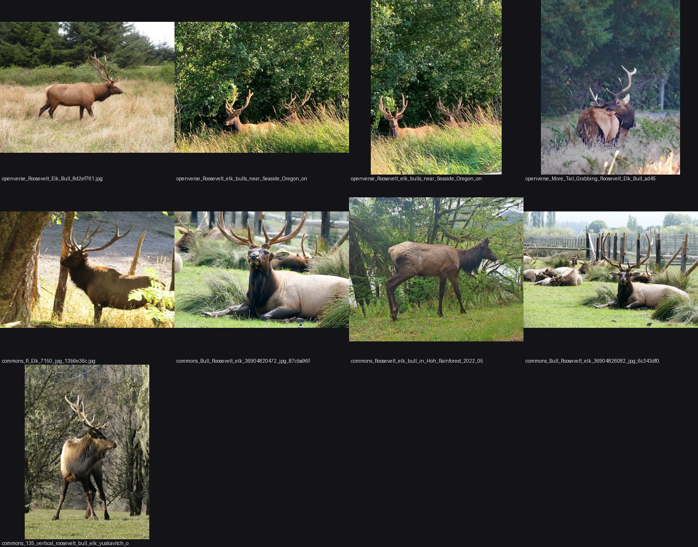
2. naturalist/animals/photos/elk_bull/_sheet.jpgRead: naturalist/animals/photos/elk_herd/_sheet.jpg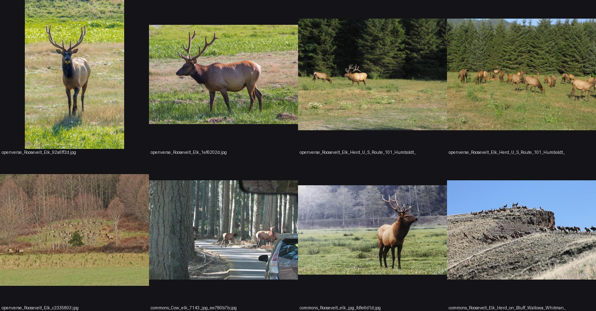
3. naturalist/animals/photos/elk_herd/_sheet.jpgRead: naturalist/animals/photos/blacktail_deer/_sheet.jpg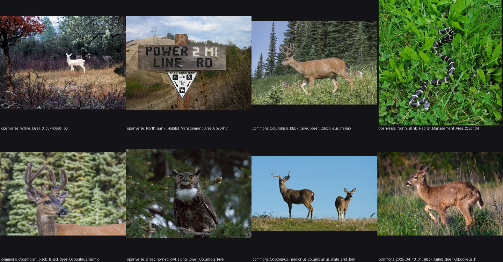
4. naturalist/animals/photos/blacktail_deer/_sheet.jpgRead: naturalist/animals/photos/elk_distance/_sheet.jpg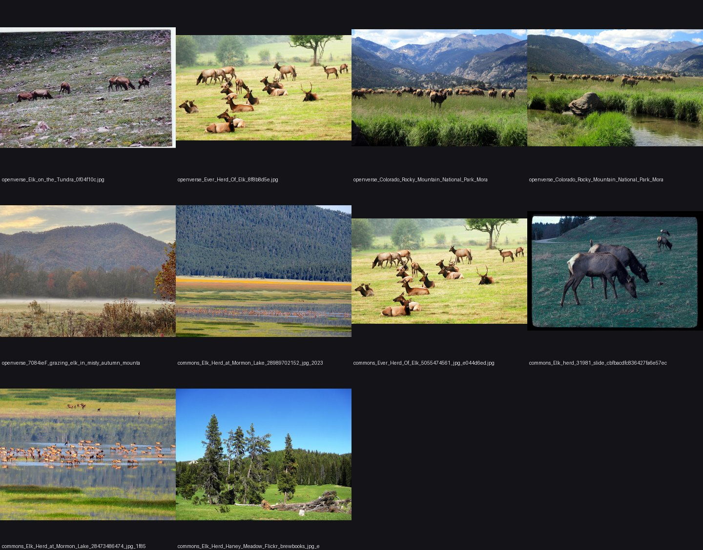
5. naturalist/animals/photos/elk_distance/_sheet.jpgBash: List Ferrari refs, critic log, animal rig
cd ~/work/pixelart-studies; ls pedagogy/master-copy/ref/lw/ | head -50; ls pedagogy/master-copy/ref; tail -40 elements/_critic/LOG.md; ls ~/work/voxsim/crates/vox-paint/examples/; wc -l ~/work/voxsim/crates/vox-paint/examples/animals.rs # output: V01.json V01.png V02.json V02.png V09.json V09.png V11AM.json V11AM.png V13.json V13.png V14.json V14.png V16.json V16.png V16PM.json V16PM.png V19.json V19.png V19PM.json V19PM.png V29PM.json V29PM.png V30.json V30.png lw native.png - willow: s5 REVISE (sticker bushes, no cast shadows, clones). Far bank is lovely. - driftwood: no new work. ## Round 8 (2026-09-25 22:48) - cobbles: LESSONS written through stage 7 (sheets), with an honest open-problems list. Treating it as finished. Ready: hour palettes, pockets-not-outlines, distance ladder, faceted forms. Not ready: cast shadows, water edge, wetness. - channel: s4 colour REVISE. Water colour is the studio's best; camo gravel, Morse boulder and scanline riffle remain. - driftwood: s3 REVISE (root wad reads as a hairy ball), s4 REVISE (static ground, periwinkle stripe, shadow seam). Wet is good. - willow: s5 REVISE. Water edge is its best work but the mirror has no compression; grass contact works; gravel bar has stickers. - New student grass-lod started (no images yet). Coordinator: check consecutive zoom steps for pops. ## Round 9 (2026-09-25 23:00) - willow: sheets A–E REVISE (flat-ellipse cast shadows, LOD vanishing at 3 px, ruled foot). Palette system and leaf scale ready. - channel: s5 WIP notes (cut-paper bars from above). - driftwood: s4 compare, shadow hue shift too strong. - grass-lod: only Ferrari reference crops so far. ## Round 10 (2026-09-25 23:14) - grass-lod: first notes (busier than his, far contrast not compressed, acid palette; asked for 1.25× zoom steps to check pops). - willow: shadow fix landed (textured). LOD still vanishes; stage 5 bar unchanged. - channel: s5 REVISE. Low braid reads like the NZ photo; X-crossing threads from above, uniform bars, loud near gravel. - driftwood: s5 REVISE (parallel lumber pile, no inter-log shadows). - (a 'conifers' folder appeared: not assigned to me, ignoring.) ## Round 11 (2026-09-25 23:26) - grass-lod: zoom v3 checked frame by frame at the metric spikes. **No pops.** Contrast compresses with distance. Mid distance goes salt and pepper; palette acid. - channel: sheets REVISE (loud near gravel, Morse far threads, ruled riffle front). Core water techniques ready. - driftwood: s5 grey piles are a big step (capsule ends, double rims, hairy root wads). - willow: only re-renders of earlier stages. ## Round 12 (2026-09-25 23:39) - channel: FINISHED (sheets and "Where it stands"). Closing read written. - willow: FINISHED (stage 6 sheets and "Where it stands"). Closing read written. - cobbles: finished (round 8). - driftwood: sheets in progress. Root wad now pale wood (fixed) but too sparse; Morse check. - grass-lod: in progress; nothing new. ## Round 13 (2026-09-25 23:50) - driftwood: FINISHED. Closing read written. - All four original students are finished. grass-lod (added mid-run) is still in progress: palette fixed; far salt and pepper open. - New folders (broadleaf, understory, conifers) are not assigned to me; not critiquing them. anima
Bash: Read vox-paint animal rig
cat ~/work/voxsim/crates/vox-paint/examples/animals.rs; grep -rln "fn .*animal\|capsule" ~/work/voxsim/crates/vox-paint/src | head; ls ~/work/pixelart-studies/pedagogy/master-copy/ref/lw | head
# output:
//! Animal sheet on a flat meadow (no sim): every quadruped species, adult
//! (male and female), young, standing / grazing / walking, at scene scales.
//!
//! cargo run --release -p vox-paint --example animals -- OUT_DIR
use vox_core::*;
use vox_paint::*;
fn main() {
let out = std::path::PathBuf::from(std::env::args().nth(1).unwrap_or_else(|| "renders/paint/animals".into()));
std::fs::create_dir_all(&out).unwrap();
let size = IVec3::new(128, 128, 32);
let mut w = World::new(size);
w.sea_level = 2;
for y in 0..size.y {
for x in 0..size.x {
for z in 0..=8 {
let m = if z < 7 { Material::Subsoil } else { Material::Topsoil };
let mut v = Voxel::of(m);
v.moisture = 120;
w.set(IVec3::new(x, y, z), v);
}
if (x * 7 + y * 13) % 3 != 0 {
w.set(IVec3::new(x, y, 9), Voxel::of(Material::Grass));
}
}
}
let species = ["red deer", "elk", "ibex", "wild sheep", "wild boar", "wolf", "fox", "brown bear", "lynx", "hare", "beaver", "squirrel"];
let mut agents = AgentTable::default();
let gz = 9.0;
// Rows (screen): species; columns: male, female, young, grazing, walking.
for (i, k) in species.iter().enumerate() {
for j in 0..5 {
// Place along the screen axes for yaw 45 (rotation 0): screen
// right = (+x, -y), down = (+x, +y).
let (r, d) = (-14.0 + j as f32 * 7.0, 24.0 - i as f32 * 4.4);
let (x, y) = (64.0 + (r + d) * 0.7071, 64.0 + (d - r) * 0.7071);
let mut tags = Tags::ANIMAL;
if j == 0 || j == 4 {
tags = tags | Tags::MALE;
}
if j == 2 {
tags = tags | Tags::YOUNG;
}
let id = agents.spawn(SubsystemId(0), AgentSpec { kind: k, name: None, pos: Vec3::new(x, y, gz + 1.0), extent: 2.0, label: k.to_string(), tags, color: [120, 90, 60] }, 0);
let a = agents.get_mut(id).unwrap();
// Facing screen right (east-south-east) or left.
a.heading = if j % 2 == 0 { -0.785 } else { 2.356 };
let desc = match j {
3 => "graze on the grass",
4 => "walk to the river",
_ => "stand watch",
};
a.intent = Some(Intent { action: Action::new("idle", Target::None), desc: desc.into(), started_tick: 0 });
}
}
let clock = Clock::default();
let env = Env::default();
let mut p = Painter::new();
for mpp in [0.05f32, 0.075, 0.12] {
let mut v = View::new(64.0, 64.0, Scale::Scene);
v.ppm = 1.0 / mpp;
v.zf = auto_zf(v.ppm);
v.hour = Some(16.5);
v.upscale = 3;
v.z_center = Some((gz + 1.0) * VOXEL_M);
let t = std::time::Instant::now();
let img = p.paint(&w, &agents, &clock, &env, &v);
let f = out.join(format!("animals_{mpp:.3}.png"));
Bash: Find baseline animal renders and sprite code
find ~/work/voxsim -path '*animals_0*png' 2>/dev/null | head; grep -n "fn \|elk\|deer" ~/work/voxsim/crates/vox-paint/src/sprites.rs | head -60; wc -l ~/work/voxsim/crates/vox-paint/src/sprites.rs
# output:
32: pub fn new(_fr: &Frame, tr: &Terrain) -> ShadowMap {
40: fn idx(&self, x: f32, y: f32) -> Option<usize> {
49: pub fn at(&self, x: f32, y: f32) -> f32 {
52: pub fn glow_at(&self, x: f32, y: f32) -> f32 {
55: pub fn stamp(&mut self, fr: &Frame, _tr: &Terrain, objs: &[Obj]) {
148:pub fn zfig(fr: &Frame) -> f32 {
180:fn species(kind: &str, male: bool, extent: f32) -> Sp {
182: "red deer" => Sp { len: 1.45, bh: 0.6, leg: 0.75, neck: 0.5, neck_a: 1.0, hl: 0.36, hh: 0.17, ear: 0.13, tail: 0.12, tail_a: -1.2, horns: if male { 1 } else { 0 }, ramp: Ramp::FurRed, belly: true, ..SP0 },
183: "elk" => Sp { len: 1.85, bh: 0.78, leg: 0.88, neck: 0.55, neck_a: 0.85, hl: 0.46, hh: 0.2, ear: 0.14, tail: 0.1, tail_a: -1.3, horns: if male { 1 } else { 0 }, ramp: Ramp::Fur, belly: true, ..SP0 },
206:fn intent_has(r: &AgentRecord, keys: &[&str]) -> bool {
224:pub fn facing(heading: f32, fallback_yaw: f32, hsh: u32, sr: [f32; 2], sv: [f32; 2]) -> (f32, bool) {
237: fn herd_walking_west_faces_west() {
253:pub fn collect(fr: &Frame, tr: &Terrain) -> Vec<Obj> {
432: pub fn of(fr: &Frame, tr: &Terrain) -> Option<Hole> {
449: pub fn keep(&self, x: i32, y: i32, lx: i32, ly: i32) -> bool {
465: pub fn overlaps(&self, x0: f32, y0: f32, x1: f32, y1: f32) -> bool {
475:pub fn stagger(w: f32, hash: u32) -> f32 {
485:fn masked(mask: (f32, f32), lat: (i32, i32), x: i32, y: i32) -> bool {
495:fn phase(fr: &Frame, ax: i32, ay: i32) -> u8 {
500: fn put(&mut self, x: i32, y: i32, ramp: u8, tone: f32) {
503: fn contact(&mut self, rx: f32, ry: f32) {
506: fn is_ground(&self, x: i32, y: i32) -> bool {
511:fn line(b: &mut Brush, x0: f32, y0: f32, x1: f32, y1: f32, w: f32, ramp: u8, tone: impl Fn(f32) -> f32) {
516: fn ok(&self, x: i32, y: i32) -> bool {
519: fn put(&mut self, x: i32, y: i32, ramp: u8, tone: f32) {
522: fn put_d(&mut self, x: i32, y: i32, ramp: u8, tone: f32, dither: bool) {
535: fn outline(&mut self, light_right: bool) {
555: fn blit(&mut self, sp: &vox_trees::Sprite, base: u8) {
586: fn contact(&mut self, rx: f32, ry: f32) {
603:fn human(b: &mut Brush, o: &Obj, h_m: f32, female: bool, walk: bool, sleep: bool, fr: &Frame) {
736: fn new(x0: f32, y0: f32, x1: f32, y1: f32, r0: f32, r1: f32) -> Cap {
739: fn ball(x: f32, y: f32, r: f32) -> Cap {
744: fn eval(&self, px: f32, py: f32) -> Option<(f32, f32, f32)> {
759:fn solid(b: &mut Brush, caps: &[Cap], ramp: u8, ls: [f32; 3], base: f32, belly: Option<f32>) {
794:fn quad(b: &mut Brush, o: &Obj, sp: &Sp, _walk_tick: u64, fr: &Frame) {
956:fn bird(b: &mut Brush, o: &Obj, len: f32, span: f32, fly: bool, swim: bool, sp: u8, fr: &Frame) {
1013:fn fire(b: &mut Brush, o: &Obj, fuel: f32, fr: &Frame) {
1041:fn root_plate(b: &mut Brush, fr: &Frame, fa: &vox_flora::form::Fallen) {
1073:fn fish(b: &mut Brush, len: f32, fr: &Frame) {
1082:pub fn draw_all(fr: &Frame, _tr: &Terrain, objs: &[Obj], cv: &mut Canvas) {
1246 ~/work/voxsim/crateBash: Check Python libs, disk, and driftwood lessons
python3 -c "import numpy, PIL, scipy; print(numpy.__version__, PIL.__version__, scipy.__version__)"; python3 -c "import skimage; print(skimage.__version__)"; nproc 2>/dev/null || sysctl -n hw.ncpu; df -h ~ | tail -1; cat ~/work/pixelart-studies/elements/driftwood/LESSONS.md | head -120 # output: 1.26.4 11.1.0 1.14.0 0.25.2 14 /dev/disk3s5 926Gi 807Gi 77Gi 92% 10M 805M 1% /System/Volumes/Data # Driftwood, after Mark Ferrari Whole trees and logs stranded on river gravel bars: silvered, barkless trunks with root wads and snapped stubs, piled against each other. Everything here is made by the programs in `src/`; the stage images are in `stages/`, the parameter sheets in `sheets/`. Photos are in `refs/` (sources in `refs/sources.tsv`) plus `~/work/pixelart-studies/transfer/refs/braided_driftwood_bar.jpg`.The technique code: - `src/geo.py` is the world: logs as bent, tapering round-cone chains, ends, knots, stubs, root fans, sphere tracing and cast shadows. - `src/tech.py` is the cylinder form rule proven on Ferrari's trunk. - `src/render.py` is the painter: classes, outline, ends, contact, separation, root mass, wet glints, strokes. - `src/marks.py` holds grain, checks, knots and bark. - `src/gravel.py` is the ground. - `src/palette.py` is the light (hour and wetness). - `src/pile.py` places the logs of a pile. - `src/driftwood.py` is the single `paint(...)` call and the sheets. --- ## Stage 0: copying Ferrari first Ferrari never painted driftwood. The nearest passages in his work are the pale sunlit trunk in *Deep Forest* (V09), its grey barked trunk, and the fallen dead tree in the dusk marsh of V02. I read his indexed files directly (the Canvas Cycle JSON; same loader as the master-copy arm), so I could see his form classes as numbers rather than guessing them from RGB. ### 0A: the pale trunk (V09), a smooth cylinder in sun   Printed as index symbols, the 13-px trunk is **five form classes in a fixed spatial order**, counted from the shadow edge:src/run_all.sh # every stage image and sheet (~9 min, 4 processes) nice -n 10 python3 src/driftwood.py sheets # just the sheets- In value those are 138 | 125 | 149 | 179 | 166: reflected rim, core, halftone, light, and a lit edge that falls back one step as the form turns away. The classical order, and the whole range is only 55 grey levels: the mass is held close. - Between classes he uses a checker of the two neighbours, 1–2 px wide, running along the axis. Only three mixing levels occur: pure, 50%, pure. The pattern repeats every 8 rows exactly (a DPaint gradient fill). - **Dithering follows spatial adjacency, not value adjacency.** The core (125) dithers straight into the halftone (149), skipping the cool rim colour (138) that lies between them in value. The first copy (`s0a`) fitted a 1-D profile across his own silhouette: 87% of trunk pixels match his class exactly. The second (`s0a2`) matters more: it paints the trunk from a lit 3-D cylinder, with the classes as a function of the angle `d` around the axis measured fromcc 4444 3 3 1 1 2 2 c = cool sky-blue rim 4 = core 3 = halftone 1 = light 2 = lit edge
Bash: Contact sheet of Ferrari LW scenes
cd ~/work/pixelart-studies/pedagogy/master-copy/ref/lw; ls; python3 -c "
from PIL import Image; import glob
fs=sorted(glob.glob('*.png')); ims=[Image.open(f).convert('RGB') for f in fs]
w=320;
sheet=Image.new('RGB',(w*4, 240*((len(ims)+3)//4)))
for i,im in enumerate(ims):
im=im.resize((w,int(im.height*w/im.width))); sheet.paste(im,((i%4)*w,(i//4)*240))
sheet.save('(manager scratchpad)/lw_contact.png'); print(fs)"
# output:
V01.json
V01.png
V02.json
V02.png
V09.json
V09.png
V11AM.json
V11AM.png
V13.json
V13.png
V14.json
V14.png
V16.json
V16.png
V16PM.json
V16PM.png
V19.json
V19.png
V19PM.json
V19PM.png
V29PM.json
V29PM.png
V30.json
V30.png
['V01.png', 'V02.png', 'V09.png', 'V11AM.png', 'V13.png', 'V14.png', 'V16.png', 'V16PM.png', 'V19.png', 'V19PM.png', 'V29PM.png', 'V30.png']Read: (manager scratchpad)/lw_contact.png 6. (manager scratchpad)/lw_contact.png
6. (manager scratchpad)/lw_contact.png
Bash: Inspect Ferrari index loader
cd ~/work/pixelart-studies/elements/willow; sed -n 1,80p lw.py; python3 -c "
import json;d=json.load(open('~/work/pixelart-studies/pedagogy/master-copy/ref/lw/V19.json'));print(d.keys() if isinstance(d,dict) else type(d))"
# output:
Exit code 1
"""Load Ferrari's Living Worlds scenes as index maps (format from the Canvas Cycle demo)."""
import re, json, numpy as np
REF = "~/work/pixelart-studies/pedagogy/master-copy/ref/lw"
def load(name):
t = open(f"{REF}/{name}.json").read()
t = re.sub(r'([{,])\s*([A-Za-z_]+)\s*:', r'\1"\2":', t).replace("'", '"')
d = json.loads(t)
d["pal"] = np.array(d["colors"], dtype=np.uint8)
d["idx"] = np.array(d["pixels"], dtype=np.int32).reshape(d["height"], d["width"])
return d
def lum(rgb):
rgb = np.asarray(rgb, float)
return 0.2126 * rgb[..., 0] + 0.7152 * rgb[..., 1] + 0.0722 * rgb[..., 2]
Traceback (most recent call last):
File "<string>", line 2, in <module>
File "~/miniconda3/lib/python3.12/json/__init__.py", line 293, in load
return loads(fp.read(),
^^^^^^^^^^^^^^^^
File "~/miniconda3/lib/python3.12/json/__init__.py", line 346, in loads
return _default_decoder.decode(s)
^^^^^^^^^^^^^^^^^^^^^^^^^^
File "~/miniconda3/lib/python3.12/json/decoder.py", line 337, in decode
obj, end = self.raw_decode(s, idx=_w(s, 0).end())
^^^^^^^^^^^^^^^^^^^^^^^^^^^^^^^^^^^^^^
File "~/miniconda3/lib/python3.12/json/decoder.py", line 353, in raw_decode
obj, end = self.scan_once(s, idx)
^^^^^^^^^^^^^^^^^^^^^^
json.decoder.JSONDecodeError: Expecting property name enclosed in double quotes: line 1 column 2 (char 1)Bash: Check imgfetch usage and make folders
sed -n 1,40p ~/work/pixelart-studies/tools/imgfetch.py; mkdir -p ~/work/pixelart-studies/elements/deer-elk/{src,refs,stages,sheets}
# output:
#!/usr/bin/env python3
"""imgfetch: fast, polite reference-image sourcing (Wikimedia Commons + Openverse).
python3 imgfetch.py "cinder cone scoria slope" -n 12 -o refs/cinder
python3 imgfetch.py -f queries.txt -n 8 -o refs # one query per line; subdir per query
options: --src commons,openverse --width 1200 --sheet (writes <out>/_sheet.jpg)
Writes images plus <out>/sources.tsv (file, title, license, author, page url).
Cached: files already present are skipped. Handles 429/5xx with Retry-After backoff.
Parallel downloads (4 workers) with a shared per-host rate limiter (~3 req/s; Wikimedia's media
host is kept to 1 per 2 s and slows further on any 429, since it throttles hard per IP after bursts).
Openverse (mostly Flickr-hosted CC images) is the primary source because it stays fast.
"""
import argparse, concurrent.futures as cf, json, os, re, sys, threading, time, urllib.error, urllib.parse, urllib.request
UA = "pixelart-studies-imgfetch/1.0 (research; contact: local)"
_locks = {}; _last = {}; _glock = threading.Lock()
SLOW_HOSTS = {"upload.wikimedia.org": 2.0} # Wikimedia media host: ~1 req/s or it 429s
def _throttle(host, min_gap=0.34):
min_gap = SLOW_HOSTS.get(host, min_gap)
with _glock:
lk = _locks.setdefault(host, threading.Lock())
with lk:
dt = time.time() - _last.get(host, 0)
if dt < min_gap:
time.sleep(min_gap - dt)
_last[host] = time.time()
def get(url, tries=4, timeout=25):
host = urllib.parse.urlparse(url).netloc
if host == "upload.wikimedia.org":
tries = 2 # fail fast; other sources fill in
for i in range(tries):
_throttle(host)
try:
req = urllib.request.Request(url, headers={"User-Agent": UA})
return urllib.request.urlopen(req, timeout=timeout).read()
except urllib.error.HTTPError as e:Bash: Fetch reference photos for gaits and poses
cd ~/work/pixelart-studies/elements/deer-elk/refs; cat > q.txt <<'EOF' elk trotting elk running herd elk bedded down elk bugling bull elk calf spotted black-tailed deer fawn black-tailed deer running deer bounding muybridge muybridge elk elk herd aerial view elk herd distant meadow deer silhouette ridge elk silhouette sunset roosevelt elk cow mule deer stotting deer grazing side view EOF python3 ~/work/pixelart-studies/tools/imgfetch.py -f q.txt -n 10 -o . --src openverse --sheet 2>&1 | tail -20; ls # output: download failed: HTTP Error 403: Forbidden download failed: HTTP Error 429: Too many requests - please contact noc@wikimedia.org to discuss a less disruptive approach or instead use thumbnail images in sizes listed on https://w.wiki/GHai. (0c640b1) download failed: HTTP Error 429: Too many requests - please contact noc@wikimedia.org to discuss a less disruptive approach or instead use thumbnail images in sizes listed on https://w.wiki/GHai. (0c640b1) download failed: HTTP Error 429: Too many requests - please contact noc@wikimedia.org to discuss a less disruptive approach or instead use thumbnail images in sizes listed on https://w.wiki/GHai. (0c640b1) 'elk trotting': 10 images -> ./elk_trotting 'elk running herd': 10 images -> ./elk_running_herd 'elk bedded down': 10 images -> ./elk_bedded_down 'elk bugling bull': 10 images -> ./elk_bugling_bull 'elk calf spotted': 10 images -> ./elk_calf_spotted 'black-tailed deer fawn': 10 images -> ./black_tailed_deer_fawn 'black-tailed deer running': 10 images -> ./black_tailed_deer_running 'deer bounding muybridge': 9 images -> ./deer_bounding_muybridge 'muybridge elk': 4 images -> ./muybridge_elk 'elk herd aerial view': 10 images -> ./elk_herd_aerial_view 'elk herd distant meadow': 8 images -> ./elk_herd_distant_meadow 'deer silhouette ridge': 9 images -> ./deer_silhouette_ridge 'elk silhouette sunset': 10 images -> ./elk_silhouette_sunset 'roosevelt elk cow': 9 images -> ./roosevelt_elk_cow 'mule deer stotting': 9 images -> ./mule_deer_stotting 'deer grazing side view': 4 images -> ./deer_grazing_side_view black_tailed_deer_fawn black_tailed_deer_running deer_bounding_muybridge deer_grazing_side_view deer_silhouette_ridge elk_bedded_down elk_bugling_bull elk_calf_spotted elk_herd_aerial_view elk_herd_distant_meadow elk_running_herd elk_silhouette_sunset elk_trotting mule_deer_stotting muybridge_elk q.txt roosevelt_elk_cow
Read: elements/deer-elk/refs/elk_trotting/_sheet.jpg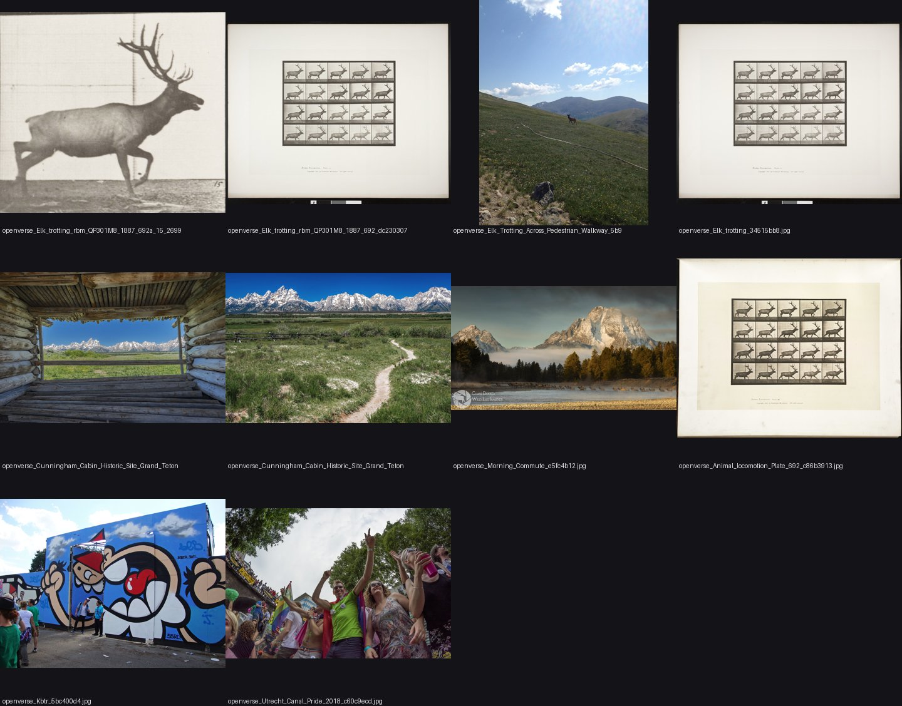
7. elements/deer-elk/refs/elk_trotting/_sheet.jpgRead: elements/deer-elk/refs/deer_bounding_muybridge/_sheet.jpg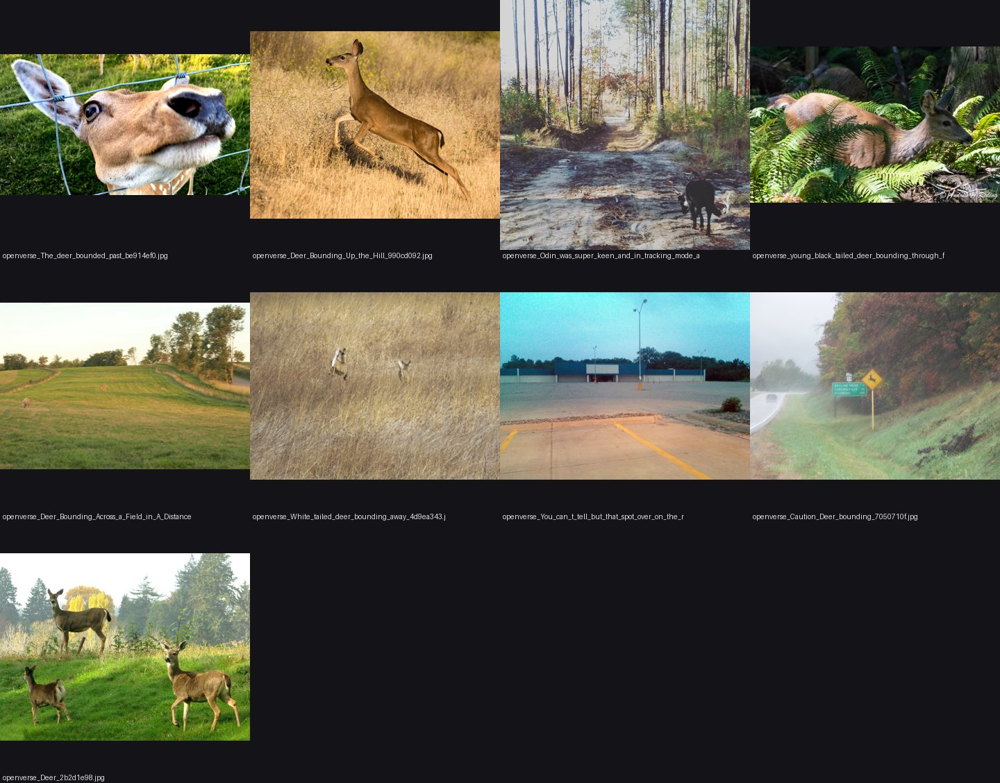
8. elements/deer-elk/refs/deer_bounding_muybridge/_sheet.jpgBash: List Muybridge image sizes
cd ~/work/pixelart-studies/elements/deer-elk/refs; python3 -c "
from PIL import Image;import glob
for f in glob.glob('elk_trotting/*')+glob.glob('muybridge_elk/*'):
try: im=Image.open(f); print(f, im.size)
except Exception as e: pass"
# output:
elk_trotting/openverse_Animal_locomotion_Plate_692_c86b3913.jpg (1023, 814)
elk_trotting/openverse_Elk_Trotting_Across_Pedestrian_Walkway_5b9439b7.jpg (768, 1024)
elk_trotting/openverse_Elk_trotting_rbm_QP301M8_1887_692_dc230307.jpg (1024, 830)
elk_trotting/openverse_Morning_Commute_e5fc4b12.jpg (1024, 563)
elk_trotting/_sheet.jpg (1440, 1128)
elk_trotting/openverse_Cunningham_Cabin_Historic_Site_Grand_Teton_Natio_08680cdd.jpg (1023, 683)
elk_trotting/openverse_Kbtr_5bc400d4.jpg (1024, 768)
elk_trotting/openverse_Utrecht_Canal_Pride_2018_c60c9ecd.jpg (1024, 683)
elk_trotting/openverse_Elk_trotting_34515bb8.jpg (1024, 830)
elk_trotting/openverse_Elk_trotting_rbm_QP301M8_1887_692a_15_2699e75e.jpg (918, 819)
elk_trotting/openverse_Cunningham_Cabin_Historic_Site_Grand_Teton_Natio_220c96ca.jpg (1024, 685)
muybridge_elk/_sheet.jpg (1440, 376)
muybridge_elk/openverse_Animal_locomotion_Plate_695_4c9a9271.jpg (1024, 823)
muybridge_elk/openverse_Elk_galloping_rbm_QP301M8_1887_695b_3_87843c56.jpg (508, 1024)
muybridge_elk/openverse_Elk_trotting_rbm_QP301M8_1887_692a_15_2699e75e.jpg (918, 819)
muybridge_elk/openverse_Animal_locomotion_Plate_693_c3992946.jpg (1023, 816)Bash: Crop Muybridge plates
cd ~/work/pixelart-studies/elements/deer-elk/refs; python3 -c "
from PIL import Image
im=Image.open('elk_trotting/openverse_Elk_trotting_rbm_QP301M8_1887_692_dc230307.jpg'); print(im.size)
im.crop((300,190,760,620)).resize((920,860)).save('(manager scratchpad)/m692.png')
im=Image.open('muybridge_elk/openverse_Animal_locomotion_Plate_695_4c9a9271.jpg')
im.crop((300,190,760,620)).resize((920,860)).save('(manager scratchpad)/m695.png')
"
# output:
(1024, 830)Read: (manager scratchpad)/m692.png 9. (manager scratchpad)/m692.png
9. (manager scratchpad)/m692.png
Read: (manager scratchpad)/m695.png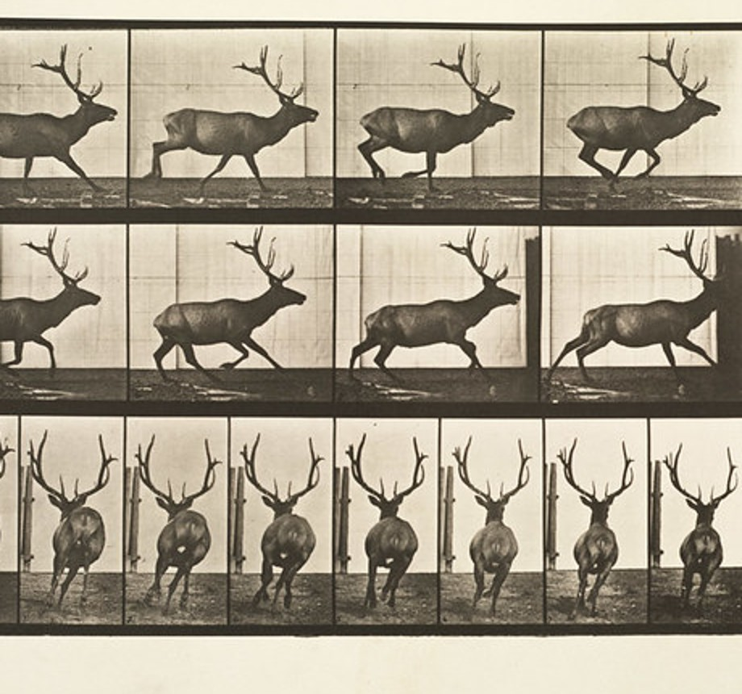
10. (manager scratchpad)/m695.pngBash: Combine reference sheets for viewing
cd ~/work/pixelart-studies/elements/deer-elk/refs; python3 -c "
from PIL import Image
names=['elk_bedded_down','elk_bugling_bull','elk_calf_spotted','elk_herd_aerial_view','elk_herd_distant_meadow','black_tailed_deer_running','black_tailed_deer_fawn','elk_silhouette_sunset','deer_silhouette_ridge','roosevelt_elk_cow','mule_deer_stotting','elk_running_herd']
ims=[Image.open(n+'/_sheet.jpg') for n in names]
W=720
out=Image.new('RGB',(W*2, 0+sum(int(im.height*W/im.width) for im in ims[::2])+400))
y=[0,0]
for i,im in enumerate(ims):
c=i%2; r=im.resize((W,int(im.height*W/im.width))); out.paste(r,(c*W,y[c])); y[c]+=r.height
out=out.crop((0,0,W*2,max(y)))
out.save('(manager scratchpad)/refs_all.jpg')
print(out.size)"
# output:
(1440, 3384)Read: (manager scratchpad)/refs_all.jpg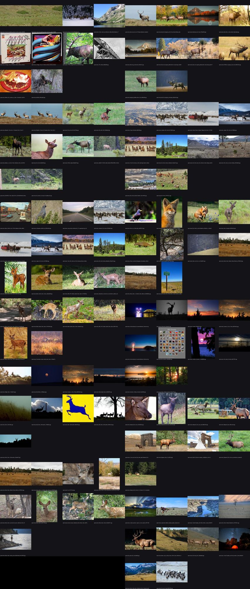
11. (manager scratchpad)/refs_all.jpgRefs are good (Muybridge elk trot and gallop plates in particular). Now the rig.
Bash: Look at willow palette approach
cd ~/work/pixelart-studies/elements/willow; sed -n 1,60p palette.py; grep -n "^def " wpaint.py palette.py | head -40
# output:
"""Willow palettes: (material, step) -> RGB for a season, an hour and a depth.
Light as hue shift: every ramp walks from a cool dark (tinted by the sky's ambient colour) to a warm
light (tinted by the sun). Depth lifts and cools the darks and leaves the lights nearly alone
(measured on Ferrari by the master-copy study). Silver is its own ramp: the undersides of willow
leaves, grey-green to pale silver, cooler than the green.
"""
import numpy as np
from wpaint import SKY, GRAVEL, LEAF, SILVER, STEM, WATER, GRASS, EARTH, FAR
LEAFS = 10
def _lin(c):
c = np.asarray(c, float) / 255
return np.where(c > 0.04045, ((c + 0.055) / 1.055) ** 2.4, c / 12.92)
def _srgb(l):
l = np.clip(l, 0, 1)
return np.where(l > 0.0031308, 1.055 * l ** (1 / 2.4) - 0.055, 12.92 * l) * 255
def to_lab(c):
l = _lin(c)
M1 = np.array([[0.4122214708, 0.5363325363, 0.0514459929], [0.2119034982, 0.6806995451, 0.1073969566],
[0.0883024619, 0.2817188376, 0.6299787005]])
lms = np.cbrt(M1 @ l)
M2 = np.array([[0.2104542553, 0.7936177850, -0.0040720468], [1.9779984951, -2.4285922050, 0.4505937099],
[0.0259040371, 0.7827717662, -0.8086757660]])
return M2 @ lms
def to_rgb(lab):
M2i = np.array([[1, 0.3963377774, 0.2158037573], [1, -0.1055613458, -0.0638541728], [1, -0.0894841775, -1.2914855480]])
lms = (M2i @ lab) ** 3
M1i = np.array([[4.0767416621, -3.3077115913, 0.2309699292], [-1.2684380046, 2.6097574011, -0.3413193965],
[-0.0041960863, -0.7034186147, 1.7076147010]])
return tuple(int(round(v)) for v in _srgb(M1i @ lms))
def mix(a, b, t):
return to_rgb(to_lab(a) * (1 - t) + to_lab(b) * t)
def ramp(dark, light, n, sun, amb, warm=0.25, cool=0.3):
"""n steps from dark to light in OKLab; lights pulled toward the sun colour, darks toward ambient."""
out = []
for i in range(n):
t = i / max(n - 1, 1)
c = to_lab(dark) * (1 - t) + to_lab(light) * t
c = c * (1 - warm * t ** 1.5) + to_lab(sun) * warm * t ** 1.5 if warm else c
c = c * (1 - cool * (1 - t) ** 2) + to_lab(amb) * cool * (1 - t) ** 2 if cool else c
out.append(to_rgb(c))
return out
SEASONS = {
# lit base (dark, light) lit leaves (mid, top) silver (lo, hi) twig (dark, light) shadow (dark, mark)
"summer": dict(base=((14, 36, 18), (30, 62, 30)), leaf=((92, 132, 56), (168, 200, 96)), silver=((120, 142, 128), (196, 214, 200)),
palette.py:14:def _lin(c):
palette.py:19:def _srgb(l):
palette.py:24:def to_lab(c):
palette.py:34:def to_rgb(lab):
palette.py:42:def mix(a, b, t):
palette.py:46:def ramp(dark, light, n, sun, amb, warm=0.25, cool=0.3):
palette.py:80:def willow_palette(season="summer", hour="noon", depth=0.0, haze=None):
wpaint.py:25:def grey_palette():
wpaint.py:73:def norm3(v):
wpaint.py:78:def sun(az_deg, el_deg):
wpaint.py:84:def value_noise(shape, scale, rng, octaves=1):
wpaint.py:101:def upscale(img, k):Write: elements/deer-elk/src/rig.py
"""The animal as a 3-D rig: species proportions, pose, gait -> a list of tubes.
Units are shoulder heights (H = 1). Axes: x forward, y left, z up; the animal stands on z = 0
with its withers near x = 0.3.
A tube is a centreline of stations, each with an elliptical cross-section (a along the local
"up" normal, b along the lateral binormal), a material function, and a flag for thin parts
(lower legs, ears, antlers, tail) that the pixel painter redraws as clean runs when they get
narrower than a pixel or two.
The torso is not a capsule. It is lofted from stations read off side-view photos and the
Muybridge plates: the level back with the withers a touch above the croup, the deep chest, the
belly rising into the flank tuck, the ham dropping behind it and the buttock. That profile is
most of what separates a cervid from the horse the old capsule rig drew.
"""
import numpy as np
from dataclasses import dataclass, field, replace
# material ids (hide regions). The painter maps each to a ramp.
BODY, DARK, PALE, BELLY, LEG, HOOF, ANTLER, TIP, NOSE, EARIN, THROAT, TAILTOP, SPOT, VELVET, EYE = range(15)
MAT_NAMES = ["body", "dark", "pale", "belly", "leg", "hoof", "antler", "tip", "nose", "earin",
"throat", "tailtop", "spot", "velvet", "eye"]
@dataclass
class Tube:
name: str
c: np.ndarray # (n,3) centreline
a: np.ndarray # (n,) radius along up-normal
b: np.ndarray # (n,) radius along lateral
up: np.ndarray # (3,) reference up for framing
mat: object # int or fn(u in 0..1 along, theta, pts) -> ids
thin: bool = False
cap0: bool = True
cap1: bool = True
width_px_min: float = 1.0 # when drawn as a line, never thinner than this
# ---------------------------------------------------------------- species
@dataclass
class Species:
name: str
H: float # shoulder height in metres
torso: list # stations (x, ztop, zbot, halfwidth)
neck_base: tuple # (x, z) where the neck leaves the chest
neck_len: float
neck_r0: tuple # (a, b) at base
neck_r1: tuple # (a, b) at the head
head_len: float
head_r0: tuple # cranium (a, b)
head_r1: tuple # muzzle (a, b)
ear_len: float
ear_w: float
fore_attach: tuple # (x, z, y) elbow
hind_attach: tuple # (x, z, y) stifle
fore_len: tuple # forearm, cannon, pastern+hoof
hind_len: tuple # gaskin, cannon, pastern+hoof
fore_r: tuple # forearm top, carpus, cannon, fetlock, hoof
hind_r: tuple # gaskin top, hock, cannon, fetlock, hoof
tail_len: float
tail_w: float
mane: float = 0.0 # extra ventral depth of the neck (bull mane), in H
colour: str = "elk"
ELK_TORSO = [
# x ztop zbot hw (from side-view photos of Roosevelt cows, Muybridge 692)
(0.60, 0.79, 0.68, 0.05),
(0.54, 0.90, 0.58, 0.12),
(0.44, 0.985, 0.52, 0.16), # chest, deep
(0.30, 1.00, 0.50, 0.18), # withers peak over the girth
(0.12, 0.985, 0.51, 0.20),
(-0.08, 0.965, 0.53, 0.21), # barrel
(-0.28, 0.955, 0.575, 0.20),
(-0.42, 0.955, 0.62, 0.18), # flank tuck
(-0.54, 0.96, 0.60, 0.175), # ham drops behind the tuck
(-0.66, 0.945, 0.62, 0.15),
(-0.75, 0.90, 0.67, 0.10), # buttock
(-0.80, 0.83, 0.72, 0.04),
]
DEER_TORSO = [
(0.55, 0.78, 0.66, 0.045),
(0.49, 0.89, 0.57, 0.11),
(0.40, 0.975, 0.52, 0.145),
(0.27, 1.00, 0.51, 0.16),
(0.10, 0.985, 0.52, 0.175),
(-0.08, 0.97, 0.54, 0.18),
(-0.26, 0.97, 0.585, 0.17),
(-0.40, 0.975, 0.63, 0.155),
(-0.51, 0.985, 0.61, 0.15), # deer rump sits level with or above the withers
(-0.62, 0.975, 0.63, 0.13),
(-0.70, 0.93, 0.68, 0.085),
(-0.74, 0.87, 0.73, 0.035),
]
SPECIES = {
"elk": Species(
name="elk", H=1.45, torso=ELK_TORSO,
neck_base=(0.46, 0.80), neck_len=0.56, neck_r0=(0.19, 0.12), neck_r1=(0.10, 0.075),
head_len=0.40, head_r0=(0.085, 0.075), head_r1=(0.05, 0.042),
ear_len=0.15, ear_w=0.055,
fore_attach=(0.36, 0.60, 0.105), hind_attach=(-0.50, 0.70, 0.11),
fore_len=(0.30, 0.235, 0.085), hind_len=(0.33, 0.30, 0.085),
fore_r=(0.068, 0.036, 0.026, 0.032, 0.03), hind_r=(0.085, 0.04, 0.027, 0.032, 0.03),
tail_len=0.09, tail_w=0.04, colour="elk"),
"deer": Species(
name="deer", H=0.92, torso=DEER_TORSO,
neck_base=(0.43, 0.80), neck_len=0.52, neck_r0=(0.15, 0.10), neck_r1=(0.075, 0.06),
head_len=0.33, head_r0=(0.075, 0.068), head_r1=(0.038, 0.034),
ear_len=0.21, ear_w=0.085,
fore_attach=(0.33, 0.60, 0.09), hind_attach=(-0.46, 0.71, 0.095),
fore_len=(0.30, 0.25, 0.08), hind_len=(0.33, 0.32, 0.08),
fore_r=(0.055, 0.03, 0.02, 0.026, 0.024), hind_r=(0.075, 0.034, 0.021, 0.026, 0.024),
tail_len=0.20, tail_w=0.06, colour="deer"),
}
@dataclass
class Individual:
species: str = "elk"
sex: str = "f" # f, m
age: str = "adult" # adult, yearling, young (calf / fawn)
season: str = "autumn" # spring, summer, autumn, winter (coat, antler state)
seed: int = 0
def spec(self):
sp = SPECIES[self.species]
rng = np.random.default_rng(self.seed + 17)
j = lambda s: 1 + rng.normal(0, s)
sp = replace(sp)
if self.sex == "m" and self.age == "adult":
if self.species == "elk":
# bulls: bigger front end, heavier neck, the mane
sp = replace(sp, neck_r0=(0.24, 0.14), neck_r1=(0.12, 0.085), mane=0.07,
head_r0=(0.095, 0.082), torso=[(x, zt + (0.02 if x > 0 else 0), zb - (0.015 if x > 0.1 else 0), hw * 1.05) for x, zt, zb, hw in sp.torso])
else:
sp = replace(sp, neck_r0=(0.17, 0.11), neck_r1=(0.085, 0.066))
if self.age == "young":
# calves and fawns: legs long for the body, big head and ears, short neck
s = 0.62
sp = replace(sp, torso=[(x * 0.9, 0.62 + (zt - 0.62) * 0.8, 0.62 + (zb - 0.62) * 0.8 + 0.03, hw * 0.8) for x, zt, zb, hw in sp.torso],
neck_len=sp.neck_len * 0.8, neck_r0=tuple(v * 0.8 for v in sp.neck_r0), neck_r1=tuple(v * 0.85 for v in sp.neck_r1),
head_len=sp.head_len * 0.82, head_r0=tuple(v * 0.9 for v in sp.head_r0), head_r1=tuple(v * 0.9 for v in sp.head_r1),
ear_len=sp.ear_len * 1.05, ear_w=sp.ear_w * 1.05,
fore_attach=(sp.fore_attach[0] * 0.9, 0.62 + (sp.fore_attach[1] - 0.62) * 0.8 + 0.035, sp.fore_attach[2] * 0.8),
hind_attach=(sp.hind_attach[0] * 0.9, 0.62 + (sp.hind_attach[1] - 0.62) * 0.8 + 0.035, sp.hind_attach[2] * 0.8),
neck_base=(sp.neck_base[0] * 0.9, 0.62 + (sp.neck_base[1] - 0.62) * 0.8 + 0.03),
fore_len=tuple(v * 1.06 for v in sp.fore_len), hind_len=tuple(v * 1.06 for v in sp.hind_len),
fore_r=tuple(v * 0.8 for v in sp.fore_r), hind_r=tuple(v * 0.8 for v in sp.hind_r),
H=sp.H * s)
elif self.age == "yearling":
sp = replace(sp, H=sp.H * 0.88, torso=[(x, zt, zb + 0.01, hw * 0.92) for x, zt, zb, hw in sp.torso])
# individual variation, a few percent
sp = replace(sp, H=sp.H * j(0.03), neck_len=sp.neck_len * j(0.03), head_len=sp.head_len * j(0.03),
torso=[(x * j(0.004), zt, zb, hw) for x, zt, zb, hw in sp.torso])
return sp
def antler(self):
"""None, 'spike', 'velvet', 'hard' (+ 'deer' variants)."""
if self.sex != "m":
return None
if self.age == "young":
return None
if self.season == "spring":
return None if self.species == "elk" else None
if self.season == "summer":
return "velvet"
if self.age == "yearling":
return "spike"
return "hard"
# ---------------------------------------------------------------- pose
@dataclass
class Pose:
"""Every angle in degrees. Legs are either IK foot targets (gait) or explicit angles (lie)."""
body_z: float = 0.0 # vertical offset of the whole body
pitch: float = 0.0 # nose up +
flex: float = 0.0 # spine flexion: + arches (gathered), - hollows (extended)
neck_ang: float = 42.0 # neck axis above horizontal
head_ang: float = -48.0 # head axis relative to horizontal (negative = nose down)
neck_turn: float = 0.0 # yaw of the neck (toward the viewer +)
ear_ang: float = 25.0 # ears up from horizontal-back
ear_fwd: float = 0.0 # ears cupped forward (alert) 0..1
tail_up: float = 0.0 # 0 down, 1 flagged
mouth: float = 0.0 # bugle
legs: dict = field(default_factory=dict) # name -> ("ik", (x, z), pastern_deg) or ("fk", (a1, a2, a3))
lie: float = 0.0 # 0 standing, 1 bedded
LEG_NAMES = ["LF", "RF", "LH", "RH"]
def gait_pose(sp: Species, gait: str, phase: float, rng=None) -> Pose:
"""A pose from a gait and a phase in [0,1). Timings after Muybridge (walk: lateral sequence;
trot: diagonals; gallop: transverse, gathered suspension; bound and stot for deer)."""
p = Pose()
fx, fz, _ = sp.fore_attach
hx, hz, _ = sp.hind_attach
stand_h_f = sum(sp.fore_len) * 0.985
if gait == "stand":
p.legs = {"LF": ("ik", (fx + 0.02, 0.0), 38), "RF": ("ik", (fx - 0.03, 0.0), 38),
"LH": ("ik", (hx - 0.02, 0.0), 44), "RH": ("ik", (hx + 0.04, 0.0), 44)}
return p
if gait == "alert":
p.neck_ang, p.head_ang, p.ear_fwd = 72.0, -18.0, 1.0
p.legs = {"LF": ("ik", (fx + 0.04, 0.0), 36), "RF": ("ik", (fx - 0.0, 0.0), 36),
"LH": ("ik", (hx - 0.04, 0.0), 44), "RH": ("ik", (hx + 0.0, 0.0), 44)}
return p
if gait == "graze":
p.neck_ang, p.head_ang, p.ear_ang = -52.0, -82.0, 10.0
p.pitch = -1.5
p.legs = {"LF": ("ik", (fx + 0.10, 0.0), 40), "RF": ("ik", (fx - 0.02, 0.0), 40),
"LH": ("ik", (hx - 0.03, 0.0), 44), "RH": ("ik", (hx + 0.06, 0.0), 44)}
return p
if gait == "bugle":
p.neck_ang, p.head_ang, p.mouth, p.ear_ang = 32.0, 38.0, 1.0, -10.0
p.legs = {"LF": ("ik", (fx + 0.07, 0.0), 36), "RF": ("ik", (fx + 0.0, 0.0), 36),
"LH": ("ik", (hx - 0.06, 0.0), 44), "RH": ("ik", (hx - 0.01, 0.0), 44)}
return p
if gait == "lie":
p.lie = 1.0
p.body_z = -(fz - 0.02) - 0.02
p.neck_ang, p.head_ang = 55.0, -30.0
p.legs = {"LF": ("fk", (-100, 70, -40)), "RF": ("fk", (-95, 160, 40)),
"LH": ("fk", (80, -150, 30)), "RH": ("fk", (75, -145, 20))}
return p
# moving gaits: (offsets per leg, duty factor, stride, lift fore, lift hind, bob)
G = {
"walk": dict(off={"LH": 0.0, "LF": 0.25, "RH": 0.5, "RF": 0.75}, duty=0.66, stride=0.52, lf=0.13, lh=0.10, bob=0.012,
neck=30.0, head=-45.0),
"trot": dict(off={"LF": 0.0, "RH": 0.0, "RF": 0.5, "LH": 0.5}, duty=0.42, stride=0.78, lf=0.30, lh=0.18, bob=0.03,
neck=48.0, head=-22.0),
"gallop": dict(off={"LH": 0.0, "RH": 0.08, "LF": 0.44, "RF": 0.54}, duty=0.30, stride=1.05, lf=0.26, lh=0.22, bob=0.07,
neck=24.0, head=-30.0),
"bound": dict(off={"LH": 0.0, "RH": 0.02, "LF": 0.40, "RF": 0.44}, duty=0.26, stride=1.1, lf=0.34, lh=0.30, bob=0.12,
neck=40.0, head=-25.0),
"stot": dict(off={"LH": 0.0, "RH": 0.0, "LF": 0.0, "RF": 0.0}, duty=0.25, stride=0.25, lf=0.35, lh=0.35, bob=0.25,
neck=50.0, head=-20.0),
}[gait]
p.neck_ang, p.head_ang = G["neck"], G["head"]
legs = {}
airborne_all = True
for name in LEG_NAMES:
fore = name[1] == "F"
ph = (phase - G["off"][name]) % 1.0
ax = fx if fore else hx
S = G["stride"]
# foot travels relative to its limb root: stance +S/2 -> -S/2 on the ground, then swing
if ph < G["duty"]:
s = ph / G["duty"]
x = ax + S * (0.5 - s) + (0.02 if fore else -0.0)
z = 0.0
past = 42 if fore else 46
if gait in ("gallop", "bound"):
past = 30 + 25 * np.sin(np.pi * s)
airborne_all = False
else:
s = (ph - G["duty"]) / (1 - G["duty"])
e = 0.5 - 0.5 * np.cos(np.pi * s) # ease
x = ax + S * (-0.5 + e)
lift = G["lf"] if fore else G["lh"]
z = lift * np.sin(np.pi * s ** (0.8 if fore else 1.1))
# swing: the pastern folds (fore: hoof turns up behind; hind: tucked)
past = (-70 if fore else -40) * np.sin(np.pi * s) + (42 if fore else 46) * (1 - np.sin(np.pi * s))
if gait == "stot":
x = ax + 0.02
z = 0.0
past = 20
legs[name] = ("ik", (x, z), past)
p.legs = legs
# body bob: lowest mid-stance of the diagonal, highest at suspension
if gait == "walk":
p.body_z = -G["bob"] * np.cos(4 * np.pi * phase)
p.head_ang += 6 * np.sin(4 * np.pi * phase)
p.neck_ang += 4 * np.sin(4 * np.pi * phase + 0.6)
elif gait == "trot":
p.body_z = G["bob"] * np.cos(4 * np.pi * phase)
elif gait in ("gallop", "bound"):
# gathered suspension around phase ~0.85 (all four under), extended around 0.35
p.body_z = G["bob"] * (0.5 + 0.5 * np.cos(2 * np.pi * (phase - 0.82)))
p.flex = 9 * np.cos(2 * np.pi * (phase - 0.82))
p.pitch = 6 * np.sin(2 * np.pi * (phase - 0.2))
p.neck_ang += 8 * np.sin(2 * np.pi * (phase - 0.1))
p.tail_up = 1.0
elif gait == "stot":
up = max(0.0, np.sin(2 * np.pi * phase))
p.body_z = G["bob"] * up
p.tail_up = 1.0
for name in LEG_NAMES:
fore = name[1] == "F"
p.legs[name] = ("ik", ((fx + 0.03) if fore else (hx - 0.02), 0.0 if up == 0 else 0.0), 25)
if gait in ("gallop", "bound"):
p.ear_ang = -5.0
return p
# ---------------------------------------------------------------- geometry helpers
def _rot_y(v, deg, about):
"""Rotate points in the x-z plane (pitch) about a point."""
t = np.radians(deg)
c, s = np.cos(t), np.sin(t)
v = np.asarray(v, float) - about
x, z = v[..., 0], v[..., 2]
out = v.copy()
out[..., 0] = c * x - s * z
out[..., 2] = s * x + c * z
return out + about
def _dir(ang_deg, turn_deg=0.0):
t = np.radians(ang_deg)
u = np.radians(turn_deg)
return np.array([np.cos(t) * np.cos(u), np.cos(t) * np.sin(u), np.sin(t)])
def ik2(root, target, L1, L2, bend_forward):
"""2-bone IK in the x-z plane. Returns the joint. bend_forward: joint lies ahead (+x) of the
root-target line."""
root = np.asarray(root, float)
target = np.asarray(target, float)
d = target - root
D = np.linalg.norm(d)
D = np.clip(D, abs(L1 - L2) + 1e-4, L1 + L2 - 1e-4)
d = d / (np.linalg.norm(d) + 1e-9)
a = (L1 * L1 - L2 * L2 + D * D) / (2 * D)
h = np.sqrt(max(L1 * L1 - a * a, 0.0))
perp = np.array([-d[1], d[0]]) # left-normal in (x, z)
if (perp[0] > 0) != bend_forward:
perp = -perp
return root + d * a + perp * h
def loft(stations, n=24):
"""Resample torso stations to n stations with a smooth (Catmull-Rom-ish) interpolation."""
st = np.array(stations, float)
xs = st[:, 0]
order = np.argsort(xs)
st = st[order]
xx = np.linspace(st[0, 0], st[-1, 0], n)
from scipy.interpolate import PchipInterpolator
out = [xx]
for k in range(1, 4):
out.append(PchipInterpolator(st[:, 0], st[:, k])(xx))
return np.stack(out, 1)
def tube_from_points(name, pts, ra, rb, up, mat, thin=False, n=None, cap0=True, cap1=True):
pts = np.asarray(pts, float)
ra = np.broadcast_to(np.asarray(ra, float), (len(pts),)).copy()
rb = np.broadcast_to(np.asarray(rb, float), (len(pts),)).copy()
if n is not None and n != len(pts):
# resample by arclength
seg = np.linalg.norm(np.diff(pts, axis=0), axis=1)
s = np.concatenate([[0], np.cumsum(seg)])
t = np.linspace(0, s[-1], n)
pts = np.stack([np.interp(t, s, pts[:, k]) for k in range(3)], 1)
ra = np.interp(t, s, ra)
rb = np.interp(t, s, rb)
return Tube(name, pts, ra, rb, np.asarray(up, float), mat, thin, cap0, cap1)
# ---------------------------------------------------------------- build
def build(ind: Individual, pose: Pose):
"""-> list of Tube, in metres, in the animal's frame (x forward, z up, ground z = 0)."""
sp = ind.spec()
tubes = []
H = sp.H
young = ind.age == "young"
# body transform: flex (front and back halves pitch opposite ways about the girth), pitch, body_z
pivot = np.array([0.0, 0.0, 0.8])
def body_xf(p):
p = np.asarray(p, float)
x = p[..., 0:1]
w = np.clip(x / 0.5, -1, 1) # -1 rear ... +1 front
out = p.copy()
if pose.flex:
# arch: front drops nose-down, rear drops tail-down -> a bow up in the middle
ang = -pose.flex * w[..., 0]
for sgn in (1, -1):
pass
t = np.radians(ang)
dx = out[..., 0] - pivot[0]
dz = out[..., 2] - pivot[2]
out[..., 0] = pivot[0] + np.cos(t) * dx - np.sin(t) * dz
out[..., 2] = pivot[2] + np.sin(t) * dx + np.cos(t) * dz
if pose.pitch:
out = _rot_y(out, pose.pitch, np.array([0.0, 0.0, 0.6]))
out[..., 2] += pose.body_z
return out
# --- torso
L = loft(sp.torso, 28)
x, zt, zb, hw = L.T
zc = (zt + zb) / 2
c = np.stack([x, np.zeros_like(x), zc], 1)
c = body_xf(c)
# frames: the torso's up is +z (after pitch it is close enough)
torso = Tube("torso", c, (zt - zb) / 2, hw, np.array([0, 0, 1.0]), "torso")
torso.xs = x # remember the station x (for region materials)
tubes.append(torso)
# --- neck
nb = body_xf(np.array([sp.neck_base[0], 0.0, sp.neck_base[1]]))
ndir = _dir(pose.neck_ang + pose.pitch * 0.3, pose.neck_turn)
# the neck is a slight S: base leaves the chest forward, then rises
poll = nb + ndir * sp.neck_len
mid = nb + ndir * sp.neck_len * 0.5 + np.array([0, 0, 0.02])
npts = np.array([nb - ndir * 0.08, nb, mid, poll])
na = np.array([sp.neck_r0[0] * 1.05, sp.neck_r0[0], (sp.neck_r0[0] + sp.neck_r1[0]) / 2, sp.neck_r1[0]])
nbw = np.array([sp.neck_r0[1] * 1.05, sp.neck_r0[1], (sp.neck_r0[1] + sp.neck_r1[1]) / 2, sp.neck_r1[1]])
# "up" normal of the neck: perpendicular to the neck in the sagittal plane, toward the mane side
nup = np.cross(np.cross(ndir, [0, 0, 1.0]), ndir)
if np.linalg.norm(nup) < 1e-6:
nup = np.array([-1.0, 0, 0])
nup /= np.linalg.norm(nup)
neck = tube_from_points("neck", npts, na, nbw, nup, "neck", n=14)
tubes.append(neck)
if sp.mane > 0:
# the bull's mane: a hanging dewlap of long hair under the neck, deepest mid-neck
mpts = np.array([nb + ndir * 0.05, nb + ndir * sp.neck_len * 0.45, poll - ndir * 0.1]) - nup * np.array([[0.07], [0.09], [0.03]])
tubes.append(tube_from_points("mane", mpts, [sp.mane * 1.4, sp.mane * 1.7, sp.mane * 0.7], [0.09, 0.09, 0.06], nup, DARK, n=10))
# --- head
hd = _dir(pose.head_ang + pose.pitch * 0.3, pose.neck_turn * 1.3)
# head frame: "up" perpendicular to head axis, in the plane containing world up
hup = np.cross(np.cross(hd, [0, 0, 1.0]), hd)
if np.linalg.norm(hup) < 1e-6:
hup = np.array([-1.0, 0, 0])
hup /= np.linalg.norm(hup)
h0 = poll + ndir * 0.02 + hup * 0.01
hl = sp.head_len
hpts = np.array([h0 - hd * 0.03, h0 + hd * hl * 0.25, h0 + hd * hl * 0.6, h0 + hd * hl * 0.9, h0 + hd * hl])
ha = np.array([sp.head_r0[0] * 0.9, sp.head_r0[0], (sp.head_r0[0] * 0.4 + sp.head_r1[0] * 0.6), sp.head_r1[0], sp.head_r1[0] * 0.8])
hb = np.array([sp.head_r0[1] * 0.9, sp.head_r0[1], (sp.head_r0[1] * 0.4 + sp.head_r1[1] * 0.6), sp.head_r1[1], sp.head_r1[1] * 0.85])
# the face profile: brow over the eyes, a straight nose; muzzle hangs a little below the axis
hpts[3:] -= hup * sp.head_r1[0] * 0.3
head = tube_from_points("head", hpts, ha, hb, hup, "head", n=12)
head.axis = hd
tubes.append(head)
if pose.mouth > 0:
# bugling: lower jaw drops
jd = _dir(pose.head_ang - 22 * pose.mouth, pose.neck_turn * 1.3)
j0 = h0 + hd * hl * 0.35 - hup * 0.03
jp = np.array([j0, j0 + jd * hl * 0.6])
tubes.append(tube_from_points("jaw", jp, [sp.head_r1[0] * 0.7, sp.head_r1[0] * 0.45], [sp.head_r1[1] * 0.8, sp.head_r1[1] * 0.6], hup, "head", n=6))
# --- ears: flat leaves from behind the eyes, up-back-out
for side in (1, -1):
base = h0 + hd * 0.02 + hup * sp.head_r0[0] * 0.75 + np.array([0, side * sp.head_r0[1] * 0.6, 0])
back = -hd
# direction: mix of back, up (hup) and out (side), modulated by pose
ea = np.radians(pose.ear_ang)
out = np.array([0, side, 0.0])
d = np.cos(ea) * back * (1 - 0.8 * pose.ear_fwd) + np.sin(ea) * hup + 0.55 * out + pose.ear_fwd * (hd * 0.3 + hup * 0.6)
if ind.species == "deer":
d = d + 0.7 * out # the blacktail's big ears stand out in a V
d /= np.linalg.norm(d)
el = sp.ear_len
epts = np.array([base, base + d * el * 0.45, base + d * el])
# flat: thin along the ear's normal, wide across; normal ~ perpendicular to d and hup
enorm = np.cross(d, hup)
enorm /= (np.linalg.norm(enorm) + 1e-9)
tubes.append(tube_from_points(f"ear{side}", epts, [sp.ear_w * 0.12, sp.ear_w * 0.1, 0.004],
[sp.ear_w * 0.8, sp.ear_w, sp.ear_w * 0.12], enorm, "ear", thin=True, n=7))
# --- antlers
ant = ind.antler()
if ant:
tubes += antlers(ind, sp, h0, hd, hup, ant)
# --- tail
tb = body_xf(np.array([sp.torso[-1][0] + 0.03, 0.0, sp.torso[-1][1] - 0.01]))
tdir = _dir(-80 + 150 * pose.tail_up)
if ind.species == "elk":
tpts = np.array([tb - np.array([0.02, 0, 0]), tb + tdir * sp.tail_len])
tubes.append(tube_from_points("tail", tpts, [sp.tail_w * 0.6, sp.tail_w * 0.4], [sp.tail_w * 0.7, sp.tail_w * 0.4], [1, 0, 0], "tail", n=5))
else:
tpts = np.array([tb - np.array([0.02, 0, 0]), tb + tdir * sp.tail_len * 0.5, tb + tdir * sp.tail_len])
tubes.append(tube_from_points("tail", tpts, [0.018, 0.02, 0.014], [sp.tail_w * 0.7, sp.tail_w, sp.tail_w * 0.6],
np.cross(tdir, [0, 1, 0]) if abs(tdir[1]) < 0.9 else [1, 0, 0], "tail", n=6))
# --- legs
for name in LEG_NAMES:
tubes += leg(sp, pose, name, body_xf)
# scale to metres
for t in tubes:
t.c = t.c * H
t.a = t.a * H
t.b = t.b * H
return tubes, sp
def leg(sp, pose, name, body_xf):
fore = name[1] == "F"
side = 1 if name[0] == "L" else -1
ax, az, ay = sp.fore_attach if fore else sp.hind_attach
root = body_xf(np.array([ax, side * ay, az]))
L1, L2, L3 = sp.fore_len if fore else sp.hind_len
r = sp.fore_r if fore else sp.hind_r
kind, *args = pose.legs[name]
rx, rz = root[0], root[2]
if kind == "ik":
(fx, fz), past = args
# hoof point on the ground: contact is the hoof's bottom
ft = np.array([fx, max(fz, 0.0) + r[4] * 0.6])
pa = np.radians(past)
# pastern vector from fetlock to hoof: forward-down at +past
pv = np.array([np.sin(pa), -np.cos(pa)]) * L3
fet = ft - pv
joint = ik2(np.array([rx, rz]), fet, L1, L2, bend_forward=fore)
pts2 = [np.array([rx, rz]), joint, fet, ft]
else:
a1, a2, a3 = [np.radians(v) for v in args[0]]
p0 = np.array([rx, rz])
p1 = p0 + L1 * np.array([np.sin(a1), -np.cos(a1)])
p2 = p1 + L2 * np.array([np.sin(a2), -np.cos(a2)])
p3 = p2 + L3 * np.array([np.sin(a3), -np.cos(a3)])
pts2 = [p0, p1, p2, p3]
m = min(p[1] for p in pts2)
if m < r[4] * 0.6:
pass
y = root[1]
P = [np.array([p[0], y, p[1]]) for p in pts2]
out = []
up = np.array([0, 1.0, 0]) # legs: 'a' is lateral? no: use lateral as b; up normal = forward-ish
# upper segment: forearm / gaskin, thick at the top, running up into the body
top = P[0] + np.array([0, 0, 0.07 if fore else 0.1])
seg1 = np.array([top, P[0], (P[0] + P[1]) / 2, P[1]])
if fore:
ra1 = [r[0] * 1.15, r[0], (r[0] + r[1]) / 2 * 0.95, r[1]]
else:
ra1 = [r[0] * 1.3, r[0] * 1.1, r[0] * 0.8, r[1]]
out.append(tube_from_points(name + "1", seg1, ra1, np.array(ra1) * 0.8, [1, 0, 0], "leg1", n=10))
# hock point: the calcaneus sticks out behind the hock
if not fore:
d = P[1] - P[0]
d /= np.linalg.norm(d) + 1e-9
back = np.array([-1.0, 0, 0])
hp = P[1] + back * r[1] * 0.9 + d * r[1] * 0.2
out.append(tube_from_points(name + "hk", np.array([P[1] - d * r[1] * 1.6, hp]), [r[1] * 0.7, r[1] * 0.45], [r[1] * 0.6, r[1] * 0.4], [0, 0, 1], "leg", thin=True, n=4))
# cannon
seg2 = np.array([P[1], P[2]])
out.append(tube_from_points(name + "2", seg2, [r[1] * 0.95, r[2]], [r[1] * 0.85, r[2] * 0.9], [1, 0, 0], "leg", thin=True, n=8))
# fetlock + pastern + hoof
d3 = P[3] - P[2]
seg3 = np.array([P[2], P[2] + d3 * 0.55, P[3]])
out.append(tube_from_points(name + "3", seg3, [r[3], r[3] * 0.8, r[4]], [r[3] * 0.85, r[3] * 0.75, r[4] * 0.9], [1, 0, 0], "foot", thin=True, n=6))
for t in out:
t.leg = name
return out
def antlers(ind, sp, h0, hd, hup, kind):
"""Elk: a main beam sweeping up and back past the shoulders with tines off its front;
Roosevelts crown at the top. Deer: a small dichotomous fork."""
out = []
rng = np.random.default_rng(ind.seed * 7 + 3)
back = -hd
for side in (1, -1):
out_v = np.array([0, side, 0.0])
base = h0 + hd * 0.03 + hup * sp.head_r0[0] * 0.9 + out_v * sp.head_r0[1] * 0.35
if ind.species == "elk":
if kind == "spike":
pts = np.array([base, base + hup * 0.18 + back * 0.08 + out_v * 0.04, base + hup * 0.34 + back * 0.12 + out_v * 0.05])
out.append(tube_from_points(f"ant{side}", pts, [0.016, 0.012, 0.004], [0.016, 0.012, 0.004], hd, "antler", thin=True, n=6))
continue
scale = 1.0 if kind == "hard" else 0.85
fat = 1.0 if kind == "hard" else 1.5
# main beam: up and out, then sweeping back, then the tip curling forward-in
wob = rng.normal(0, 0.02, 3)
beam = [base,
base + scale * (hup * 0.20 + back * 0.10 + out_v * 0.10),
base + scale * (hup * 0.42 + back * 0.26 + out_v * 0.18) + wob[0],
base + scale * (hup * 0.62 + back * 0.42 + out_v * 0.20) + wob[1],
base + scale * (hup * 0.80 + back * 0.50 + out_v * 0.16) + wob[2],
base + scale * (hup * 0.92 + back * 0.46 + out_v * 0.10)]
beam = np.array(beam)
# the head is tilted; antlers are fixed to the skull so they follow hd/hup already
out.append(tube_from_points(f"beam{side}", beam, np.array([0.030, 0.026, 0.022, 0.019, 0.016, 0.007]) * fat,
np.array([0.030, 0.026, 0.022, 0.019, 0.016, 0.007]) * fat, hd, "antler", thin=True, n=14))
# tines, off the front of the beam: brow, bez, trez (royal, longest), then the crown
for k, (u, L, ang) in enumerate([(0.08, 0.26, 20), (0.2, 0.2, 30), (0.45, 0.30, 35), (0.68, 0.22, 45), (0.82, 0.16, 55)]):
if k == 1 and rng.random() < 0.3:
continue
i = u * (len(beam) - 1)
i0 = int(i)
f = i - i0
p0 = beam[i0] * (1 - f) + beam[min(i0 + 1, len(beam) - 1)] * f
a = np.radians(ang + rng.normal(0, 6))
d = hd * np.cos(a) + hup * np.sin(a) + out_v * 0.15
d /= np.linalg.norm(d)
L = L * scale * (1 + rng.normal(0, 0.1))
tp = np.array([p0, p0 + d * L * 0.6 + hup * 0.02, p0 + d * L + hup * 0.05])
out.append(tube_from_points(f"tine{side}{k}", tp, np.array([0.014, 0.010, 0.004]) * fat, np.array([0.014, 0.010, 0.004]) * fat,
hd, "antler", thin=True, n=6))
else:
if kind == "spike":
pts = np.array([base, base + hup * 0.15 + back * 0.02 + out_v * 0.04])
out.append(tube_from_points(f"ant{side}", pts, [0.012, 0.004], [0.012, 0.004], hd, "antler", thin=True, n=5))
continue
fat = 1.0 if kind == "hard" else 1.4
# blacktail: beam up-back-out then forward; forks dichotomously
b0 = base
b1 = base + hup * 0.16 + back * 0.08 + out_v * 0.12
b2 = b1 + hup * 0.12 + hd * 0.06 + out_v * 0.05
out.append(tube_from_points(f"beam{side}", np.array([b0, b1, b2]), np.array([0.018, 0.014, 0.008]) * fat,
np.array([0.018, 0.014, 0.008]) * fat, hd, "antler", thin=True, n=7))
f1 = b1 + hd * 0.02
f2 = f1 + hup * 0.10 + back * 0.05 + out_v * 0.02
out.append(tube_from_points(f"fork{side}", np.array([f1, f2]), np.array([0.011, 0.005]) * fat, np.array([0.011, 0.005]) * fat,
hd, "antler", thin=True, n=5))
f3 = b2 + hd * 0.01
f4 = f3 + hup * 0.07 + hd * 0.03
out.append(tube_from_points(f"fork2{side}", np.array([f3, f4]), np.array([0.009, 0.004]) * fat, np.array([0.009, 0.004]) * fat,
hd, "antler", thin=True, n=4))
# brow tine: a small point low on the beam
p0 = base + (b1 - base) * 0.25
out.append(tube_from_points(f"brow{side}", np.array([p0, p0 + hup * 0.04 + hd * 0.03]), [0.007, 0.003], [0.007, 0.003],
hd, "antler", thin=True, n=3))
return out
Bash: Fix bedded leg angles
cd ~/work/pixelart-studies/elements/deer-elk/src && python3 - <<'EOF'
import re
s=open('rig.py').read()
s=s.replace('''p.legs = {"LF": ("fk", (-100, 70, -40)), "RF": ("fk", (-95, 160, 40)),
"LH": ("fk", (80, -150, 30)), "RH": ("fk", (75, -145, 20))}''','''p.legs = {"LF": ("fk", (-88, 95, 120)), "RF": ("fk", (55, 88, 100)),
"LH": ("fk", (-82, 92, 100)), "RH": ("fk", (-78, 96, 110))}''')
open('rig.py','w').write(s)
EOF
# output:
(Bash completed with no output)Write: elements/deer-elk/src/render.py
"""Tubes -> supersampled surface splats -> pixel index canvas (material, step).
The pipeline:
1. sample every tube's surface densely (points closer than half a supersample pixel),
with normals and a hide material per point (coat.py);
2. project orthographically for a camera yaw and elevation (0 = side view, 30 = iso);
z-buffer the splats; a light-space z-buffer gives self- and ground-shadow;
3. reduce each ss x ss block to one pixel: coverage, mean normal, majority material, depth;
4. thin parts (lower legs, ears, antlers, tail) get their centrelines redrawn as clean runs
so they never break up at small sizes;
5. form classes (light 5, 4 | halftone 3 || reflected 2 | shadow 1 | core 0) from the lit
normal, the shadow test, bounce from the ground and the sky.
"""
import numpy as np
from dataclasses import dataclass
import coat
STEPS = 6
@dataclass
class View:
yaw: float = 0.0 # degrees; 0 = animal faces screen-right, side on
elev: float = 8.0 # camera elevation in degrees (0 side, 30 iso)
sun_az: float = 135.0 # sun azimuth in the world, degrees (0 = screen right, 90 = away from viewer)
sun_el: float = 40.0
ss: int = 6 # supersampling
def sun_vec(az, el):
a, e = np.radians(az), np.radians(el)
return np.array([np.cos(e) * np.cos(a), np.cos(e) * np.sin(a), np.sin(e)])
def _frames(c, up):
t = np.gradient(c, axis=0)
t /= np.linalg.norm(t, axis=1, keepdims=True) + 1e-12
u = np.broadcast_to(up, c.shape).astype(float)
n1 = u - (u * t).sum(1, keepdims=True) * t
bad = np.linalg.norm(n1, axis=1) < 1e-4
if bad.any():
alt = np.array([0, 0, 1.0]) if abs(up[2]) < 0.9 else np.array([1.0, 0, 0])
n1[bad] = alt - (alt * t[bad]).sum(1, keepdims=True) * t[bad]
n1 /= np.linalg.norm(n1, axis=1, keepdims=True) + 1e-12
n2 = np.cross(t, n1)
return t, n1, n2
def sample_tube(tb, ds):
"""Points, normals, u (0..1 along), cos, sin on the tube surface at spacing ds (metres)."""
c, a, b = tb.c, tb.a, tb.b
seg = np.linalg.norm(np.diff(c, axis=0), axis=1)
s = np.concatenate([[0], np.cumsum(seg)])
Ltot = s[-1]
n_al = max(int(np.ceil(Ltot / ds)) + 1, 2)
t = np.linspace(0, Ltot, n_al)
C = np.stack([np.interp(t, s, c[:, k]) for k in range(3)], 1)
A = np.interp(t, s, a)
B = np.interp(t, s, b)
U = t / max(Ltot, 1e-9)
T, N1, N2 = _frames(C, tb.up)
per = 2 * np.pi * np.sqrt((A ** 2 + B ** 2) / 2)
n_th = max(int(np.ceil(per.max() / ds)), 8)
th = np.linspace(0, 2 * np.pi, n_th, endpoint=False)
ct, st = np.cos(th), np.sin(th)
P = C[:, None, :] + A[:, None, None] * ct[None, :, None] * N1[:, None, :] + B[:, None, None] * st[None, :, None] * N2[:, None, :]
Nrm = ct[None, :, None] / (A[:, None, None] + 1e-9) * N1[:, None, :] + st[None, :, None] / (B[:, None, None] + 1e-9) * N2[:, None, :]
# taper tilts the normal along the axis
dA = np.gradient(A, t) if n_al > 1 else np.zeros_like(A)
Nrm = Nrm - (dA[:, None, None] / (A[:, None, None] + 1e-9)) * T[:, None, :] * 1.0
Nrm /= np.linalg.norm(Nrm, axis=2, keepdims=True) + 1e-12
out_p = [P.reshape(-1, 3)]
out_n = [Nrm.reshape(-1, 3)]
out_u = [np.repeat(U, n_th)]
out_c = [np.tile(ct, n_al)]
out_s = [np.tile(st, n_al)]
# caps: half-ellipsoids
for end, sgn, flag in ((0, -1, tb.cap0), (-1, 1, tb.cap1)):
if not flag:
continue
a0, b0 = A[end], B[end]
r = min(a0, b0)
m = max(int(np.ceil(r * np.pi / 2 / ds)), 2)
for k in range(1, m + 1):
ph = k / m * np.pi / 2
cr, sr = np.cos(ph), np.sin(ph)
nth = max(int(np.ceil(2 * np.pi * np.sqrt((a0 ** 2 + b0 ** 2) / 2) * cr / ds)), 4)
thk = np.linspace(0, 2 * np.pi, nth, endpoint=False)
p = C[end] + sgn * T[end] * r * sr + a0 * cr * np.cos(thk)[:, None] * N1[end] + b0 * cr * np.sin(thk)[:, None] * N2[end]
nn = (np.cos(thk)[:, None] / (a0 + 1e-9) * N1[end] + np.sin(thk)[:, None] / (b0 + 1e-9) * N2[end]) * cr + sgn * T[end] * sr / (r + 1e-9)
nn /= np.linalg.norm(nn, axis=1, keepdims=True) + 1e-12
out_p.append(p)
out_n.append(nn)
out_u.append(np.full(nth, 0.0 if end == 0 else 1.0))
out_c.append(np.cos(thk) * cr)
out_s.append(np.sin(thk) * cr)
return (np.concatenate(out_p), np.concatenate(out_n), np.concatenate(out_u), np.concatenate(out_c), np.concatenate(out_s))
def view_xf(view):
"""World (animal frame, metres) -> camera: returns function p -> (sx, sy_up, depth)."""
y = np.radians(view.yaw)
e = np.radians(view.elev)
def f(p):
# rotate the animal by yaw about z (0 = faces +x = screen right)
x = p[..., 0] * np.cos(y) - p[..., 1] * np.sin(y)
yy = p[..., 0] * np.sin(y) + p[..., 1] * np.cos(y)
z = p[..., 2]
# camera on the -y side looking +y, tilted down by e
sx = x
sv = z * np.cos(e) + yy * np.sin(e)
d = yy * np.cos(e) - z * np.sin(e)
return sx, sv, d
return f
def rot_yaw(v, yaw):
y = np.radians(yaw)
x = v[..., 0] * np.cos(y) - v[..., 1] * np.sin(y)
yy = v[..., 0] * np.sin(y) + v[..., 1] * np.cos(y)
out = np.array(v, float, copy=True)
out[..., 0] = x
out[..., 1] = yy
return out
@dataclass
class Raster:
cov: np.ndarray # (h,w) coverage 0..1
mat: np.ndarray # (h,w) int, -1 empty
step: np.ndarray # (h,w) int 0..5
depth: np.ndarray
lit: np.ndarray # (h,w) float n.L (world)
shadow: np.ndarray # (h,w) fraction shadowed
thin: np.ndarray # (h,w) bool: pixel belongs to a thin part
part: np.ndarray # (h,w) int part index
ground_shadow: np.ndarray # (h,w) fraction of ground in cast shadow
origin: tuple # pixel of the world origin (x, y) for placement
nrm: np.ndarray = None
ground_row: int = 0 # the row of the ground contact (z = 0 under the body)
parts: list = None
def rasterize(tubes, ind, view: View, k: float, pad=3, shadow_ground=True):
"""k: pixels per metre. Returns a Raster."""
ss = view.ss
kk = k * ss
ds = 0.55 / kk
P, N, M, TH, PART = [], [], [], [], []
for i, tb in enumerate(tubes):
p, n, u, cth, sth = sample_tube(tb, ds)
m = coat.materials(ind, tb, p, n, u, cth, sth)
P.append(p); N.append(n); M.append(m)
TH.append(np.full(len(p), tb.thin)); PART.append(np.full(len(p), i))
P = np.concatenate(P); N = np.concatenate(N); M = np.concatenate(M)
TH = np.concatenate(TH); PART = np.concatenate(PART)
f = view_xf(view)
sx, sv, d = f(P)
# screen extents (include the ground shadow area)
L = sun_vec(view.sun_az, view.sun_el)
Lw = rot_yaw(L[None], -view.yaw)[0] # sun in the animal frame
# ground points of the shadow: P projected along -L to z = 0
if Lw[2] > 0.05:
tpar = P[:, 2] / Lw[2]
G = P - tpar[:, None] * Lw[None]
G[:, 2] = 0
else:
G = P.copy(); G[:, 2] = 0
gx, gv, gd = f(G)
xmin = min(sx.min(), gx.min() if shadow_ground else sx.min())
xmax = max(sx.max(), gx.max() if shadow_ground else sx.max())
vmin = min(sv.min(), gv.min() if shadow_ground else sv.min())
vmax = max(sv.max(), 0)
W = int(np.ceil((xmax - xmin) * k)) + 2 * pad
Hh = int(np.ceil((vmax - vmin) * k)) + 2 * pad
ox = -xmin * k + pad # pixel x of world x=0
oy = vmax * k + pad # pixel y of screen v=0 (image rows go down)
# snap origin to the pixel grid so the ground line is exact
ox = np.floor(ox) + 0.5 * 0
oy = np.floor(oy)
X = ((sx * k + ox) * ss).astype(np.int64)
Y = ((oy - sv * k) * ss).astype(np.int64)
Ws, Hs = W * ss, Hh * ss
ok = (X >= 0) & (X < Ws) & (Y >= 0) & (Y < Hs)
X, Y, dd = X[ok], Y[ok], d[ok]
Pk, Nk, Mk, THk, PARTk = P[ok], N[ok], M[ok], TH[ok], PART[ok]
# light-space shadow map: points seen from the sun
shadowed = light_shadow(Pk, Lw, kk)
order = np.argsort(-dd) # far first; near overwrite
idx = (Y * Ws + X)[order]
zb = np.full(Ws * Hs, np.inf)
mb = np.full(Ws * Hs, -1, np.int32)
nb = np.zeros((Ws * Hs, 3))
sb = np.zeros(Ws * Hs, np.float32)
tb_ = np.zeros(Ws * Hs, bool)
pb = np.full(Ws * Hs, -1, np.int32)
zb[idx] = dd[order]
mb[idx] = Mk[order]
nb[idx] = rot_yaw(Nk[order], view.yaw) if False else Nk[order]
sb[idx] = shadowed[order]
tb_[idx] = THk[order]
pb[idx] = PARTk[order]
filled = mb >= 0
# reduce blocks
def blocks(a):
return a.reshape(Hh, ss, W, ss, *a.shape[1:]).swapaxes(1, 2).reshape(Hh, W, ss * ss, *a.shape[1:])
fb = blocks(filled)
cov = fb.mean(2)
zbk = blocks(np.where(filled, zb, np.inf))
depth = zbk.min(2)
nbk = blocks(nb)
cnt = np.maximum(fb.sum(2), 1)
nrm = (nbk * fb[..., None]).sum(2) / cnt[..., None]
nrm /= np.linalg.norm(nrm, axis=2, keepdims=True) + 1e-9
sh = (blocks(sb) * fb).sum(2) / cnt
thn = (blocks(tb_) & fb).sum(2) / cnt > 0.5
mbk = blocks(mb)
pbk = blocks(pb)
# majority material among filled samples, weighted toward the nearest third of depth
mat = np.full((Hh, W), -1, np.int32)
part = np.full((Hh, W), -1, np.int32)
nm = coat.NMAT
onehot = np.zeros((Hh, W, nm))
for mm in range(nm):
onehot[..., mm] = ((mbk == mm) & fb).sum(2)
# a few materials are small but decisive (nose, eye, tips): boost them
boost = np.ones(nm); boost[coat.PRIORITY] = 2.2
mat_best = np.argmax(onehot * boost, 2)
mat = np.where(cov > 0, mat_best, -1)
# part: majority
npart = len(tubes)
pc = np.zeros((Hh, W, npart), np.int16)
for pi in range(npart):
pc[..., pi] = ((pbk == pi) & fb).sum(2)
part = np.where(cov > 0, np.argmax(pc, 2), -1)
lit = (nrm * Lw[None, None]).sum(2)
# ground shadow raster
gsh = np.zeros((Hh, W))
if shadow_ground and Lw[2] > 0.05:
GX = ((gx * k + ox) * ss).astype(np.int64)
GY = ((oy - gv * k) * ss).astype(np.int64)
okg = (GX >= 0) & (GX < Ws) & (GY >= 0) & (GY < Hs)
gm = np.zeros(Ws * Hs, bool)
gm[(GY[okg] * Ws + GX[okg])] = True
# close small holes
from scipy.ndimage import binary_closing
gm = binary_closing(gm.reshape(Hs, Ws), iterations=2)
gsh = gm.reshape(Hh, ss, W, ss).mean((1, 3))
return Raster(cov=cov, mat=mat, step=np.zeros((Hh, W), np.int32), depth=depth, lit=lit, shadow=sh, thin=thn,
part=part, ground_shadow=gsh, origin=(ox, oy), nrm=nrm, ground_row=int(oy), parts=[t.name for t in tubes])
def light_shadow(P, Lw, kk):
"""Fraction-free shadow test: 1 where a point is occluded from the sun by other geometry."""
Lw = Lw / np.linalg.norm(Lw)
# light frame
up = np.array([0, 0, 1.0]) if abs(Lw[2]) < 0.95 else np.array([1.0, 0, 0])
e1 = np.cross(up, Lw); e1 /= np.linalg.norm(e1)
e2 = np.cross(Lw, e1)
a = P @ e1
b = P @ e2
dz = -(P @ Lw) # larger = farther from the sun
res = kk * 0.7
ia = ((a - a.min()) * res).astype(np.int64)
ib = ((b - b.min()) * res).astype(np.int64)
Wl = ia.max() + 1
key = ib * Wl + ia
zmin = np.full(key.max() + 1, np.inf)
np.minimum.at(zmin, key, dz)
bias = 3.0 / res
return (dz > zmin[key] + bias).astype(np.float32)
# ---------------------------------------------------------------- lines for thin parts
def clean_line(x0, y0, x1, y1):
"""Pixels of a line snapped to clean runs (Bresenham on integer endpoints)."""
x0, y0, x1, y1 = int(round(x0)), int(round(y0)), int(round(x1)), int(round(y1))
pts = []
dx, dy = abs(x1 - x0), -abs(y1 - y0)
sx = 1 if x0 < x1 else -1
sy = 1 if y0 < y1 else -1
err = dx + dy
while True:
pts.append((x0, y0))
if x0 == x1 and y0 == y1:
break
e2 = 2 * err
if e2 >= dy:
err += dy; x0 += sx
if e2 <= dx:
err += dx; y0 += sy
return pts
def thin_lines(R, tubes, ind, view, k):
"""Redraw thin parts narrower than ~1.6 px as 1-px clean runs through their centrelines.
Occlusion: only where the line is nearer than what is already there."""
f = view_xf(view)
ox, oy = R.origin
H, W = R.cov.shape
L = sun_vec(view.sun_az, view.sun_el)
Lw = rot_yaw(L[None], -view.yaw)[0]
for i, tb in enumerate(tubes):
if not tb.thin:
continue
wpx = 2 * np.maximum(tb.a, tb.b).mean() * k
if wpx > 1.8:
continue
sx, sv, d = f(tb.c)
px = sx * k + ox
py = oy - sv * k
# the material along the line: sample the tube's own materials on its axis-facing side
u = np.linspace(0, 1, len(tb.c))
mats = coat.axis_materials(ind, tb, u)
tang = np.gradient(tb.c, axis=0)
# lighting of a thin cylinder: max over the ring, approximated by (1 - (t.L)^2)^0.5
tn = tang / (np.linalg.norm(tang, axis=1, keepdims=True) + 1e-9)
tl = (tn @ Lw)
litv = np.sqrt(np.clip(1 - tl ** 2, 0, 1)) * 0.8 - 0.1
# stop the line where the tube thins below ~0.35 px (tips) unless it is an antler tip
for j in range(len(tb.c) - 1):
if 2 * max(tb.a[j], tb.b[j]) * k < 0.25 and tb.name[:3] not in ("tin", "bea", "for", "bro", "ant"):
continue
for (x, y) in clean_line(px[j], py[j], px[j + 1], py[j + 1]):
if 0 <= x < W and 0 <= y < H:
dj = d[j]
if R.cov[y, x] < 0.45 or dj < R.depth[y, x] - 0.02:
R.mat[y, x] = mats[j]
R.cov[y, x] = max(R.cov[y, x], 0.9)
R.depth[y, x] = min(R.depth[y, x], dj)
R.thin[y, x] = True
R.part[y, x] = i
R.lit[y, x] = litv[j]
R.shadow[y, x] = 0.0
return R
Write: elements/deer-elk/src/coat.py
"""Hide regions: which material each surface point wears.
Roosevelt elk: warm tan body; dark chocolate head, neck, mane, brisket, belly and legs; a pale
straw rump patch edged dark; a small tail the colour of the patch. Cows the same pattern, less
contrast. Calves: red-brown with cream spots in rows along the back.
Black-tailed deer: grey-brown (winter) or rusty (summer) all over, paler belly and inner legs, a
white throat patch, a dark forehead on bucks, a black nose, big ears with pale insides and dark
rims, a broad tail black on top and white beneath (the white shows when it is flagged).
"""
import numpy as np
from rig import (BODY, DARK, PALE, BELLY, LEG, HOOF, ANTLER, TIP, NOSE, EARIN, THROAT, TAILTOP,
SPOT, VELVET, EYE)
NMAT = 15
PRIORITY = [NOSE, EYE, TIP, TAILTOP, THROAT]
def _hash(a, b, seed):
h = (np.floor(a).astype(np.int64) * 73856093) ^ (np.floor(b).astype(np.int64) * 19349663) ^ (seed * 83492791)
return ((h % 1000003) / 1000003.0 + 1) % 1.0
def materials(ind, tb, p, n, u, cth, sth):
sp = ind.spec()
H = sp.H
q = p / H
nm = tb.name
elk = ind.species == "elk"
young = ind.age == "young"
out = np.full(len(p), BODY, np.int32)
if nm == "torso":
x = q[:, 0]
z = q[:, 2]
# height within the local section: cth is along the up normal (+1 top, -1 bottom)
up = cth
xr = sp.torso[-1][0] # rear end x
xf = sp.torso[0][0]
if elk:
out[:] = BODY
out[(x > xf - 0.14) & (up < 0.6)] = DARK # brisket
out[(x > xf - 0.22) & (up < -0.2)] = DARK
out[(up < -0.62) & (x > xr + 0.2)] = BELLY # dark belly line
# rump patch: the rear, above the thighs; its edge dark
rp = (x < xr + 0.13) & (up > -0.45)
edge = (x < xr + 0.19) & (x >= xr + 0.13) & (up > -0.2) & (np.abs(sth) > 0.45)
out[edge] = DARK
out[rp] = PALE
out[(x < xr + 0.2) & (up <= -0.45)] = DARK # back of the thighs
if young:
h = _hash(x * 22, (np.arctan2(sth, cth)) * 5.5, ind.seed)
spots = (up > 0.15) & (up < 0.9) & (x > xr + 0.15) & (x < xf - 0.12) & (h < 0.33)
out[spots] = SPOT
else:
out[:] = BODY
out[(up < -0.55)] = BELLY
out[(x < xr + 0.1) & (up < 0.1) & (np.abs(sth) < 0.5)] = PALE # inner thighs / under tail
out[(x > xf - 0.1) & (up < -0.1)] = BODY
if young:
h = _hash(x * 26, (np.arctan2(sth, cth)) * 6.0, ind.seed)
spots = (up > 0.1) & (up < 0.92) & (x > xr + 0.08) & (x < xf - 0.1) & (h < 0.36)
out[spots] = SPOT
elif nm in ("neck", "mane"):
if elk:
out[:] = DARK
if young:
out[:] = BODY
else:
out[:] = BODY
# the white throat patch: high on the throat, under the jaw
out[(u > 0.72) & (cth < -0.35)] = THROAT
elif nm in ("head", "jaw"):
out[:] = DARK if elk else BODY
if elk and young:
out[:] = BODY
# nose: the last 8% of the head, lower half; eye: a point on the side, a third of the way
out[(u > 0.93)] = NOSE
eye = (np.abs(u - 0.3) < 0.07) & (cth > 0.05) & (cth < 0.55) & (np.abs(sth) > 0.8)
out[eye] = EYE
if not elk:
# dark forehead (bucks; a faint one on does), pale muzzle band behind the nose
out[(u > 0.1) & (u < 0.5) & (cth > 0.75) & (ind.sex == "m")] = DARK
out[(u > 0.82) & (u <= 0.93)] = THROAT
else:
out[(u > 0.82) & (u <= 0.93) & (cth < 0.1)] = PALE if not young else BODY
elif nm.startswith("ear"):
# inner face: normal toward the head's forward axis / up; rims dark on deer
out[:] = DARK if (elk and not young) else BODY
inner = cth > 0
out[inner & (u < 0.85) & (np.abs(sth) < 0.8)] = EARIN
if not elk:
out[(u > 0.9) | (np.abs(sth) > 0.92)] = DARK
elif nm == "tail":
if elk:
out[:] = PALE if not young else BODY
else:
# black top (the dorsal side: cth > 0 means along the tube's up = away from the rump)
out[:] = TAILTOP
out[cth < -0.1] = PALE
elif nm[:2] in ("LF", "RF", "LH", "RH"):
seg = nm[2:]
if elk:
out[:] = LEG
if seg == "1":
out[u < 0.35] = DARK if young is False else BODY
if young:
out[:] = BODY
else:
out[:] = LEG
if seg == "1":
out[:] = BODY
out[(u > 0.45) & (np.abs(sth) < 0.5)] = PALE if False else BODY
if seg == "3":
out[u > 0.72] = HOOF
elif nm[:4] in ("beam", "tine", "fork", "brow") or nm.startswith("ant"):
state = ind.antler()
if state == "velvet":
out[:] = VELVET
else:
out[:] = ANTLER
if nm[:4] in ("tine", "fork", "brow") or nm.startswith("ant"):
out[u > 0.72] = TIP
if nm.startswith("beam"):
out[u > 0.9] = TIP
return out
def axis_materials(ind, tb, u):
"""The dominant material along a thin tube's axis (for 1-px lines)."""
n = len(u)
fake_p = tb.c
cth = np.zeros(n) + 0.6
sth = np.ones(n)
return materials(ind, tb, fake_p, np.zeros((n, 3)), u, cth, sth)
Write: elements/deer-elk/src/paint.py
"""The painter: an Individual + gait/pose + view + size -> index canvas -> RGB.
index canvas: mat (int, -1 = empty) and step (0..5). The palette turns (mat, step) into colour.
"""
import numpy as np
from dataclasses import dataclass, replace
import rig, render, coat
from render import View
GROUND = 20 # material ids beyond the hide: ground and its cast shadow
GSHADOW = 21
CONTACT = 22
def classes(R, view):
"""Form classes: light 5, 4 | halftone 3 || reflected 2 | shadow 1 | core 0."""
v = R.lit
n = R.nrm
sh = R.shadow > 0.5
step = np.zeros(v.shape, np.int32)
litf = (v > 0.03) & ~sh
step[litf & (v > 0.74)] = 5
step[litf & (v <= 0.74) & (v > 0.36)] = 4
step[litf & (v <= 0.36)] = 3
shf = ~litf
step[shf] = 1
# core: just past the terminator on unshadowed form
step[shf & ~sh & (v > -0.28)] = 0
# reflected light: surfaces facing down take bounce from the lit ground; the far side takes sky
bounce = n[..., 2] < -0.4
step[shf & bounce] = 2
return step
def paint_index(ind, gait="stand", phase=0.0, view=View(), size_px=60, pose=None, lines=True):
sp = ind.spec()
if pose is None:
pose = rig.gait_pose(sp, gait, phase)
tubes, sp = rig.build(ind, pose)
# size_px: the adult elk-cow body length convention -> px per metre for THIS individual:
# we size by the individual's own nose-to-rump length in a side view (so a 4-px deer is 4 px).
k = size_px / (sp.H * 1.62)
R = render.rasterize(tubes, ind, view, k)
if lines:
R = render.thin_lines(R, tubes, ind, view, k)
on = (R.cov >= 0.45) | R.thin
R.mat = np.where(on, R.mat, -1)
R.step = classes(R, view)
return R, tubes, k
GREY_BASE = { # luminance of step 4 per material, 0..1 (values from the photos' hide, in grey)
rig.BODY: 0.56, rig.DARK: 0.26, rig.PALE: 0.80, rig.BELLY: 0.30, rig.LEG: 0.24, rig.HOOF: 0.10,
rig.ANTLER: 0.36, rig.TIP: 0.86, rig.NOSE: 0.08, rig.EARIN: 0.62, rig.THROAT: 0.86, rig.TAILTOP: 0.10,
rig.SPOT: 0.84, rig.VELVET: 0.40, rig.EYE: 0.05,
}
STEP_F = np.array([0.46, 0.56, 0.68, 0.80, 1.0, 1.16])
def grey(R, bg=0.62, flat=False):
H, W = R.mat.shape
img = np.full((H, W), bg, float)
# ground shadow
img = np.where(R.ground_shadow > 0.4, bg * 0.62, img)
on = R.mat >= 0
base = np.vectorize(lambda m: GREY_BASE.get(m, 0.5))(np.where(on, R.mat, 0))
f = STEP_F[R.step] if not flat else 1.0
img = np.where(on, np.clip(base * f, 0, 1), img)
return (img * 255).astype(np.uint8)
def notan(R, bg=230):
img = np.full(R.mat.shape, bg, np.uint8)
img[R.mat >= 0] = 30
return img
Bash: First render test of the rig in greyscale
mkdir -p ~/work/pixelart-studies/elements/deer-elk/stages/s1 && cd ~/work/pixelart-studies/elements/deer-elk/src && cat > s1_test.py <<'EOF'
import numpy as np, time
from PIL import Image
import rig, paint
from render import View
out='../stages/s1/'
def up(a,k): return np.kron(a, np.ones((k,k),np.uint8))
cells=[]
t=time.time()
for spn,sex in [('elk','f'),('elk','m'),('deer','f'),('deer','m')]:
row=[]
for g in ['stand','graze','alert','walk','trot','lie']:
ind=rig.Individual(spn,sex,'adult','autumn',1)
R,_,_=paint.paint_index(ind,g,0.1,View(yaw=0,elev=6),size_px=60)
row.append(paint.grey(R))
cells.append(row)
print(time.time()-t)
H=max(c.shape[0] for r in cells for c in r); W=max(c.shape[1] for r in cells for c in r)
sheet=np.full((len(cells)*(H+4),6*(W+4)),40,np.uint8)
for i,r in enumerate(cells):
for j,c in enumerate(r):
sheet[i*(H+4)+H-c.shape[0]:i*(H+4)+H, j*(W+4):j*(W+4)+c.shape[1]]=c
Image.fromarray(up(sheet,3)).save(out+'try1_3x.png')
EOF
nice -n 10 env OPENBLAS_NUM_THREADS=1 OMP_NUM_THREADS=1 python3 s1_test.py
# output:
31.40470600128174Read: elements/deer-elk/stages/s1/try1_3x.png 12. elements/deer-elk/stages/s1/try1_3x.png
12. elements/deer-elk/stages/s1/try1_3x.png
Bash: Crop Muybridge frame grid
cd ~/work/pixelart-studies/elements/deer-elk/refs; python3 -c "
from PIL import Image
im=Image.open('elk_trotting/openverse_Elk_trotting_rbm_QP301M8_1887_692_dc230307.jpg').convert('L')
print(im.size)
im.crop((300,180,780,560)).resize((960,760)).save('(manager scratchpad)/p692g.png')
im=Image.open('elk_trotting/openverse_Elk_trotting_rbm_QP301M8_1887_692a_15_2699e75e.jpg').convert('L'); print(im.size)
"
# output:
(1024, 830)
(918, 819)Read: elements/deer-elk/refs/elk_trotting/openverse_Elk_trotting_rbm_QP301M8_1887_692a_15_2699e75e.jpg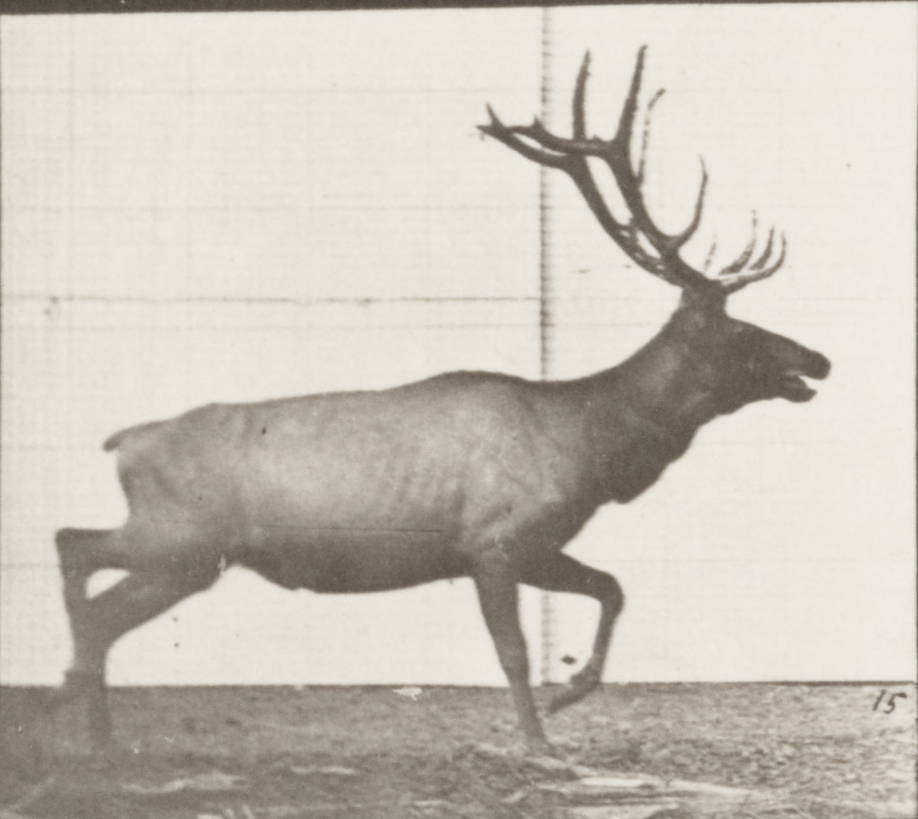
13. elements/deer-elk/refs/elk_trotting/openverse_Elk_trotting_rbm_QP301M8_1887_692a_15_2699e75e.jpgBash: Fix neck/antlers, compare against Muybridge frame
cd ~/work/pixelart-studies/elements/deer-elk/src && python3 - <<'EOF'
s=open('rig.py').read()
# neck: broad base that merges into withers and brisket
s=s.replace(''' npts = np.array([nb - ndir * 0.08, nb, mid, poll])
na = np.array([sp.neck_r0[0] * 1.05, sp.neck_r0[0], (sp.neck_r0[0] + sp.neck_r1[0]) / 2, sp.neck_r1[0]])
nbw = np.array([sp.neck_r0[1] * 1.05, sp.neck_r0[1], (sp.neck_r0[1] + sp.neck_r1[1]) / 2, sp.neck_r1[1]])''',
''' npts = np.array([nb - ndir * 0.12, nb, nb + ndir * sp.neck_len * 0.28, mid, poll])
r0a, r0b = sp.neck_r0
r1a, r1b = sp.neck_r1
# the neck is a wedge: very deep where it leaves withers and brisket, tapering fast, then
# nearly parallel up to the throat latch
na = np.array([r0a * 1.05, r0a, r0a * 0.62 + r1a * 0.38, r0a * 0.38 + r1a * 0.62, r1a])
nbw = np.array([r0b * 1.1, r0b, r0b * 0.7 + r1b * 0.3, r0b * 0.45 + r1b * 0.55, r1b])''')
s=s.replace('neck = tube_from_points("neck", npts, na, nbw, nup, "neck", n=14)','neck = tube_from_points("neck", npts, na, nbw, nup, "neck", n=18)')
s=s.replace('neck_base=(0.46, 0.80), neck_len=0.56, neck_r0=(0.19, 0.12), neck_r1=(0.10, 0.075)',
'neck_base=(0.42, 0.79), neck_len=0.60, neck_r0=(0.25, 0.13), neck_r1=(0.105, 0.075)')
s=s.replace('neck_base=(0.43, 0.80), neck_len=0.52, neck_r0=(0.15, 0.10), neck_r1=(0.075, 0.06)',
'neck_base=(0.40, 0.79), neck_len=0.56, neck_r0=(0.21, 0.105), neck_r1=(0.075, 0.058)')
s=s.replace('sp = replace(sp, neck_r0=(0.24, 0.14), neck_r1=(0.12, 0.085), mane=0.07,','sp = replace(sp, neck_r0=(0.30, 0.15), neck_r1=(0.125, 0.085), mane=0.07,')
s=s.replace('sp = replace(sp, neck_r0=(0.17, 0.11), neck_r1=(0.085, 0.066))','sp = replace(sp, neck_r0=(0.23, 0.115), neck_r1=(0.088, 0.066))')
# antler beam: mostly back along the skull, rising
s=s.replace(''' beam = [base,
base + scale * (hup * 0.20 + back * 0.10 + out_v * 0.10),
base + scale * (hup * 0.42 + back * 0.26 + out_v * 0.18) + wob[0],
base + scale * (hup * 0.62 + back * 0.42 + out_v * 0.20) + wob[1],
base + scale * (hup * 0.80 + back * 0.50 + out_v * 0.16) + wob[2],
base + scale * (hup * 0.92 + back * 0.46 + out_v * 0.10)]''',''' beam = [base,
base + scale * (hup * 0.10 + back * 0.14 + out_v * 0.08),
base + scale * (hup * 0.22 + back * 0.34 + out_v * 0.16) + wob[0],
base + scale * (hup * 0.36 + back * 0.54 + out_v * 0.20) + wob[1],
base + scale * (hup * 0.52 + back * 0.68 + out_v * 0.18) + wob[2],
base + scale * (hup * 0.68 + back * 0.74 + out_v * 0.12)]''')
s=s.replace("for k, (u, L, ang) in enumerate([(0.08, 0.26, 20), (0.2, 0.2, 30), (0.45, 0.30, 35), (0.68, 0.22, 45), (0.82, 0.16, 55)]):",
"for k, (u, L, ang) in enumerate([(0.06, 0.30, 25), (0.17, 0.24, 40), (0.42, 0.36, 70), (0.66, 0.28, 75), (0.84, 0.20, 70)]):")
open('rig.py','w').write(s)
p=open('render.py').read()
p=p.replace("sun_az: float = 135.0","sun_az: float = -130.0")
open('render.py','w').write(p)
EOF
cat > cmp_photo.py <<'EOF'
"""Side by side: Muybridge 692a frame 15 | my elk bull trot at the same shoulder height."""
import numpy as np, sys
from PIL import Image
import rig, paint
from render import View
ph=Image.open('../refs/elk_trotting/openverse_Elk_trotting_rbm_QP301M8_1887_692a_15_2699e75e.jpg').convert('L')
# photo: ground ~745, withers ~370 -> 375 px shoulder height; scale to 200
s=200/375
ph=ph.resize((int(ph.width*s),int(ph.height*s)))
phase=float(sys.argv[1]) if len(sys.argv)>1 else 0.3
ind=rig.Individual('elk','m','adult','autumn',1)
sp=ind.spec()
size=200*1.62 # size_px such that H maps to 200 px
R,_,k=paint.paint_index(ind,'trot',phase,View(yaw=0,elev=0,sun_el=60,sun_az=-100,ss=3),size_px=size)
g=paint.grey(R,bg=0.9)
H=max(ph.height,g.shape[0])
out=np.full((H, ph.width+g.shape[1]+10),255,np.uint8)
out[H-ph.height:,:ph.width]=np.array(ph)
# align ground rows: photo ground at 745*s
gr=int(745*s);
off=gr-R.ground_row
y0=max(0,H-ph.height+off)
gg=g[:H-y0]
out[y0:y0+gg.shape[0], ph.width+10:ph.width+10+gg.shape[1]]=gg
Image.fromarray(out).save('../stages/s1/cmp_muybridge.png')
EOF
nice -n 10 env OPENBLAS_NUM_THREADS=1 python3 cmp_photo.py 0.3
# output:
(Bash completed with no output)Read: elements/deer-elk/stages/s1/cmp_muybridge.png 14. elements/deer-elk/stages/s1/cmp_muybridge.png
14. elements/deer-elk/stages/s1/cmp_muybridge.png
Bash: List candidate side-view reference photos
cd ~/work/pixelart-studies/elements/deer-elk/refs; ls roosevelt_elk_cow deer_grazing_side_view; python3 -c "
from PIL import Image
import glob
for f in ['~/work/naturalist/animals/photos/elk_bull/openverse_Roosevelt_Elk_Bull_8d2ef761.jpg','~/work/naturalist/animals/photos/elk_herd/openverse_Roosevelt_Elk_1ef6202d.jpg']+glob.glob('~/work/naturalist/animals/photos/blacktail_deer/commons_Columbian*'):
print(f, Image.open(f).size)"
# output:
deer_grazing_side_view:
_sheet.jpg
openverse_Deer_may_safely_graze_in_Damon_Lane_Co_Park_3_29_0ff2f566.jpg
openverse_Grazing_deer_Trail_from_Okura_Bus_Station_to_Mou_61560f2b.jpg
openverse_I_Think_He_s_Noticed_Me_eacf02b2.jpg
openverse_Two_Spotted_Fawns_Momma_750fec44.jpg
sources.tsv
roosevelt_elk_cow:
_sheet.jpg
openverse_A_cow_and_calf_elk_walk_past_Roosevelt_Arch_826ceaf0.jpg
openverse_Majestic_Bull_21c2381d.jpg
openverse_Majestic_Bull_460cc2e6.jpg
openverse_North_Entrance_teepee_installation_event_teepee__9d99ba55.jpg
openverse_Roosevelt_Elk_Cervus_canadensis_roosevelti_with__1440ecfd.jpg
openverse_Roosevelt_Elk_Cow_2252c7d3.jpg
openverse_Roosevelt_Elk_Herd_U_S_Route_101_Humboldt_Lagoon_56027dd9.jpg
openverse_Roosevelt_elk_cow_32929b53.jpg
openverse_Roosevelt_elk_cow_calf_5b89d184.jpg
sources.tsv
~/work/naturalist/animals/photos/elk_bull/openverse_Roosevelt_Elk_Bull_8d2ef761.jpg (1024, 768)
~/work/naturalist/animals/photos/elk_herd/openverse_Roosevelt_Elk_1ef6202d.jpg (1024, 683)
~/work/naturalist/animals/photos/blacktail_deer/commons_Columbian_black_tailed_deer_Odocoileus_hemionus__e3d0e22e.jpg (960, 640)
~/work/naturalist/animals/photos/blacktail_deer/commons_Columbian_black_tailed_deer_Odocoileus_hemionus__aa2317ff.jpg (960, 640)Read: elements/deer-elk/refs/roosevelt_elk_cow/_sheet.jpg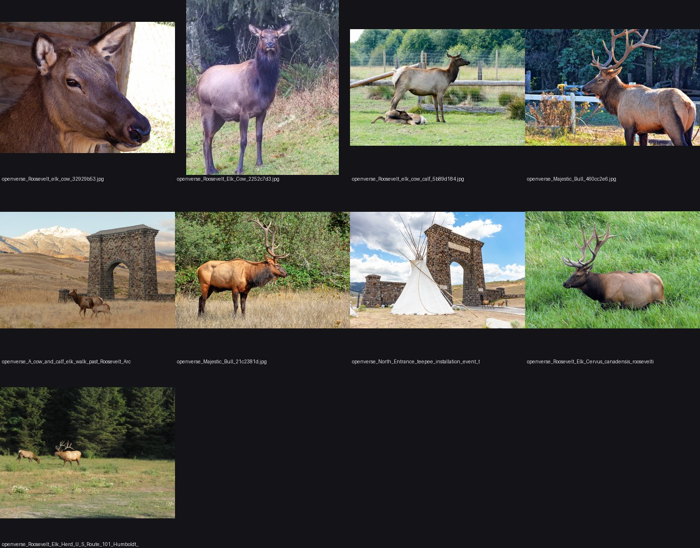
15. elements/deer-elk/refs/roosevelt_elk_cow/_sheet.jpgBash: Sizes of chosen references
cd ~/work/pixelart-studies/elements/deer-elk/refs; python3 -c " from PIL import Image for f in ['roosevelt_elk_cow/openverse_Majestic_Bull_21c2381d.jpg','roosevelt_elk_cow/openverse_Roosevelt_elk_cow_calf_5b89d184.jpg']: print(f, Image.open(f).size)" # output: roosevelt_elk_cow/openverse_Majestic_Bull_21c2381d.jpg (1024, 683) roosevelt_elk_cow/openverse_Roosevelt_elk_cow_calf_5b89d184.jpg (1024, 683)
Read: elements/deer-elk/refs/roosevelt_elk_cow/openverse_Majestic_Bull_21c2381d.jpgRead: elements/deer-elk/refs/roosevelt_elk_cow/openverse_Roosevelt_elk_cow_calf_5b89d184.jpg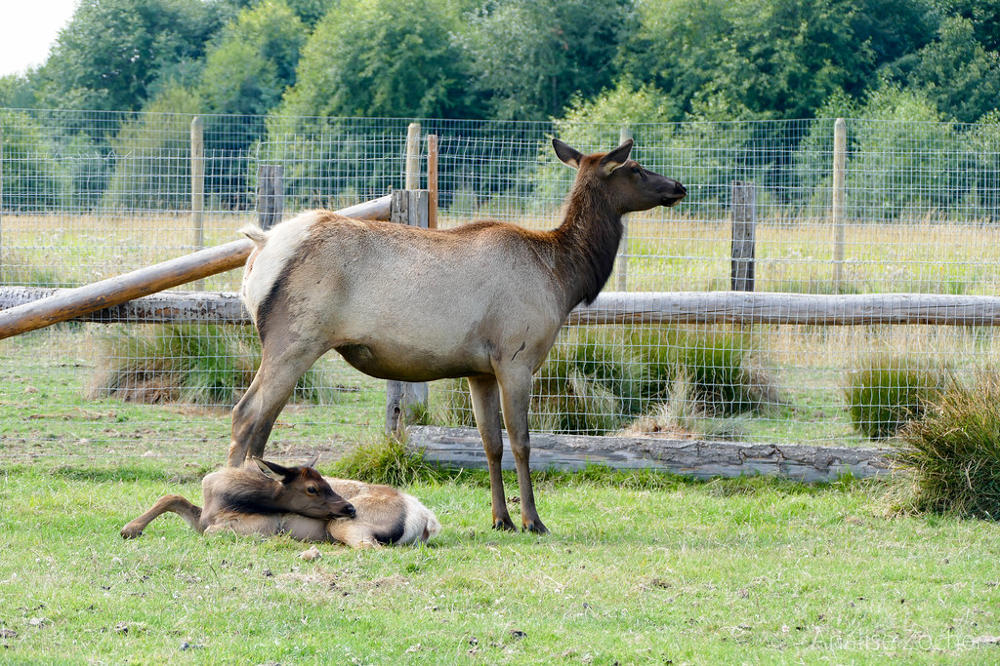
16. elements/deer-elk/refs/roosevelt_elk_cow/openverse_Roosevelt_elk_cow_calf_5b89d184.jpg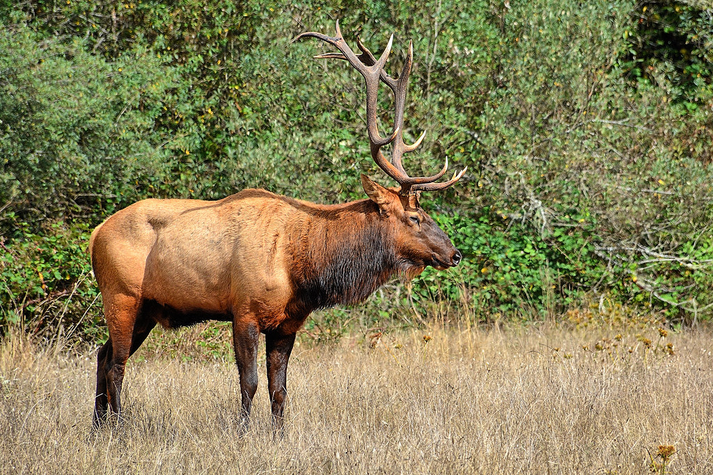
17. elements/deer-elk/refs/roosevelt_elk_cow/openverse_Majestic_Bull_21c2381d.jpgRead: naturalist/animals/photos/blacktail_deer/commons_Columbian_black_tailed_deer_Odocoileus_hemionus__e3d0e22e.jpg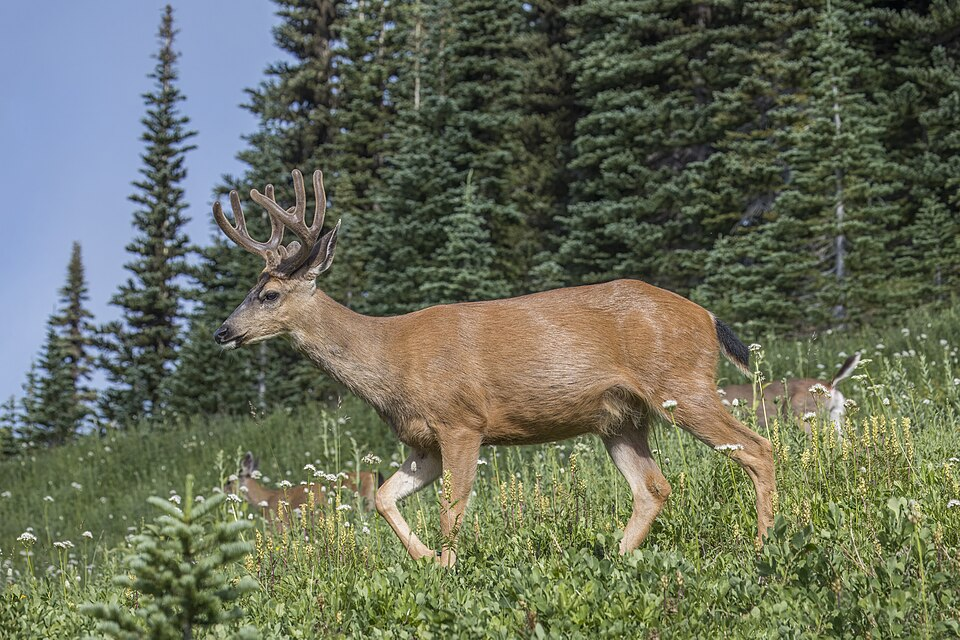
18. naturalist/animals/photos/blacktail_deer/commons_Columbian_black_tailed_deer_Odocoileus_hemionus__e3d0e22e.jpgBash: Shorten torso, fix sampling gaps
cd ~/work/pixelart-studies/elements/deer-elk/src && python3 - <<'EOF'
s=open('rig.py').read()
# scale torso x by 0.86 and the x of attachments
import re
def scale_block(name):
global s
i=s.index(name+' = ['); j=s.index(']',i)
blk=s[i:j]
def f(m):
return '(%.3f,'%(float(m.group(1))*0.86)
blk2=re.sub(r'\((-?\d+\.\d+),',f,blk)
s=s[:i]+blk2+s[j:]
scale_block('ELK_TORSO'); scale_block('DEER_TORSO')
s=s.replace('neck_base=(0.42, 0.79)','neck_base=(0.36, 0.80)').replace('neck_base=(0.40, 0.79)','neck_base=(0.35, 0.80)')
s=s.replace('fore_attach=(0.36, 0.60, 0.105), hind_attach=(-0.50, 0.70, 0.11)','fore_attach=(0.30, 0.58, 0.105), hind_attach=(-0.43, 0.70, 0.11)')
s=s.replace('fore_attach=(0.33, 0.60, 0.09), hind_attach=(-0.46, 0.71, 0.095)','fore_attach=(0.28, 0.58, 0.09), hind_attach=(-0.40, 0.71, 0.095)')
s=s.replace('head_len=0.40, head_r0=(0.085, 0.075), head_r1=(0.05, 0.042)','head_len=0.38, head_r0=(0.09, 0.075), head_r1=(0.058, 0.044)')
open('rig.py','w').write(s)
r=open('render.py').read()
r=r.replace(" n_al = max(int(np.ceil(Ltot / ds)) + 1, 2)"," prof = np.abs(np.diff(a)).sum() + np.abs(np.diff(b)).sum()\n n_al = max(int(np.ceil((Ltot + 2 * prof) / ds)) + 1, 2)")
open('render.py','w').write(r)
EOF
grep -n "ELK_TORSO = \[" -A 14 rig.py | head -16
# output:
67:ELK_TORSO = [
68- # x ztop zbot hw (from side-view photos of Roosevelt cows, Muybridge 692)
69- (0.516, 0.79, 0.68, 0.05),
70- (0.464, 0.90, 0.58, 0.12),
71- (0.378, 0.985, 0.52, 0.16), # chest, deep
72- (0.258, 1.00, 0.50, 0.18), # withers peak over the girth
73- (0.103, 0.985, 0.51, 0.20),
74- (-0.069, 0.965, 0.53, 0.21), # barrel
75- (-0.241, 0.955, 0.575, 0.20),
76- (-0.361, 0.955, 0.62, 0.18), # flank tuck
77- (-0.464, 0.96, 0.60, 0.175), # ham drops behind the tuck
78- (-0.568, 0.945, 0.62, 0.15),
79- (-0.645, 0.90, 0.67, 0.10), # buttock
80- (-0.688, 0.83, 0.72, 0.04),
81-]Bash: Build photo-vs-render comparison board
cd ~/work/pixelart-studies/elements/deer-elk/src && cat > board.py <<'EOF'
"""Reference board: photo | mine, at the same shoulder height and ground line (greyscale form check)."""
import numpy as np, sys
from PIL import Image
import rig, paint
from render import View
REF = '~/work/pixelart-studies/elements/deer-elk/refs/'
NAT = '~/work/naturalist/animals/photos/'
BOARD = [
# file, crop, ground row, withers row, individual, gait, phase, yaw
(REF + 'roosevelt_elk_cow/openverse_Roosevelt_elk_cow_calf_5b89d184.jpg', (220, 110, 730, 560), 545, 228, ('elk', 'f'), 'alert', 0, 0),
(REF + 'roosevelt_elk_cow/openverse_Majestic_Bull_21c2381d.jpg', (110, 20, 690, 630), 612, 282, ('elk', 'm'), 'stand', 0, 0),
(REF + 'elk_trotting/openverse_Elk_trotting_rbm_QP301M8_1887_692a_15_2699e75e.jpg', (0, 20, 918, 780), 745, 372, ('elk', 'm'), 'trot', 0.3, 0),
(NAT + 'blacktail_deer/commons_Columbian_black_tailed_deer_Odocoileus_hemionus__e3d0e22e.jpg', (190, 150, 800, 570), 555, 300, ('deer', 'm'), 'walk', 0.1, 180),
]
HPX = 150
def panel(i, phase=None, gait=None):
f, crop, gr, wr, (spn, sex), g, ph, yaw = BOARD[i]
im = Image.open(f).convert('L').crop(crop)
s = HPX / (gr - wr)
im = im.resize((int(im.width * s), int(im.height * s)))
grow = int((gr - crop[1]) * s)
ind = rig.Individual(spn, sex, 'adult', 'autumn', 1)
R, _, k = paint.paint_index(ind, gait or g, ph if phase is None else phase, View(yaw=yaw, elev=0, sun_el=50, sun_az=-140, ss=3), size_px=HPX * 1.62)
gimg = paint.grey(R, bg=0.92)
H = max(im.height, gimg.shape[0] + max(0, grow - R.ground_row)) + 4
out = np.full((H, im.width + gimg.shape[1] + 12), 255, np.uint8)
out[:im.height, :im.width] = np.array(im)
y0 = grow - R.ground_row
ys, ye = max(0, y0), min(H, y0 + gimg.shape[0])
out[ys:ye, im.width + 12:im.width + 12 + gimg.shape[1]] = gimg[ys - y0:ye - y0]
return out
if __name__ == '__main__':
tag = sys.argv[1] if len(sys.argv) > 1 else 'b'
ps = [panel(i) for i in range(len(BOARD))]
W = max(p.shape[1] for p in ps)
out = np.full((sum(p.shape[0] for p in ps), W), 255, np.uint8)
y = 0
for p in ps:
out[y:y + p.shape[0], :p.shape[1]] = p
y += p.shape[0]
Image.fromarray(out).save(f'../stages/s1/board_{tag}.png')
EOF
nice -n 10 env OPENBLAS_NUM_THREADS=1 python3 board.py b1
# output:
(Bash completed with no output)Read: elements/deer-elk/stages/s1/board_b1.png 19. elements/deer-elk/stages/s1/board_b1.png
19. elements/deer-elk/stages/s1/board_b1.png
Bash: Debug gaps in torso raster
cd ~/work/pixelart-studies/elements/deer-elk/src && nice python3 -c "
import numpy as np, rig, paint, render
from render import View
ind=rig.Individual('elk','f','adult','autumn',1)
R,tubes,k=paint.paint_index(ind,'stand',0,View(yaw=0,elev=0,ss=3),size_px=150*1.62)
H,W=R.cov.shape
# find low-coverage columns inside torso bbox
t=R.parts.index('torso')
m=(R.part==t)
ys,xs=np.nonzero(m); print(xs.min(),xs.max(),ys.min(),ys.max())
row=(ys.min()+ys.max())//2
print(np.round(R.cov[row, xs.min():xs.max()],2))
print(R.mat[row, xs.min():xs.max()])
"
# output:
2 183 58 132
[0. 0.89 1. 1. 1. 1. 1. 1. 1. 1. 1. 1. 1. 1.
1. 1. 1. 1. 1. 1. 1. 1. 1. 1. 1. 1. 1. 1.
1. 1. 1. 1. 1. 1. 1. 1. 1. 1. 1. 1. 1. 1.
1. 1. 1. 1. 1. 1. 1. 1. 1. 1. 1. 1. 1. 1.
1. 1. 1. 1. 1. 1. 1. 1. 1. 1. 1. 1. 1. 1.
1. 1. 1. 1. 1. 1. 1. 1. 1. 1. 1. 1. 1. 1.
1. 1. 1. 1. 1. 1. 1. 1. 1. 1. 1. 1. 1. 1.
1. 1. 1. 1. 1. 1. 1. 1. 1. 1. 1. 1. 1. 1.
1. 1. 1. 1. 1. 1. 1. 1. 1. 1. 1. 1. 1. 1.
1. 1. 1. 1. 1. 1. 1. 1. 1. 1. 1. 1. 1. 1.
1. 1. 1. 1. 1. 1. 1. 1. 1. 1. 1. 1. 1. 1.
1. 1. 1. 1. 1. 1. 1. 1. 1. 1. 1. 1. 1. 1.
1. 1. 1. 1. 1. 1. 1. 1. 1. 1. 1. 1. 1. ]
[-1 2 2 2 2 2 2 2 2 2 2 2 2 2 2 2 2 2 2 2 2 2 2 2
2 2 1 1 1 1 1 1 1 1 1 1 1 1 1 1 1 1 1 1 1 1 1 1
1 1 1 1 1 1 1 0 0 0 0 0 0 0 0 0 0 0 0 0 0 0 0 0
0 0 0 0 0 0 0 0 0 0 0 0 0 0 0 0 0 0 0 0 0 0 0 0
0 0 0 0 0 0 0 0 0 0 0 0 0 0 0 0 0 0 0 0 0 0 0 0
0 0 0 0 0 0 0 0 0 0 0 0 0 0 0 0 0 0 0 0 0 0 0 0
0 0 0 0 0 0 0 0 0 0 0 0 0 0 0 0 0 0 0 0 0 0 1 1
1 1 1 1 1 1 1 1 1 1 1 1 1]Bash: Smooth tube interpolation, shorter neck
cd ~/work/pixelart-studies/elements/deer-elk/src && python3 - <<'EOF'
r=open('render.py').read()
r=r.replace(''' t = np.linspace(0, Ltot, n_al)
C = np.stack([np.interp(t, s, c[:, k]) for k in range(3)], 1)
A = np.interp(t, s, a)
B = np.interp(t, s, b)''',''' t = np.linspace(0, Ltot, n_al)
if len(s) >= 3 and np.all(np.diff(s) > 1e-9):
from scipy.interpolate import PchipInterpolator
C = PchipInterpolator(s, c, axis=0)(t)
A = PchipInterpolator(s, a)(t)
B = PchipInterpolator(s, b)(t)
else:
C = np.stack([np.interp(t, s, c[:, k]) for k in range(3)], 1)
A = np.interp(t, s, a)
B = np.interp(t, s, b)''')
open('render.py','w').write(r)
s=open('rig.py').read()
s=s.replace('neck_len=0.60, neck_r0=(0.25, 0.13)','neck_len=0.50, neck_r0=(0.25, 0.13)')
s=s.replace('neck_len=0.56, neck_r0=(0.21, 0.105)','neck_len=0.50, neck_r0=(0.21, 0.105)')
open('rig.py','w').write(s)
EOF
grep -n "hoof\|r\[4\]" rig.py | head
# output:
21:MAT_NAMES = ["body", "dark", "pale", "belly", "leg", "hoof", "antler", "tip", "nose", "earin",
57: fore_len: tuple # forearm, cannon, pastern+hoof
58: hind_len: tuple # gaskin, cannon, pastern+hoof
59: fore_r: tuple # forearm top, carpus, cannon, fetlock, hoof
60: hind_r: tuple # gaskin top, hock, cannon, fetlock, hoof
268: # swing: the pastern folds (fore: hoof turns up behind; hind: tucked)
518: # hoof point on the ground: contact is the hoof's bottom
519: ft = np.array([fx, max(fz, 0.0) + r[4] * 0.6])
521: # pastern vector from fetlock to hoof: forward-down at +past
534: if m < r[4] * 0.6:Bash: Rework leg segments and rerun board
cd ~/work/pixelart-studies/elements/deer-elk/src && python3 - <<'EOF'
s=open('rig.py').read()
old=s[s.index(' # upper segment: forearm / gaskin'):s.index(' for t in out:\n t.leg = name')]
new=''' # upper segment: forearm / gaskin, deep fore-and-aft at the top (muscle), running up into
# the body; lateral radius smaller, so the leg is a blade from the side and slim from the front
top = P[0] + np.array([0, 0, 0.08 if fore else 0.12])
seg1 = np.array([top, P[0], P[0] * 0.6 + P[1] * 0.4, P[0] * 0.25 + P[1] * 0.75, P[1]])
if fore:
ra1 = np.array([r[0] * 1.25, r[0] * 1.1, r[0] * 0.9, r[1] * 1.05, r[1]])
else:
ra1 = np.array([r[0] * 1.6, r[0] * 1.35, r[0] * 0.95, r[1] * 1.1, r[1]])
out.append(tube_from_points(name + "1", seg1, ra1, ra1 * 0.62, [1, 0, 0], "leg1", n=12))
# hock point: the calcaneus sticks out behind the hock
if not fore:
d = P[1] - P[0]
d /= np.linalg.norm(d) + 1e-9
back = np.array([-1.0, 0, 0])
hp = P[1] + back * r[1] * 1.0 + np.array([0, 0, r[1] * 0.4])
out.append(tube_from_points(name + "hk", np.array([P[1] - d * r[1] * 2.2, hp]), [r[1] * 0.8, r[1] * 0.45], [r[1] * 0.5, r[1] * 0.35], [0, 0, 1], "leg", thin=True, n=4))
# knee (carpus) knob on the foreleg
if fore:
out.append(tube_from_points(name + "kn", np.array([P[1] + np.array([0, 0, 0.02]), P[1] - np.array([0, 0, 0.03])]),
[r[1] * 1.15, r[1] * 1.0], [r[1] * 0.75, r[1] * 0.7], [1, 0, 0], "leg", thin=True, n=4))
# cannon: slim, flat-sided
seg2 = np.array([P[1], (P[1] + P[2]) / 2, P[2]])
out.append(tube_from_points(name + "2", seg2, [r[1] * 0.85, r[2], r[2] * 1.05], [r[1] * 0.6, r[2] * 0.72, r[2] * 0.75], [1, 0, 0], "leg", thin=True, n=8))
# fetlock knob + pastern
d3 = P[3] - P[2]
L3n = np.linalg.norm(d3) + 1e-9
seg3 = np.array([P[2], P[2] + d3 * 0.5, P[3] - d3 / L3n * r[4] * 0.8])
out.append(tube_from_points(name + "3", seg3, [r[3], r[2] * 0.85, r[2] * 0.95], [r[3] * 0.75, r[2] * 0.65, r[2] * 0.75], [1, 0, 0], "leg", thin=True, n=6))
# hoof: a small dark wedge, toe forward, flat sole
hb = P[3] - d3 / L3n * r[4] * 1.2
toe = P[3] + np.array([r[4] * 1.0, 0, -r[4] * 0.35])
out.append(tube_from_points(name + "hf", np.array([hb, P[3], toe]), [r[4] * 0.9, r[4] * 0.8, r[4] * 0.35], [r[4] * 0.7, r[4] * 0.7, r[4] * 0.4],
[0, 0, 1], "hoof", thin=True, n=5))
'''
s=s.replace(old,new)
open('rig.py','w').write(s)
c=open('coat.py').read()
c=c.replace(''' if seg == "3":
out[u > 0.72] = HOOF''',''' if seg == "hf":
out[:] = HOOF''')
open('coat.py','w').write(c)
EOF
nice -n 10 env OPENBLAS_NUM_THREADS=1 python3 board.py b2
# output:
(Bash completed with no output)Read: elements/deer-elk/stages/s1/board_b2.png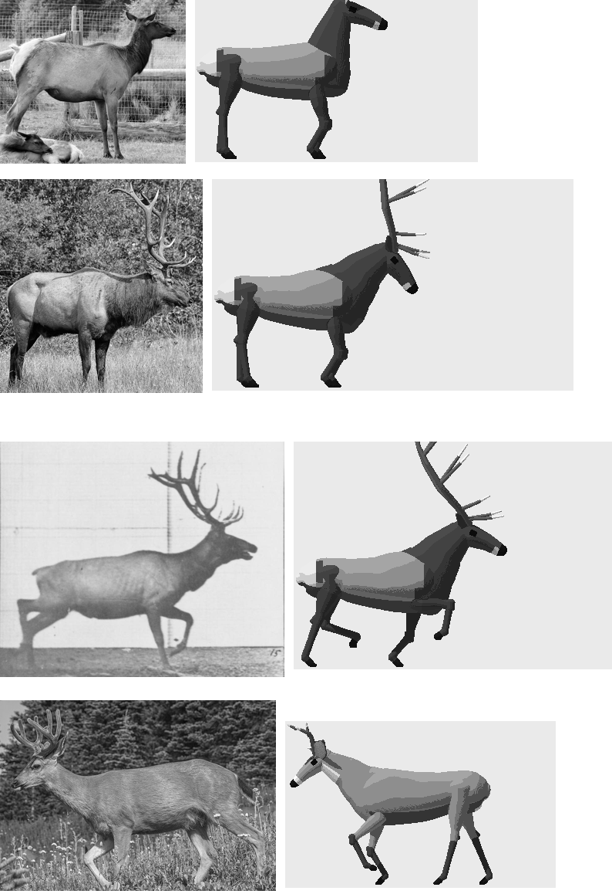
20. elements/deer-elk/stages/s1/board_b2.pngBash: Add ham, shoulder masses; tweak heads, antlers, ears
cd ~/work/pixelart-studies/elements/deer-elk/src && python3 - <<'EOF'
s=open('rig.py').read()
# hind upper: start from the buttock so the ham's rear edge runs down to the hock
s=s.replace(''' top = P[0] + np.array([0, 0, 0.08 if fore else 0.12])
seg1 = np.array([top, P[0], P[0] * 0.6 + P[1] * 0.4, P[0] * 0.25 + P[1] * 0.75, P[1]])
if fore:
ra1 = np.array([r[0] * 1.25, r[0] * 1.1, r[0] * 0.9, r[1] * 1.05, r[1]])
else:
ra1 = np.array([r[0] * 1.6, r[0] * 1.35, r[0] * 0.95, r[1] * 1.1, r[1]])''',''' if fore:
top = P[0] + np.array([-0.01, 0, 0.10])
seg1 = np.array([top, P[0], P[0] * 0.6 + P[1] * 0.4, P[0] * 0.25 + P[1] * 0.75, P[1]])
ra1 = np.array([r[0] * 1.35, r[0] * 1.15, r[0] * 0.9, r[1] * 1.05, r[1]])
else:
# the ham: from under the croup, its rear edge continuous with the buttock
top = P[0] + np.array([-0.07, 0, 0.13])
seg1 = np.array([top, P[0] + np.array([-0.05, 0, 0.0]), P[0] * 0.55 + P[1] * 0.45 + np.array([-0.02, 0, 0]), P[0] * 0.2 + P[1] * 0.8, P[1]])
ra1 = np.array([r[0] * 1.9, r[0] * 1.75, r[0] * 1.2, r[1] * 1.15, r[1]])''')
s=s.replace("head_len=0.38, head_r0=(0.09, 0.075), head_r1=(0.058, 0.044)","head_len=0.34, head_r0=(0.085, 0.072), head_r1=(0.052, 0.042)")
s=s.replace("sp = replace(sp, neck_r0=(0.30, 0.15), neck_r1=(0.125, 0.085), mane=0.07,","sp = replace(sp, neck_r0=(0.30, 0.15), neck_r1=(0.13, 0.09), mane=0.10, head_len=0.40,")
s=s.replace("scale = 1.0 if kind == \"hard\" else 0.85","scale = 0.8 if kind == \"hard\" else 0.68")
s=s.replace("for k, (u, L, ang) in enumerate([(0.06, 0.30, 25), (0.17, 0.24, 40), (0.42, 0.36, 70), (0.66, 0.28, 75), (0.84, 0.20, 70)]):",
"for k, (u, L, ang) in enumerate([(0.06, 0.34, 40), (0.17, 0.28, 55), (0.42, 0.40, 78), (0.64, 0.30, 84), (0.82, 0.22, 88)]):")
s=s.replace("ear_len=0.21, ear_w=0.085","ear_len=0.25, ear_w=0.10")
# shoulder mass: a blade-shaped ellipsoid over the upper foreleg, sloping like the scapula
s=s.replace(''' # --- legs
for name in LEG_NAMES:''',''' # --- shoulder masses (scapula and upper arm): break the torso's tube into planes
for side in (1, -1):
sh0 = body_xf(np.array([sp.fore_attach[0] + 0.02, side * (sp.fore_attach[2] + 0.02), 0.95]))
sh1 = body_xf(np.array([sp.fore_attach[0] + 0.07, side * (sp.fore_attach[2] + 0.03), 0.62]))
tubes.append(tube_from_points(f"shoulder{side}", np.array([sh0, (sh0 + sh1) / 2, sh1]), [0.07, 0.11, 0.09], [0.05, 0.075, 0.065],
[1, 0, 0], "shoulder", n=8))
# --- legs
for name in LEG_NAMES:''')
open('rig.py','w').write(s)
c=open('coat.py').read()
c=c.replace(''' elif nm in ("neck", "mane"):''',''' elif nm.startswith("shoulder"):
out[:] = BODY
if elk and not young:
out[q[:, 2] < 0.62] = DARK
elif nm in ("neck", "mane"):''')
open('coat.py','w').write(c)
EOF
nice -n 10 env OPENBLAS_NUM_THREADS=1 python3 board.py b3
# output:
(Bash completed with no output)Read: elements/deer-elk/stages/s1/board_b3.png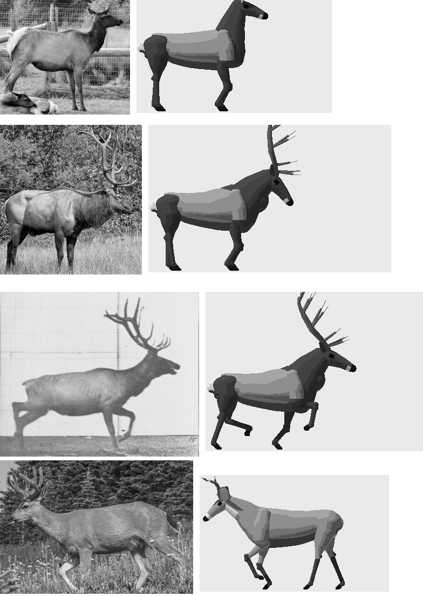
21. elements/deer-elk/stages/s1/board_b3.pngBash: Photo vs render at target pixel sizes
cd ~/work/pixelart-studies/elements/deer-elk/src && python3 - <<'EOF'
c=open('coat.py').read()
c=c.replace(''' if elk:
out[:] = LEG
if seg == "1":
out[u < 0.35] = DARK if young is False else BODY
if young:
out[:] = BODY''',''' if elk:
out[:] = LEG
if seg == "1":
fore = nm[1] == "F"
if fore:
out[u < 0.4] = BODY if young else DARK
else:
out[u < 0.62] = BODY
out[(u < 0.62) & (n[:, 0] < -0.55)] = DARK # the dark back of the thigh
if young:
out[u < 0.5] = BODY''')
open('coat.py','w').write(c)
EOF
cat > sizes.py <<'EOF'
"""The real test: photo reduced by area-averaging | mine, at 60, 30, 16, 8 px body length (4x zoom)."""
import numpy as np, sys
from PIL import Image
import rig, paint, board
from render import View
from board import BOARD
tag = sys.argv[1] if len(sys.argv) > 1 else 'x'
rows = []
for i, (f, crop, gr, wr, (spn, sex), g, ph, yaw) in enumerate(BOARD):
im = Image.open(f).convert('L').crop(crop)
Hphoto = gr - wr
cells = []
for L in (60, 30, 16, 8):
# photo: scale so that shoulder height = L/1.62 px (the same convention as mine)
s = (L / 1.62) / Hphoto
p = im.resize((max(1, int(im.width * s)), max(1, int(im.height * s))), Image.BOX)
ind = rig.Individual(spn, sex, 'adult', 'autumn', 1)
R, _, k = paint.paint_index(ind, g, ph, View(yaw=yaw, elev=0, sun_el=50, sun_az=-140, ss=8), size_px=L)
gimg = paint.grey(R, bg=0.92)
cells.append((np.array(p), gimg))
rows.append(cells)
Z = 4
tiles = []
for cells in rows:
hh = max(max(a.shape[0], b.shape[0]) for a, b in cells)
ww = sum(a.shape[1] + b.shape[1] + 6 for a, b in cells)
t = np.full((hh, ww), 255, np.uint8)
x = 0
for a, b in cells:
t[hh - a.shape[0]:, x:x + a.shape[1]] = a; x += a.shape[1] + 2
t[hh - b.shape[0]:, x:x + b.shape[1]] = b; x += b.shape[1] + 4
tiles.append(t)
W = max(t.shape[1] for t in tiles)
out = np.full((sum(t.shape[0] + 3 for t in tiles), W), 255, np.uint8)
y = 0
for t in tiles:
out[y:y + t.shape[0], :t.shape[1]] = t; y += t.shape[0] + 3
Image.fromarray(np.kron(out, np.ones((Z, Z), np.uint8))).save(f'../stages/s1/sizes_{tag}.png')
EOF
nice -n 10 env OPENBLAS_NUM_THREADS=1 python3 sizes.py s1
# output:
(Bash completed with no output)Read: elements/deer-elk/stages/s1/sizes_s1.png 22. elements/deer-elk/stages/s1/sizes_s1.png
22. elements/deer-elk/stages/s1/sizes_s1.png
Bash: Thinner legs, rerun size comparison
cd ~/work/pixelart-studies/elements/deer-elk/src && python3 - <<'EOF'
s=open('rig.py').read()
s=s.replace("fore_r=(0.068, 0.036, 0.026, 0.032, 0.03), hind_r=(0.085, 0.04, 0.027, 0.032, 0.03)",
"fore_r=(0.062, 0.030, 0.019, 0.025, 0.022), hind_r=(0.080, 0.034, 0.020, 0.025, 0.022)")
s=s.replace("fore_r=(0.055, 0.03, 0.02, 0.026, 0.024), hind_r=(0.075, 0.034, 0.021, 0.026, 0.024)",
"fore_r=(0.052, 0.026, 0.016, 0.021, 0.019), hind_r=(0.072, 0.030, 0.017, 0.021, 0.019)")
s=s.replace("p.neck_ang, p.head_ang, p.ear_fwd = 72.0, -18.0, 1.0","p.neck_ang, p.head_ang, p.ear_fwd = 64.0, -14.0, 1.0")
open('rig.py','w').write(s)
EOF
nice -n 10 env OPENBLAS_NUM_THREADS=1 python3 sizes.py s2
# output:
(Bash completed with no output)Read: elements/deer-elk/stages/s1/sizes_s2.png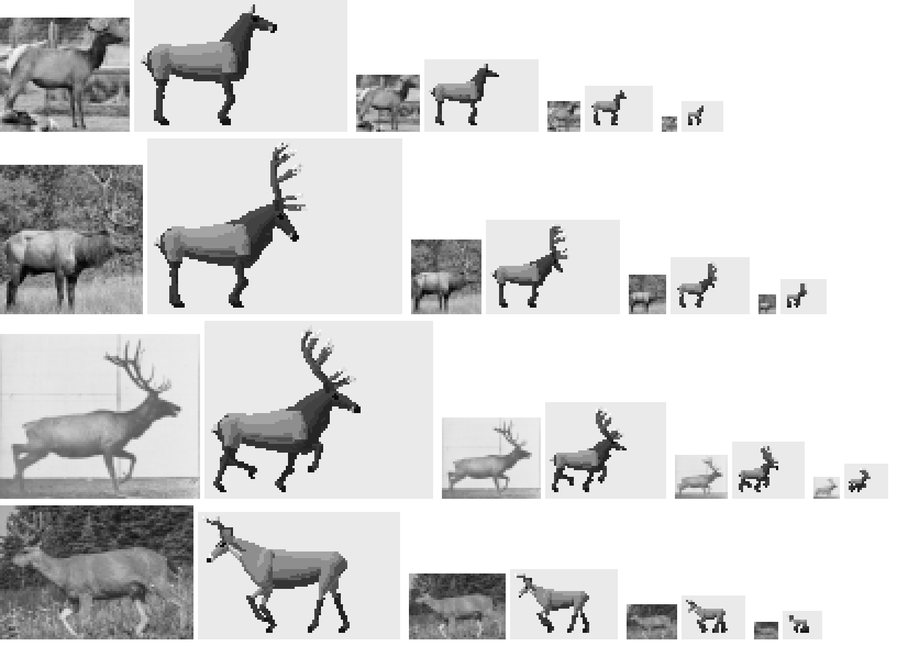
23. elements/deer-elk/stages/s1/sizes_s2.pngBash: Shorter elk torso, slimmer cow neck/head
cd ~/work/pixelart-studies/elements/deer-elk/src && python3 - <<'EOF'
import re
s=open('rig.py').read()
i=s.index('ELK_TORSO = ['); j=s.index(']',i)
blk=re.sub(r'\((-?\d+\.\d+),',lambda m:'(%.3f,'%(float(m.group(1))*0.9),s[i:j])
s=s[:i]+blk+s[j:]
s=s.replace('neck_base=(0.36, 0.80), neck_len=0.50, neck_r0=(0.25, 0.13), neck_r1=(0.105, 0.075)','neck_base=(0.33, 0.80), neck_len=0.48, neck_r0=(0.22, 0.12), neck_r1=(0.09, 0.07)')
s=s.replace('fore_attach=(0.30, 0.58, 0.105), hind_attach=(-0.43, 0.70, 0.11)','fore_attach=(0.27, 0.58, 0.10), hind_attach=(-0.39, 0.70, 0.105)')
s=s.replace("head_len=0.34, head_r0=(0.085, 0.072), head_r1=(0.052, 0.042)","head_len=0.31, head_r0=(0.08, 0.07), head_r1=(0.048, 0.04)")
open('rig.py','w').write(s)
EOF
nice -n 10 env OPENBLAS_NUM_THREADS=1 python3 sizes.py s3
# output:
(Bash completed with no output)Read: elements/deer-elk/stages/s1/sizes_s3.png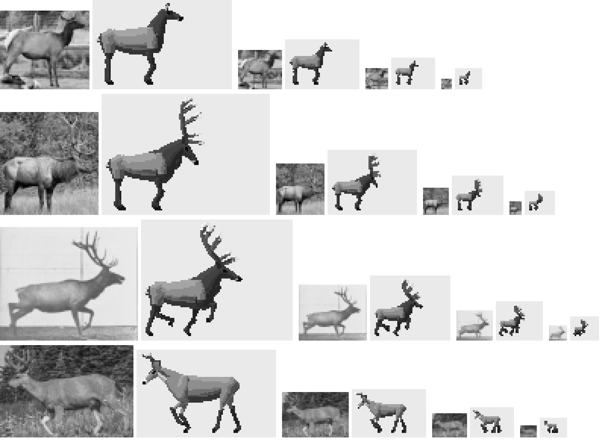
24. elements/deer-elk/stages/s1/sizes_s3.pngBash: Notan silhouette board
cd ~/work/pixelart-studies/elements/deer-elk/src && python3 - <<'EOF'
s=open('board.py').read()
s=s.replace(" gimg = paint.grey(R, bg=0.92)"," gimg = paint.notan(R) if NOTAN else paint.grey(R, bg=0.92)")
s=s.replace("HPX = 150","HPX = 150\nNOTAN = False")
s=s.replace(" tag = sys.argv[1] if len(sys.argv) > 1 else 'b'"," tag = sys.argv[1] if len(sys.argv) > 1 else 'b'\n NOTAN = 'notan' in tag")
open('board.py','w').write(s)
EOF
nice -n 10 env OPENBLAS_NUM_THREADS=1 python3 board.py notan1
# output:
(Bash completed with no output)Read: elements/deer-elk/stages/s1/board_notan1.png 25. elements/deer-elk/stages/s1/board_notan1.png
25. elements/deer-elk/stages/s1/board_notan1.png
Bash: Locate tine and ear code
cd ~/work/pixelart-studies/elements/deer-elk/src && grep -n "tines, off the front" -A 16 rig.py | head -20; grep -n "tube_from_points(f\"ear" rig.py
# output:
616: # tines, off the front of the beam: brow, bez, trez (royal, longest), then the crown
617- for k, (u, L, ang) in enumerate([(0.06, 0.34, 40), (0.17, 0.28, 55), (0.42, 0.40, 78), (0.64, 0.30, 84), (0.82, 0.22, 88)]):
618- if k == 1 and rng.random() < 0.3:
619- continue
620- i = u * (len(beam) - 1)
621- i0 = int(i)
622- f = i - i0
623- p0 = beam[i0] * (1 - f) + beam[min(i0 + 1, len(beam) - 1)] * f
624- a = np.radians(ang + rng.normal(0, 6))
625- d = hd * np.cos(a) + hup * np.sin(a) + out_v * 0.15
626- d /= np.linalg.norm(d)
627- L = L * scale * (1 + rng.normal(0, 0.1))
628- tp = np.array([p0, p0 + d * L * 0.6 + hup * 0.02, p0 + d * L + hup * 0.05])
629- out.append(tube_from_points(f"tine{side}{k}", tp, np.array([0.014, 0.010, 0.004]) * fat, np.array([0.014, 0.010, 0.004]) * fat,
630- hd, "antler", thin=True, n=6))
631- else:
632- if kind == "spike":
476: tubes.append(tube_from_points(f"ear{side}", epts, [sp.ear_w * 0.12, sp.ear_w * 0.1, 0.004],Bash: Tines relative to beam, fuller ears, ham, deer torso
cd ~/work/pixelart-studies/elements/deer-elk/src && python3 - <<'EOF'
s=open('rig.py').read()
old=s[s.index(" for k, (u, L, ang) in enumerate([(0.06"):s.index(" out.append(tube_from_points(f\"tine{side}{k}\"")]
new=''' # each tine leaves the beam turned forward from the beam's own direction by `ang`,
# and curls back toward the beam's direction at its tip
for k, (u, L, ang) in enumerate([(0.05, 0.30, 95), (0.15, 0.26, 80), (0.40, 0.36, 62), (0.62, 0.28, 55), (0.80, 0.20, 48)]):
if k == 1 and rng.random() < 0.3:
continue
i = u * (len(beam) - 1)
i0 = int(i)
f = i - i0
p0 = beam[i0] * (1 - f) + beam[min(i0 + 1, len(beam) - 1)] * f
T = beam[min(i0 + 1, len(beam) - 1)] - beam[i0]
T /= np.linalg.norm(T) + 1e-9
F = hd - (hd @ T) * T
F /= np.linalg.norm(F) + 1e-9
a = np.radians(ang + rng.normal(0, 6))
d = T * np.cos(a) + F * np.sin(a) + out_v * 0.12
d /= np.linalg.norm(d)
d2 = T * np.cos(a * 0.6) + F * np.sin(a * 0.6)
L = L * scale * (1 + rng.normal(0, 0.1))
tp = np.array([p0, p0 + d * L * 0.55, p0 + d * L * 0.55 + d2 * L * 0.45])
'''
s=s.replace(old,new)
s=s.replace('tubes.append(tube_from_points(f"ear{side}", epts, [sp.ear_w * 0.12, sp.ear_w * 0.1, 0.004],','tubes.append(tube_from_points(f"ear{side}", epts, [sp.ear_w * 0.35, sp.ear_w * 0.3, 0.01],')
# hind ham: lower, forward top, smooth taper to the hock
s=s.replace(''' top = P[0] + np.array([-0.07, 0, 0.13])
seg1 = np.array([top, P[0] + np.array([-0.05, 0, 0.0]), P[0] * 0.55 + P[1] * 0.45 + np.array([-0.02, 0, 0]), P[0] * 0.2 + P[1] * 0.8, P[1]])
ra1 = np.array([r[0] * 1.9, r[0] * 1.75, r[0] * 1.2, r[1] * 1.15, r[1]])''',''' top = P[0] + np.array([-0.06, 0, 0.08])
seg1 = np.array([top, P[0] + np.array([-0.04, 0, -0.02]), P[0] * 0.5 + P[1] * 0.5 + np.array([-0.015, 0, 0]), P[0] * 0.2 + P[1] * 0.8, P[1]])
ra1 = np.array([r[0] * 1.6, r[0] * 1.55, r[0] * 1.05, r[1] * 1.2, r[1]])''')
# cow neck base bigger/lower; deer deeper torso and shorter
s=s.replace('neck_base=(0.33, 0.80), neck_len=0.48, neck_r0=(0.22, 0.12), neck_r1=(0.09, 0.07)','neck_base=(0.33, 0.77), neck_len=0.50, neck_r0=(0.26, 0.12), neck_r1=(0.09, 0.068)')
import re
i=s.index('DEER_TORSO = ['); j=s.index(']',i)
def f(m):
x,zt,zb,hw=[float(v) for v in m.groups()]
zb2 = zb - 0.05*max(0,1-abs(x-0.1)/0.6)
return '(%.3f, %.3f, %.3f, %.3f)'%(x*0.92, zt, zb2, hw*1.05)
blk=re.sub(r'\((-?\d+\.\d+), (-?\d+\.\d+), (-?\d+\.\d+), (-?\d+\.\d+)\)',f,s[i:j])
s=s[:i]+blk+s[j:]
s=s.replace('fore_attach=(0.28, 0.58, 0.09), hind_attach=(-0.40, 0.71, 0.095)','fore_attach=(0.26, 0.56, 0.09), hind_attach=(-0.37, 0.70, 0.095)')
s=s.replace("neck_base=(0.35, 0.80), neck_len=0.50, neck_r0=(0.21, 0.105)","neck_base=(0.33, 0.78), neck_len=0.48, neck_r0=(0.24, 0.11)")
open('rig.py','w').write(s)
EOF
grep -n "DEER_TORSO = \[" -A 13 rig.py; nice -n 10 env OPENBLAS_NUM_THREADS=1 python3 board.py notan2
# output:
83:DEER_TORSO = [
84- (0.435, 0.780, 0.641, 0.047),
85- (0.387, 0.890, 0.547, 0.116),
86- (0.316, 0.975, 0.490, 0.152),
87- (0.213, 1.000, 0.471, 0.168),
88- (0.079, 0.985, 0.471, 0.184),
89- (-0.063, 0.970, 0.504, 0.189),
90- (-0.206, 0.970, 0.562, 0.179),
91- (-0.316, 0.975, 0.617, 0.163),
92- (-0.404, 0.985, 0.605, 0.158), # deer rump sits level with or above the withers
93- (-0.490, 0.975, 0.630, 0.137),
94- (-0.554, 0.930, 0.680, 0.089),
95- (-0.585, 0.870, 0.730, 0.037),
96-]Read: elements/deer-elk/stages/s1/board_notan2.png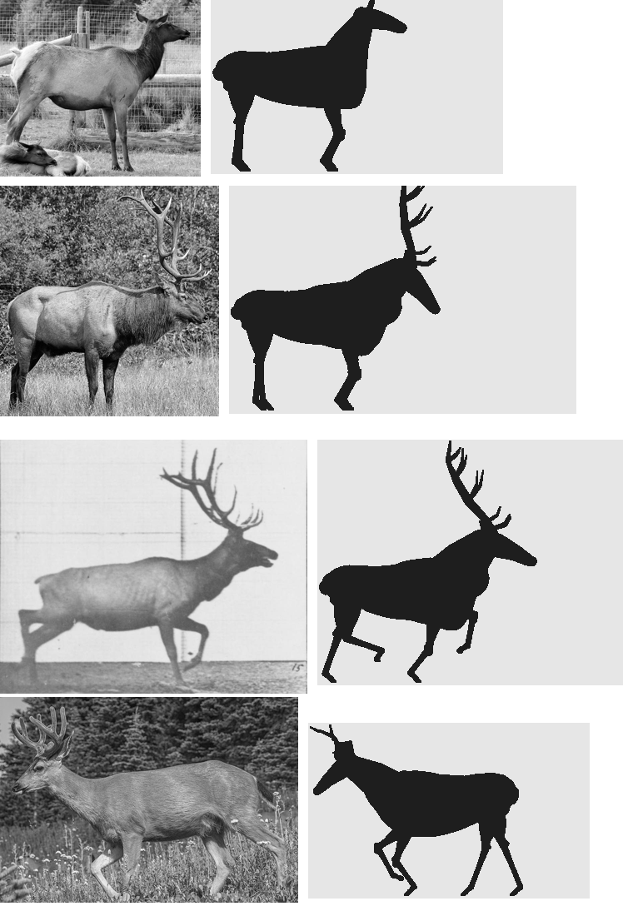
26. elements/deer-elk/stages/s1/board_notan2.pngBash: Inspect ear tube geometry
cd ~/work/pixelart-studies/elements/deer-elk/src && python3 -c "
import rig,numpy as np
ind=rig.Individual('deer','m')
t,sp=rig.build(ind,rig.gait_pose(ind.spec(),'walk',0.1))
for tb in t:
if tb.name.startswith('ear') or tb.name=='head': print(tb.name, np.round(tb.c,3), np.round(tb.a,3), np.round(tb.b,3))
"
# output:
head [[0.696 0. 1.03 ]
[0.72 0. 1.011]
[0.744 0. 0.992]
[0.767 0. 0.972]
[0.791 0. 0.953]
[0.815 0. 0.933]
[0.839 0. 0.914]
[0.862 0. 0.894]
[0.884 0. 0.872]
[0.905 0. 0.85 ]
[0.926 0. 0.828]
[0.95 0. 0.809]] [0.064 0.066 0.068 0.07 0.068 0.062 0.056 0.05 0.045 0.041 0.036 0.029] [0.058 0.06 0.062 0.064 0.062 0.056 0.051 0.045 0.041 0.037 0.032 0.027]
ear1 [[0.767 0.039 1.042]
[0.756 0.07 1.064]
[0.745 0.101 1.086]
[0.735 0.132 1.109]
[0.724 0.162 1.131]
[0.713 0.193 1.153]
[0.702 0.224 1.175]] [0.033 0.032 0.03 0.027 0.021 0.015 0.01 ] [0.076 0.083 0.09 0.087 0.062 0.037 0.011]
ear-1 [[ 0.767 -0.039 1.042]
[ 0.756 -0.07 1.064]
[ 0.745 -0.101 1.086]
[ 0.735 -0.132 1.109]
[ 0.724 -0.162 1.131]
[ 0.713 -0.193 1.153]
[ 0.702 -0.224 1.175]] [0.033 0.032 0.03 0.027 0.021 0.015 0.01 ] [0.076 0.083 0.09 0.087 0.062 0.037 0.011]Bash: Reshape rumps, ears, heads; rerun notan
cd ~/work/pixelart-studies/elements/deer-elk/src && python3 - <<'EOF'
s=open('rig.py').read()
def repl(name, body):
global s
i=s.index(name+' = ['); j=s.index(']',i)
s=s[:i]+name+' = [\n'+body+s[j:]
repl('ELK_TORSO',''' # x ztop zbot hw (Roosevelt cow side views; the croup slopes to the tail root and
# the buttock rounds down into the hams)
(0.46, 0.79, 0.68, 0.05),
(0.42, 0.90, 0.58, 0.12),
(0.34, 0.985, 0.52, 0.16), # chest, deep
(0.23, 1.00, 0.50, 0.18), # withers over the girth
(0.09, 0.985, 0.51, 0.20),
(-0.06, 0.965, 0.53, 0.21), # barrel
(-0.22, 0.955, 0.575, 0.20),
(-0.33, 0.955, 0.62, 0.18), # flank tuck
(-0.42, 0.95, 0.60, 0.175), # hip; the ham drops behind the tuck
(-0.50, 0.925, 0.61, 0.155),
(-0.56, 0.885, 0.64, 0.12),
(-0.60, 0.83, 0.68, 0.07), # buttock
(-0.615, 0.78, 0.71, 0.03),
''')
repl('DEER_TORSO',''' (0.435, 0.78, 0.64, 0.047),
(0.387, 0.89, 0.547, 0.116),
(0.316, 0.975, 0.49, 0.152),
(0.213, 1.0, 0.471, 0.168),
(0.079, 0.985, 0.471, 0.184),
(-0.063, 0.97, 0.504, 0.189),
(-0.206, 0.97, 0.562, 0.179),
(-0.316, 0.978, 0.617, 0.163),
(-0.404, 0.975, 0.605, 0.158), # the deer's croup is level with the withers
(-0.48, 0.95, 0.625, 0.137),
(-0.535, 0.90, 0.66, 0.10),
(-0.57, 0.84, 0.70, 0.06),
(-0.585, 0.79, 0.73, 0.025),
''')
s=s.replace(''' if ind.species == "deer":
d = d + 0.7 * out # the blacktail's big ears stand out in a V''',''' if ind.species == "deer":
d = d + 0.25 * out + 0.35 * hup # the blacktail's big ears stand up and out in a V''')
s=s.replace("head_len=0.33, head_r0=(0.075, 0.068), head_r1=(0.038, 0.034)","head_len=0.30, head_r0=(0.08, 0.07), head_r1=(0.042, 0.036)")
s=s.replace("sp = replace(sp, neck_r0=(0.30, 0.15), neck_r1=(0.13, 0.09), mane=0.10, head_len=0.40,","sp = replace(sp, neck_r0=(0.30, 0.15), neck_r1=(0.13, 0.09), mane=0.10, head_len=0.38, head_r1=(0.058, 0.046),")
s=s.replace("p.neck_ang, p.head_ang, p.ear_fwd = 64.0, -14.0, 1.0","p.neck_ang, p.head_ang, p.ear_fwd = 58.0, -12.0, 1.0")
open('rig.py','w').write(s)
EOF
nice -n 10 env OPENBLAS_NUM_THREADS=1 python3 board.py notan3
# output:
(Bash completed with no output)Read: elements/deer-elk/stages/s1/board_notan3.png27. elements/deer-elk/stages/s1/board_notan3.png
Bash: Find which part forms the rump knob
cd ~/work/pixelart-studies/elements/deer-elk/src && python3 -c "
import numpy as np, rig, paint
from render import View
ind=rig.Individual('elk','f','adult','autumn',1)
R,tubes,k=paint.paint_index(ind,'alert',0,View(yaw=0,elev=0,ss=3),size_px=150*1.62)
on=R.mat>=0
cols=np.nonzero(on.any(0))[0]; x0=cols[0]
for x in range(x0,x0+12):
ys=np.nonzero(on[:,x])[0]
print(x, ys.min(), ys.max(), set(R.parts[p] for p in R.part[ys, x]))
print('back row at mid', np.nonzero(on[:, x0+60])[0].min())
"
# output:
3 96 101 {'torso'}
4 95 102 {'torso'}
5 88 103 {'torso'}
6 86 103 {'torso'}
7 84 103 {'torso'}
8 83 103 {'torso'}
9 82 104 {'tail', 'torso'}
10 81 106 {'tail', 'torso'}
11 80 108 {'tail', 'torso'}
12 79 110 {'tail', 'torso'}
13 78 110 {'tail', 'RH1', 'torso'}
14 78 110 {'tail', 'RH1', 'torso'}
back row at mid 68Bash: Move the ham back under the buttock
cd ~/work/pixelart-studies/elements/deer-elk/src && python3 - <<'EOF'
s=open('rig.py').read()
s=s.replace(''' top = P[0] + np.array([-0.06, 0, 0.08])
seg1 = np.array([top, P[0] + np.array([-0.04, 0, -0.02]), P[0] * 0.5 + P[1] * 0.5 + np.array([-0.015, 0, 0]), P[0] * 0.2 + P[1] * 0.8, P[1]])
ra1 = np.array([r[0] * 1.6, r[0] * 1.55, r[0] * 1.05, r[1] * 1.2, r[1]])''',''' top = P[0] + np.array([-0.11, 0, 0.06])
seg1 = np.array([top, P[0] + np.array([-0.09, 0, -0.05]), P[0] * 0.5 + P[1] * 0.5 + np.array([-0.03, 0, 0]), P[0] * 0.2 + P[1] * 0.8, P[1]])
ra1 = np.array([r[0] * 1.55, r[0] * 1.4, r[0] * 1.0, r[1] * 1.2, r[1]])''')
open('rig.py','w').write(s)
EOF
nice -n 10 env OPENBLAS_NUM_THREADS=1 python3 board.py notan4
# output:
(Bash completed with no output)Read: elements/deer-elk/stages/s1/board_notan4.png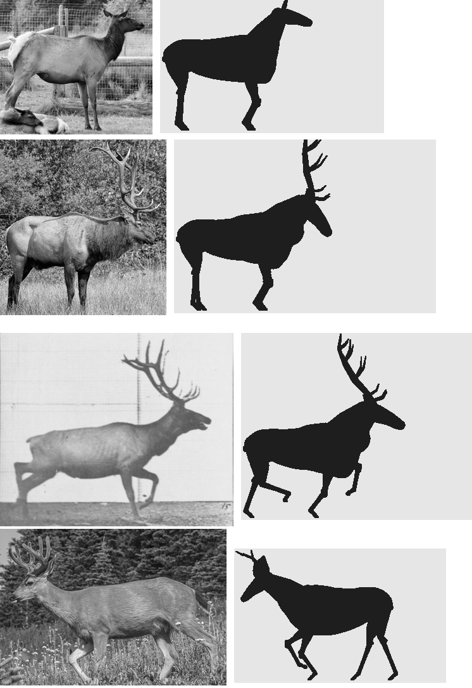
28. elements/deer-elk/stages/s1/board_notan4.pngBash: Antler lean back, longer gaskin; notan and grey boards
cd ~/work/pixelart-studies/elements/deer-elk/src && python3 - <<'EOF'
s=open('rig.py').read()
s=s.replace(''' base + scale * (hup * 0.10 + back * 0.14 + out_v * 0.08),
base + scale * (hup * 0.22 + back * 0.34 + out_v * 0.16) + wob[0],
base + scale * (hup * 0.36 + back * 0.54 + out_v * 0.20) + wob[1],
base + scale * (hup * 0.52 + back * 0.68 + out_v * 0.18) + wob[2],
base + scale * (hup * 0.68 + back * 0.74 + out_v * 0.12)]''',''' base + scale * (hup * 0.10 + back * 0.16 + out_v * 0.08),
base + scale * (hup * 0.20 + back * 0.40 + out_v * 0.16) + wob[0],
base + scale * (hup * 0.30 + back * 0.62 + out_v * 0.20) + wob[1],
base + scale * (hup * 0.44 + back * 0.80 + out_v * 0.18) + wob[2],
base + scale * (hup * 0.60 + back * 0.88 + out_v * 0.12)]''')
s=s.replace("fore_len=(0.30, 0.235, 0.085), hind_len=(0.33, 0.30, 0.085)","fore_len=(0.30, 0.235, 0.085), hind_len=(0.38, 0.30, 0.085)")
s=s.replace("fore_len=(0.30, 0.25, 0.08), hind_len=(0.33, 0.32, 0.08)","fore_len=(0.30, 0.25, 0.08), hind_len=(0.37, 0.32, 0.08)")
open('rig.py','w').write(s)
EOF
nice -n 10 env OPENBLAS_NUM_THREADS=1 python3 board.py notan5 && nice -n 10 env OPENBLAS_NUM_THREADS=1 python3 board.py grey5
# output:
(Bash completed with no output)Read: elements/deer-elk/stages/s1/board_notan5.png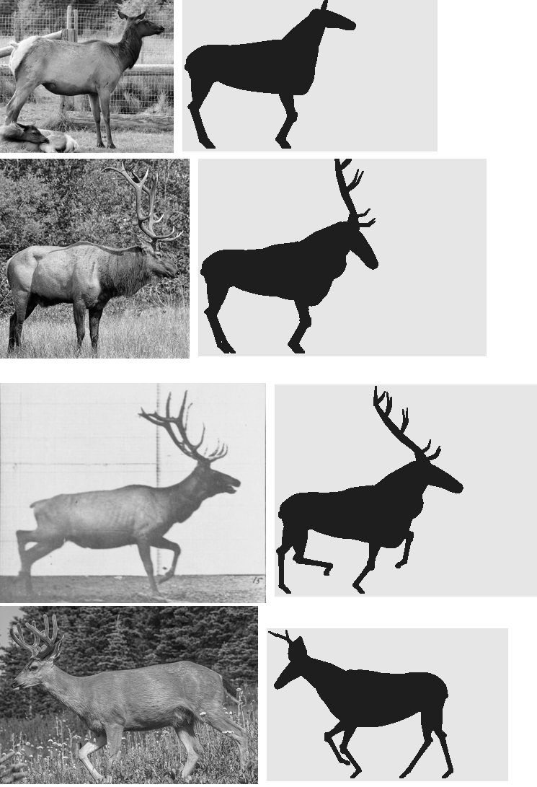
29. elements/deer-elk/stages/s1/board_notan5.pngBash: Round the brisket forward
cd ~/work/pixelart-studies/elements/deer-elk/src && python3 - <<'EOF'
s=open('rig.py').read()
s=s.replace(''' (0.46, 0.79, 0.68, 0.05),
(0.42, 0.90, 0.58, 0.12),''',''' (0.475, 0.74, 0.60, 0.05), # brisket, forward of the forelegs
(0.43, 0.88, 0.54, 0.12),''')
s=s.replace(''' (0.435, 0.78, 0.64, 0.047),
(0.387, 0.89, 0.547, 0.116),''',''' (0.445, 0.74, 0.60, 0.045),
(0.39, 0.88, 0.53, 0.116),''')
open('rig.py','w').write(s)
EOF
echo ok
# output:
okRead: elements/deer-elk/stages/s1/board_grey5.png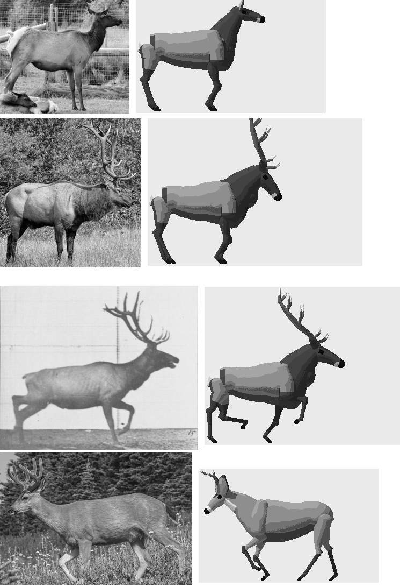
30. elements/deer-elk/stages/s1/board_grey5.pngWrite: elements/deer-elk/src/palette.py
"""Palettes: (material, step) -> RGB for a coat, an hour and a depth.
The palette is the light. Every ramp walks in OKLab from a cool dark (pulled toward the sky's
ambient colour) to a warm light (pulled toward the sun's colour); golden hour and dusk pull harder
and lower the key. Hide colours were read off the reference photos (the Roosevelt cow and bull in
refs/roosevelt_elk_cow, the blacktails in the naturalist's photos).
"""
import numpy as np
import rig
STEPS = 6
def _lin(c):
c = np.asarray(c, float) / 255
return np.where(c > 0.04045, ((c + 0.055) / 1.055) ** 2.4, c / 12.92)
def _srgb(l):
l = np.clip(l, 0, 1)
return np.where(l > 0.0031308, 1.055 * l ** (1 / 2.4) - 0.055, 12.92 * l) * 255
M1 = np.array([[0.4122214708, 0.5363325363, 0.0514459929], [0.2119034982, 0.6806995451, 0.1073969566],
[0.0883024619, 0.2817188376, 0.6299787005]])
M2 = np.array([[0.2104542553, 0.7936177850, -0.0040720468], [1.9779984951, -2.4285922050, 0.4505937099],
[0.0259040371, 0.7827717662, -0.8086757660]])
M2i = np.linalg.inv(M2)
M1i = np.linalg.inv(M1)
def to_lab(c):
return M2 @ np.cbrt(M1 @ _lin(c))
def to_rgb(lab):
return tuple(int(round(v)) for v in _srgb(M1i @ ((M2i @ lab) ** 3)))
def mix(a, b, t):
return to_rgb(to_lab(a) * (1 - t) + to_lab(b) * t)
def ramp(dark, light, n, sun, amb, warm=0.22, cool=0.3, key=1.0):
out = []
Ls, La = to_lab(sun), to_lab(amb)
for i in range(n):
t = i / max(n - 1, 1)
c = to_lab(dark) * (1 - t) + to_lab(light) * t
c = c * (1 - warm * t ** 1.5) + Ls * warm * t ** 1.5
c = c * (1 - cool * (1 - t) ** 2) + La * cool * (1 - t) ** 2
c = c.copy()
c[0] *= key
out.append(to_rgb(c))
return out
# hours: sun colour, ambient (sky) colour, key, sun elevation, a sky colour and a ground ramp
HOURS = {
"dawn": dict(sun=(255, 196, 150), amb=(96, 104, 150), key=0.80, el=10, warm=0.30, cool=0.40, sky=(170, 170, 196)),
"morning": dict(sun=(255, 236, 200), amb=(120, 150, 190), key=0.96, el=30, warm=0.2, cool=0.30, sky=(170, 200, 226)),
"noon": dict(sun=(255, 250, 236), amb=(130, 160, 196), key=1.0, el=58, warm=0.14, cool=0.26, sky=(160, 196, 232)),
"golden": dict(sun=(255, 196, 120), amb=(110, 110, 160), key=0.92, el=14, warm=0.36, cool=0.34, sky=(236, 196, 150)),
"dusk": dict(sun=(250, 150, 120), amb=(70, 70, 130), key=0.66, el=4, warm=0.40, cool=0.48, sky=(150, 120, 160)),
"overcast": dict(sun=(214, 216, 214), amb=(150, 156, 160), key=0.86, el=45, warm=0.06, cool=0.22, sky=(196, 200, 204)),
}
# coats: material -> (shadow dark, lit light). Read off the photos.
COATS = {
("elk", "f"): {
rig.BODY: ((96, 70, 48), (212, 186, 146)), # cow: pale greyish tan
rig.DARK: ((40, 28, 22), (126, 94, 66)), # cow's neck: mid chocolate
rig.PALE: ((128, 110, 84), (240, 226, 190)), # rump patch straw
rig.BELLY: ((44, 32, 24), (120, 92, 68)),
rig.LEG: ((36, 26, 20), (118, 88, 64)),
rig.HOOF: ((16, 14, 14), (58, 50, 46)),
rig.NOSE: ((12, 10, 10), (50, 44, 42)),
rig.EYE: ((8, 6, 6), (30, 24, 22)),
rig.EARIN: ((90, 76, 66), (190, 170, 150)),
rig.SPOT: ((150, 130, 104), (240, 228, 200)),
},
("elk", "m"): {
rig.BODY: ((104, 62, 34), (230, 172, 104)), # bull in autumn: orange-tan, near cream in sun
rig.DARK: ((26, 17, 12), (98, 64, 40)), # the mane: black-brown
rig.PALE: ((130, 108, 74), (244, 222, 170)),
rig.BELLY: ((30, 20, 14), (96, 64, 42)),
rig.LEG: ((28, 19, 14), (100, 68, 44)),
rig.HOOF: ((14, 12, 12), (56, 48, 44)),
rig.ANTLER: ((52, 38, 26), (168, 136, 96)),
rig.TIP: ((150, 140, 120), (250, 244, 226)),
rig.VELVET: ((70, 56, 46), (160, 136, 116)),
rig.NOSE: ((12, 10, 10), (50, 44, 42)),
rig.EYE: ((8, 6, 6), (30, 24, 22)),
rig.EARIN: ((90, 70, 56), (190, 160, 130)),
},
("deer", "f"): {
rig.BODY: ((82, 64, 50), (184, 150, 116)), # blacktail autumn coat: grey-brown
rig.DARK: ((40, 32, 28), (112, 92, 76)),
rig.PALE: ((140, 130, 118), (240, 234, 222)),
rig.BELLY: ((110, 94, 80), (214, 196, 170)),
rig.LEG: ((78, 62, 50), (180, 150, 118)),
rig.HOOF: ((16, 14, 14), (58, 50, 46)),
rig.NOSE: ((10, 9, 9), (46, 42, 40)),
rig.EYE: ((8, 6, 6), (30, 24, 22)),
rig.EARIN: ((120, 104, 96), (220, 204, 190)),
rig.THROAT: ((150, 144, 136), (246, 242, 234)),
rig.TAILTOP: ((14, 12, 12), (56, 48, 44)),
rig.SPOT: ((150, 136, 118), (244, 236, 220)),
rig.ANTLER: ((66, 52, 38), (184, 160, 124)),
rig.TIP: ((150, 140, 120), (250, 244, 226)),
rig.VELVET: ((74, 60, 50), (166, 140, 118)),
},
}
COATS[("deer", "m")] = dict(COATS[("deer", "f")])
SUMMER = {
("deer", "f"): {rig.BODY: ((98, 50, 26), (214, 132, 72)), rig.LEG: ((92, 52, 30), (206, 134, 80)),
rig.DARK: ((50, 30, 20), (130, 80, 50)), rig.BELLY: ((120, 90, 64), (222, 190, 150))},
("elk", "f"): {rig.BODY: ((104, 60, 34), (214, 150, 94)), rig.DARK: ((40, 26, 18), (120, 80, 52))},
("elk", "m"): {rig.BODY: ((104, 56, 30), (216, 140, 84))},
}
YOUNG = { # calves and fawns: red-brown with cream spots
"elk": {rig.BODY: ((94, 50, 28), (204, 132, 80)), rig.DARK: ((50, 30, 20), (140, 88, 56)), rig.LEG: ((70, 40, 24), (170, 110, 70))},
"deer": {rig.BODY: ((96, 50, 26), (210, 128, 70)), rig.LEG: ((90, 50, 28), (200, 130, 78))},
}
GROUND, GSHADOW, CONTACT, SKY, GRASSDARK = 20, 21, 22, 23, 24
NROW = 25
def coat_table(ind):
key = (ind.species, ind.sex if ind.age == "adult" else "f")
t = dict(COATS[key])
if ind.season == "summer":
t.update(SUMMER.get((ind.species, ind.sex if ind.age == "adult" else "f"), SUMMER.get((ind.species, "f"), {})))
if ind.age == "young":
t.update(YOUNG[ind.species])
if ind.sex == "m" and ind.species == "elk" and ind.age != "adult":
t = dict(COATS[("elk", "f")])
t.update({rig.ANTLER: COATS[("elk", "m")][rig.ANTLER], rig.TIP: COATS[("elk", "m")][rig.TIP], rig.VELVET: COATS[("elk", "m")][rig.VELVET]})
for m in range(15):
if m not in t:
t[m] = t[rig.BODY]
return t
GRASS = {"summer": ((34, 58, 30), (150, 176, 84)), "autumn": ((58, 56, 34), (196, 176, 110)),
"winter": ((48, 54, 40), (150, 146, 110)), "spring": ((30, 60, 30), (140, 190, 80))}
def palette(ind, hour="morning", depth=0.0, ground="summer", haze=None):
"""-> (NROW, STEPS, 3) uint8 table. depth in 0..1 lifts darks toward the haze (aerial perspective)."""
h = HOURS[hour]
tab = np.zeros((NROW, STEPS, 3), np.uint8)
ct = coat_table(ind)
haze = haze or h["sky"]
for m, (d, l) in ct.items():
r = ramp(d, l, STEPS, h["sun"], h["amb"], h["warm"], h["cool"], h["key"])
tab[m] = [depth_mix(c, haze, depth, i / (STEPS - 1)) for i, c in enumerate(r)]
gd, gl = GRASS[ground]
g = ramp(gd, gl, STEPS, h["sun"], h["amb"], h["warm"], h["cool"], h["key"])
tab[GROUND] = [depth_mix(c, haze, depth, i / (STEPS - 1)) for i, c in enumerate(g)]
# cast shadow on the ground: the ground's own darks, cooler (ambient-lit)
gs = ramp(gd, mix(gl, h["amb"], 0.45), STEPS, h["amb"], h["amb"], 0.0, 0.5, h["key"] * 0.82)
tab[GSHADOW] = [depth_mix(c, haze, depth, i / (STEPS - 1)) for i, c in enumerate(gs)]
tab[CONTACT] = [depth_mix(mix(gd, (10, 10, 14), 0.5), haze, depth, 0)] * STEPS
tab[SKY] = [h["sky"]] * STEPS
return tab
def depth_mix(c, haze, depth, t):
if depth <= 0:
return c
# darks lift strongly toward the haze, lights barely (measured on Ferrari by the master-copy arm)
w = depth * (0.85 - 0.55 * t)
return mix(c, haze, min(w, 0.95))
Bash: Anatomical coat regions via local coords
cd ~/work/pixelart-studies/elements/deer-elk/src && python3 - <<'EOF'
s=open('rig.py').read()
s=s.replace(''' torso.xs = x # remember the station x (for region materials)''',''' torso.xs = x # remember the station x, centre and radii (for region materials, pose-free)
torso.zc = zc
torso.ra = (zt - zb) / 2
torso.rb = hw''')
open('rig.py','w').write(s)
c=open('coat.py').read()
i=c.index(' if nm == "torso":'); j=c.index(' elif nm.startswith("shoulder"):')
new=''' if nm == "torso":
# pose-free local coordinates on the torso (station x, height, side)
uu = np.linspace(0, 1, len(tb.xs))
x = np.interp(u, uu, tb.xs)
zl = np.interp(u, uu, tb.zc) + np.interp(u, uu, tb.ra) * cth
up = cth
xr = sp.torso[-1][0] # rear end x
xf = sp.torso[0][0]
if elk:
out[:] = BODY
# the cape: the dark neck colour runs back over the shoulder on a diagonal, from just
# behind the withers down to behind the elbow, and covers the brisket
cape_x = 0.19 + (1.0 - zl) * 0.34 + (0.03 if ind.sex == "m" else 0.0)
out[x > cape_x] = DARK
out[(zl < np.interp(x, [xr, xf], [0.66, 0.56]) + 0.05) & (x > xr + 0.15)] = BELLY # dark belly line
# rump patch: an oval about the tail, bordered dark on the thighs, open at the croup
ex = (x - (xr + 0.015)) / 0.15
ez = (zl - 0.80) / 0.17
e = ex * ex + ez * ez
out[(e < 1.6) & (zl < 0.9) & (x < xr + 0.2)] = DARK
out[e < 1.0] = PALE
if young:
out[out == DARK] = BODY
h = _hash(x * 22, (np.arctan2(sth, cth)) * 5.5, ind.seed)
spots = (up > 0.15) & (up < 0.9) & (x > xr + 0.15) & (x < xf - 0.12) & (h < 0.33)
out[spots] = SPOT
else:
out[:] = BODY
out[(up < -0.55)] = BELLY
ex = (x - (xr + 0.0)) / 0.08
ez = (zl - 0.80) / 0.13
out[(ex * ex + ez * ez < 1.0) & (np.abs(sth) < 0.75)] = PALE # the small white rump under the tail
if young:
h = _hash(x * 26, (np.arctan2(sth, cth)) * 6.0, ind.seed)
spots = (up > 0.1) & (up < 0.92) & (x > xr + 0.08) & (x < xf - 0.1) & (h < 0.36)
out[spots] = SPOT
'''
c=c[:i]+new+c[j:]
c=c.replace(''' out[:] = BODY
if elk and not young:
out[q[:, 2] < 0.62] = DARK''',''' out[:] = DARK if (elk and not young) else BODY
if elk and not young:
out[(u < 0.35) & (cth < 0.2)] = BODY''')
open('coat.py','w').write(c)
EOF
echo done
# output:
doneBash: First colour comparison at target sizes
cd ~/work/pixelart-studies/elements/deer-elk/src && cat >> paint.py <<'EOF'
def colour(R, ind, hour="morning", ground="summer", depth=0.0, bg=None, rng=None):
"""Composite the index canvas onto a plain meadow strip. Returns RGB uint8."""
import palette as P
tab = P.palette(ind, hour, depth, ground)
H, W = R.mat.shape
rng = rng or np.random.default_rng(0)
if bg is None:
# meadow: mid step with a sprinkle of lighter/darker ticks (not the subject of this study)
g = np.full((H, W), 3, np.int32)
n = rng.random((H, W))
g[n < 0.18] = 2
g[n > 0.85] = 4
img = tab[P.GROUND][g]
gs = R.ground_shadow > 0.45
img[gs] = tab[P.GSHADOW][np.clip(g[gs] - 1, 0, 5)]
else:
img = bg.copy()
on = R.mat >= 0
img[on] = tab[R.mat[on], R.step[on]]
return img
EOF
cat > sizes_c.py <<'EOF'
"""Colour: photo (area-reduced) | mine at 60, 30, 16, 8 px, 4x."""
import numpy as np, sys
from PIL import Image
import rig, paint
from render import View
from board import BOARD
tag = sys.argv[1] if len(sys.argv) > 1 else 'x'
hour = sys.argv[2] if len(sys.argv) > 2 else 'morning'
rows = []
for i, (f, crop, gr, wr, (spn, sex), g, ph, yaw) in enumerate(BOARD):
im = Image.open(f).convert('RGB').crop(crop)
Hphoto = gr - wr
cells = []
for L in (60, 30, 16, 8):
s = (L / 1.62) / Hphoto
p = im.resize((max(1, int(im.width * s)), max(1, int(im.height * s))), Image.BOX)
ind = rig.Individual(spn, sex, 'adult', 'autumn', 1)
R, _, k = paint.paint_index(ind, g, ph, View(yaw=yaw, elev=4, sun_el=45, sun_az=-140, ss=8), size_px=L)
cells.append((np.array(p), paint.colour(R, ind, hour)))
rows.append(cells)
Z = 4
tiles = []
for cells in rows:
hh = max(max(a.shape[0], b.shape[0]) for a, b in cells)
ww = sum(a.shape[1] + b.shape[1] + 6 for a, b in cells)
t = np.full((hh, ww, 3), 255, np.uint8)
x = 0
for a, b in cells:
t[hh - a.shape[0]:, x:x + a.shape[1]] = a; x += a.shape[1] + 2
t[hh - b.shape[0]:, x:x + b.shape[1]] = b; x += b.shape[1] + 4
tiles.append(t)
W = max(t.shape[1] for t in tiles)
out = np.full((sum(t.shape[0] + 3 for t in tiles), W, 3), 255, np.uint8)
y = 0
for t in tiles:
out[y:y + t.shape[0], :t.shape[1]] = t; y += t.shape[0] + 3
Image.fromarray(out.repeat(Z, 0).repeat(Z, 1)).save(f'../stages/s1/sizesc_{tag}.png')
EOF
nice -n 10 env OPENBLAS_NUM_THREADS=1 python3 sizes_c.py c1
# output:
(Bash completed with no output)Read: elements/deer-elk/stages/s1/sizesc_c1.png 31. elements/deer-elk/stages/s1/sizesc_c1.png
31. elements/deer-elk/stages/s1/sizesc_c1.png
Bash: Render zoomed 60 px animals
cd ~/work/pixelart-studies/elements/deer-elk/src && cat > zoom.py <<'EOF'
import numpy as np, sys
from PIL import Image
import rig, paint
from render import View
tag=sys.argv[1]; Z=int(sys.argv[2]) if len(sys.argv)>2 else 8
cells=[]
for spn,sex,g,ph in [('elk','f','stand',0),('elk','m','walk',0.3),('deer','f','alert',0)]:
ind=rig.Individual(spn,sex,'adult','autumn',1)
R,_,k=paint.paint_index(ind,g,ph,View(yaw=0,elev=4,sun_el=40,sun_az=-120,ss=8),size_px=60)
cells.append(paint.colour(R,ind,'morning'))
H=max(c.shape[0] for c in cells); W=sum(c.shape[1]+2 for c in cells)
out=np.full((H,W,3),30,np.uint8); x=0
for c in cells:
out[H-c.shape[0]:,x:x+c.shape[1]]=c; x+=c.shape[1]+2
Image.fromarray(out.repeat(Z,0).repeat(Z,1)).save(f'../stages/s1/zoom_{tag}.png')
EOF
nice -n 10 python3 zoom.py z1 6
# output:
(Bash completed with no output)Read: elements/deer-elk/stages/s1/zoom_z1.png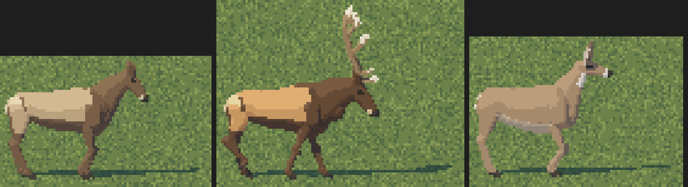
32. elements/deer-elk/stages/s1/zoom_z1.pngBash: Review paint.py header
cd ~/work/pixelart-studies/elements/deer-elk/src && sed -n 1,40p paint.py
# output:
"""The painter: an Individual + gait/pose + view + size -> index canvas -> RGB.
index canvas: mat (int, -1 = empty) and step (0..5). The palette turns (mat, step) into colour.
"""
import numpy as np
from dataclasses import dataclass, replace
import rig, render, coat
from render import View
GROUND = 20 # material ids beyond the hide: ground and its cast shadow
GSHADOW = 21
CONTACT = 22
def classes(R, view):
"""Form classes: light 5, 4 | halftone 3 || reflected 2 | shadow 1 | core 0."""
v = R.lit
n = R.nrm
sh = R.shadow > 0.5
step = np.zeros(v.shape, np.int32)
litf = (v > 0.03) & ~sh
step[litf & (v > 0.74)] = 5
step[litf & (v <= 0.74) & (v > 0.36)] = 4
step[litf & (v <= 0.36)] = 3
shf = ~litf
step[shf] = 1
# core: just past the terminator on unshadowed form
step[shf & ~sh & (v > -0.28)] = 0
# reflected light: surfaces facing down take bounce from the lit ground; the far side takes sky
bounce = n[..., 2] < -0.4
step[shf & bounce] = 2
return step
def paint_index(ind, gait="stand", phase=0.0, view=View(), size_px=60, pose=None, lines=True):
sp = ind.spec()
if pose is None:
pose = rig.gait_pose(sp, gait, phase)
tubes, sp = rig.build(ind, pose)
# size_px: the adult elk-cow body length convention -> px per metre for THIS individual:Bash: Continuous value field with seam dither
cd ~/work/pixelart-studies/elements/deer-elk/src && python3 - <<'EOF'
s=open('paint.py').read()
i=s.index('def classes(R, view):'); j=s.index('def paint_index(')
new='''def value_field(R, view, tubes):
"""Continuous step coordinate x in [0, 5]: light 5, 4 | halftone 3 || reflected 2 | shadow 1 | core 0."""
v = R.lit
n = R.nrm
sh = R.shadow > 0.5
x = np.zeros(v.shape)
litf = (v > 0.04) & ~sh
x[litf] = 3.0 + 2.5 * np.clip((v[litf] - 0.04) / 0.8, 0, 1)
shf = ~litf
x[shf] = 1.1
core = shf & ~sh & (v > -0.3)
x[core] = 0.45
# reflected light: downward-facing hide takes bounce from the lit ground
bounce = np.clip(-n[..., 2] - 0.2, 0, 1)
x[shf] += 1.0 * bounce[shf]
# far-side limbs, ear and antler sit one step down: they are in the body's shade and behind it
import render as RR
f = RR.view_xf(view)
tor = [t for t in tubes if t.name == "torso"][0]
_, _, dmid = f(tor.c.mean(0))
far_parts = set()
for i, t in enumerate(tubes):
if t.name[:2] in ("LF", "RF", "LH", "RH") or t.name.startswith(("ear", "beam", "tine", "shoulder", "ant", "fork", "brow")):
_, _, d = f(t.c.mean(0))
if d > dmid + 0.02:
far_parts.add(i)
far = np.isin(R.part, list(far_parts)) if far_parts else np.zeros(v.shape, bool)
x[far] -= 1.1
return np.clip(x, 0, 5), far
def quantize(x, dither=True):
"""Round the step coordinate; a narrow checker seam only where x sits near a half step
(Ferrari mixes pure, 50%, pure, 1-2 px wide)."""
fl = np.floor(x)
fr = x - fl
step = np.where(fr >= 0.5, fl + 1, fl)
if dither:
H, W = x.shape
yy, xx = np.mgrid[0:H, 0:W]
chk = ((yy + xx) & 1) == 1
seam = (fr > 0.40) & (fr < 0.60)
step = np.where(seam, np.where(chk, fl + 1, fl), step)
return np.clip(step, 0, 5).astype(np.int32)
'''
s=s[:i]+new+s[j:]
s=s.replace(''' R.step = classes(R, view)
return R, tubes, k''',''' x, far = value_field(R, view, tubes)
R.x = x
R.far = far
R.step = quantize(x, dither=size_px >= 40)
return R, tubes, k''')
open('paint.py','w').write(s)
EOF
nice -n 10 python3 zoom.py z2 6
# output:
(Bash completed with no output)Read: elements/deer-elk/stages/s1/zoom_z2.png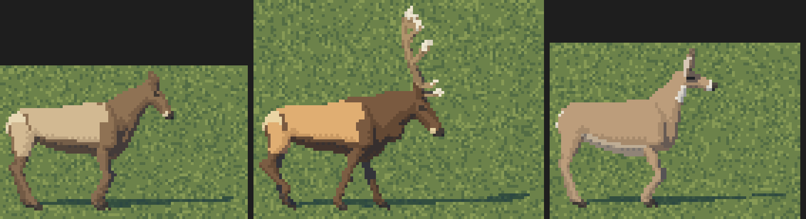
33. elements/deer-elk/stages/s1/zoom_z2.pngBash: Try sun more from the side
cd ~/work/pixelart-studies/elements/deer-elk/src && sed -i '' 's/sun_el=40,sun_az=-120/sun_el=45,sun_az=-155/' zoom.py && nice -n 10 python3 zoom.py z3 6 # output: (Bash completed with no output)
Read: elements/deer-elk/stages/s1/zoom_z3.png 34. elements/deer-elk/stages/s1/zoom_z3.png
34. elements/deer-elk/stages/s1/zoom_z3.png
Bash: Load Ferrari scenes at native resolution
cd ~/work/pixelart-studies/elements/deer-elk/src && cp ../../willow/lw.py ./lw.py && python3 -c "
import lw, numpy as np
from PIL import Image
for n in ['V19','V16PM','V02']:
d=lw.load(n); rgb=d['pal'][d['idx']]; print(n, rgb.shape)
Image.fromarray(rgb).save('(manager scratchpad)/%s.png'%n)
"
# output:
V19 (480, 640, 3)
V16PM (480, 640, 3)
V02 (480, 640, 3)Read: (manager scratchpad)/V19.png 35. (manager scratchpad)/V19.png
35. (manager scratchpad)/V19.png
Bash: Crop Ferrari warm boulders at 8x
cd (manager scratchpad) && python3 -c "
from PIL import Image
im=Image.open('V19.png'); c=im.crop((225,235,345,300)); c.resize((c.width*8,c.height*8),Image.NEAREST).save('v19_c.png')
im=Image.open('V16PM.png'); im.save('v16pm_full.png')
"
# output:
(Bash completed with no output)Read: (manager scratchpad)/v19_c.png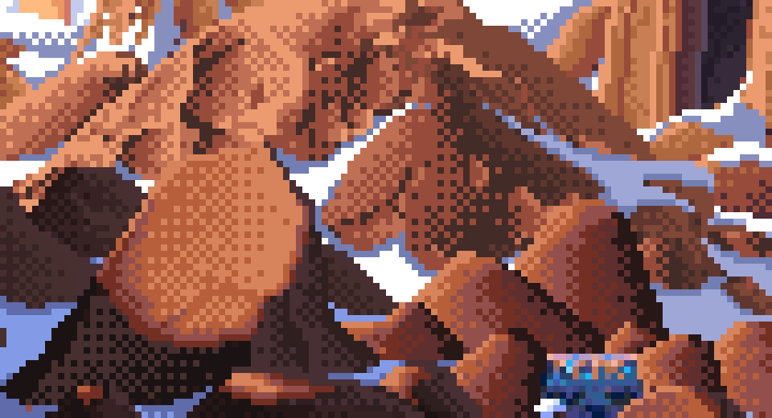
36. (manager scratchpad)/v19_c.pngBash: Print Ferrari boulder index map
cd ~/work/pixelart-studies/elements/deer-elk/src && python3 -c "
import lw, numpy as np
d=lw.load('V19'); idx=d['idx']; pal=d['pal']
r=idx[255:290, 238:280]
u=np.unique(r);
lum=lw.lum(pal[u])
order=np.argsort(lum)
sym={}
chars='0123456789abcdefghijklmnopqrstuvwxyz'
for k,i in enumerate(u[order]): sym[i]=chars[k]
for i in u[order]: print(sym[i], i, pal[i], round(float(lw.lum(pal[i])),1), (r==i).sum())
for row in r: print(''.join(sym[v] for v in row))
"
# output:
0 89 [27 19 19] 20.7 39
1 90 [39 23 23] 26.4 9
2 94 [47 31 31] 34.4 84
3 91 [55 35 35] 39.3 53
4 77 [67 43 39] 47.8 33
5 92 [71 47 47] 52.1 58
6 234 [71 47 47] 52.1 54
7 93 [71 47 51] 52.4 121
8 100 [115 47 35] 60.6 61
9 76 [151 75 59] 90.0 82
a 85 [147 79 75] 93.2 81
b 108 [ 95 107 171] 109.1 1
c 99 [183 95 59] 111.1 275
d 75 [191 111 83] 126.0 76
e 82 [115 127 179] 128.2 41
f 98 [215 131 91] 146.0 314
g 107 [131 155 231] 155.4 7
h 74 [235 155 111] 168.8 40
i 80 [255 255 255] 255.0 41
h9ddddhhh499ddhddd4444ddhhhdhhd9949499ddhd
dhh49hd4499ddhhddd44999ddhhh9999999499ddh9
hhhdhd4499d9hdh9d49499d9ddff7999d9949494ee
hhhhdh49999ddhhdd4499fffffcff7e99999999eii
hddhh49499ddhdhdfffffcfcfcfff7eee99494eiii
dhdhde49999ddfffcccccfcfffffff7eeeeeeeiiid
77777ee4d9d9fffcfcfcfcfcfcfcfff7eeeiiiiiid
535557eeedddffcccccfcfcffffffff7iiiiiiiidd
35353577iiiffcfcfcfcfcfcfcffffff7iiiiiied9
333355777iffcccccfcccfcfffffffff77iiiieddd
1335355777fcfcccfcfcfcfcfcfcfffff77iiie9d9
333333557faccccccccfcfcffffffffffa77iedddd
533535353facccfcfcfcfcfcfcfcfcffffa7e9d9d9
55555355facccccccfcccfcfffffffffffa7ed9d9d
1555555faaccfcfcfcfcfcfcfcfcfffcffa7e9d944
5333553faccccccccccfcfcffffffffffaa2ee4999
335555f8aafcfcfcfcfcfcfcfcfcfffffa822ee499
33333c8aaccccccccfcfffcffffffffffa872iee99
13353c8accccfcfcfcfcfcfcfcfcfffffa72257eee
3333c8acaccccccfcfcfcfffffffffffca7227577e
7bga88aaccfcfcfcfcfcfcfcfcffffffc872723577
777a8aacaccccfcccfffcfcffffffffca777225557
77a888aaccfcfcfcfcfcfffcfffcfffc8772723535
70888aacaccfcfcfcfcccfcffcfffffc8777225355
701888aaccfcfcfcfcfcfcccffffffca7272723535
00118a8aaccccfcfffcccccccccfcca27722225353
066688a8aaccfcfcfcccfcfcfccc82727772723535
0666688a8aaccccfcccfcfcfcfca7722772722g353
16060688aaccfcfaccfcfcfffcc872727272722gg5
166660688aaccaaccfcfcfcfcca877227727222ggg
0606060888aa8accfcfcccfccaa2727227727222ff
666666668888aaaccacacaaaaa877722227777222c
06060606068888aaaaaaa888887772722277727222
666660606066668888888601007777222227772722
060606060606066060606000007272727227727272Write: elements/deer-elk/src/s0_copy.py
"""Stage 0: copy Ferrari's sunlit warm boulder (Living Worlds V19, native (238,255)-(280,290)).
Ferrari never painted an elk. The closest passage in his work to a warm-coloured, rounded, sunlit
animal-sized mass is the orange boulder in front of the stone gate in V19: at 42x35 px it is the
size of a 60-px elk's body. What its indices show (printed by this script):
lit face c f checker over most of the face, pure f on the brightest crown, pure c where it turns
turn a 1-2 px band of 'a' (a dull rose, one step down), then '8', a saturated red-brown:
the reflected/core colour is MORE saturated than the lit colours
shadow '7' as a 1-px line on the shadow-side silhouette; '2'/'0' for the cast shadow
lit edge against the lighter snow, the lit face meets the background directly (lost edge)
The copy paints the same silhouette from a dome built on the mask (distance transform ->
height -> normals), lights it, and quantizes the step coordinate with a wide checker band.
Only his silhouette and palette are borrowed; everything at pixel level is generated.
"""
import numpy as np
from PIL import Image
from scipy import ndimage as ndi
import lw
OUT = "../stages/s0/"
def main():
import os
os.makedirs(OUT, exist_ok=True)
d = lw.load("V19")
idx, pal = d["idx"], d["pal"]
y0, y1, x0, x1 = 255, 290, 238, 280
r = idx[y0:y1, x0:x1]
# his classes for this rock, dark to light
C = {"0": 89, "2": 94, "7": 93, "8": 100, "a": 85, "c": 99, "f": 98, "h": 74, "d": 75, "9": 76}
body = np.isin(r, [C["c"], C["f"], C["a"], C["8"]])
lab, n = ndi.label(body)
sizes = ndi.sum(body, lab, range(1, n + 1))
mask = lab == (1 + int(np.argmax(sizes)))
mask = ndi.binary_fill_holes(mask)
# dome from the mask
dist = ndi.distance_transform_edt(mask)
h = np.sqrt(np.clip(dist / dist.max(), 0, 1)) * dist.max() * 0.9
h = ndi.gaussian_filter(h, 1.2)
gy, gx = np.gradient(h)
nrm = np.stack([-gx, gy, np.ones_like(h) * 1.4], -1) # x right, y up, z toward viewer
nrm /= np.linalg.norm(nrm, axis=-1, keepdims=True)
L = np.array([0.55, 0.55, 0.62]); L /= np.linalg.norm(L) # sun upper right, as in his scene
v = (nrm * L).sum(-1)
# step coordinate: 2 = '8' (core, saturated), 3 = 'a', 4 = 'c', 5 = 'f'
x = np.where(v > 0.25, 4 + np.clip((v - 0.25) / 0.55, 0, 1.2), 2 + 2 * np.clip((v + 0.25) / 0.5, 0, 1))
best = None
for w in (0.2, 0.4, 0.6, 0.8):
st = quant(x, w)
cls = np.array([C["2"], C["7"], C["8"], C["a"], C["c"], C["f"]])
mine = np.where(mask, cls[np.clip(st, 0, 5)], r)
match = (mine[mask] == r[mask]).mean()
print(f"checker band {w}: match {match:.2f}")
if best is None or match > best[0]:
best = (match, w, mine)
match, w, mine = best
# an edge rule found by reading: the shadow-side silhouette pixel is '8' then 'a' inside
er = mask & ~ndi.binary_erosion(mask)
shadow_side = er & (v < 0.35)
mine2 = mine.copy()
mine2[shadow_side] = C["8"]
inner = mask & ~ndi.binary_erosion(mask, iterations=2) & ~er & (v < 0.45)
mine2[inner] = C["a"]
m2 = (mine2[mask] == r[mask]).mean()
print(f"best band {w}: {match:.2f}; with the rim rule: {m2:.2f}")
Z = 8
a = pal[r]
b = pal[mine2]
gap = np.full((r.shape[0], 2, 3), 20, np.uint8)
img = np.concatenate([a, gap, b], 1)
Image.fromarray(img.repeat(Z, 0).repeat(Z, 1)).save(OUT + "s0_boulder_copy_8x.png")
return m2
def quant(x, w):
fl = np.floor(x)
fr = x - fl
H, W = x.shape
yy, xx = np.mgrid[0:H, 0:W]
chk = ((yy + xx) & 1) == 1
lo, hi = 0.5 - w / 2, 0.5 + w / 2
st = np.where(fr >= 0.5, fl + 1, fl)
seam = (fr > lo) & (fr < hi)
return np.where(seam, np.where(chk, fl + 1, fl), st).astype(int)
if __name__ == "__main__":
main()
Bash: Run Ferrari boulder master copy
cd ~/work/pixelart-studies/elements/deer-elk/src && python3 s0_copy.py # output: checker band 0.2: match 0.50 checker band 0.4: match 0.45 checker band 0.6: match 0.42 checker band 0.8: match 0.37 best band 0.2: 0.50; with the rim rule: 0.53
Read: elements/deer-elk/stages/s0/s0_boulder_copy_8x.png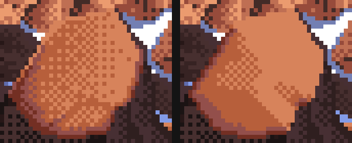
37. elements/deer-elk/stages/s0/s0_boulder_copy_8x.pngBash: Master copy with planar facet model
cd ~/work/pixelart-studies/elements/deer-elk/src && python3 - <<'EOF'
s=open('s0_copy.py').read()
s=s.replace(''' h = np.sqrt(np.clip(dist / dist.max(), 0, 1)) * dist.max() * 0.9
h = ndi.gaussian_filter(h, 1.2)''',''' # a plane with rounded edges (his rock is a facet, not a dome): height saturates 3 px in
h = 3.0 * np.sqrt(np.clip(dist / 3.0, 0, 1)) + 0.04 * (dist)
h = ndi.gaussian_filter(h, 0.7)''')
s=s.replace(''' x = np.where(v > 0.25, 4 + np.clip((v - 0.25) / 0.55, 0, 1.2), 2 + 2 * np.clip((v + 0.25) / 0.5, 0, 1))''',''' vp = np.median(v[mask & (dist > 4)])
# the face sits exactly on the c/f checker; brighter edges go pure f, darker edges fall to a, 8
x = 4.5 + (v - vp) * 6.0''')
open('s0_copy.py','w').write(s)
EOF
python3 s0_copy.py
# output:
checker band 0.2: match 0.41
checker band 0.4: match 0.34
checker band 0.6: match 0.33
checker band 0.8: match 0.31
best band 0.2: 0.41; with the rim rule: 0.42Bash: Add checker parity and blurred-step metric
cd ~/work/pixelart-studies/elements/deer-elk/src && python3 - <<'EOF'
s=open('s0_copy.py').read()
s=s.replace("def quant(x, w):","def quant(x, w, par=1):")
s=s.replace(" chk = ((yy + xx) & 1) == 1\n lo, hi"," chk = ((yy + xx) & 1) == par\n lo, hi")
s=s.replace(''' for w in (0.2, 0.4, 0.6, 0.8):
st = quant(x, w)''',''' inv = {v: k for k, v in enumerate([C["2"], C["7"], C["8"], C["a"], C["c"], C["f"]])}
his_st = np.vectorize(lambda v: inv.get(v, 2))(r).astype(float)
for w, par in [(a, b) for a in (0.2, 0.4, 0.6, 0.8) for b in (0, 1)]:
st = quant(x, w, par)
blur = np.abs(ndi.uniform_filter(st.astype(float), 3) - ndi.uniform_filter(his_st, 3))[mask].mean()
print(f" (band {w} parity {par}: mean |blurred step error| {blur:.2f})")''')
open('s0_copy.py','w').write(s)
EOF
python3 s0_copy.py
# output:
(band 0.2 parity 0: mean |blurred step error| 0.46)
checker band 0.2: match 0.64
(band 0.2 parity 1: mean |blurred step error| 0.47)
checker band 0.2: match 0.41
(band 0.4 parity 0: mean |blurred step error| 0.45)
checker band 0.4: match 0.64
(band 0.4 parity 1: mean |blurred step error| 0.48)
checker band 0.4: match 0.34
(band 0.6 parity 0: mean |blurred step error| 0.46)
checker band 0.6: match 0.65
(band 0.6 parity 1: mean |blurred step error| 0.48)
checker band 0.6: match 0.33
(band 0.8 parity 0: mean |blurred step error| 0.46)
checker band 0.8: match 0.65
(band 0.8 parity 1: mean |blurred step error| 0.49)
checker band 0.8: match 0.31
best band 0.6: 0.65; with the rim rule: 0.67Read: elements/deer-elk/stages/s0/s0_boulder_copy_8x.png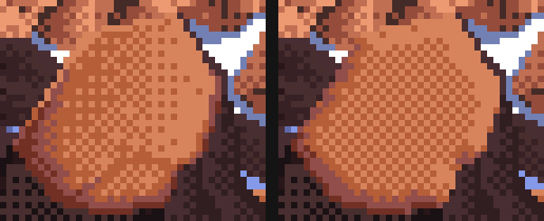
38. elements/deer-elk/stages/s0/s0_boulder_copy_8x.pngBash: Test Bayer 2x2 gradient quantization
cd ~/work/pixelart-studies/elements/deer-elk/src && python3 - <<'EOF'
s=open('s0_copy.py').read()
s=s.replace('''def quant(x, w, par=1):''','''def bayer_quant(x, off=(0, 0)):
"""4-level ordered dither between adjacent steps (DPaint gradient fill): 0, 25, 50, 75 %."""
B = np.array([[0, 2], [3, 1]])
H, W = x.shape
yy, xx = np.mgrid[0:H, 0:W]
t = (B[(yy + off[0]) % 2, (xx + off[1]) % 2] + 0.5) / 4
fl = np.floor(x)
return (fl + ((x - fl) > t)).astype(int)
def quant(x, w, par=1):''')
s=s.replace(''' match, w, mine = best''',''' for off in [(0, 0), (0, 1), (1, 0), (1, 1)]:
st = bayer_quant(x, off)
cls = np.array([C["2"], C["7"], C["8"], C["a"], C["c"], C["f"]])
mb = np.where(mask, cls[np.clip(st, 0, 5)], r)
match = (mb[mask] == r[mask]).mean()
print(f"bayer 2x2 offset {off}: match {match:.2f}")
if match > best[0]:
best = (match, "bayer", mb)
match, w, mine = best''')
open('s0_copy.py','w').write(s)
EOF
python3 s0_copy.py | grep -v "(band"
# output:
checker band 0.2: match 0.64
checker band 0.2: match 0.41
checker band 0.4: match 0.64
checker band 0.4: match 0.34
checker band 0.6: match 0.65
checker band 0.6: match 0.33
checker band 0.8: match 0.65
checker band 0.8: match 0.31
bayer 2x2 offset (0, 0): match 0.64
bayer 2x2 offset (0, 1): match 0.35
bayer 2x2 offset (1, 0): match 0.34
bayer 2x2 offset (1, 1): match 0.67
best band bayer: 0.67; with the rim rule: 0.68Bash: Fit linear gradient fill hypothesis
cd ~/work/pixelart-studies/elements/deer-elk/src && python3 - <<'EOF'
s=open('s0_copy.py').read()
s=s.replace(''' match, w, mine = best''',''' # hypothesis: the face is ONE linear gradient (a DPaint fill) plus edge bands. Fit it.
face = mask & (dist > 2.5) & np.isin(r, [C["c"], C["f"]])
yy, xx = np.nonzero(face)
dens = ndi.uniform_filter((r == C["f"]).astype(float), 4)[face]
A = np.stack([xx, yy, np.ones_like(xx)], 1).astype(float)
coef, *_ = np.linalg.lstsq(A, dens, rcond=None)
print("fitted f-density gradient per px (x, y, const):", np.round(coef, 3))
Y, X = np.mgrid[0:r.shape[0], 0:r.shape[1]]
xg = 4 + np.clip(coef[0] * X + coef[1] * Y + coef[2], 0, 1)
xg = np.where(dist > 2.5, xg, x)
for off in [(0, 0), (0, 1), (1, 0), (1, 1)]:
st = bayer_quant(xg, off)
cls = np.array([C["2"], C["7"], C["8"], C["a"], C["c"], C["f"]])
mb = np.where(mask, cls[np.clip(st, 0, 5)], r)
match = (mb[mask] == r[mask]).mean()
mface = (mb[face] == r[face]).mean()
print(f"gradient fill + bayer {off}: match {match:.2f} (face only {mface:.2f})")
if match > best[0]:
best = (match, "gradient", mb)
match, w, mine = best''')
open('s0_copy.py','w').write(s)
EOF
python3 s0_copy.py | grep -v "band"
# output:
bayer 2x2 offset (0, 0): match 0.64
bayer 2x2 offset (0, 1): match 0.35
bayer 2x2 offset (1, 0): match 0.34
bayer 2x2 offset (1, 1): match 0.67
fitted f-density gradient per px (x, y, const): [ 0.036 -0.002 -0.191]
gradient fill + bayer (0, 0): match 0.66 (face only 0.80)
gradient fill + bayer (0, 1): match 0.40 (face only 0.41)
gradient fill + bayer (1, 0): match 0.39 (face only 0.40)
gradient fill + bayer (1, 1): match 0.67 (face only 0.81)Bash: Show paint_index for editing
cd ~/work/pixelart-studies/elements/deer-elk/src && sed -n '/^def paint_index/,/^GREY_BASE/p' paint.py
# output:
def paint_index(ind, gait="stand", phase=0.0, view=View(), size_px=60, pose=None, lines=True):
sp = ind.spec()
if pose is None:
pose = rig.gait_pose(sp, gait, phase)
tubes, sp = rig.build(ind, pose)
# size_px: the adult elk-cow body length convention -> px per metre for THIS individual:
# we size by the individual's own nose-to-rump length in a side view (so a 4-px deer is 4 px).
k = size_px / (sp.H * 1.62)
R = render.rasterize(tubes, ind, view, k)
if lines:
R = render.thin_lines(R, tubes, ind, view, k)
on = (R.cov >= 0.45) | R.thin
R.mat = np.where(on, R.mat, -1)
x, far = value_field(R, view, tubes)
R.x = x
R.far = far
R.step = quantize(x, dither=size_px >= 40)
return R, tubes, k
GREY_BASE = { # luminance of step 4 per material, 0..1 (values from the photos' hide, in grey)Write: elements/deer-elk/src/hide.py
"""Hide rules at the pixel level, from the stage-0 copy of Ferrari's warm boulder (V19):
1. planes: a big lit plane is ONE gradient between two adjacent steps, rendered with a 2x2 Bayer
(DPaint) fill; the form turns only in narrow edge bands. So the torso's interior step
coordinate is pulled toward its median (flattened), and the silhouette keeps the full turn.
2. edge bands: on silhouette edges turned away from the sun the lit face falls one step in a 1-px
band; in the shadow family the outermost pixel takes the reflected (saturated) step 2.
3. lit edges: edges toward the sun take the pure upper step (his crown is pure f); dark hide
(neck, legs) against grass gets a 1-px rim so it separates without an outline.
4. below ~28 px no dither at all: marks are single pixels and a checker there is noise.
"""
import numpy as np
from scipy import ndimage as ndi
BAYER = np.array([[0, 2], [3, 1]])
def bayer_quant(x, off=(0, 0)):
H, W = x.shape
yy, xx = np.mgrid[0:H, 0:W]
t = (BAYER[(yy + off[0]) % 2, (xx + off[1]) % 2] + 0.5) / 4
fl = np.floor(x)
return np.clip(fl + ((x - fl) > t), 0, 5).astype(np.int32)
def screen_light(view):
"""The sun's direction projected on the screen: (right, up)."""
import render
L = render.sun_vec(view.sun_az, view.sun_el)
e = np.radians(view.elev)
sx = L[0]
sv = L[2] * np.cos(e) + L[1] * np.sin(e)
v = np.array([sx, sv])
return v / (np.linalg.norm(v) + 1e-9)
def apply(R, view, tubes, size_px, flatten=0.5, dark_mats=None):
on = R.mat >= 0
x = R.x.copy()
d_in = ndi.distance_transform_cdt(on, metric="taxicab")
# 1. flatten the torso's interior toward its median lit value
ti = [i for i, t in enumerate(tubes) if t.name == "torso"]
if ti and size_px >= 20:
tor = (R.part == ti[0]) & on
interior = tor & (d_in >= 3)
lit = interior & (x >= 3)
if lit.sum() > 4:
xp = np.median(x[lit])
w = np.clip((d_in - 2) / 3.0, 0, 1) * flatten
sel = tor & (x >= 3)
x[sel] = x[sel] + (xp - x[sel]) * w[sel]
# 2./3. edge bands
if size_px >= 20:
# outward normal of the silhouette from the smoothed mask gradient
m = ndi.gaussian_filter(on.astype(float), 1.0)
gy, gx = np.gradient(m)
nx, nv = -gx, gy # outward: toward decreasing mask; v is up
nn = np.hypot(nx, nv) + 1e-9
nx, nv = nx / nn, nv / nn
sl = screen_light(view)
facing = nx * sl[0] + nv * sl[1]
edge = on & (d_in == 1)
away = edge & (facing < -0.2)
tow = edge & (facing > 0.35)
litf = x >= 3
x[away & litf] = np.minimum(x[away & litf], np.floor(x[away & litf]) - 0.01)
x[away & ~litf] = np.maximum(x[away & ~litf], 2.0)
x[tow & litf] = np.minimum(np.floor(x[tow & litf]) + 1.0, 5.0)
if dark_mats is not None:
dm = np.isin(R.mat, dark_mats)
x[tow & dm & ~litf] = np.maximum(x[tow & dm & ~litf], 3.0)
x[tow & dm & litf] = np.minimum(x[tow & dm & litf] + 1.0, 5.0)
R.x = np.clip(x, 0, 5)
if size_px >= 28:
R.step = bayer_quant(R.x)
else:
R.step = np.clip(np.floor(R.x + 0.5), 0, 5).astype(np.int32)
return R
Bash: Apply hide rules; rerender zoom
cd ~/work/pixelart-studies/elements/deer-elk/src && python3 - <<'EOF'
s=open('paint.py').read()
s=s.replace(''' R.step = quantize(x, dither=size_px >= 40)
return R, tubes, k''',''' import hide
R = hide.apply(R, view, tubes, size_px, dark_mats=[rig.DARK, rig.LEG, rig.BELLY])
return R, tubes, k''')
open('paint.py','w').write(s)
p=open('palette.py').read()
p=p.replace(''' c = c.copy()
c[0] *= key''',''' c = c.copy()
# the reflected step (2) is warmer and more saturated than its neighbours (Ferrari's '8')
if n == 6 and i == 2:
c[1:] *= 1.3
c[0] *= key''')
open('palette.py','w').write(p)
EOF
nice -n 10 python3 zoom.py z4 6
# output:
(Bash completed with no output)Read: elements/deer-elk/stages/s1/zoom_z4.png 39. elements/deer-elk/stages/s1/zoom_z4.png
39. elements/deer-elk/stages/s1/zoom_z4.png
Bash: Crop the bull for a closer look
cd ~/work/pixelart-studies/elements/deer-elk/stages/s1 && python3 -c "
from PIL import Image
im=Image.open('zoom_z4.png'); im.crop((610,0,1360,462)).save('(manager scratchpad)/z4b.png')"
# output:
(Bash completed with no output)Read: (manager scratchpad)/z4b.png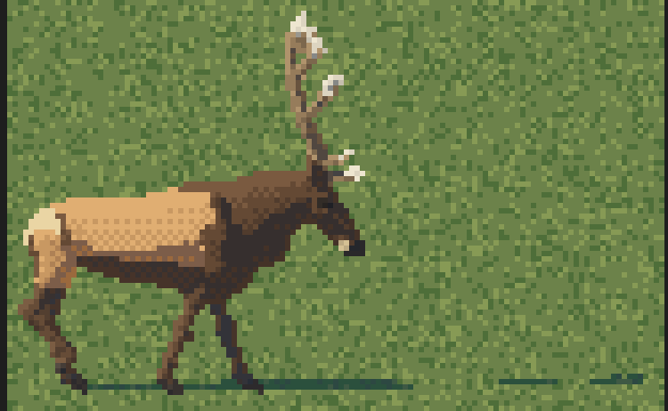
40. (manager scratchpad)/z4b.pngBash: Review thin line code
cd ~/work/pixelart-studies/elements/deer-elk/src && grep -n "def thin_lines" -A 12 render.py | head -30 # output: 304:def thin_lines(R, tubes, ind, view, k): 305- """Redraw thin parts narrower than ~1.6 px as 1-px clean runs through their centrelines. 306- Occlusion: only where the line is nearer than what is already there.""" 307- f = view_xf(view) 308- ox, oy = R.origin 309- H, W = R.cov.shape 310- L = sun_vec(view.sun_az, view.sun_el) 311- Lw = rot_yaw(L[None], -view.yaw)[0] 312- for i, tb in enumerate(tubes): 313- if not tb.thin: 314- continue 315- wpx = 2 * np.maximum(tb.a, tb.b).mean() * k 316- if wpx > 1.8:
Bash: Draw antlers as clean lines, smaller tips
cd ~/work/pixelart-studies/elements/deer-elk/src && python3 - <<'EOF'
r=open('render.py').read()
r=r.replace(''' wpx = 2 * np.maximum(tb.a, tb.b).mean() * k
if wpx > 1.8:
continue''',''' wpx = 2 * np.maximum(tb.a, tb.b).mean() * k
antler = tb.name[:3] in ("tin", "bea", "for", "bro", "ant")
if wpx > (2.6 if antler else 1.8):
continue
if antler:
# antlers are drawn, not rasterized: clear the splats and redraw as clean 1-px runs
clr = R.part == i
R.cov[clr] = 0
R.mat[clr] = -1
R.depth[clr] = np.inf''')
open('render.py','w').write(r)
c=open('coat.py').read()
c=c.replace(''' out[u > 0.72] = TIP
if nm.startswith("beam"):
out[u > 0.9] = TIP''',''' out[u > 0.82] = TIP
if nm.startswith("beam"):
out[u > 0.93] = TIP''')
c=c.replace("PRIORITY = [NOSE, EYE, TIP, TAILTOP, THROAT]","PRIORITY = [NOSE, EYE, TAILTOP]")
open('coat.py','w').write(c)
EOF
echo ok
# output:
okWrite: elements/deer-elk/src/fringe.py
"""Fur edges: where hide meets hide or hide meets air, the boundary is a fringe, not a contour.
SYNTHESIS: "A mass outline isn't drawn as a line. A textured mass ends in a fringe." Hair flows
down the flanks and down-and-back along the neck, so:
- boundaries between two hide colours (the elk's cape edge, the rump patch, the belly line)
interlock in short teeth along the hair direction (1 px wide, 1-2 px long);
- the bull's mane hangs below the neck line as a row of dark ticks (1-3 px, irregular);
- a winter coat breaks the back line with an occasional 1-px tuft.
All of it is deterministic in (seed, pixel), so it holds still from frame to frame when the
animal holds still.
"""
import numpy as np
import rig
def _h(y, x, seed):
v = (np.asarray(y, np.int64) * 73856093) ^ (np.asarray(x, np.int64) * 19349663) ^ (seed * 83492791 + 12345)
return (v % 10007) / 10007.0
def interlock(R, a, b, size_px, seed=0, down=True):
"""Teeth between hide materials a and b. Vertical boundaries get horizontal teeth 1 px deep
on alternate 2-row blocks; horizontal boundaries get vertical teeth hanging down."""
if size_px < 30:
return R
m = R.mat
H, W = m.shape
out = m.copy()
ys, xs = np.nonzero(m[:, :-1] == a)
sel = m[ys, xs + 1] == b
ys, xs = ys[sel], xs[sel]
# tooth pattern: blocks of 2 rows alternate sides, with a little randomness
blk = (ys // 2 + (_h(ys // 2, xs, seed) < 0.3)) % 2 == 0
out[ys[blk], xs[blk]] = b
ys, xs = np.nonzero(m[:, :-1] == b)
sel = m[ys, xs + 1] == a
ys, xs = ys[sel], xs[sel]
blk = (ys // 2 + (_h(ys // 2, xs, seed + 1) < 0.3)) % 2 == 0
out[ys[blk], xs[blk]] = a
# horizontal boundaries (a above b): b teeth reach up into a on alternate columns, a teeth
# hang down into b on the others (hair flowing down)
ys, xs = np.nonzero(m[:-1, :] == a)
sel = m[ys + 1, xs] == b
ys, xs = ys[sel], xs[sel]
alt = (xs + (_h(ys, xs // 2, seed + 2) < 0.25)) % 2 == 0
out[ys[alt] + 1, xs[alt]] = a
ys, xs = np.nonzero(m[:-1, :] == b)
sel = m[ys + 1, xs] == a
ys, xs = ys[sel], xs[sel]
alt = (xs + (_h(ys, xs // 2, seed + 3) < 0.25)) % 2 == 0
out[ys[alt] + 1, xs[alt]] = b
R.mat = out
return R
def hang(R, parts, mat, size_px, seed=0, density=0.55, maxlen=3):
"""Ticks hanging below the lower silhouette of `parts` (the bull's mane)."""
if size_px < 24:
return R
m = R.mat
H, W = m.shape
onp = np.isin(R.part, parts) & (m >= 0)
below_empty = np.zeros_like(onp)
below_empty[:-1] = onp[:-1] & (m[1:] < 0)
ys, xs = np.nonzero(below_empty)
L = max(1, min(maxlen, int(round(size_px / 30))))
for y, x in zip(ys, xs):
hv = _h(y, x, seed)
if hv > density:
continue
n = 1 + int(hv / density * L)
for j in range(1, n + 1):
if y + j < H and m[y + j, x] < 0:
R.mat[y + j, x] = mat
R.step[y + j, x] = max(0, R.step[y, x] - (1 if j > 1 else 0))
R.part[y + j, x] = R.part[y, x]
return R
Bash: Add fur fringe, slight yaw; rerender
cd ~/work/pixelart-studies/elements/deer-elk/src && python3 - <<'EOF'
s=open('paint.py').read()
s=s.replace(''' import hide
R = hide.apply(R, view, tubes, size_px, dark_mats=[rig.DARK, rig.LEG, rig.BELLY])
return R, tubes, k''',''' import hide, fringe
R = hide.apply(R, view, tubes, size_px, dark_mats=[rig.DARK, rig.LEG, rig.BELLY])
# fur edges
if ind.species == "elk" and ind.age != "young":
R = fringe.interlock(R, rig.BODY, rig.DARK, size_px, ind.seed)
R = fringe.interlock(R, rig.PALE, rig.DARK, size_px, ind.seed + 5)
R = fringe.interlock(R, rig.BODY, rig.BELLY, size_px, ind.seed + 9)
mp = [i for i, t in enumerate(tubes) if t.name in ("neck", "mane")]
if ind.sex == "m" and ind.age == "adult":
R = fringe.hang(R, mp, rig.DARK, size_px, ind.seed, density=0.6, maxlen=3)
else:
R = fringe.hang(R, mp, rig.DARK, size_px, ind.seed, density=0.25, maxlen=1)
return R, tubes, k''')
open('paint.py','w').write(s)
EOF
sed -i '' "s/View(yaw=0,elev=4,sun_el=45,sun_az=-155,ss=8)/View(yaw=-14,elev=6,sun_el=45,sun_az=-155,ss=8)/" zoom.py
sed -i '' "s/Image.fromarray(out.repeat(Z,0).repeat(Z,1)).save(f'..\/stages\/s1\/zoom_{tag}.png')/Image.fromarray(out.repeat(Z,0).repeat(Z,1)).save(f'..\/stages\/s1\/zoom_{tag}.png')\nfor i,c in enumerate(cells): Image.fromarray(c.repeat(8,0).repeat(8,1)).save(f'..\/stages\/s1\/zoom_{tag}_{i}.png')/" zoom.py
nice -n 10 python3 zoom.py z5 4
# output:
(Bash completed with no output)Read: elements/deer-elk/stages/s1/zoom_z5_1.png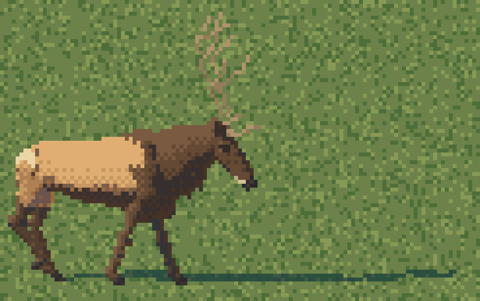
41. elements/deer-elk/stages/s1/zoom_z5_1.pngBash: Render scale ladder side and iso
cd ~/work/pixelart-studies/elements/deer-elk/src && python3 - <<'EOF'
s=open('paint.py').read()
s=s.replace(''' far = np.isin(R.part, list(far_parts)) if far_parts else np.zeros(v.shape, bool)
x[far] -= 1.1''',''' far = np.isin(R.part, list(far_parts)) if far_parts else np.zeros(v.shape, bool)
x[far] -= 1.1
# antler beams read dark against the sky and grass; only their tips are ivory
ant = np.isin(R.mat, [rig.ANTLER, rig.VELVET])
x[ant] = np.minimum(x[ant], 2.6)''')
open('paint.py','w').write(s)
EOF
cat > ladder.py <<'EOF'
"""Scale ladder: one animal from 60 px down to 4 px, side (elev 6) and iso (elev 30)."""
import numpy as np, sys
from PIL import Image
import rig, paint
from render import View
tag = sys.argv[1] if len(sys.argv) > 1 else 'x'
SIZES = [60, 48, 40, 32, 24, 20, 16, 12, 10, 8, 6, 5, 4]
subjects = [(rig.Individual('elk', 'f', 'adult', 'autumn', 1), 'stand', 0.0),
(rig.Individual('elk', 'm', 'adult', 'autumn', 2), 'walk', 0.3),
(rig.Individual('elk', 'f', 'adult', 'autumn', 3), 'graze', 0.0),
(rig.Individual('deer', 'f', 'adult', 'autumn', 4), 'alert', 0.0),
(rig.Individual('elk', 'f', 'young', 'summer', 5), 'walk', 0.6)]
rows = []
for elev, yaw in ((6, -14), (30, -30)):
for ind, g, ph in subjects:
cells = []
for L in SIZES:
R, _, k = paint.paint_index(ind, g, ph, View(yaw=yaw, elev=elev, sun_el=45, sun_az=-155, ss=8 if L > 12 else 12), size_px=L)
cells.append(paint.colour(R, ind, 'morning'))
rows.append(cells)
Z = 4
tiles = []
for cells in rows:
hh = max(c.shape[0] for c in cells)
ww = sum(c.shape[1] + 3 for c in cells)
t = np.full((hh, ww, 3), 40, np.uint8)
x = 0
for c in cells:
t[hh - c.shape[0]:, x:x + c.shape[1]] = c; x += c.shape[1] + 3
tiles.append(t)
W = max(t.shape[1] for t in tiles)
out = np.full((sum(t.shape[0] + 3 for t in tiles), W, 3), 40, np.uint8)
y = 0
for t in tiles:
out[y:y + t.shape[0], :t.shape[1]] = t; y += t.shape[0] + 3
Image.fromarray(out.repeat(Z, 0).repeat(Z, 1)).save(f'../stages/s1/ladder_{tag}.png')
print(out.shape)
EOF
nice -n 10 python3 ladder.py l1
# output:
Command did not complete within its 120s timeout and was moved to the background (ID: brj9bqplo). Output is being written to: (tmp) You will be notified when it completes. To check interim output, use Read on that file path.
Session cwd remains ~/work/voxsim; directory changes made by the backgrounded command do not apply to subsequent commands.Bash: Profile one render
cd ~/work/pixelart-studies/elements/deer-elk/src && nice python3 -c "
import cProfile, pstats, rig, paint
from render import View
ind=rig.Individual('elk','m','adult','autumn',2)
cProfile.run(\"paint.paint_index(ind,'walk',0.3,View(yaw=-14,elev=6,ss=8),size_px=60)\",'(tmp))
p=pstats.Stats('(tmp)); p.sort_stats('cumtime').print_stats(14)
" 2>&1 | tail -30
# output:
Sat Sep 26 00:55:27 2026 (tmp)
248249 function calls (242845 primitive calls) in 8.734 seconds
Ordered by: cumulative time
List reduced from 1398 to 14 due to restriction <14>
ncalls tottime percall cumtime percall filename:lineno(function)
320/1 0.005 0.000 8.735 8.735 {built-in method builtins.exec}
1 0.064 0.064 8.735 8.735 ~/work/pixelart-studies/elements/deer-elk/src/paint.py:64(paint_index)
1 2.582 2.582 7.822 7.822 ~/work/pixelart-studies/elements/deer-elk/src/render.py:152(rasterize)
40 1.867 0.047 2.653 0.066 ~/work/pixelart-studies/elements/deer-elk/src/render.py:49(sample_tube)
182 0.000 0.000 0.946 0.005 ~/miniconda3/lib/python3.12/site-packages/numpy/core/fromnumeric.py:53(_wrapfunc)
2 0.000 0.000 0.938 0.469 ~/miniconda3/lib/python3.12/site-packages/numpy/core/fromnumeric.py:1025(argsort)
2 0.938 0.469 0.938 0.469 {method 'argsort' of 'numpy.ndarray' objects}
385/4 0.004 0.000 0.843 0.211 <frozen importlib._bootstrap>:1349(_find_and_load)
383/4 0.002 0.000 0.843 0.211 <frozen importlib._bootstrap>:1304(_find_and_load_unlocked)
367/5 0.002 0.000 0.841 0.168 <frozen importlib._bootstrap>:911(_load_unlocked)
289/5 0.003 0.000 0.841 0.168 <frozen importlib._bootstrap_external>:989(exec_module)
942/9 0.001 0.000 0.839 0.093 <frozen importlib._bootstrap>:480(_call_with_frames_removed)
1 0.000 0.000 0.831 0.831 ~/work/pixelart-studies/elements/deer-elk/src/rig.py:373(build)
1 0.000 0.000 0.823 0.823 ~/work/pixelart-studies/elements/deer-elk/src/rig.py:342(loft)Read: elements/deer-elk/stages/s1/ladder_l1.png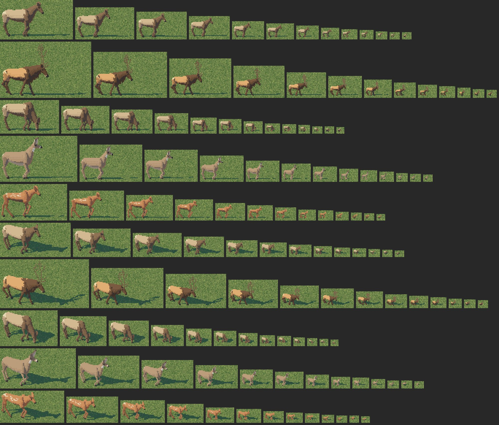
42. elements/deer-elk/stages/s1/ladder_l1.pngBash: Render micro sizes at 10x
cd ~/work/pixelart-studies/elements/deer-elk/src && python3 - <<'EOF'
s=open('ladder.py').read()
s=s.replace("SIZES = [60, 48, 40, 32, 24, 20, 16, 12, 10, 8, 6, 5, 4]","SIZES = [int(a) for a in sys.argv[2].split(',')] if len(sys.argv) > 2 else [60, 48, 40, 32, 24, 20, 16, 12, 10, 8, 6, 5, 4]")
s=s.replace("Z = 4\n","Z = int(sys.argv[3]) if len(sys.argv) > 3 else 4\n")
open('ladder.py','w').write(s)
EOF
nice -n 10 python3 ladder.py micro1 16,12,10,8,6,5,4 10
# output:
(223, 185, 3)Read: elements/deer-elk/stages/s1/ladder_micro1.png 43. elements/deer-elk/stages/s1/ladder_micro1.png
43. elements/deer-elk/stages/s1/ladder_micro1.png
Write: elements/deer-elk/src/micro.py
"""The small painter (under ~14 px of body length): mass + strokes.
At these sizes the splat renderer turns legs, neck and antlers into blobs (ladder_micro1). A
painter at this scale does something else: the body is a mass (coverage of the torso only),
and everything narrow is a stroke, a clean 1-px run through the projected skeleton:
legs elbow/stifle -> carpus/hock -> hoof, far pair first and one step darker
neck withers-front -> poll, 1 px (2 px on a bull at >= 10 px: the mane)
head poll -> nose, 1 px
antlers the beam as a 1-px run; tines only >= 10 px; at 5-7 px a single dark pixel
ears a 1-px tick (deer) at >= 8 px
The value plan is the far read from the naturalist's guide: dark front half (neck, head, legs),
light back, the one pale pixel of the rump; the torso's top row takes the sun.
"""
import numpy as np
import rig, render
from render import clean_line, view_xf
def _poly(img_mat, img_step, img_part, pts, mat, step, part, H, W, overwrite=True):
for (x0, y0), (x1, y1) in zip(pts[:-1], pts[1:]):
for (x, y) in clean_line(x0, y0, x1, y1):
if 0 <= x < W and 0 <= y < H and (overwrite or img_mat[y, x] < 0):
img_mat[y, x] = mat
img_step[y, x] = step
img_part[y, x] = part
def paint(ind, tubes, sp, view, k, size_px):
f = view_xf(view)
names = [t.name for t in tubes]
torso_like = [i for i, t in enumerate(tubes) if t.name == "torso" or t.name.startswith("shoulder")]
sub = [tubes[i] for i in torso_like]
import dataclasses
R = render.rasterize(sub, ind, dataclasses.replace(view, ss=12), k, pad=4)
# the whole skeleton's extent may exceed the torso's canvas: re-rasterize on a canvas big
# enough for all tubes by rasterizing everything once for the frame and the ground shadow
Rall = render.rasterize(tubes, ind, dataclasses.replace(view, ss=6), k, pad=4)
H, W = Rall.cov.shape
ox, oy = Rall.origin
# torso mass placed into the full canvas
ox_t, oy_t = R.origin
dx, dy = int(round(ox - ox_t)), int(round(oy - oy_t))
mat = np.full((H, W), -1, np.int32)
step = np.zeros((H, W), np.int32)
part = np.full((H, W), -1, np.int32)
def P(p):
sx, sv, d = f(p)
return (sx * k + ox, oy - sv * k)
def depth(p):
return f(p)[2]
tor = tubes[names.index("torso")]
dmid = depth(tor.c.mean(0))
dark_front = ind.species == "elk" and ind.age != "young"
legmat = rig.LEG
# legs: far first
legs = []
for L in ("LF", "RF", "LH", "RH"):
segs = [tubes[names.index(L + s)] for s in ("1", "2", "3", "hf")]
chain = [segs[0].c[1], segs[0].c[-1], segs[1].c[-1], segs[2].c[-1], segs[3].c[-1]]
d = depth(np.mean(chain, 0))
legs.append((d, L, chain))
legs.sort(key=lambda t: -t[0])
for d, L, chain in legs:
far = d > dmid
pts = [P(p) for p in chain]
_poly(mat, step, part, pts, legmat, 1 if far else 2, names.index(L + "2"), H, W)
# torso mass on top
tm = R.cov >= 0.5
ys, xs = np.nonzero(tm)
ys2, xs2 = ys + dy, xs + dx
ok = (ys2 >= 0) & (ys2 < H) & (xs2 >= 0) & (xs2 < W)
mat[ys2[ok], xs2[ok]] = R.mat[ys[ok], xs[ok]]
part[ys2[ok], xs2[ok]] = names.index("torso")
# values: top row of the mass in the sun, the rest one down, the bottom row in shade
body = np.zeros((H, W), bool)
body[ys2[ok], xs2[ok]] = True
top = body & ~np.vstack([np.zeros((1, W), bool), body[:-1]])
bot = body & ~np.vstack([body[1:], np.zeros((1, W), bool)])
step[body] = 3
step[top] = 4
if size_px >= 8:
step[bot & ~top] = 2
# the far read: at very small sizes the torso keeps two colours only, body and rump
if size_px < 9:
m = mat[body]
m[(m != rig.PALE)] = rig.BODY if not dark_front else m[(m != rig.PALE)]
m[(m == rig.BELLY)] = rig.BODY
mat[body] = m
if dark_front:
# the cape: the front third of the mass is dark
cols = np.nonzero(body.any(0))[0]
x0, x1 = cols.min(), cols.max()
facing_right = P(tor.c[-1])[0] > P(tor.c[0])[0]
span = x1 - x0 + 1
nd = max(1, int(round(span * 0.28)))
front = np.arange(x1 - nd + 1, x1 + 1) if facing_right else np.arange(x0, x0 + nd)
for c in front:
sel = body[:, c]
mat[sel, c] = np.where(mat[sel, c] == rig.PALE, rig.PALE, rig.DARK)
# rump: guarantee one pale pixel at the rear top of the mass for elk
if ind.species == "elk" and ind.age != "young" and not (mat == rig.PALE).any():
cols = np.nonzero(body.any(0))[0]
facing_right = P(tor.c[-1])[0] > P(tor.c[0])[0]
c = cols.min() if facing_right else cols.max()
rr = np.nonzero(body[:, c])[0]
if len(rr):
mat[rr[len(rr) // 2], c] = rig.PALE
# neck and head strokes
neck = tubes[names.index("neck")]
head = tubes[names.index("head")]
nmat = rig.DARK if dark_front else rig.BODY
npts = [P(neck.c[1]), P(neck.c[-1])]
_poly(mat, step, part, npts, nmat, 2 if dark_front else 3, names.index("neck"), H, W)
if ind.species == "elk" and ind.sex == "m" and ind.age == "adult" and size_px >= 10:
# the mane: a second run one pixel below
npts2 = [(x, y + 1) for x, y in npts]
_poly(mat, step, part, npts2, rig.DARK, 1, names.index("neck"), H, W, overwrite=False)
hpts = [P(head.c[0]), P(head.c[-1])]
_poly(mat, step, part, hpts, nmat, 2 if dark_front else 3, names.index("head"), H, W)
# antlers
ant = ind.antler()
if ant:
beams = [i for i, t in enumerate(tubes) if t.name.startswith(("beam", "ant"))]
if size_px >= 8 or ind.species == "elk":
for i in beams[:1] if size_px < 10 else beams:
t = tubes[i]
pts = [P(t.c[j]) for j in range(0, len(t.c), max(1, len(t.c) // 3))] + [P(t.c[-1])]
if size_px < 8:
pts = [P(t.c[0]), P(t.c[len(t.c) // 2])]
_poly(mat, step, part, pts, rig.ANTLER if ant != "velvet" else rig.VELVET, 1, i, H, W, overwrite=False)
if size_px >= 12:
for i, t in enumerate(tubes):
if t.name.startswith("tine") and t.name[4] in "1" and t.name[-1] in "24":
_poly(mat, step, part, [P(t.c[0]), P(t.c[-1])], rig.ANTLER, 1, i, H, W, overwrite=False)
# ears for deer
if ind.species == "deer" and size_px >= 8:
for i, t in enumerate(tubes):
if t.name.startswith("ear") and depth(t.c.mean(0)) < depth(head.c.mean(0)) + 0.05:
_poly(mat, step, part, [P(t.c[0]), P(t.c[-1])], rig.BODY, 3, i, H, W, overwrite=False)
# flagged tail (deer)
tail = tubes[names.index("tail")]
if ind.species == "deer" and size_px >= 8 and tail.c[-1][2] > tail.c[0][2]:
_poly(mat, step, part, [P(tail.c[0]), P(tail.c[-1])], rig.PALE, 4, names.index("tail"), H, W, overwrite=False)
Rall.mat = mat
Rall.step = step
Rall.part = part
Rall.cov = (mat >= 0).astype(float)
Rall.x = step.astype(float)
return Rall
Bash: Add micro painter, rerender ladder
cd ~/work/pixelart-studies/elements/deer-elk/src && python3 - <<'EOF'
s=open('paint.py').read()
s=s.replace(''' k = size_px / (sp.H * 1.62)
R = render.rasterize(tubes, ind, view, k)''',''' k = size_px / (sp.H * 1.62)
if size_px < MICRO:
import micro
R = micro.paint(ind, tubes, sp, view, k, size_px)
return R, tubes, k
view = replace(view, ss=int(np.clip(round(260 / size_px), 3, 12)))
R = render.rasterize(tubes, ind, view, k)''')
s=s.replace("CONTACT = 22\n","CONTACT = 22\nMICRO = 14\n")
open('paint.py','w').write(s)
EOF
nice -n 10 python3 ladder.py micro2 16,14,12,10,8,6,5,4 10
# output:
(223, 234, 3)Read: elements/deer-elk/stages/s1/ladder_micro2.png44. elements/deer-elk/stages/s1/ladder_micro2.png
Write: elements/deer-elk/src/micro.py
"""The small painter (under ~14 px of body length): a designed glyph from the projected skeleton.
At these sizes the splat renderer turns legs, neck and antlers into blobs (stages/s1/
ladder_micro1). A pixel artist at this scale places pixels, so this painter does too, from
keypoints of the same rig:
body per column, the torso's projected top and bottom, rounded; at least 2 rows (>= 6 px)
and never more rows than it has columns / 2.5; corners knocked off at >= 9 px
zones elk: the rear ~18% of the body is the pale rump, the front ~28% the dark cape;
deer and calves: one colour. Top row in the sun, the rest one step down.
legs per pair (fore, hind), the near leg as a clean 1-px run from the belly to the hoof;
the far leg only when its hoof is 2+ px away from the near one (walking, running),
one step darker
neck base -> poll, 1 px (a bull's mane makes it 2 at >= 10 px)
head poll -> nose, 1 px; below 7 px just the poll and the nose
antler bull elk: the beam as a 1-px run rising back from the poll (>= 8 px); a single dark
pixel above the head below that; tines at >= 12 px
ears deer: a 1-px tick up from the poll at >= 8 px
The value plan is the far read from the naturalist's guide: dark front, light back, the pale
rump pixel, the head up or down.
"""
import numpy as np
import dataclasses
import rig, render
from render import clean_line, view_xf
def _put(mat, step, part, x, y, m, s, p, overwrite=True):
H, W = mat.shape
if 0 <= x < W and 0 <= y < H and (overwrite or mat[y, x] < 0):
mat[y, x] = m
step[y, x] = s
part[y, x] = p
def _line(mat, step, part, a, b, m, s, p, overwrite=True):
for (x, y) in clean_line(a[0], a[1], b[0], b[1]):
_put(mat, step, part, x, y, m, s, p, overwrite)
def paint(ind, tubes, sp, view, k, size_px):
f = view_xf(view)
names = [t.name for t in tubes]
Rall = render.rasterize(tubes, ind, dataclasses.replace(view, ss=8), k, pad=4)
H, W = Rall.cov.shape
ox, oy = Rall.origin
mat = np.full((H, W), -1, np.int32)
step = np.zeros((H, W), np.int32)
part = np.full((H, W), -1, np.int32)
def P(p):
sx, sv, d = f(np.asarray(p))
return np.stack([sx * k + ox, oy - sv * k], -1)
def depth(p):
return f(np.asarray(p))[2]
tor = tubes[names.index("torso")]
ti = names.index("torso")
elk_adult = ind.species == "elk" and ind.age != "young"
# --- torso silhouette per column from projected surface rings
th = np.linspace(0, 2 * np.pi, 24, endpoint=False)
T, N1, N2 = render._frames(tor.c, tor.up)
ring = tor.c[:, None, :] + tor.a[:, None, None] * np.cos(th)[None, :, None] * N1[:, None, :] + tor.b[:, None, None] * np.sin(th)[None, :, None] * N2[:, None, :]
pr = P(ring.reshape(-1, 3))
xs, ys = pr[:, 0], pr[:, 1]
x0, x1 = int(np.floor(xs.min() + 0.5)), int(np.floor(xs.max() - 0.5))
ncol = max(x1 - x0 + 1, 2)
minrows = 2 if size_px >= 6 else 1
front_right = P(tor.c[-1])[0] > P(tor.c[0])[0]
cols = {}
for cx in range(x0, x0 + ncol):
sel = np.abs(xs - (cx + 0.5)) < 0.75
if not sel.any():
continue
top, bot = ys[sel].min(), ys[sel].max()
t, b = int(round(top)), int(round(bot))
if b - t < minrows:
mid = (top + bot) / 2
t = int(round(mid - minrows / 2))
b = t + minrows
cols[cx] = (t, b)
maxrows = max(minrows, int(round(ncol / 2.4)))
for cx, (t, b) in list(cols.items()):
if b - t > maxrows:
cols[cx] = (b - maxrows, b)
# knock off corners at >= 9 px: first and last column lose their top row
cks = sorted(cols)
if size_px >= 9 and len(cks) > 4:
for cx in (cks[0], cks[-1]):
t, b = cols[cx]
if b - t > 1:
cols[cx] = (t + 1, b)
# zones along the body
span = cks[-1] - cks[0] + 1
for cx in cks:
t, b = cols[cx]
u = (cx - cks[0]) / max(span - 1, 1)
if not front_right:
u = 1 - u
for y in range(t, b):
m = rig.BODY
if elk_adult:
if u < 0.18:
m = rig.PALE if y < b - 1 or b - t < 3 else rig.DARK
elif u > 0.72:
m = rig.DARK
s = 4 if y == t else 3
if y == b - 1 and b - t >= 3:
s = 2
if m == rig.DARK:
s = min(s, 3)
_put(mat, step, part, cx, y, m, s, ti)
body = mat >= 0
def belly_y(x):
x = int(round(x))
if x in cols:
return cols[x][1] - 1
near = min(cols, key=lambda c: abs(c - x))
return cols[near][1] - 1
# --- legs
pairs = {"F": [], "H": []}
for L in ("LF", "RF", "LH", "RH"):
segs = [tubes[names.index(L + s)] for s in ("1", "2", "3", "hf")]
chain = np.array([segs[0].c[-1] * 0.5 + segs[0].c[1] * 0.5, segs[0].c[-1], segs[1].c[-1], segs[2].c[-1], segs[3].c[-1]])
pairs[L[1]].append((depth(chain.mean(0)), L, P(chain)))
legmat = rig.LEG if (elk_adult or ind.species == "elk") else rig.LEG
for key in ("F", "H"):
pr_ = sorted(pairs[key], key=lambda t: t[0]) # near first
near, far = pr_[0], pr_[1]
drawn = [near]
if abs(near[2][-1][0] - far[2][-1][0]) >= 1.6 and size_px >= 6:
drawn.append(far)
for j, (d, L, pts) in enumerate(drawn[::-1]):
is_far = (L == far[1]) and len(drawn) == 2
p0 = pts[0].copy()
p0[1] = belly_y(p0[0])
chain = [p0] + ([pts[1], pts[2]] if size_px >= 9 else []) + [pts[-1]]
s = 1 if is_far else 2
for a, b in zip(chain[:-1], chain[1:]):
_line(mat, step, part, a, b, legmat, s, names.index(L + "2"), overwrite=False)
# --- neck and head
neck = tubes[names.index("neck")]
head = tubes[names.index("head")]
nmat = rig.DARK if elk_adult else rig.BODY
ns = 2 if elk_adult else 3
nb = P(neck.c[1])
# start the neck at the body's top-front edge
poll = P(neck.c[-1])
nose = P(head.c[-1])
_line(mat, step, part, nb, poll, nmat, ns, names.index("neck"), overwrite=False)
if ind.species == "elk" and ind.sex == "m" and ind.age == "adult" and size_px >= 10:
_line(mat, step, part, nb + [0, 1], poll + [0, 1], rig.DARK, 1, names.index("neck"), overwrite=False)
if size_px >= 7:
_line(mat, step, part, poll, nose, nmat, ns, names.index("head"))
else:
_put(mat, step, part, int(round(nose[0])), int(round(nose[1])), nmat, ns, names.index("head"), overwrite=False)
# --- antlers
ant = ind.antler()
if ant:
am = rig.ANTLER if ant != "velvet" else rig.VELVET
beams = [t for t in tubes if t.name.startswith(("beam", "ant"))]
beams.sort(key=lambda t: depth(t.c.mean(0)))
if size_px >= 8:
for bt in beams[:1] if size_px < 11 else beams[:2]:
pts = P(bt.c[[0, len(bt.c) // 2, -1]])
_line(mat, step, part, pts[0], pts[1], am, 1, ti, overwrite=False)
_line(mat, step, part, pts[1], pts[2], am, 1, ti, overwrite=False)
if size_px >= 12:
for t in tubes:
if t.name.startswith("tine") and t.name[-1] in "02" and depth(t.c.mean(0)) < depth(head.c.mean(0)):
pt = P(t.c[[0, -1]])
_line(mat, step, part, pt[0], pt[1], am, 1, ti, overwrite=False)
elif ind.species == "elk":
top = P(beams[0].c[len(beams[0].c) // 2])
_put(mat, step, part, int(round(top[0])), int(round(top[1])), am, 1, ti, overwrite=False)
# --- ears (deer)
if ind.species == "deer" and size_px >= 8:
ears = [t for t in tubes if t.name.startswith("ear")]
e = min(ears, key=lambda t: depth(t.c.mean(0)))
pe = P(e.c[[0, -1]])
_line(mat, step, part, pe[0], pe[1], rig.BODY, 3, names.index(e.name), overwrite=False)
# flagged tail
tail = tubes[names.index("tail")]
if ind.species == "deer" and size_px >= 8 and tail.c[-1][2] > tail.c[0][2]:
pt = P(tail.c[[0, -1]])
_line(mat, step, part, pt[0], pt[1], rig.PALE, 4, names.index("tail"), overwrite=False)
Rall.mat = mat
Rall.step = step
Rall.part = part
Rall.cov = (mat >= 0).astype(float)
Rall.x = step.astype(float)
return Rall
Bash: Rerender ladder with glyph micro painter
cd ~/work/pixelart-studies/elements/deer-elk/src && nice -n 10 python3 ladder.py micro3 16,14,12,10,8,6,5,4 10 # output: (223, 234, 3)
Read: elements/deer-elk/stages/s1/ladder_micro3.png45. elements/deer-elk/stages/s1/ladder_micro3.png
Bash: Print micro glyph at 12 px
cd ~/work/pixelart-studies/elements/deer-elk/src && python3 -c "
import numpy as np, rig, paint
from render import View
ind=rig.Individual('elk','f','adult','autumn',1)
R,t,k=paint.paint_index(ind,'stand',0,View(yaw=-14,elev=6,sun_el=45,sun_az=-155),size_px=12)
print(k, ind.spec().H*k)
for row in R.mat: print(''.join('.' if v<0 else 'BDPbLhAtnNETsve'[v] for v in row))
"
# output:
5.175686522894378 7.4074074074074066
...........................
...........................
...........................
...........................
...........................
.............D.............
....PBBBBDD.D.D............
...PPBBBBDDD...D...........
....LBBBBDDD...............
....L.....L................
....L.....L................
.....L....L................
.....L...L.................
.....L...LL................
...........................
...........................
...........................
...........................Bash: Heavier micro body, head mass
cd ~/work/pixelart-studies/elements/deer-elk/src && python3 - <<'EOF'
s=open('micro.py').read()
s=s.replace(" t, b = int(round(top)), int(round(bot))"," # small figures carry a heavier body than the photo: legs read long when rounded\n t, b = int(round(top - 0.15)), int(round(bot + 0.6))")
s=s.replace(''' if size_px >= 7:
_line(mat, step, part, poll, nose, nmat, ns, names.index("head"))''',''' if size_px >= 7:
_line(mat, step, part, poll, nose, nmat, ns, names.index("head"))
if size_px >= 9:
# the head is a mass, not a stroke: the jaw/cheek pixel under the first half
mid = poll * 0.55 + nose * 0.45
_line(mat, step, part, poll + [0, 1], mid + [0, 1], nmat, max(ns - 1, 1), names.index("head"), overwrite=False)
if size_px >= 10:
# the neck is wide where it leaves the body
nm_ = nb * 0.5 + poll * 0.5
_line(mat, step, part, nb + [1 if front_right else -1, 0], nm_ + [1 if front_right else -1, 0], nmat, max(ns - 1, 1), names.index("neck"), overwrite=False)''')
open('micro.py','w').write(s)
EOF
nice -n 10 python3 ladder.py micro4 16,14,12,10,8,6,5,4 10
# output:
(223, 234, 3)Read: elements/deer-elk/stages/s1/ladder_micro4.png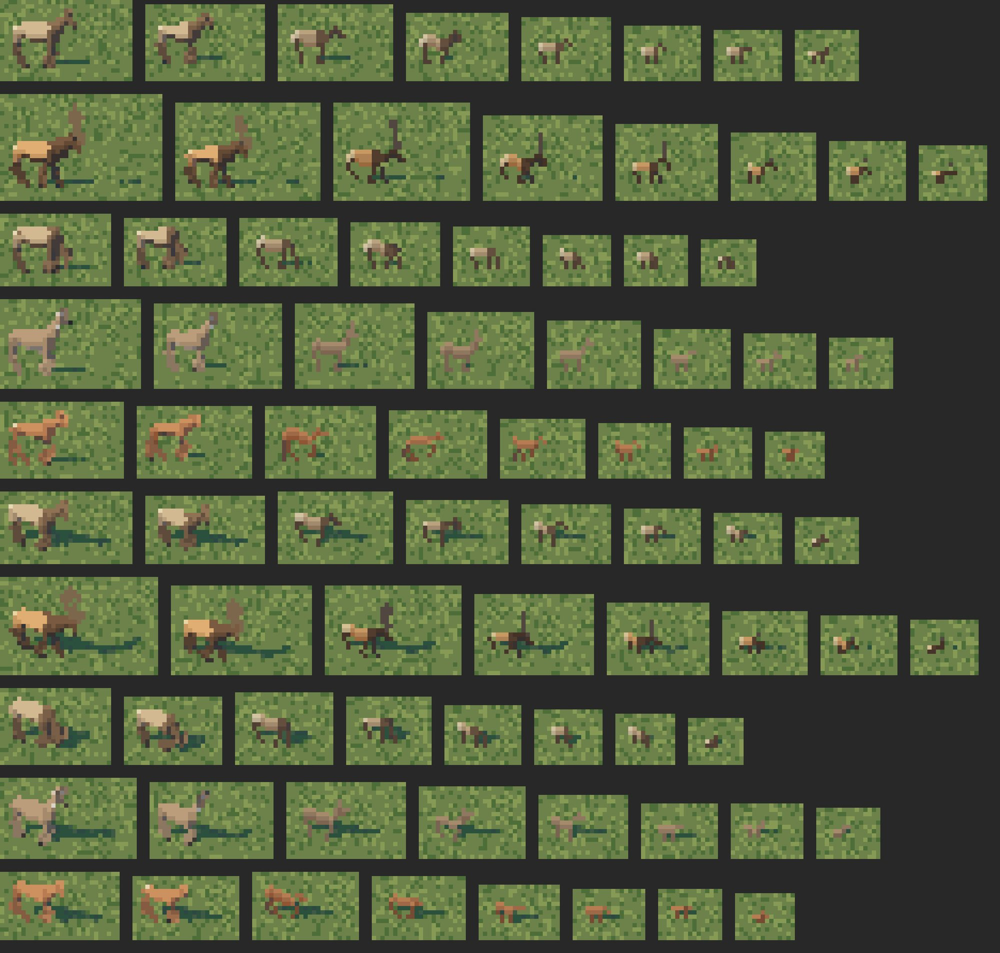
46. elements/deer-elk/stages/s1/ladder_micro4.pngBash: Render pose sheet at 48 px
cd ~/work/pixelart-studies/elements/deer-elk/src && python3 - <<'EOF'
s=open('micro.py').read()
s=s.replace("chain = [p0] + ([pts[1], pts[2]] if size_px >= 9 else []) + [pts[-1]]","chain = [p0] + ([pts[1], pts[2]] if size_px >= 12 else []) + [pts[-1]]")
open('micro.py','w').write(s)
EOF
cat > poses.py <<'EOF'
"""Pose sheet: every gait and phase for elk cow, bull and deer at one size (grey form check + colour)."""
import numpy as np, sys
from PIL import Image
import rig, paint
from render import View
tag = sys.argv[1] if len(sys.argv) > 1 else 'x'
size = int(sys.argv[2]) if len(sys.argv) > 2 else 48
G = [('stand', 0), ('graze', 0), ('alert', 0), ('bugle', 0), ('lie', 0)] + [('walk', p) for p in (0, .25, .5, .75)] + \
[('trot', p) for p in (0, .25, .5, .75)] + [('gallop', p) for p in (0, .2, .4, .6, .8)] + [('bound', p) for p in (0, .3, .6)] + [('stot', p) for p in (0, .25)]
inds = [rig.Individual('elk', 'f', 'adult', 'autumn', 1), rig.Individual('elk', 'm', 'adult', 'autumn', 2), rig.Individual('deer', 'f', 'adult', 'autumn', 3)]
rows = []
for ind in inds:
cells = []
for g, ph in G:
R, _, k = paint.paint_index(ind, g, ph, View(yaw=-14, elev=6, sun_el=45, sun_az=-155), size_px=size)
cells.append(paint.colour(R, ind, 'morning'))
rows.append(cells)
Z = 3
tiles = []
for cells in rows:
hh = max(c.shape[0] for c in cells)
t = np.full((hh, sum(c.shape[1] + 3 for c in cells), 3), 40, np.uint8)
x = 0
for c in cells:
t[hh - c.shape[0]:, x:x + c.shape[1]] = c; x += c.shape[1] + 3
tiles.append(t)
W = max(t.shape[1] for t in tiles)
out = np.full((sum(t.shape[0] + 3 for t in tiles), W, 3), 40, np.uint8)
y = 0
for t in tiles:
out[y:y + t.shape[0], :t.shape[1]] = t; y += t.shape[0] + 3
Image.fromarray(out.repeat(Z, 0).repeat(Z, 1)).save(f'../stages/s1/poses_{tag}.png')
print(out.shape)
EOF
nice -n 10 python3 poses.py p1 48
# output:
(191, 2248, 3)Bash: Split pose sheet into thirds
cd ~/work/pixelart-studies/elements/deer-elk/stages/s1 && python3 -c "
from PIL import Image
im=Image.open('poses_p1.png'); w=im.width
for i in range(3): im.crop((i*w//3,0,(i+1)*w//3,im.height)).save('poses_p1_%d.png'%i)
print(im.size)"
# output:
(6744, 573)Read: elements/deer-elk/stages/s1/poses_p1_0.png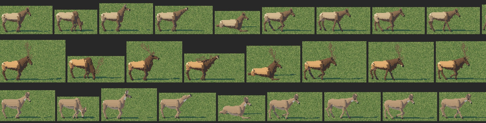
47. elements/deer-elk/stages/s1/poses_p1_0.pngRead: elements/deer-elk/stages/s1/poses_p1_1.pngRead: elements/deer-elk/stages/s1/poses_p1_2.png 48. elements/deer-elk/stages/s1/poses_p1_1.png
48. elements/deer-elk/stages/s1/poses_p1_1.png
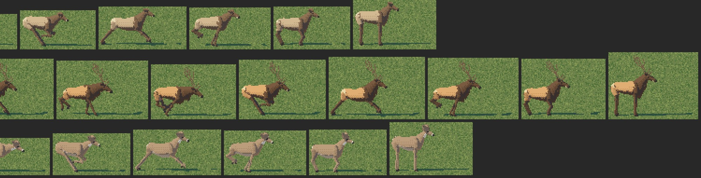
49. elements/deer-elk/stages/s1/poses_p1_2.pngBash: Fix bedded pose and render test
cd ~/work/pixelart-studies/elements/deer-elk/src && python3 - <<'EOF'
s=open('rig.py').read()
i=s.index(' if gait == "lie":'); j=s.index(' return p', i)+len(' return p')
s=s[:i]+''' if gait == "lie":
# bedded: the belly on the ground, knees folded under in front, hocks out behind,
# head up and chewing (or turned back onto the flank, pose.neck_turn)
p.lie = 1.0
zb_min = min(st[2] for st in sp.torso)
p.body_z = -(zb_min - 0.04)
p.neck_ang, p.head_ang = 52.0, -28.0
p.legs = {"LF": ("fk", (75, -105, -130)), "RF": ("fk", (70, -100, -125)),
"LH": ("fk", (-72, 96, 100)), "RH": ("fk", (-66, 100, 104))}
return p'''+s[j:]
open('rig.py','w').write(s)
c=open('coat.py').read()
c=c.replace("out[(u > 0.72) & (cth < -0.35)] = THROAT","out[(u > 0.8) & (cth < -0.6)] = THROAT")
c=c.replace(" out[(u > 0.82) & (u <= 0.93)] = THROAT"," out[(u > 0.84) & (u <= 0.93) & (cth < -0.2)] = THROAT")
open('coat.py','w').write(c)
EOF
cat > one.py <<'EOF'
import numpy as np, sys
from PIL import Image
import rig, paint
from render import View
spn,sex,age,g,ph,size,yaw,elev=sys.argv[1],sys.argv[2],sys.argv[3],sys.argv[4],float(sys.argv[5]),int(sys.argv[6]),float(sys.argv[7]),float(sys.argv[8])
Z=int(sys.argv[10]) if len(sys.argv)>10 else 6
ind=rig.Individual(spn,sex,age,'autumn',1)
R,_,k=paint.paint_index(ind,g,ph,View(yaw=yaw,elev=elev,sun_el=45,sun_az=-155),size_px=size)
img=paint.colour(R,ind,'morning')
Image.fromarray(img.repeat(Z,0).repeat(Z,1)).save('../stages/s1/one_%s.png'%sys.argv[9])
EOF
nice python3 one.py elk f adult lie 0 60 -14 6 lie1 && nice python3 one.py deer f adult lie 0 60 -30 20 lie2
# output:
(Bash completed with no output)Read: elements/deer-elk/stages/s1/one_lie1.png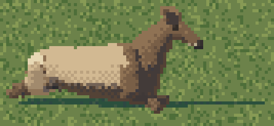
50. elements/deer-elk/stages/s1/one_lie1.pngRead: elements/deer-elk/stages/s1/one_lie2.png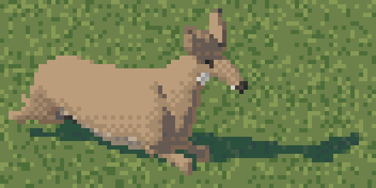
51. elements/deer-elk/stages/s1/one_lie2.pngBash: Render facing strip
cd ~/work/pixelart-studies/elements/deer-elk/src && cat > facings.py <<'EOF'
import numpy as np, sys
from PIL import Image
import rig, paint
from render import View
tag=sys.argv[1]; size=int(sys.argv[2]); elev=float(sys.argv[3])
yaws=[0,-30,-60,-90,-120,-150,180,150,120,90,60,30]
rows=[]
for ind,g in [(rig.Individual('elk','m','adult','autumn',2),'stand'),(rig.Individual('elk','f','adult','autumn',1),'walk'),(rig.Individual('deer','m','adult','autumn',3),'alert')]:
cells=[]
for y in yaws:
R,_,k=paint.paint_index(ind,g,0.2,View(yaw=y,elev=elev,sun_el=45,sun_az=-155),size_px=size)
cells.append(paint.colour(R,ind,'morning'))
rows.append(cells)
Z=int(sys.argv[4]) if len(sys.argv)>4 else 3
tiles=[]
for cells in rows:
hh=max(c.shape[0] for c in cells)
t=np.full((hh,sum(c.shape[1]+3 for c in cells),3),40,np.uint8); x=0
for c in cells:
t[hh-c.shape[0]:,x:x+c.shape[1]]=c; x+=c.shape[1]+3
tiles.append(t)
W=max(t.shape[1] for t in tiles)
out=np.full((sum(t.shape[0]+3 for t in tiles),W,3),40,np.uint8); y=0
for t in tiles:
out[y:y+t.shape[0],:t.shape[1]]=t; y+=t.shape[0]+3
Image.fromarray(out.repeat(Z,0).repeat(Z,1)).save(f'../stages/s1/facings_{tag}.png'); print(out.shape)
EOF
nice -n 10 python3 facings.py f1 40 8 3
# output:
(161, 876, 3)Read: elements/deer-elk/stages/s1/facings_f1.png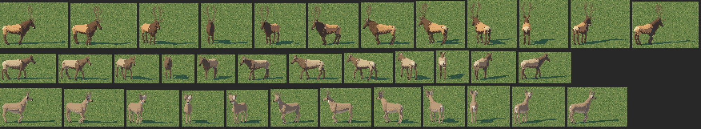
52. elements/deer-elk/stages/s1/facings_f1.pngBash: Wider antlers; render front and rear views
cd ~/work/pixelart-studies/elements/deer-elk/src && python3 - <<'EOF'
s=open('rig.py').read()
s=s.replace(''' base + scale * (hup * 0.10 + back * 0.16 + out_v * 0.08),
base + scale * (hup * 0.20 + back * 0.40 + out_v * 0.16) + wob[0],
base + scale * (hup * 0.30 + back * 0.62 + out_v * 0.20) + wob[1],
base + scale * (hup * 0.44 + back * 0.80 + out_v * 0.18) + wob[2],
base + scale * (hup * 0.60 + back * 0.88 + out_v * 0.12)]''',''' base + scale * (hup * 0.10 + back * 0.16 + out_v * 0.10),
base + scale * (hup * 0.20 + back * 0.40 + out_v * 0.22) + wob[0],
base + scale * (hup * 0.30 + back * 0.62 + out_v * 0.32) + wob[1],
base + scale * (hup * 0.44 + back * 0.80 + out_v * 0.36) + wob[2],
base + scale * (hup * 0.60 + back * 0.88 + out_v * 0.33)]''')
s=s.replace(''' b1 = base + hup * 0.16 + back * 0.08 + out_v * 0.12
b2 = b1 + hup * 0.12 + hd * 0.06 + out_v * 0.05''',''' b1 = base + hup * 0.14 + back * 0.08 + out_v * 0.16
b2 = b1 + hup * 0.12 + hd * 0.07 + out_v * 0.06''')
open('rig.py','w').write(s)
EOF
nice python3 one.py elk m adult stand 0 60 -90 8 front1 && nice python3 one.py elk m adult stand 0 60 90 8 back1 && nice python3 one.py deer m adult alert 0 60 -75 8 dfront1 && cd ../stages/s1 && python3 -c "
from PIL import Image
ims=[Image.open(f) for f in ['one_front1.png','one_back1.png','one_dfront1.png']]
W=sum(i.width for i in ims)+20; H=max(i.height for i in ims)
o=Image.new('RGB',(W,H),(30,30,30)); x=0
for i in ims: o.paste(i,(x,H-i.height)); x+=i.width+10
o.save('fronts1.png')"
# output:
(Bash completed with no output)Read: elements/deer-elk/stages/s1/fronts1.png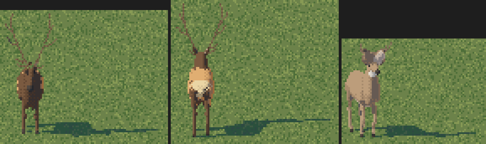
53. elements/deer-elk/stages/s1/fronts1.pngBash: Survey grass-lod code for meadow painter
ls ~/work/pixelart-studies/elements/grass-lod/ ~/work/pixelart-studies/elements/grass-lod/*/ | head -40; grep -n "^def " ~/work/pixelart-studies/elements/grass-lod/*.py 2>/dev/null | head -30 # output: ~/work/pixelart-studies/elements/grass-lod/: CRITIQUE.md LESSONS.md cache img photos ref render_all.log sheets src ~/work/pixelart-studies/elements/grass-lod/cache/: cova_3b890d59ee5f.npy tone_3b890d59ee5f.npz ~/work/pixelart-studies/elements/grass-lod/img/: cmp_far.png cmp_lit.png cmp_mid.png cmp_sh.png cmp_wip.png dbg.png dbg_value.png look_a.png look_b.png pair.png stage0_ferrari_distance_ladder.png stage2_perspective_bank.png vocab_day.png vocab_golden.png wip.png wip1x.png wip2.png wip_a.png wip_b.png wip_th12.png wip_th30.png wip_th60.png wip_th90.png zoom_day (eval):1: no matches found: ~/work/pixelart-studies/elements/grass-lod/*.py
Bash: Look at grass-lod source and lessons
ls ~/work/pixelart-studies/elements/grass-lod/src ~/work/pixelart-studies/elements/grass-lod/sheets; grep -n "^def \|^ def " ~/work/pixelart-studies/elements/grass-lod/src/*.py | head -40; sed -n 1,60p ~/work/pixelart-studies/elements/grass-lod/LESSONS.md # output: ~/work/pixelart-studies/elements/grass-lod/sheets: sheet_A_hour_x_distance.png sheet_B_species_x_distance.png sheet_C_moisture_x_grazing.png sheet_D_wind.png sheet_E_camera_x_distance.png sheet_F_seeds.png ~/work/pixelart-studies/elements/grass-lod/src: __pycache__ cmp8.py crop.py debug_value.py figs.py grasslod ladder.py render_all.sh sheets.py stage1.py stats.py vocab.py zoom.py ~/work/pixelart-studies/elements/grass-lod/src/ladder.py:10:def lum(rgb): ~/work/pixelart-studies/elements/grass-lod/src/ladder.py:13:def ladder(out, ppms, hour="day", theta=30, W=320, H=160, scale=2, world=None, **kw): ~/work/pixelart-studies/elements/grass-lod/src/sheets.py:17:def cell(args): ~/work/pixelart-studies/elements/grass-lod/src/sheets.py:30:def sheet(name, rows, cols, make, title): ~/work/pixelart-studies/elements/grass-lod/src/sheets.py:59:def main(which): ~/work/pixelart-studies/elements/grass-lod/src/zoom.py:20:def render(args): ~/work/pixelart-studies/elements/grass-lod/src/zoom.py:35:def lum(a): ~/work/pixelart-studies/elements/grass-lod/src/zoom.py:40:def blur(a, s=2.0): ~/work/pixelart-studies/elements/grass-lod/src/zoom.py:45:def metrics(frames, ppms): ~/work/pixelart-studies/elements/grass-lod/src/zoom.py:66:def plot(path, ppms, tone, struct, hf): ~/work/pixelart-studies/elements/grass-lod/src/zoom.py:72: def X(k): ~/work/pixelart-studies/elements/grass-lod/src/zoom.py:86:def main(): ~/work/pixelart-studies/elements/grass-lod/src/figs.py:13:def crop(path, x, y, w, h, k): ~/work/pixelart-studies/elements/grass-lod/src/figs.py:18:def board(items, cols, out, title, bg=(24, 24, 28)): ~/work/pixelart-studies/elements/grass-lod/src/figs.py:30:def refs(): ~/work/pixelart-studies/elements/grass-lod/src/figs.py:49:def perspective_bank(hour="golden", v=4.8): ~/work/pixelart-studies/elements/grass-lod/src/vocab.py:19:def flat_patch(ell, v, litfam, hour="golden", W=64, H=48, theta=30.0, mp=None, world=None): ~/work/pixelart-studies/elements/grass-lod/src/vocab.py:59:def main(hour="golden"): ~/work/pixelart-studies/elements/grass-lod/src/stats.py:6:def runs(a, axis): ~/work/pixelart-studies/elements/grass-lod/src/stats.py:17:def stats(im): # Grass at every distance: a study of the handoff *Grass that zooms continuously from a person 30 px tall (30 px/m) to a whole region (0.3 px/m) without popping, in Mark Ferrari's painted-pixel language.* Everything here is made by `src/` (package `grasslod/`). `src/render_all.sh` regenerates every image. Paths below are relative to this folder. **Deliverables** - `img/zoom_golden.gif`, `img/zoom_day.gif`: 96-frame continuous zo
Bash: Inspect grasslod API
ls ~/work/pixelart-studies/elements/grass-lod/src/grasslod; grep -n "^def paint\|^def \|class Camera\|class World" -A3 ~/work/pixelart-studies/elements/grass-lod/src/grasslod/__init__.py | head -60; sed -n 1,40p ~/work/pixelart-studies/elements/grass-lod/src/sheets.py
# output:
__init__.py
__pycache__
calibrate.py
marks.py
noise.py
painter.py
palette.py
render.py
world.py
"""Labelled parameter sheets. nice -n 10 python3 sheets.py [A B C D E F]
A hour x distance B species x distance C moisture x grazing
D wind E camera angle x distance F seeds
Each cell is the same machinery (grasslod.paint) with one or two parameters changed.
"""
import os, sys
os.environ.setdefault("OPENBLAS_NUM_THREADS", "1")
import numpy as np
from PIL import Image, ImageDraw
from multiprocessing import Pool
OUT = os.path.join(os.path.dirname(__file__), "..", "sheets")
CW, CH, SC = 240, 150, 2
def cell(args):
wkw, ckw, hour, mkw = args
from grasslod.world import World
from grasslod.render import Camera
from grasslod.painter import paint, centre_on_bank
from grasslod import palette as P
w = World(**wkw)
cy, cz = centre_on_bank(w)
cam = Camera(W=CW, H=CH, cx=0, cy=cy, cz=cz, **ckw)
idx, pal = paint(w, cam, hour, mparams=mkw)
return P.to_rgb(idx, pal)
def sheet(name, rows, cols, make, title):
"""make(r, c) -> (world kw, camera kw, hour, mark kw)"""
jobs = [make(r, c) for r in rows for c in cols]
with Pool(4) as p:
tiles = p.map(cell, jobs)
lw, th = 110, 26
W = lw + len(cols) * (CW * SC + 6)
H = th + 18 + len(rows) * (CH * SC + 6)
im = Image.new("RGB", (W, H), (24, 24, 28))
d = ImageDraw.Draw(im)
d.text((8, 6), title, fill=(235, 235, 235))Bash: Inspect grasslod World and Camera
cd ~/work/pixelart-studies/elements/grass-lod/src/grasslod; grep -n "def \|class " world.py render.py painter.py | head -40; grep -n "def __init__" -A 15 world.py | head -30; grep -n "class Camera" -A 25 render.py | head -40 # output: world.py:31:class World: world.py:44: def channel(self, x): world.py:51: def height(self, x, y, min_wl=0.0): world.py:81: def normal(self, x, y, min_wl=0.0, eps=None): world.py:91: def wetness(self, x, y): world.py:99: def tussockness(self, x, y): world.py:107: def dead(self, x, y): world.py:113: def clump(self, x, y): world.py:119: def sheen(self, x, y): world.py:123: def sward_height(self, x, y): painter.py:12:def centre_on_bank(world, x=0.0, back=0.0): painter.py:21:def paint(world: World, cam: Camera, hour="day", vparams=None, mparams=None, seed=0, painter.py:99:def reflect_water(idx, R, wat, rng): painter.py:148:def water_background(R, V, bgv, sky_value=4.6): render.py:19:class Camera: render.py:29: def s(self): render.py:33: def c(self): render.py:36: def u0(self): render.py:39: def to_screen(self, x, y, z): render.py:46:class Raster: render.py:49: def __init__(self, world: World, cam: Camera, oversample=2.5): render.py:105:def cast_shadow(world, X, Y, Z, sun, min_wl, reach=80.0, steps=16, soft=0.06, simplify_px=8.0): render.py:129:def value_design(R: Raster, sun, params=None): 19:class Camera: 20- ppm: float = 30.0 21- theta: float = 30.0 22- W: int = 320 23- H: int = 200 24- cx: float = 0.0 # world x at screen centre 25- cy: float = 0.0 # world y of the ground point at screen centre 26- cz: float = 0.0 # world z of that point 27- 28- @property 29- def s(self): 30- return np.sin(np.radians(self.theta)) 31- 32- @property 33- def c(self): 34- return np.cos(np.radians(self.theta)) 35- 36- def u0(self): 37- return self.cy * self.s + self.cz * self.c 38- 39- def to_screen(self, x, y, z): 40- sx = (x - self.cx) * self.ppm + self.W / 2 41- u = y * self.s + z * self.c 42- sy = self.H / 2 - (u - self.u0()) * self.ppm 43- return sx, sy 44-
Bash: World fields and paint signature
cd ~/work/pixelart-studies/elements/grass-lod/src/grasslod; sed -n 25,50p world.py; sed -n 21,40p painter.py
# output:
"tussock": (0.45, 0.16, 0.22, 0.45, 0.4, 0.05),
"sedge": (0.50, 0.12, 0.16, 0.30, 0.7, 0.02),
}
@dataclass
class World:
seed: int = 1
species: str = "meadow"
moisture: float = 0.5 # 0 dry .. 1 wet (shifts hue green<->straw, sedge in hollows)
grazing: float = 0.2 # 0 ungrazed .. 1 close-cropped
wind: float = 0.3 # 0 calm .. 1 strong (lean + combing)
wind_dir: float = 1.0 # +1 blows to screen right, -1 to the left
season_dead: float = 0.05 # base fraction of straw (dead) blades
relief: float = 1.0 # scales regional hills
hummock: float = 0.3 # amplitude (m) of the 2-6 m hummocks
water_level: float = 0.0
# ----- geometry --------------------------------------------------------------
def channel(self, x):
"""Stream centre line y_c(x) and half width."""
s = self.seed
yc = (5.0 * np.sin(x / 37.0 + s) + 2.0 * np.sin(x / 11.0 + 2 * s)
+ 60.0 * np.sin(x / 420.0 + 0.3 * s))
return yc, 1.6
def paint(world: World, cam: Camera, hour="day", vparams=None, mparams=None, seed=0,
marks=True, return_layers=False):
pal, sun = P.build(hour)
R = Raster(world, cam)
R.sun_screen_x = sun[0]
V, lit, lam, graze = value_design(R, sun, vparams)
H, W = V.shape
mp = MarkParams(**(mparams or {}))
rng = np.random.default_rng(seed)
# base layer: design value, stochastic dither between adjacent steps
base = V.copy()
canvas = np.full((H, W), np.nan)
cmat = np.zeros((H, W), np.int8)
prio = np.full((H, W), -1, np.int64)
ppm, s, c = cam.ppm, cam.s, cam.c
fin = np.isfinite(R.depth)
grass = (R.mat == 1)
bgv = V.copy()
bgv = water_background(R, V, bgv) # water: light sky tint, or the dark mirrored bank
bgv[R.sky] = 5.0Bash: Test grasslod as meadow background
cd ~/work/pixelart-studies/elements/grass-lod/src/grasslod; grep -n "HOURS\|def build\|def to_rgb\|^ \"" palette.py | head -30; cd .. && nice python3 -c "
import sys,time; sys.path.insert(0,'.')
from grasslod.world import World
from grasslod.render import Camera
from grasslod.painter import paint, centre_on_bank
from grasslod import palette as P
import numpy as np
from PIL import Image
w=World(seed=3, relief=0.3, hummock=0.15)
t=time.time()
cam=Camera(ppm=4, theta=30, W=320, H=200, cx=0, cy=40, cz=float(w.height(0,40)))
idx,pal=paint(w,cam,'day')
im=P.to_rgb(idx,pal); print(time.time()-t, im.shape)
Image.fromarray(im.repeat(2,0).repeat(2,1)).save('(manager scratchpad)/gl_test.png')
"
# output:
13:HOURS = {
15: "day": dict(
20: "golden": dict(
25: "dusk": dict(
30: "overcast": dict(
50:def build(hour="day", wet=0.5):
51: """Return (palette[NIDX] of RGB, sun_dir). `wet` greens the live ramp slightly."""
52: H = HOURS[hour]
68:def to_rgb(idx, pal):
12.014493227005005 (200, 320, 3)Read: (manager scratchpad)/gl_test.png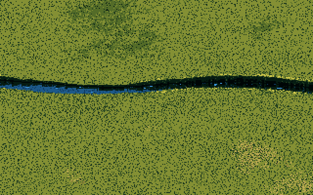
54. (manager scratchpad)/gl_test.pngWrite: elements/deer-elk/src/ground.py
"""A calm meadow to stand the animals on (not the subject of this study; grass-lod owns grass).
Ferrari's middle-distance grass is a checker of 2-3 close greens with the form turned by the
density of the lighter one (SYNTHESIS, grass-lod stage 0). So: value noise at a few metres
decides the local density of the lighter step; a 2x2 Bayer turns density into pixels; near
the bottom of a landscape view, sparse vertical 1x2 ticks of the darker step. Everything in
(material GROUND, step) so the hour palette lights it.
"""
import numpy as np
from scipy import ndimage as ndi
BAYER = np.array([[0, 2], [3, 1]])
def value_noise(shape, cell, rng):
h, w = shape
gh, gw = h // cell + 3, w // cell + 3
g = rng.random((gh, gw))
return ndi.zoom(g, cell, order=3)[:h, :w]
def meadow(shape, k, seed=0, elev=8.0, base=3.0, contrast=0.9, ticks=True):
"""Returns an int step array (0..5) for a meadow of `shape`, k px per metre."""
rng = np.random.default_rng(seed)
h, w = shape
cell = int(np.clip(k * 3.0, 3, 40))
n = value_noise(shape, cell, rng) * 0.65 + value_noise(shape, max(3, cell // 3), rng) * 0.35
x = base - 0.5 + (n - 0.5) * 2 * contrast + 0.5
yy, xx = np.mgrid[0:h, 0:w]
t = (BAYER[yy % 2, xx % 2] + 0.5) / 4
fl = np.floor(x)
st = (fl + ((x - fl) > t)).astype(np.int32)
if ticks and k >= 6:
# near grass: sparse vertical ticks of the darker step (minority marks in a lit mass)
dens = 0.05 * np.clip(k / 20, 0.3, 1.5)
m = rng.random(shape) < dens
L = max(1, int(round(k / 14)))
for j in range(L + 1):
mm = np.roll(m, j, axis=0)
st[mm] = np.minimum(st[mm], np.floor(x[mm]).astype(np.int32) - 1)
return np.clip(st, 0, 5)
Bash: Use calm meadow background; rerender ladder
cd ~/work/pixelart-studies/elements/deer-elk/src && python3 - <<'EOF'
s=open('paint.py').read()
s=s.replace(''' if bg is None:
# meadow: mid step with a sprinkle of lighter/darker ticks (not the subject of this study)
g = np.full((H, W), 3, np.int32)
n = rng.random((H, W))
g[n < 0.18] = 2
g[n > 0.85] = 4
img = tab[P.GROUND][g]''',''' if bg is None:
import ground
k = getattr(R, "k", 20.0)
g = ground.meadow((H, W), k, seed=int(rng.integers(1 << 30)))
img = tab[P.GROUND][g]''')
s=s.replace(''' import hide, fringe''',''' R.k = k
import hide, fringe''')
s=s.replace(''' R = micro.paint(ind, tubes, sp, view, k, size_px)
return R, tubes, k''',''' R = micro.paint(ind, tubes, sp, view, k, size_px)
R.k = k
return R, tubes, k''')
open('paint.py','w').write(s)
EOF
nice -n 10 python3 ladder.py l2 60,40,24,16,12,8,6,4 4
# output:
(586, 420, 3)Read: elements/deer-elk/stages/s1/ladder_l2.png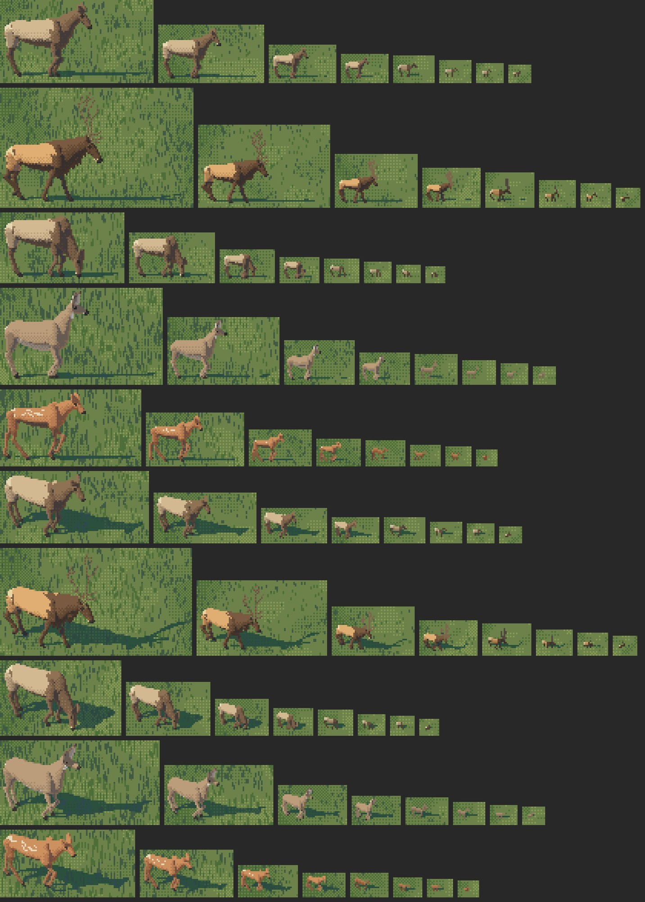
55. elements/deer-elk/stages/s1/ladder_l2.pngWrite: elements/deer-elk/src/herd.py
"""Herds: who stands where, facing which way, doing what; and a compositor that paints them on a
meadow at any scale and camera elevation (landscape ~8 deg, iso 30 deg, air 60 deg).
Arrangements from the naturalist's guide (drawing-animals.md s.5, elk-and-deer.md A1):
graze loose, 3-10 m apart, all roughly facing one way (into the wind / across the slope),
calves at a cow's flank, 1-2 sentinels head-up; composition ~19 cows : 8 calves : 3
yearlings per 30
alert the scatter collapses into a knot 2-4 m apart, every head up, all facing the threat
file single file on a trail, 3-6 m apart, lead cow in front, calves in the middle,
yearlings dawdling at the back
flee the file at a trot (elk's travelling gait), tails of the file still walking
bedded 2-5 m apart, legs folded, heads in different directions
rut a bull bugling among his cows, a satellite bull 50-100 m off
deer a doe with twins walking in line; a buck alone
"""
import numpy as np
from dataclasses import dataclass
import rig
@dataclass
class Member:
ind: rig.Individual
gait: str
phase: float
x: float # metres, world (x right, y away from the viewer)
y: float
heading: float # degrees in the world: 0 = +x (screen right), 90 = away
def _poisson(n, r_min, r_max, rng, spread=1.0, centre=(0, 0)):
pts = [np.array(centre, float)]
tries = 0
while len(pts) < n and tries < 20000:
tries += 1
base = pts[rng.integers(len(pts))]
a = rng.random() * 2 * np.pi
d = r_min + rng.random() * (r_max - r_min)
p = base + d * np.array([np.cos(a), np.sin(a) * spread])
if all(np.linalg.norm(p - q) >= r_min for q in pts):
pts.append(p)
return pts
def composition(n, rng, rut=False):
"""-> list of (sex, age) for a Roosevelt cow-calf herd of n."""
out = [("f", "adult")] # the lead cow first
for i in range(1, n):
r = rng.random()
if r < 0.27:
out.append(("f", "young"))
elif r < 0.37:
out.append(("m" if rng.random() < 0.5 else "f", "yearling"))
else:
out.append(("f", "adult"))
if rut:
out[1] = ("m", "adult")
return out
def elk_herd(behaviour="graze", n=20, seed=0, heading=10.0, season="autumn", trail=None):
rng = np.random.default_rng(seed)
comp = composition(n, rng, rut=behaviour == "rut")
mem = []
if behaviour in ("graze", "rut"):
pts = _poisson(n, 3.0, 8.0, rng, spread=0.7)
adults = []
for i, ((sex, age), p) in enumerate(zip(comp, pts)):
h = heading + rng.normal(0, 30)
if age == "young" and adults:
# calves at a cow's flank
m = adults[rng.integers(len(adults))]
side = rng.choice([-1, 1])
hh = np.radians(m.heading)
p = np.array([m.x, m.y]) + 1.4 * side * np.array([-np.sin(hh), np.cos(hh)]) + rng.normal(0, 0.4, 2)
h = m.heading + rng.normal(0, 20)
r = rng.random()
if behaviour == "rut" and sex == "m" and age == "adult":
g, ph = "bugle", 0.0
elif age == "young":
g, ph = ("walk", rng.random()) if r < 0.3 else (("lie", 0.0) if r < 0.45 else ("graze", 0.0))
elif r < 0.1:
g, ph = "alert", 0.0 # sentinels
elif r < 0.25:
g, ph = "walk", rng.random()
else:
g, ph = "graze", 0.0
m = Member(rig.Individual("elk", sex, age, season, seed * 100 + i), g, ph, float(p[0]), float(p[1]), float(h))
mem.append(m)
if age == "adult" and sex == "f":
adults.append(m)
if behaviour == "rut":
b = Member(rig.Individual("elk", "m", "adult", season, seed * 100 + 99), "alert", 0.0,
float(pts[0][0] + 55), float(pts[0][1] + 25), heading + 180)
mem.append(b)
elif behaviour == "alert":
pts = _poisson(n, 2.0, 3.5, rng, spread=0.8)
for i, ((sex, age), p) in enumerate(zip(comp, pts)):
h = heading + rng.normal(0, 12)
mem.append(Member(rig.Individual("elk", sex, age, season, seed * 100 + i), "alert", 0.0, float(p[0]), float(p[1]), float(h)))
# calves to the middle
c = np.mean([[m.x, m.y] for m in mem], 0)
for m in mem:
if m.ind.age == "young":
m.x, m.y = (m.x - c[0]) * 0.4 + c[0], (m.y - c[1]) * 0.4 + c[1]
elif behaviour in ("file", "flee"):
# a trail: a gentle S across the meadow
order = [comp[0]] + [c for c in comp[1:] if c[1] == "adult"][: n // 3] + [c for c in comp[1:] if c[1] == "young"] + \
[c for c in comp[1:] if c[1] == "adult"][n // 3:] + [c for c in comp[1:] if c[1] == "yearling"]
s = 0.0
hd = np.radians(heading)
for i, (sex, age) in enumerate(order):
s -= rng.uniform(3.0, 6.0) * (1.6 if age == "yearling" and rng.random() < 0.5 else 1.0)
# position along the trail
x = s * np.cos(hd) + 4.0 * np.sin(s / 14.0) * -np.sin(hd)
y = s * np.sin(hd) + 4.0 * np.sin(s / 14.0) * np.cos(hd)
# local heading = trail tangent
dx = np.cos(hd) - 4.0 / 14.0 * np.cos(s / 14.0) * np.sin(hd)
dy = np.sin(hd) + 4.0 / 14.0 * np.cos(s / 14.0) * np.cos(hd)
h = np.degrees(np.arctan2(dy, dx))
if behaviour == "flee":
g = "trot" if i < len(order) - 3 else "gallop"
else:
g = "walk"
mem.append(Member(rig.Individual("elk", sex, age, season, seed * 100 + i), g, rng.random(), float(x), float(y), float(h)))
elif behaviour == "bedded":
pts = _poisson(n, 2.5, 5.0, rng, spread=0.8)
for i, ((sex, age), p) in enumerate(zip(comp, pts)):
g = "lie" if rng.random() < 0.8 else ("alert" if rng.random() < 0.5 else "stand")
mem.append(Member(rig.Individual("elk", sex, age, season, seed * 100 + i), g, 0.0, float(p[0]), float(p[1]), float(rng.uniform(0, 360))))
return mem
def deer_group(kind="doe_twins", seed=0, heading=0.0, season="autumn"):
rng = np.random.default_rng(seed)
mem = []
if kind == "doe_twins":
hd = np.radians(heading)
for i, age in enumerate(["adult", "young", "young"]):
d = -i * rng.uniform(1.6, 2.4)
mem.append(Member(rig.Individual("deer", "f", age, "summer", seed * 10 + i), "walk", rng.random(),
d * np.cos(hd) + rng.normal(0, 0.3), d * np.sin(hd) + rng.normal(0, 0.3), heading + rng.normal(0, 10)))
elif kind == "buck":
mem.append(Member(rig.Individual("deer", "m", "adult", season, seed), "alert", 0.0, 0.0, 0.0, heading))
elif kind == "flee":
for i in range(3):
mem.append(Member(rig.Individual("deer", "f" if i else "m", "adult", season, seed * 10 + i), "bound", rng.random(),
-i * 3.0 + rng.normal(0, 0.5), rng.normal(0, 1.5), heading + rng.normal(0, 8)))
return mem
# ---------------------------------------------------------------- compositor
def render_member(args):
m, k, elev, sun_az, sun_el, hour, depth, ground = args
import paint, palette as P
from render import View
# the individual is painted at its own size in px: body length = 1.62 H k
size = 1.62 * m.ind.spec().H * k
R, _, _ = paint.paint_index(m.ind, m.gait, m.phase, View(yaw=m.heading, elev=elev, sun_az=sun_az - 0.0, sun_el=sun_el), size_px=size)
tab = P.palette(m.ind, hour, depth, ground)
on = R.mat >= 0
rgb = np.zeros(R.mat.shape + (3,), np.uint8)
rgb[on] = tab[R.mat[on], R.step[on]]
return rgb, on, R.ground_shadow > 0.45, R.origin
def scene(members, k, W, H, elev=30.0, hour="morning", sun_az=-150.0, sun_el=None, ground="summer", depth=0.0,
centre=None, seed=0, pool=None):
"""Paint the members on a meadow W x H px at k px/m. Returns RGB."""
import palette as P, ground as G
hr = P.HOURS[hour]
sun_el = sun_el if sun_el is not None else hr["el"]
e = np.radians(elev)
if centre is None:
xs = [m.x for m in members]; ys = [m.y for m in members]
centre = ((min(xs) + max(xs)) / 2, (min(ys) + max(ys)) / 2)
tab = P.palette(rig.Individual(), hour, depth, ground)
g = G.meadow((H, W), k, seed=seed, elev=elev)
img = tab[P.GROUND][g]
gsh = tab[P.GSHADOW][np.clip(g - 1, 0, 5)]
order = sorted(members, key=lambda m: -m.y)
jobs = [(m, k, elev, sun_az, sun_el, hour, depth, ground) for m in order]
res = pool.map(render_member, jobs) if pool else [render_member(j) for j in jobs]
def place(m):
sx = (m.x - centre[0]) * k + W / 2
sy = H / 2 - (m.y - centre[1]) * np.sin(e) * k
return sx, sy
# shadows first (all of them), then the bodies far to near
for m, (rgb, on, sh, (ox, oy)) in zip(order, res):
sx, sy = place(m)
x0, y0 = int(round(sx - ox)), int(round(sy - oy))
hh, ww = on.shape
ys, xs = np.nonzero(sh)
ys2, xs2 = ys + y0, xs + x0
ok = (ys2 >= 0) & (ys2 < H) & (xs2 >= 0) & (xs2 < W)
img[ys2[ok], xs2[ok]] = gsh[ys2[ok], xs2[ok]]
for m, (rgb, on, sh, (ox, oy)) in zip(order, res):
sx, sy = place(m)
x0, y0 = int(round(sx - ox)), int(round(sy - oy))
ys, xs = np.nonzero(on)
ys2, xs2 = ys + y0, xs + x0
ok = (ys2 >= 0) & (ys2 < H) & (xs2 >= 0) & (xs2 < W)
img[ys2[ok], xs2[ok]] = rgb[ys[ok], xs[ok]]
return img
Bash: First herd scenes test
cd ~/work/pixelart-studies/elements/deer-elk/src && cat > herd_test.py <<'EOF'
import numpy as np, sys, time
from PIL import Image
from multiprocessing import Pool
import herd
tag=sys.argv[1]
if __name__=='__main__':
t=time.time()
with Pool(4) as pool:
panels=[]
for beh,k,elev,W,H in [('graze',6,30,300,170),('graze',6,8,300,120),('file',3,30,300,150),('alert',6,30,200,120)]:
mem=herd.elk_herd(beh,24,seed=3,heading=15 if beh!='file' else 5)
panels.append(herd.scene(mem,k,W,H,elev=elev,hour='morning',seed=1,pool=pool))
print(time.time()-t)
Wt=max(p.shape[1] for p in panels); Ht=sum(p.shape[0]+4 for p in panels)
out=np.full((Ht,Wt,3),30,np.uint8); y=0
for p in panels: out[y:y+p.shape[0],:p.shape[1]]=p; y+=p.shape[0]+4
Image.fromarray(out.repeat(3,0).repeat(3,1)).save(f'../stages/s1/herd_{tag}.png')
EOF
nice -n 10 python3 herd_test.py h1
# output:
27.748176097869873Read: elements/deer-elk/stages/s1/herd_h1.png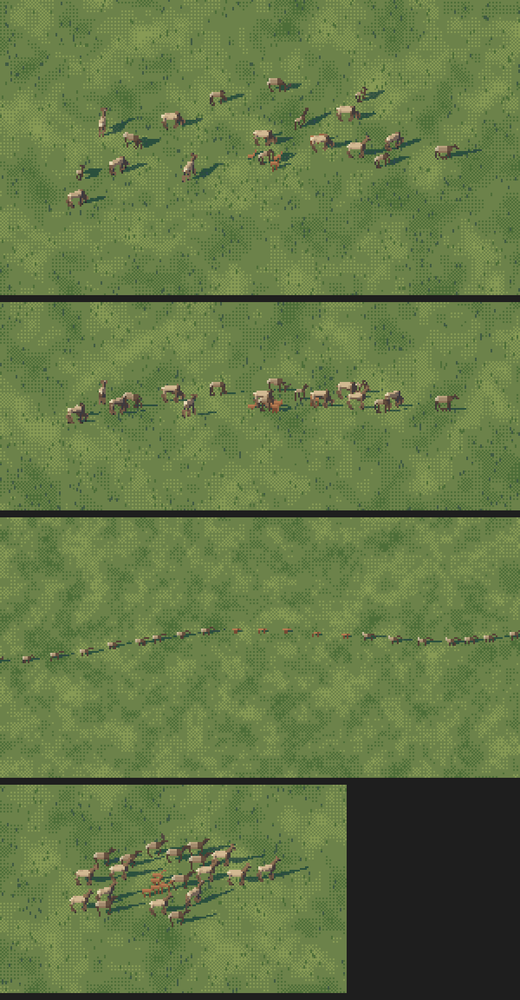
56. elements/deer-elk/stages/s1/herd_h1.pngWrite: elements/deer-elk/src/sheets.py
"""Labelled parameter sheets. nice -n 10 python3 sheets.py [A B C D E F G H]
A individual (species x sex x age) x pose 48 px, landscape view
B individual x size (60 .. 4 px) landscape and iso
C individual x facing (12 yaws) 40 px, landscape and iso
D individual x hour (dawn .. overcast) 48 px
E seeds: individual variation 40 px
F gait cycles: walk / trot / gallop / bound in 8 phases, elk and deer
G herds x distance (k px/m) x camera (landscape 8 deg, iso 30 deg)
H seasons: coat and antler state through the year
Every cell is one call of paint.paint_index (or herd.scene) with parameters changed.
"""
import os, sys
os.environ.setdefault("OPENBLAS_NUM_THREADS", "1")
os.environ.setdefault("OMP_NUM_THREADS", "1")
import numpy as np
from PIL import Image, ImageDraw, ImageFont
from multiprocessing import Pool
HERE = os.path.dirname(os.path.abspath(__file__))
OUT = os.path.join(HERE, "..", "sheets")
SUBJ = {
"elk bull": ("elk", "m", "adult"), "elk cow": ("elk", "f", "adult"), "elk yearling": ("elk", "m", "yearling"),
"elk calf": ("elk", "f", "young"), "deer buck": ("deer", "m", "adult"), "deer doe": ("deer", "f", "adult"),
"deer fawn": ("deer", "f", "young"),
}
HOUR_SUN = {"dawn": (-165, 8), "morning": (-150, 30), "noon": (-110, 60), "golden": (-160, 14), "dusk": (-170, 5), "overcast": (-130, 55)}
def _font(sz=12):
for p in ["/System/Library/Fonts/Supplemental/Arial.ttf", "/System/Library/Fonts/Helvetica.ttc", "/Library/Fonts/Arial.ttf"]:
try:
return ImageFont.truetype(p, sz)
except Exception:
pass
return ImageFont.load_default()
def cell(args):
import rig, paint
from render import View
subj, gait, phase, size, yaw, elev, hour, season, seed = args
spn, sex, age = SUBJ[subj]
ind = rig.Individual(spn, sex, age, season, seed)
az, el = HOUR_SUN[hour]
R, _, k = paint.paint_index(ind, gait, phase, View(yaw=yaw, elev=elev, sun_az=az, sun_el=el), size_px=size)
ground = {"winter": "winter", "autumn": "autumn", "spring": "spring"}.get(season, "summer")
return paint.colour(R, ind, hour, ground=ground, rng=np.random.default_rng(seed + 7))
def grid(name, title, rows, cols, make, zoom=3, pool=None, cellpad=6, note=""):
jobs = [make(r, c) for r in rows for c in cols]
tiles = pool.map(cell, jobs) if pool else [cell(j) for j in jobs]
tiles = [tiles[i * len(cols):(i + 1) * len(cols)] for i in range(len(rows))]
cw = [max(tiles[i][j].shape[1] for i in range(len(rows))) for j in range(len(cols))]
rh = [max(t.shape[0] for t in tiles[i]) for i in range(len(rows))]
lw, th = 118, 44
f, fs = _font(13), _font(11)
W = lw + sum(c * zoom + cellpad for c in cw) + 10
H = th + 20 + sum(r * zoom + cellpad for r in rh) + (18 if note else 0)
im = Image.new("RGB", (W, H), (24, 24, 28))
d = ImageDraw.Draw(im)
d.text((8, 6), title, fill=(236, 236, 236), font=f)
x = lw
for j, c in enumerate(cols):
d.text((x + 2, th), str(c), fill=(190, 190, 200), font=fs)
x += cw[j] * zoom + cellpad
y = th + 20
for i, r in enumerate(rows):
d.text((8, y + rh[i] * zoom // 2 - 6), str(r), fill=(190, 190, 200), font=fs)
x = lw
for j in range(len(cols)):
t = tiles[i][j]
t = t.repeat(zoom, 0).repeat(zoom, 1)
im.paste(Image.fromarray(t), (x, y + rh[i] * zoom - t.shape[0]))
x += cw[j] * zoom + cellpad
y += rh[i] * zoom + cellpad
if note:
d.text((8, H - 16), note, fill=(160, 160, 170), font=fs)
os.makedirs(OUT, exist_ok=True)
im.save(os.path.join(OUT, name))
print(name, im.size)
POSES = [("stand", 0), ("graze", 0), ("walk", 0.25), ("trot", 0.25), ("gallop", 0.4), ("alert", 0), ("lie", 0)]
def sheet_A(pool):
cols = ["stand", "graze", "walk", "trot", "gallop", "alert", "lie", "bugle / bound", "stot"]
rows = list(SUBJ)
def make(r, c):
spn = SUBJ[r][0]
g, ph = {"stand": ("stand", 0), "graze": ("graze", 0), "walk": ("walk", 0.25), "trot": ("trot", 0.25),
"gallop": ("gallop", 0.4), "alert": ("alert", 0), "lie": ("lie", 0)}.get(c, (None, 0))
if c == "bugle / bound":
g, ph = ("bugle", 0) if (spn == "elk" and r == "elk bull") else (("bound", 0.3) if spn == "deer" else ("walk", 0.6))
if c == "stot":
g, ph = ("stot", 0.25) if spn == "deer" else ("trot", 0.75)
return (r, g, ph, 48, -14, 8, "morning", "autumn", 11)
grid("A_individual_x_pose.png", "A. individual x pose (48 px body length, landscape view 8 deg, morning, autumn; elk columns 8-9 show walk/trot where the pose is deer-only)",
rows, cols, make, zoom=3, pool=pool)
def sheet_B(pool):
cols = [60, 48, 40, 32, 24, 20, 16, 12, 10, 8, 6, 5, 4]
rows = [(s, v) for v in ("landscape", "iso 30") for s in ("elk bull", "elk cow", "elk calf", "deer doe")]
def make(r, c):
s, v = r
g = {"elk bull": ("walk", 0.3), "elk cow": ("graze", 0), "elk calf": ("walk", 0.6), "deer doe": ("alert", 0)}[s]
return (s, g[0], g[1], c, -14 if v == "landscape" else -35, 8 if v == "landscape" else 30, "morning", "autumn", 5)
grid("B_individual_x_size.png", "B. size ladder: body length in px (>= 14 px: splat renderer + hide rules; < 14 px: the glyph painter)",
[f"{s} ({v})" for s, v in rows], cols, lambda r, c: make(rows[[f"{s} ({v})" for s, v in rows].index(r)], c), zoom=4, pool=pool)
def sheet_C(pool):
cols = [0, -30, -60, -90, -120, -150, 180, 150, 120, 90, 60, 30]
rows = [(s, v) for v in ("landscape", "iso 30") for s in ("elk bull", "elk cow", "deer buck")]
labels = [f"{s} ({v})" for s, v in rows]
def make(r, c):
s, v = rows[labels.index(r)]
g = {"elk bull": ("stand", 0), "elk cow": ("walk", 0.2), "deer buck": ("alert", 0)}[s]
return (s, g[0], g[1], 40, c, 8 if v == "landscape" else 30, "morning", "autumn", 3)
grid("C_individual_x_facing.png", "C. facing: yaw in degrees (0 = facing right, -90 = toward the viewer, 90 = away), 40 px",
labels, cols, make, zoom=3, pool=pool)
def sheet_D(pool):
cols = ["dawn", "morning", "noon", "golden", "dusk", "overcast"]
rows = ["elk bull", "elk cow", "elk calf", "deer buck", "deer doe"]
def make(r, c):
g = {"elk bull": ("bugle", 0), "elk cow": ("stand", 0), "elk calf": ("walk", 0.6), "deer buck": ("alert", 0), "deer doe": ("graze", 0)}[r]
return (r, g[0], g[1], 48, -20, 10, c, "autumn", 2)
grid("D_individual_x_hour.png", "D. light and hour (48 px; the palette is the light: sun colour, ambient, key and sun direction per hour)",
rows, cols, make, zoom=3, pool=pool)
def sheet_E(pool):
cols = list(range(8))
rows = ["elk bull", "elk cow", "deer buck", "deer doe", "elk calf"]
def make(r, c):
rng = np.random.default_rng(c * 13 + len(r))
g, ph = POSES[rng.integers(0, 6)]
return (r, g, ph, 40, -14 + rng.normal(0, 12), 10, "morning", "autumn", 100 + c)
grid("E_seeds.png", "E. seeds: individual variation (size, neck and head length +-3%, antler tine layout, pose drawn at random), 40 px",
rows, cols, make, zoom=3, pool=pool)
def sheet_F(pool):
cols = [f"{p:.3f}" for p in np.arange(8) / 8]
rows = [("elk cow", "walk"), ("elk cow", "trot"), ("elk bull", "gallop"), ("deer doe", "walk"), ("deer doe", "bound"), ("deer buck", "stot")]
labels = [f"{s} {g}" for s, g in rows]
def make(r, c):
s, g = rows[labels.index(r)]
return (s, g, float(c), 48, 0, 6, "morning", "autumn", 4)
grid("F_gait_cycles.png", "F. gait cycles in 8 phases (after Muybridge: walk lateral sequence, trot diagonals, transverse gallop, bound, stot), 48 px",
labels, cols, make, zoom=3, pool=pool)
def sheet_H(pool):
cols = ["spring", "summer", "autumn", "winter"]
rows = ["elk bull", "elk cow", "elk calf", "deer buck", "deer doe", "deer fawn"]
def make(r, c):
return (r, "stand", 0, 48, -14, 8, "morning", c, 6)
grid("H_seasons.png", "H. season: coat and antler state (bull: none in spring, velvet in summer, hard in autumn/winter; calves and fawns spotted)",
rows, cols, make, zoom=3, pool=pool)
def sheet_G(pool):
import herd
panels = []
specs = [("graze, iso 30, 10 px/m (hero distance ~30 m)", "graze", 10, 30, 360, 220),
("graze, landscape 8 deg, 10 px/m", "graze", 10, 8, 360, 140),
("graze, iso 30, 4 px/m (~100 m)", "graze", 4, 30, 240, 140),
("alert knot, iso 30, 6 px/m", "alert", 6, 30, 240, 140),
("moving file, iso 30, 3 px/m (~150 m)", "file", 3, 30, 320, 150),
("fleeing file at a trot, landscape 8 deg, 5 px/m", "flee", 5, 8, 320, 110),
("bedded, iso 30, 8 px/m", "bedded", 8, 30, 260, 150),
("rut: bull bugling, satellite bull off to the right, iso 30, 4 px/m", "rut", 4, 30, 360, 160),
("graze, iso 30, 1.6 px/m (~300 m: the far read)", "graze", 1.6, 30, 160, 90),
("graze, air 60 deg, 3 px/m", "graze", 3, 60, 200, 140)]
for lab, beh, k, elev, W, H in specs:
mem = herd.elk_herd(beh, 26, seed=7, heading=12 if beh not in ("file", "flee") else 6)
img = herd.scene(mem, k, W, H, elev=elev, hour="morning", seed=3, pool=pool)
panels.append((lab, img))
# deer groups
for lab, kind, k, elev in [("blacktail doe with twins, iso 30, 12 px/m", "doe_twins", 12, 30), ("blacktails bounding away, landscape, 10 px/m", "flee", 10, 8)]:
mem = herd.deer_group(kind, seed=2, heading=20)
panels.append((lab, herd.scene(mem, k, 200, 110, elev=elev, hour="morning", seed=4, pool=pool)))
Z = 3
f = _font(12)
W = max(p.shape[1] for _, p in panels) * Z + 20
H = sum(p.shape[0] * Z + 28 for _, p in panels) + 40
im = Image.new("RGB", (W, H), (24, 24, 28))
d = ImageDraw.Draw(im)
d.text((8, 8), "G. herds: arrangement x distance x camera (Roosevelt cow-calf herd of 26: ~17 cows, 7 calves, 2-3 yearlings; composition after the Olympic herd plan)", fill=(236, 236, 236), font=f)
y = 34
for lab, p in panels:
d.text((10, y), lab, fill=(190, 190, 200), font=f)
im.paste(Image.fromarray(p.repeat(Z, 0).repeat(Z, 1)), (10, y + 18))
y += p.shape[0] * Z + 28
im.save(os.path.join(OUT, "G_herds.png"))
print("G_herds.png", im.size)
if __name__ == "__main__":
which = sys.argv[1:] or list("ABCDEFGH")
with Pool(4) as pool:
for w in which:
globals()["sheet_" + w](pool)
Bash: Generate sheet A
cd ~/work/pixelart-studies/elements/deer-elk/src && nice -n 10 python3 sheets.py A 2>&1 | tail -5 # output: A_individual_x_pose.png (3575, 1264)
Read: elements/deer-elk/sheets/A_individual_x_pose.png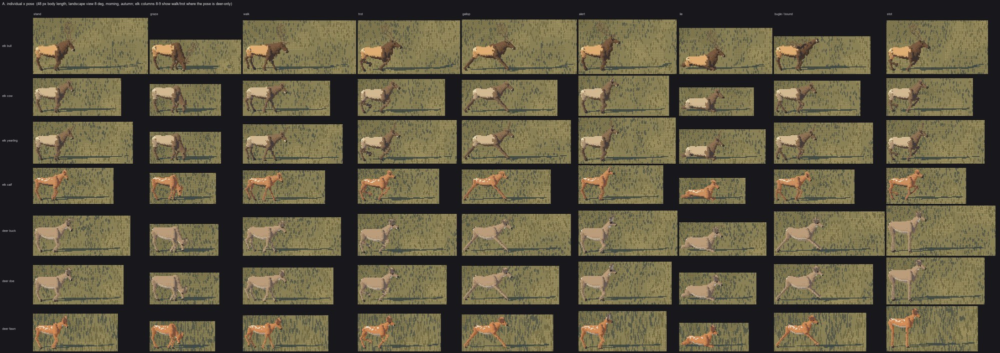
57. elements/deer-elk/sheets/A_individual_x_pose.pngBash: Row spots for fawns/calves, calmer ground ticks
cd ~/work/pixelart-studies/elements/deer-elk/src && python3 - <<'EOF'
c=open('coat.py').read()
c=c.replace("PRIORITY = [NOSE, EYE, TAILTOP]","PRIORITY = [NOSE, EYE, TAILTOP, SPOT]")
c=c.replace('''def materials(ind, tb, p, n, u, cth, sth):''','''def spots(x, cth, sth, seed, xr, xf, rows=((0.72, 0.0), (0.5, 0.5), (0.28, 0.0), (0.08, 0.5)), dx=0.075, r=0.022):
"""Fawn and calf spots: dots in rows along the back, each row offset half a step, spaced
~0.075 H, radius ~0.022 H; a little jitter per dot (deterministic in seed)."""
ang = np.arctan2(sth, cth) # 0 at the spine top, +-pi at the belly
out = np.zeros(len(x), bool)
for k, (cl, off) in enumerate(rows):
a0 = np.arccos(np.clip(cl, -1, 1)) # the row's angle from the spine
for sgn in (1, -1):
along = (x - xr) / dx + off
i = np.round(along)
jit = (_hash(i, k * 7 + (sgn > 0), seed) - 0.5) * 0.5
d_al = (along - i - jit) * dx
d_ac = (np.abs(ang) - a0) * 0.18 # arc length ~ angle x radius (~0.18 H)
hit = (d_al ** 2 + d_ac ** 2 < r * r) & (np.sign(ang + 1e-9) == sgn) & (x > xr + 0.1) & (x < xf - 0.14)
hit &= _hash(i, k * 13 + (sgn > 0), seed + 1) < 0.85
out |= hit
return out
def materials(ind, tb, p, n, u, cth, sth):''')
c=c.replace(''' out[out == DARK] = BODY
h = _hash(x * 22, (np.arctan2(sth, cth)) * 5.5, ind.seed)
spots = (up > 0.15) & (up < 0.9) & (x > xr + 0.15) & (x < xf - 0.12) & (h < 0.33)
out[spots] = SPOT''',''' out[out == DARK] = BODY
out[spots(x, cth, sth, ind.seed, xr, xf)] = SPOT''')
c=c.replace(''' if young:
h = _hash(x * 26, (np.arctan2(sth, cth)) * 6.0, ind.seed)
spots = (up > 0.1) & (up < 0.92) & (x > xr + 0.08) & (x < xf - 0.1) & (h < 0.36)
out[spots] = SPOT''',''' if young:
out[spots(x, cth, sth, ind.seed, xr, xf, dx=0.07, r=0.02)] = SPOT''')
open('coat.py','w').write(c)
p=open('palette.py').read()
p=p.replace("rig.SPOT: ((150, 130, 104), (240, 228, 200)),","rig.SPOT: ((130, 96, 70), (236, 206, 160)),")
p=p.replace("rig.SPOT: ((150, 136, 118), (244, 236, 220)),","rig.SPOT: ((132, 98, 70), (238, 208, 162)),")
open('palette.py','w').write(p)
g=open('ground.py').read()
g=g.replace(" dens = 0.05 * np.clip(k / 20, 0.3, 1.5)"," dens = 0.018 * np.clip(k / 20, 0.3, 1.2) * (x < base + 0.1)")
open('ground.py','w').write(g)
EOF
grep -n "SPOT" palette.py | head; nice python3 one.py deer f young walk 0.3 60 -14 8 fawn1 && nice python3 one.py elk f young stand 0 60 -14 8 calf1
# output:
83: rig.SPOT: ((130, 96, 70), (236, 206, 160)),
111: rig.SPOT: ((132, 98, 70), (238, 208, 162)),Bash: Combine fawn and calf renders
cd ~/work/pixelart-studies/elements/deer-elk/stages/s1 && python3 -c "
from PIL import Image
ims=[Image.open(f) for f in ['one_fawn1.png','one_calf1.png']]
W=sum(i.width for i in ims)+10; H=max(i.height for i in ims)
o=Image.new('RGB',(W,H),(30,30,30)); x=0
for i in ims: o.paste(i,(x,H-i.height)); x+=i.width+10
o.save('young1.png')"
# output:
(Bash completed with no output)Read: elements/deer-elk/stages/s1/young1.png 58. elements/deer-elk/stages/s1/young1.png
58. elements/deer-elk/stages/s1/young1.png
Bash: Sparser spots, capped ground ticks
cd ~/work/pixelart-studies/elements/deer-elk/src && python3 - <<'EOF'
c=open('coat.py').read()
c=c.replace("rows=((0.72, 0.0), (0.5, 0.5), (0.28, 0.0), (0.08, 0.5)), dx=0.075, r=0.022","rows=((0.74, 0.0), (0.46, 0.5), (0.16, 0.2)), dx=0.10, r=0.022")
c=c.replace("hit &= _hash(i, k * 13 + (sgn > 0), seed + 1) < 0.85","hit &= _hash(i, k * 13 + (sgn > 0), seed + 1) < 0.7")
c=c.replace("out[spots(x, cth, sth, ind.seed, xr, xf, dx=0.07, r=0.02)] = SPOT","out[spots(x, cth, sth, ind.seed, xr, xf, dx=0.095, r=0.02)] = SPOT")
open('coat.py','w').write(c)
p=open('palette.py').read()
p=p.replace("rig.SPOT: ((130, 96, 70), (236, 206, 160)),","rig.SPOT: ((122, 84, 58), (228, 190, 142)),")
p=p.replace("rig.SPOT: ((132, 98, 70), (238, 208, 162)),","rig.SPOT: ((124, 86, 58), (230, 192, 144)),")
open('palette.py','w').write(p)
g=open('ground.py').read()
g=g.replace("L = max(1, int(round(k / 14)))","L = int(np.clip(round(k / 16), 1, 2))")
open('ground.py','w').write(g)
EOF
nice python3 one.py deer f young walk 0.3 60 -14 8 fawn2
# output:
(Bash completed with no output)Read: elements/deer-elk/stages/s1/one_fawn2.png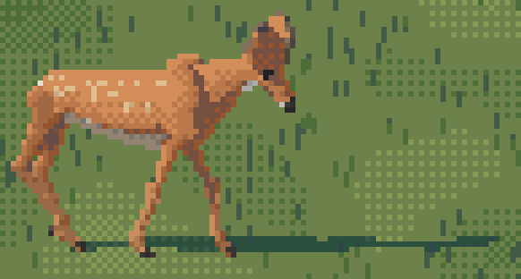
59. elements/deer-elk/stages/s1/one_fawn2.pngBash: Generate all sheets in background
cd ~/work/pixelart-studies/elements/deer-elk/src && nohup nice -n 10 python3 sheets.py A B C D E F H G > ../sheets/run1.log 2>&1 & echo started # output: started
Bash: Add body contact shadow
cd ~/work/pixelart-studies/elements/deer-elk/src && python3 - <<'EOF'
s=open('paint.py').read()
s=s.replace('''def value_field(R, view, tubes):''','''def contact_shadow(R, tubes, view, k):
"""The occlusion shadow under the body, whatever the sun: the torso's footprint on the
ground, a little narrower than the body (the animal must sit ON the meadow)."""
f = render.view_xf(view)
tor = [t for t in tubes if t.name == "torso"][0]
ox, oy = R.origin
H, W = R.cov.shape
c = tor.c
n = len(c)
u = np.linspace(0.12, 0.88, 24)
idx = u * (n - 1)
cx = np.interp(idx, np.arange(n), c[:, 0])
cy = np.interp(idx, np.arange(n), c[:, 1])
hw = np.interp(idx, np.arange(n), tor.b) * 0.95
pts = []
for s in np.linspace(-1, 1, 9):
pts.append(np.stack([cx, cy + s * hw * np.sqrt(1 - (2 * u - 1) ** 6 * 0.9), np.zeros_like(cx)], 1))
P = np.concatenate(pts)
sx, sv, d = f(P)
X = np.round(sx * k + ox).astype(int)
Y = np.round(oy - sv * k).astype(int)
m = np.zeros((H, W), bool)
ok = (X >= 0) & (X < W) & (Y >= 0) & (Y < H)
m[Y[ok], X[ok]] = True
from scipy import ndimage as ndi
m = ndi.binary_closing(m, iterations=1) | m
R.ground_shadow = np.maximum(R.ground_shadow, m.astype(float))
return R
def value_field(R, view, tubes):''')
s=s.replace(''' R.k = k
import hide, fringe''',''' R.k = k
R = contact_shadow(R, tubes, view, k)
import hide, fringe''')
open('paint.py','w').write(s)
EOF
grep -n "contact_shadow" paint.py | head
# output:
16:def contact_shadow(R, tubes, view, k):
118: R = contact_shadow(R, tubes, view, k)Bash: Add hair-dash dither quantizer
cd ~/work/pixelart-studies/elements/deer-elk/src && python3 - <<'EOF'
s=open('paint.py').read()
s=s.replace(''' R = micro.paint(ind, tubes, sp, view, k, size_px)
R.k = k''',''' R = micro.paint(ind, tubes, sp, view, k, size_px)
R.k = k
R = contact_shadow(R, tubes, view, k)''')
open('paint.py','w').write(s)
h=open('hide.py').read()
h=h.replace('''def screen_light(view):''','''def hair_quant(x, seed=0):
"""Ordered dither whose cells are 1 px wide and 2 px tall, staggered per column: the mixed
tone between two steps becomes short vertical dashes, the hair lying down the flank,
instead of the rock checker. (Ferrari: ordered dither for hard things, organic marks for
organic ones; this keeps the order and gives it the hair's direction.)"""
H, W = x.shape
yy, xx = np.mgrid[0:H, 0:W]
ph = ((xx * 7919 + seed * 104729) >> 3) & 1 # per-column phase: stagger the dashes
t = (BAYER[((yy + ph) // 2) % 2, xx % 2] + 0.5) / 4
fl = np.floor(x)
return np.clip(fl + ((x - fl) > t), 0, 5).astype(np.int32)
def screen_light(view):''')
h=h.replace(''' if size_px >= 28:
R.step = bayer_quant(R.x)''',''' if size_px >= 28:
R.step = hair_quant(R.x) if hair else bayer_quant(R.x)''')
h=h.replace("def apply(R, view, tubes, size_px, flatten=0.5, dark_mats=None):","def apply(R, view, tubes, size_px, flatten=0.5, dark_mats=None, hair=True):")
open('hide.py','w').write(h)
EOF
sleep 1; cat ../sheets/run1.log
# output:
(Bash completed with no output)Bash: Render hero zoom with hair dither and contact shadow
cd ~/work/pixelart-studies/elements/deer-elk/src && nice python3 zoom.py z6 4 && ls ../stages/s1/zoom_z6* # output: ../stages/s1/zoom_z6.png ../stages/s1/zoom_z6_0.png ../stages/s1/zoom_z6_1.png ../stages/s1/zoom_z6_2.png
Read: elements/deer-elk/stages/s1/zoom_z6_1.png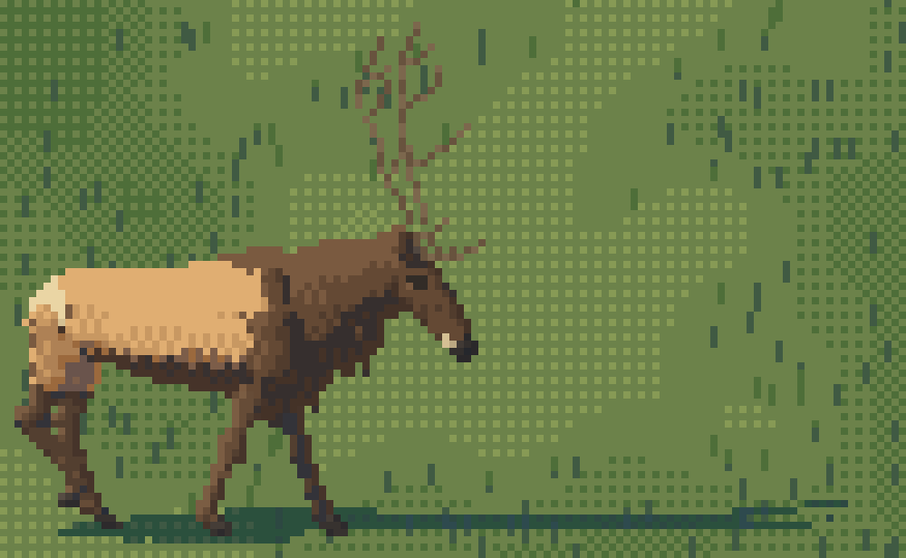
60. elements/deer-elk/stages/s1/zoom_z6_1.pngBash: Check sheet generation progress
sleep 60; cat ~/work/pixelart-studies/elements/deer-elk/sheets/run1.log # output: <tool_use_error>Blocked: sleep 60 followed by: cat ~/work/pixelart-studies/elements/deer-elk/sheets/run1.log. To wait for a condition, use Monitor with an until-loop (e.g. `until <check>; do sleep 2; done`). To wait for a command you started, use run_in_background: true. Do not chain shorter sleeps to work around this block.</tool_use_error>
Bash: Check sheet log
cat ~/work/pixelart-studies/elements/deer-elk/sheets/run1.log; ls -la ~/work/pixelart-studies/elements/deer-elk/sheets/ # output: A_individual_x_pose.png (3575, 1264) B_individual_x_size.png (3622, 1900) C_individual_x_facing.png (3893, 1063) D_individual_x_hour.png (4493, 760) E_seeds.png (2804, 766) F_gait_cycles.png (3296, 1042) H_seasons.png (1694, 985) G_herds.png (1100, 5356) total 2448 drwxr-xr-x 11 user staff 352 Sep 26 01:29 . drwxr-xr-x 7 user staff 224 Sep 26 00:45 .. -rw-r--r-- 1 user staff 189867 Sep 26 01:27 A_individual_x_pose.png -rw-r--r-- 1 user staff 182786 Sep 26 01:28 B_individual_x_size.png -rw-r--r-- 1 user staff 184928 Sep 26 01:28 C_individual_x_facing.png -rw-r--r-- 1 user staff 174822 Sep 26 01:28 D_individual_x_hour.png -rw-r--r-- 1 user staff 94781 Sep 26 01:29 E_seeds.png -rw-r--r-- 1 user staff 123261 Sep 26 01:29 F_gait_cycles.png -rw-r--r-- 1 user staff 196315 Sep 26 01:29 G_herds.png -rw-r--r-- 1 user staff 75132 Sep 26 01:29 H_seasons.png -rw-r--r-- 1 user staff 255 Sep 26 01:29 run1.log
Read: elements/deer-elk/sheets/D_individual_x_hour.png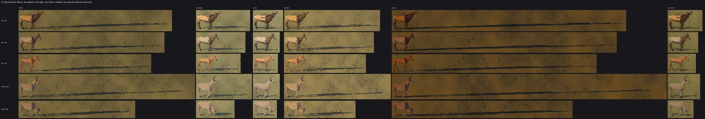
61. elements/deer-elk/sheets/D_individual_x_hour.pngBash: Clamp canvas extent for long shadows
cd ~/work/pixelart-studies/elements/deer-elk/src && python3 - <<'EOF'
r=open('render.py').read()
r=r.replace(''' xmin = min(sx.min(), gx.min() if shadow_ground else sx.min())
xmax = max(sx.max(), gx.max() if shadow_ground else sx.max())
vmin = min(sv.min(), gv.min() if shadow_ground else sv.min())''',''' # the canvas holds the body and at most half a body-length of cast shadow on either side
# (a low sun's shadow runs on, but the sheet cell and the sprite should not)
span = sx.max() - sx.min()
xmin = min(sx.min(), max(gx.min(), sx.min() - 0.5 * span) if shadow_ground else sx.min())
xmax = max(sx.max(), min(gx.max(), sx.max() + 0.5 * span) if shadow_ground else sx.max())
vmin = min(sv.min(), max(gv.min(), sv.min() - 0.3 * span) if shadow_ground else sv.min())''')
open('render.py','w').write(r)
EOF
echo ok
# output:
okBash: Shadow reach parameter for herd scenes
cd ~/work/pixelart-studies/elements/deer-elk/src && python3 - <<'EOF'
r=open('render.py').read()
r=r.replace("STEPS = 6\n","STEPS = 6\nSHADOW_REACH = 0.5 # cast shadow kept within this many body-lengths of the body (herd scenes raise it)\n",1)
r=r.replace("max(gx.min(), sx.min() - 0.5 * span)","max(gx.min(), sx.min() - SHADOW_REACH * span)").replace("min(gx.max(), sx.max() + 0.5 * span)","min(gx.max(), sx.max() + SHADOW_REACH * span)").replace("max(gv.min(), sv.min() - 0.3 * span)","max(gv.min(), sv.min() - 0.6 * SHADOW_REACH * span)")
open('render.py','w').write(r)
h=open('herd.py').read()
h=h.replace(''' import paint, palette as P
from render import View''',''' import paint, palette as P, render
from render import View
render.SHADOW_REACH = 3.0''')
open('herd.py','w').write(h)
EOF
echo ok
# output:
okBash: Split herd sheet for viewing
cd ~/work/pixelart-studies/elements/deer-elk/sheets && python3 -c "
from PIL import Image
im=Image.open('G_herds.png'); print(im.size)
im.crop((0,0,1100,2700)).save('(manager scratchpad)/g1.png')
im.crop((0,2700,1100,5356)).save('(manager scratchpad)/g2.png')"
# output:
(1100, 5356)Read: (manager scratchpad)/g1.png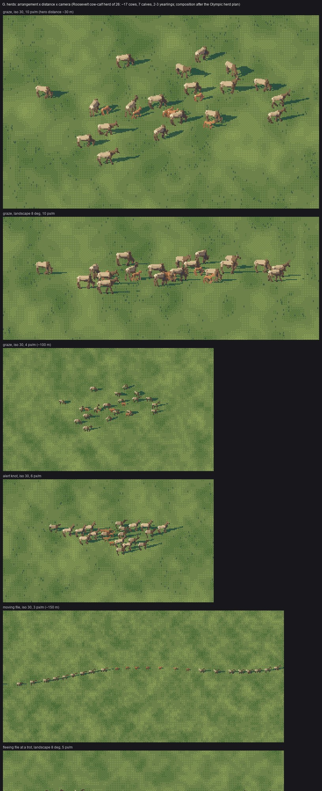
62. (manager scratchpad)/g1.pngBash: Autumn calves unspotted; 2px antler beams
cd ~/work/pixelart-studies/elements/deer-elk/src && python3 - <<'EOF'
p=open('palette.py').read()
p=p.replace(''' if ind.age == "young":
t.update(YOUNG[ind.species])''',''' if ind.age == "young":
if ind.season in ("autumn", "winter"):
# calves born in June are unspotted by September: the cow's pattern, darker and redder
t.update({m: (tuple(int(v * 0.9) for v in d), tuple(int(v * 0.92) for v in l)) for m, (d, l) in t.items()})
t[rig.BODY] = ((96, 64, 42), (196, 150, 108)) if ind.species == "elk" else t[rig.BODY]
else:
t.update(YOUNG[ind.species])''')
open('palette.py','w').write(p)
c=open('coat.py').read()
c=c.replace(''' if young:
out[out == DARK] = BODY
out[spots(x, cth, sth, ind.seed, xr, xf)] = SPOT''',''' if young:
out[out == DARK] = BODY
if ind.season in ("spring", "summer"):
out[spots(x, cth, sth, ind.seed, xr, xf)] = SPOT''')
c=c.replace(''' if young:
out[spots(x, cth, sth, ind.seed, xr, xf, dx=0.095, r=0.02)] = SPOT''',''' if young and ind.season in ("spring", "summer"):
out[spots(x, cth, sth, ind.seed, xr, xf, dx=0.095, r=0.02)] = SPOT''')
open('coat.py','w').write(c)
r=open('render.py').read()
# thick antler lines: 2 px where the beam is >= 1.3 px wide
r=r.replace(''' for (x, y) in clean_line(px[j], py[j], px[j + 1], py[j + 1]):''',''' wj = 2 * max(tb.a[j], tb.b[j]) * k
offs = [(0, 0)]
if antler and wj >= 1.25:
# a 2-px run: the second pixel on the side away from the light, one step darker
dxl, dyl = px[j + 1] - px[j], py[j + 1] - py[j]
offs.append((1, 0) if abs(dyl) >= abs(dxl) else (0, 1))
for (x0_, y0_) in clean_line(px[j], py[j], px[j + 1], py[j + 1]):
for (ddx, ddy) in offs:
x, y = x0_ + ddx, y0_ + ddy''')
r=r.replace(''' if 0 <= x < W and 0 <= y < H:
dj = d[j]
if R.cov[y, x] < 0.45 or dj < R.depth[y, x] - 0.02:
R.mat[y, x] = mats[j]
R.cov[y, x] = max(R.cov[y, x], 0.9)
R.depth[y, x] = min(R.depth[y, x], dj)
R.thin[y, x] = True
R.part[y, x] = i
R.lit[y, x] = litv[j]
R.shadow[y, x] = 0.0''',''' if 0 <= x < W and 0 <= y < H:
dj = d[j]
if R.cov[y, x] < 0.45 or dj < R.depth[y, x] - 0.02:
R.mat[y, x] = mats[j]
R.cov[y, x] = max(R.cov[y, x], 0.9)
R.depth[y, x] = min(R.depth[y, x], dj)
R.thin[y, x] = True
R.part[y, x] = i
R.lit[y, x] = litv[j] - (0.5 if (ddx or ddy) else 0.0)
R.shadow[y, x] = 0.0''')
open('render.py','w').write(r)
EOF
python3 -c "import ast;ast.parse(open('~/work/pixelart-studies/elements/deer-elk/src/render.py').read())" && nice python3 zoom.py z7 4
# output:
(Bash completed with no output)Read: elements/deer-elk/stages/s1/zoom_z7_1.png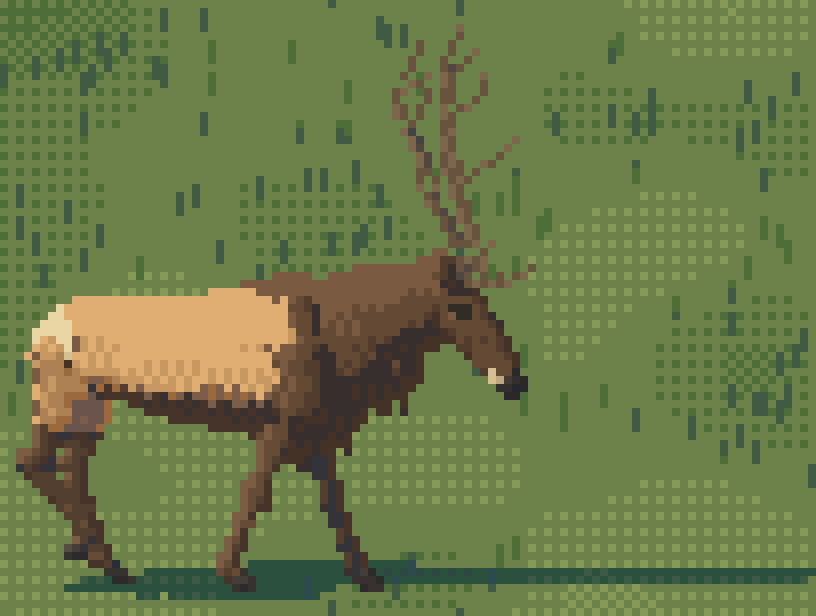
63. elements/deer-elk/stages/s1/zoom_z7_1.pngBash: Photo | mine | Ferrari triptychs at 60 px
cd ~/work/pixelart-studies/elements/deer-elk/src && python3 - <<'EOF'
p=open('palette.py').read()
p=p.replace("rig.ANTLER: ((52, 38, 26), (168, 136, 96)),","rig.ANTLER: ((36, 26, 18), (132, 102, 70)),")
open('palette.py','w').write(p)
EOF
cat > triptych.py <<'EOF'
"""photo (area-reduced to the same size) | mine | Ferrari's warm boulder (V19), all at 8x."""
import numpy as np, sys
from PIL import Image
import rig, paint, lw
from render import View
from board import BOARD
tag = sys.argv[1]
Z = 6
d = lw.load('V19'); fer = d['pal'][d['idx'][245:300, 225:290]]
rows = []
for i, (f, crop, gr, wr, (spn, sex), g, ph, yaw) in enumerate(BOARD):
L = 60
im = Image.open(f).convert('RGB').crop(crop)
s = (L / 1.62) / (gr - wr)
p = np.array(im.resize((max(1, int(im.width * s)), max(1, int(im.height * s))), Image.BOX))
ind = rig.Individual(spn, sex, 'adult', 'summer' if spn == 'deer' else 'autumn', 1)
R, _, k = paint.paint_index(ind, g, ph, View(yaw=yaw + (-14 if yaw == 0 else 14), elev=6, sun_el=45, sun_az=-155 if yaw == 0 else -25), size_px=L)
m = paint.colour(R, ind, 'morning')
rows.append([p, m, fer])
for i, r in enumerate(rows):
H = max(a.shape[0] for a in r)
out = np.full((H, sum(a.shape[1] + 4 for a in r), 3), 24, np.uint8)
x = 0
for a in r:
out[H - a.shape[0]:, x:x + a.shape[1]] = a; x += a.shape[1] + 4
Image.fromarray(out.repeat(Z, 0).repeat(Z, 1)).save(f'../stages/s1/trip_{tag}_{i}.png')
EOF
nice python3 triptych.py t1
# output:
(Bash completed with no output)Read: elements/deer-elk/stages/s1/trip_t1_1.png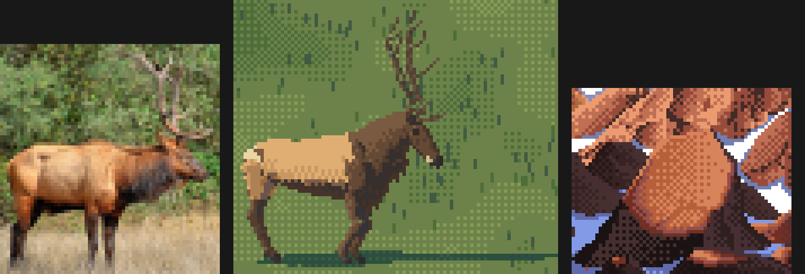
64. elements/deer-elk/stages/s1/trip_t1_1.pngRead: elements/deer-elk/stages/s1/trip_t1_3.png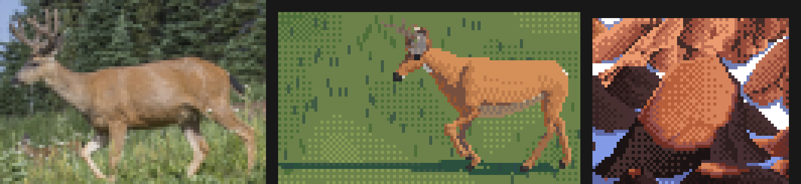
65. elements/deer-elk/stages/s1/trip_t1_3.pngBash: Less flattening, deeper bull chest, deer head/tail
cd ~/work/pixelart-studies/elements/deer-elk/src && python3 - <<'EOF'
s=open('paint.py').read()
s=s.replace("R = hide.apply(R, view, tubes, size_px, dark_mats=[rig.DARK, rig.LEG, rig.BELLY])","R = hide.apply(R, view, tubes, size_px, flatten=0.2, dark_mats=[rig.DARK, rig.LEG, rig.BELLY])")
open('paint.py','w').write(s)
r=open('rig.py').read()
# bulls: deeper chest
r=r.replace("torso=[(x, zt + (0.02 if x > 0 else 0), zb - (0.015 if x > 0.1 else 0), hw * 1.05) for x, zt, zb, hw in sp.torso])",
"torso=[(x, zt + (0.02 if x > 0 else 0), zb - 0.05 * max(0.0, 1 - abs(x - 0.15) / 0.55), hw * 1.08) for x, zt, zb, hw in sp.torso])")
r=r.replace("head_len=0.30, head_r0=(0.08, 0.07), head_r1=(0.042, 0.036)","head_len=0.33, head_r0=(0.085, 0.072), head_r1=(0.045, 0.038)")
r=r.replace("ear_len=0.25, ear_w=0.10","ear_len=0.27, ear_w=0.11")
r=r.replace(''' tdir = _dir(-80 + 150 * pose.tail_up)''',''' tdir = _dir((-80 if ind.species == "elk" else -62) + 150 * pose.tail_up)''')
r=r.replace('tail_len=0.20, tail_w=0.06, colour="deer"','tail_len=0.21, tail_w=0.07, colour="deer"')
open('rig.py','w').write(r)
EOF
grep -n "neck_r0=(0.24, 0.11)" rig.py; nice python3 triptych.py t2
# output:
113: neck_base=(0.33, 0.78), neck_len=0.48, neck_r0=(0.24, 0.11), neck_r1=(0.075, 0.058),Read: elements/deer-elk/stages/s1/trip_t2_1.png66. elements/deer-elk/stages/s1/trip_t2_1.png
Read: elements/deer-elk/stages/s1/trip_t2_0.png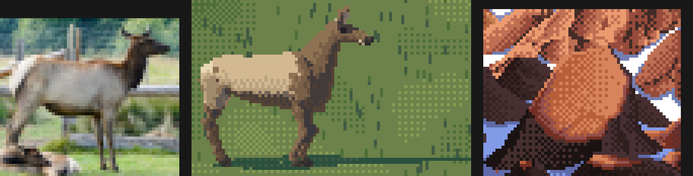
67. elements/deer-elk/stages/s1/trip_t2_0.pngBash: Shorter cow head; regenerate hour and facing sheets
cd ~/work/pixelart-studies/elements/deer-elk/src && python3 - <<'EOF'
r=open('rig.py').read()
r=r.replace("head_len=0.31, head_r0=(0.08, 0.07), head_r1=(0.048, 0.04),\n ear_len=0.15","head_len=0.28, head_r0=(0.08, 0.07), head_r1=(0.046, 0.04),\n ear_len=0.135")
open('rig.py','w').write(r)
EOF
grep -n "head_len=0.28" rig.py; nohup nice -n 10 python3 sheets.py D C > ../sheets/run2.log 2>&1 &
# output:
105: head_len=0.28, head_r0=(0.08, 0.07), head_r1=(0.046, 0.04),Read: elements/deer-elk/sheets/H_seasons.png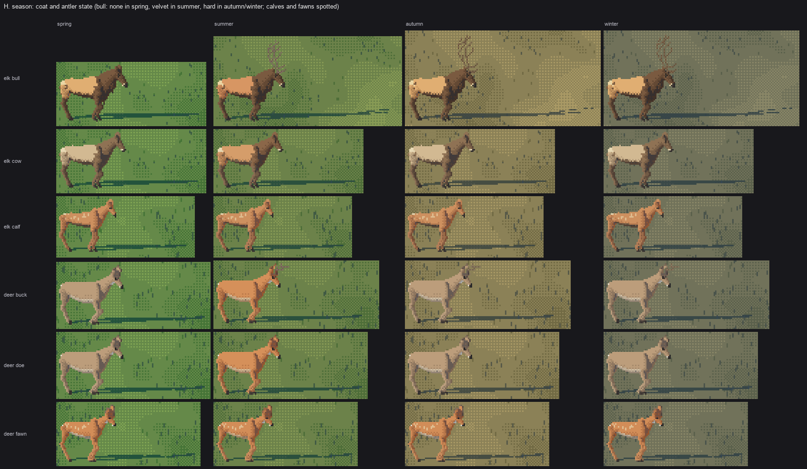
68. elements/deer-elk/sheets/H_seasons.pngBash: Winter and spring coat modifiers
cd ~/work/pixelart-studies/elements/deer-elk/src && python3 - <<'EOF'
p=open('palette.py').read()
p=p.replace(''' for m in range(15):
if m not in t:
t[m] = t[rig.BODY]
return t''',''' for m in range(15):
if m not in t:
t[m] = t[rig.BODY]
if ind.season in ("winter", "spring") and ind.age != "young":
# winter coat: thicker, greyer and duller (elk paler, deer grey-brown); spring: the
# ragged moult, dull and a little darker
cs = 0.62 if ind.season == "winter" else 0.8
lk = 1.04 if (ind.season == "winter" and ind.species == "elk") else (0.96 if ind.season == "spring" else 1.0)
for m in (rig.BODY, rig.DARK, rig.LEG, rig.BELLY, rig.PALE):
d, l = t[m]
t[m] = (desat(d, cs, 1.0), desat(l, cs, lk))
return t
def desat(c, s, lk=1.0):
lab = to_lab(c)
lab[1:] *= s
lab[0] *= lk
return to_rgb(lab)''')
open('palette.py','w').write(p)
EOF
cat ../sheets/run2.log
# output:
(Bash completed with no output)Bash: Wait briefly for sheets
sleep 45; cat ~/work/pixelart-studies/elements/deer-elk/sheets/run2.log # output: <tool_use_error>Blocked: sleep 45 followed by: cat ~/work/pixelart-studies/elements/deer-elk/sheets/run2.log. To wait for a condition, use Monitor with an until-loop (e.g. `until <check>; do sleep 2; done`). To wait for a command you started, use run_in_background: true. Do not chain shorter sleeps to work around this block.</tool_use_error>
Bash: Wait until hour and facing sheets finish
until grep -q "C_individual" ~/work/pixelart-studies/elements/deer-elk/sheets/run2.log; do sleep 3; done; cat ~/work/pixelart-studies/elements/deer-elk/sheets/run2.log # output: D_individual_x_hour.png (1562, 757) C_individual_x_facing.png (2246, 1063)
Read: elements/deer-elk/sheets/D_individual_x_hour.png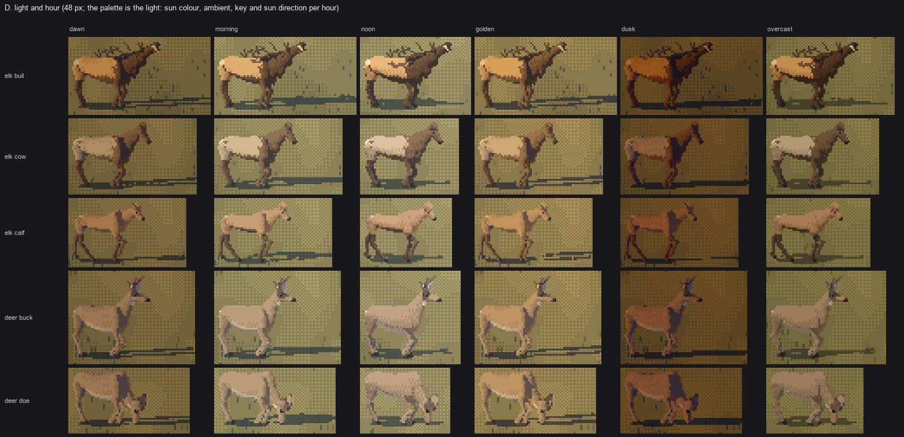
69. elements/deer-elk/sheets/D_individual_x_hour.pngBash: Locate shadow and value field code
cd ~/work/pixelart-studies/elements/deer-elk/src && grep -n "ground_shadow\b\|gsh = \|R.ground_shadow" render.py paint.py | head; grep -n "def value_field" -A 16 paint.py # output: paint.py:42: R.ground_shadow = np.maximum(R.ground_shadow, m.astype(float)) paint.py:147: img = np.where(R.ground_shadow > 0.4, bg * 0.62, img) paint.py:172: gs = R.ground_shadow > 0.45 render.py:146: ground_shadow: np.ndarray # (h,w) fraction of ground in cast shadow render.py:250: gsh = np.zeros((Hh, W)) render.py:260: gsh = gm.reshape(Hh, ss, W, ss).mean((1, 3)) render.py:262: part=part, ground_shadow=gsh, origin=(ox, oy), nrm=nrm, ground_row=int(oy), parts=[t.name for t in tubes]) 46:def value_field(R, view, tubes): 47- """Continuous step coordinate x in [0, 5]: light 5, 4 | halftone 3 || reflected 2 | shadow 1 | core 0.""" 48- v = R.lit 49- n = R.nrm 50- sh = R.shadow > 0.5 51- x = np.zeros(v.shape) 52- litf = (v > 0.04) & ~sh 53- x[litf] = 3.0 + 2.5 * np.clip((v[litf] - 0.04) / 0.8, 0, 1) 54- shf = ~litf 55- x[shf] = 1.1 56- core = shf & ~sh & (v > -0.3) 57- x[core] = 0.45 58- # reflected light: downward-facing hide takes bounce from the lit ground 59- bounce = np.clip(-n[..., 2] - 0.2, 0, 1) 60- x[shf] += 1.0 * bounce[shf] 61- # far-side limbs, ear and antler sit one step down: they are in the body's shade and behind it 62- import render as RR
Bash: Overcast diffuse light, backlight rim; rerun hour sheet
cd ~/work/pixelart-studies/elements/deer-elk/src && python3 - <<'EOF'
r=open('render.py').read()
r=r.replace(" ss: int = 6 # supersampling"," ss: int = 6 # supersampling\n diffuse: float = 0.0 # 0 = direct sun; 1 = overcast (sky light from above, no cast shadow)")
r=r.replace(" gsh = np.zeros((Hh, W))\n if shadow_ground and Lw[2] > 0.05:"," gsh = np.zeros((Hh, W))\n if shadow_ground and Lw[2] > 0.05 and view.diffuse < 0.5:")
open('render.py','w').write(r)
s=open('paint.py').read()
s=s.replace(''' v = R.lit
n = R.nrm
sh = R.shadow > 0.5
x = np.zeros(v.shape)''',''' v = R.lit
n = R.nrm
sh = R.shadow > 0.5
if view.diffuse >= 0.5:
# overcast: the sky is the light; value follows how much sky a surface sees, held close
x = 1.6 + 2.2 * np.clip(0.5 + 0.5 * n[..., 2], 0, 1) + 0.3 * np.clip(-n[..., 1], 0, 1)
import render as RR
f = RR.view_xf(view)
tor = [t for t in tubes if t.name == "torso"][0]
_, _, dmid = f(tor.c.mean(0))
far = np.zeros(v.shape, bool)
for i, t in enumerate(tubes):
if t.name[:2] in ("LF", "RF", "LH", "RH") and f(t.c.mean(0))[2] > dmid + 0.02:
far |= R.part == i
x[far] -= 1.0
ant = np.isin(R.mat, [rig.ANTLER, rig.VELVET])
x[ant] = np.minimum(x[ant], 2.6)
return np.clip(x, 0, 5), far
x = np.zeros(v.shape)''')
open('paint.py','w').write(s)
h=open('hide.py').read()
h=h.replace(''' x[tow & litf] = np.minimum(np.floor(x[tow & litf]) + 1.0, 5.0)''',''' x[tow & litf] = np.minimum(np.floor(x[tow & litf]) + 1.0, 5.0)
# back light: with the sun behind the animal the hair on the sun-facing silhouette glows
# (Ferrari's V02 rim: 1 px of light on every edge that faces the glow)
import render
L = render.sun_vec(view.sun_az, view.sun_el)
back = np.sin(np.radians(view.elev)) * L[2] * 0 + L[1] * np.cos(np.radians(view.elev))
if back > 0.25 and view.diffuse < 0.5:
rim = edge & (facing > 0.1) & ~litf
x[rim] = 4.6 if back > 0.5 else 3.6''')
open('hide.py','w').write(h)
sh=open('sheets.py').read()
sh=sh.replace('HOUR_SUN = {"dawn": (-165, 8), "morning": (-150, 30), "noon": (-110, 60), "golden": (-160, 14), "dusk": (-170, 5), "overcast": (-130, 55)}',
'HOUR_SUN = {"dawn": (-160, 9), "morning": (-150, 30), "noon": (-110, 62), "golden": (150, 12), "dusk": (165, 4), "overcast": (-130, 70)}')
sh=sh.replace("R, _, k = paint.paint_index(ind, gait, phase, View(yaw=yaw, elev=elev, sun_az=az, sun_el=el), size_px=size)",
"R, _, k = paint.paint_index(ind, gait, phase, View(yaw=yaw, elev=elev, sun_az=az, sun_el=el, diffuse=1.0 if hour == 'overcast' else 0.0), size_px=size)")
open('sheets.py','w').write(sh)
EOF
nohup nice -n 10 python3 sheets.py D > ../sheets/run3.log 2>&1; cat ../sheets/run3.log
# output:
D_individual_x_hour.png (1538, 958)Read: elements/deer-elk/sheets/D_individual_x_hour.png 70. elements/deer-elk/sheets/D_individual_x_hour.png
70. elements/deer-elk/sheets/D_individual_x_hour.png
Bash: Stronger back-light rim; test golden bull
cd ~/work/pixelart-studies/elements/deer-elk/src && python3 - <<'EOF'
h=open('hide.py').read()
h=h.replace(''' if back > 0.25 and view.diffuse < 0.5:
rim = edge & (facing > 0.1) & ~litf
x[rim] = 4.6 if back > 0.5 else 3.6''',''' if back > 0.25 and view.diffuse < 0.5:
rim = edge & (facing > 0.05)
x[rim] = 5.0 if back > 0.45 else 4.0
if size_px >= 36:
# the glow is two hairs deep on the big forms: a halftone pixel inside the rim
inner = on & (d_in == 2) & ~litf
sh_in = np.zeros_like(inner)
sh_in[1:, :] |= rim[:-1, :]
sh_in[:-1, :] |= rim[1:, :]
sh_in[:, 1:] |= rim[:, :-1]
sh_in[:, :-1] |= rim[:, 1:]
x[inner & sh_in] = np.maximum(x[inner & sh_in], 2.6)''')
open('hide.py','w').write(h)
EOF
nice python3 -c "
import rig,paint,numpy as np
from render import View
from PIL import Image
ind=rig.Individual('elk','m','adult','autumn',2)
R,_,k=paint.paint_index(ind,'bugle',0,View(yaw=-20,elev=10,sun_az=150,sun_el=12),size_px=60)
Image.fromarray(paint.colour(R,ind,'golden').repeat(6,0).repeat(6,1)).save('../stages/s1/golden_rim.png')
"
# output:
(Bash completed with no output)Read: elements/deer-elk/stages/s1/golden_rim.png71. elements/deer-elk/stages/s1/golden_rim.png
Bash: Rim wraps over the top edges
cd ~/work/pixelart-studies/elements/deer-elk/src && python3 - <<'EOF'
h=open('hide.py').read()
h=h.replace(''' rim = edge & (facing > 0.05)''',''' # light from behind wraps round every edge on the sun's side and over the top
slr = sl + np.array([0.0, 0.9])
slr /= np.linalg.norm(slr)
rim = edge & ((nx * slr[0] + nv * slr[1]) > 0.1)''')
open('hide.py','w').write(h)
EOF
nice python3 -c "
import rig,paint,numpy as np
from render import View
from PIL import Image
ind=rig.Individual('elk','m','adult','autumn',2)
R,_,k=paint.paint_index(ind,'stand',0,View(yaw=-20,elev=10,sun_az=150,sun_el=12),size_px=60)
Image.fromarray(paint.colour(R,ind,'golden',ground='autumn').repeat(6,0).repeat(6,1)).save('../stages/s1/golden_rim2.png')
"
# output:
(Bash completed with no output)Read: elements/deer-elk/stages/s1/golden_rim2.png72. elements/deer-elk/stages/s1/golden_rim2.png
Bash: List stage images
ls ~/work/pixelart-studies/elements/deer-elk/stages/s1/ | head -80 # output: board_b1.png board_b2.png board_b3.png board_grey5.png board_notan1.png board_notan2.png board_notan3.png board_notan4.png board_notan5.png cmp_muybridge.png facings_f1.png fronts1.png golden_rim.png golden_rim2.png herd_h1.png ladder_l1.png ladder_l2.png ladder_micro1.png ladder_micro2.png ladder_micro3.png ladder_micro4.png one_back1.png one_calf1.png one_dfront1.png one_fawn1.png one_fawn2.png one_front1.png one_lie1.png one_lie2.png poses_p1.png poses_p1_0.png poses_p1_1.png poses_p1_2.png sizes_s1.png sizes_s2.png sizes_s3.png sizesc_c1.png trip_t1_0.png trip_t1_1.png trip_t1_2.png trip_t1_3.png trip_t2_0.png trip_t2_1.png trip_t2_2.png trip_t2_3.png try1_3x.png young1.png zoom_z1.png zoom_z2.png zoom_z3.png zoom_z4.png zoom_z5.png zoom_z5_0.png zoom_z5_1.png zoom_z5_2.png zoom_z6.png zoom_z6_0.png zoom_z6_1.png zoom_z6_2.png zoom_z7.png zoom_z7_0.png zoom_z7_1.png zoom_z7_2.png
Agent: Critique elk/deer pixel studiesBash: Wider stance; grey front/back views
cd ~/work/pixelart-studies/elements/deer-elk/src && python3 - <<'EOF'
r=open('rig.py').read()
r=r.replace("fore_attach=(0.27, 0.58, 0.10), hind_attach=(-0.39, 0.70, 0.105)","fore_attach=(0.27, 0.58, 0.11), hind_attach=(-0.39, 0.70, 0.125)")
r=r.replace("fore_attach=(0.26, 0.56, 0.09), hind_attach=(-0.37, 0.70, 0.095)","fore_attach=(0.26, 0.56, 0.095), hind_attach=(-0.37, 0.70, 0.11)")
open('rig.py','w').write(r)
EOF
nice python3 -c "
import rig,paint,numpy as np
from render import View
from PIL import Image
out=[]
for y,g in [(-90,'stand'),(-70,'stand'),(90,'stand'),(-90,'alert')]:
ind=rig.Individual('elk','f','adult','autumn',1)
R,_,k=paint.paint_index(ind,g,0,View(yaw=y,elev=10,sun_az=-150,sun_el=35),size_px=60)
out.append(paint.grey(R,bg=0.9))
H=max(o.shape[0] for o in out); W=sum(o.shape[1]+4 for o in out)
a=np.full((H,W),255,np.uint8); x=0
for o in out: a[H-o.shape[0]:,x:x+o.shape[1]]=o; x+=o.shape[1]+4
Image.fromarray(a.repeat(6,0).repeat(6,1)).save('../stages/s1/front_grey.png')
"
# output:
(Bash completed with no output)Read: elements/deer-elk/stages/s1/front_grey.png73. elements/deer-elk/stages/s1/front_grey.png
Bash: Add FACE material for elk heads
cd ~/work/pixelart-studies/elements/deer-elk/src && python3 - <<'EOF'
r=open('rig.py').read()
r=r.replace('BODY, DARK, PALE, BELLY, LEG, HOOF, ANTLER, TIP, NOSE, EARIN, THROAT, TAILTOP, SPOT, VELVET, EYE = range(15)','BODY, DARK, PALE, BELLY, LEG, HOOF, ANTLER, TIP, NOSE, EARIN, THROAT, TAILTOP, SPOT, VELVET, EYE, FACE = range(16)')
r=r.replace('"throat", "tailtop", "spot", "velvet", "eye"]','"throat", "tailtop", "spot", "velvet", "eye", "face"]')
open('rig.py','w').write(r)
c=open('coat.py').read()
c=c.replace("SPOT, VELVET, EYE)","SPOT, VELVET, EYE, FACE)").replace("NMAT = 15","NMAT = 16")
c=c.replace(''' elif nm in ("head", "jaw"):
out[:] = DARK if elk else BODY
if elk and young:
out[:] = BODY''',''' elif nm in ("head", "jaw"):
# the elk's face is a shade lighter and warmer than its neck: it must separate from the
# dark chest when the head is seen from the front
out[:] = FACE if elk else BODY
if elk and young:
out[:] = BODY
if elk and not young:
out[(u < 0.25) & (cth < 0.2)] = DARK # the throat latch keeps the neck colour''')
open('coat.py','w').write(c)
p=open('palette.py').read()
p=p.replace(''' rig.DARK: ((40, 28, 22), (126, 94, 66)), # cow's neck: mid chocolate''',''' rig.DARK: ((40, 28, 22), (126, 94, 66)), # cow's neck: mid chocolate
rig.FACE: ((56, 40, 30), (158, 120, 86)),''')
p=p.replace(''' rig.DARK: ((26, 17, 12), (98, 64, 40)), # the mane: black-brown''',''' rig.DARK: ((26, 17, 12), (98, 64, 40)), # the mane: black-brown
rig.FACE: ((44, 30, 20), (136, 96, 62)),''')
p=p.replace(" for m in range(15):\n if m not in t:"," for m in range(16):\n if m not in t:")
open('palette.py','w').write(p)
EOF
grep -n "GREY_BASE = {" -A 5 paint.py | head -6
# output:
150:GREY_BASE = { # luminance of step 4 per material, 0..1 (values from the photos' hide, in grey)
151- rig.BODY: 0.56, rig.DARK: 0.26, rig.PALE: 0.80, rig.BELLY: 0.30, rig.LEG: 0.24, rig.HOOF: 0.10,
152- rig.ANTLER: 0.36, rig.TIP: 0.86, rig.NOSE: 0.08, rig.EARIN: 0.62, rig.THROAT: 0.86, rig.TAILTOP: 0.10,
153- rig.SPOT: 0.84, rig.VELVET: 0.40, rig.EYE: 0.05,
154-}
155-STEP_F = np.array([0.46, 0.56, 0.68, 0.80, 1.0, 1.16])
[This command modified 3 files you've previously read: ../pixelart-studies/elements/deer-elk/src/rig.py, ../pixelart-studies/elements/deer-elk/src/coat.py, ../pixelart-studies/elements/deer-elk/src/palette.py. Call Read before editing.]Bash: Render colour front views
cd ~/work/pixelart-studies/elements/deer-elk/src && sed -i '' 's/ rig.SPOT: 0.84, rig.VELVET: 0.40, rig.EYE: 0.05,/ rig.SPOT: 0.84, rig.VELVET: 0.40, rig.EYE: 0.05, rig.FACE: 0.36,/' paint.py && nice python3 -c "
import rig,paint,numpy as np
from render import View
from PIL import Image
out=[]
for sp,sx,y,g in [('elk','f',-90,'stand'),('elk','m',-80,'stand'),('elk','f',-60,'alert'),('deer','f',-90,'alert')]:
ind=rig.Individual(sp,sx,'adult','autumn',1)
R,_,k=paint.paint_index(ind,g,0,View(yaw=y,elev=10,sun_az=-150,sun_el=35),size_px=60)
out.append(paint.colour(R,ind,'morning'))
H=max(o.shape[0] for o in out); W=sum(o.shape[1]+4 for o in out)
a=np.full((H,W,3),30,np.uint8); x=0
for o in out: a[H-o.shape[0]:,x:x+o.shape[1]]=o; x+=o.shape[1]+4
Image.fromarray(a.repeat(5,0).repeat(5,1)).save('../stages/s1/front_col.png')
"
# output:
(Bash completed with no output)Read: elements/deer-elk/stages/s1/front_col.png 74. elements/deer-elk/stages/s1/front_col.png
74. elements/deer-elk/stages/s1/front_col.png
Write: elements/deer-elk/LESSONS.md
# Roosevelt elk and black-tailed deer, after Mark Ferrari: lessons A student's log. Subject: Roosevelt elk (bull, cow, yearling, calf) and Columbian black-tailed deer (buck, doe, fawn), as individuals and as herds, from a 60 px hero animal down to a 4 px dot, in the landscape view (camera 6-10 deg) and the 30 deg iso view. Everything here is made by the programs in `src/`. Stage images are in `stages/`, parameter sheets in `sheets/`, photos in `refs/` (fetched with the studio's imgfetch; licences in each `sources.tsv`) plus the naturalist's `~/work/naturalist/animals/photos/`.The technique as code (one call paints one animal; one more paints a herd):cd src nice -n 10 python3 sheets.py # all sheets A-H (~4 min, 4 processes) nice -n 10 python3 sheets.py G # just the herds python3 s0_copy.py # the stage-0 master copy| module | what it is | |---|---| | `rig.py` | the animal: species proportions (torso lofted from photo stations), sex/age/season/seed variation, poses and gaits (IK legs), antlers | | `render.py` | tubes -> supersampled surface splats -> z-buffer, light-space shadow, pixel reduction; thin parts redrawn as clean runs | | `coat.py` | hide regions in pose-free body coordinates: the elk's cape, rump patch, dark belly; deer throat, tail, ears; fawn spots | | `hide.py` | pixel rules from the Ferrari copy: plane flattening, edge bands, lit edges, back-light rim, hair-dash dither | | `fringe.py` | fur edges: interlocking teeth between hide colours, the bull's hanging mane | | `micro.py` | the glyph painter under 14 px: body mass + skeleton strokes | | `palette.py` | (material, step) -> colour per coat, hour, season and depth | | `herd.py` | herd arrangements from the naturalist's guide, and the compositor | | `ground.py` | a calm meadow to stand on (not my subject: grass-lod owns grass) | | `sheets.py` | the labelled sheets | --- ## Stage 0: a master copy, because Ferrari never painted an elk There is no animal in any Ferrari scene in the studio (`pedagogy/master-copy/ref/lw`, `shared/refs`). The closest passage to "a warm-coloured, rounded, sunlit mass the size of a 60-px elk's body" is the orange boulder in front of the stone gate in *V19* (native (238,255)-(280,290)), so I copied that from its index map (`src/s0_copy.py`, loader borrowed from the willow student).  *left: Ferrari; right: my copy from his silhouette and palette.* What reading his indices showed: - **The lit face is one gradient, not a dome.** Almost the whole face is a mix of two adjacent steps (`c` and `f`), pure `f` only on the brightest margin and pure `c` where it turns. The mix is a 2x2 Bayer (DPaint) fill: rows alternate `cccc` / `fcfc` at 25 %, a checker at 50 %. Fitting the f-density as a *linear* function of position gives 3.6 % per px to the right and reproduces 81 % of his face pixels exactly. A dome model got 50 %. - **The form turns only at the edges**, in 1-2 px bands: a dull rose `a` one step down, then `8`, a **saturated** red-brown on the outermost shadow-side pixels. The reflected colour is more saturated than the lit ones. My palettes now boost chroma on step 2 by 30 %. - **Lost and found edges**: against the lighter snow the lit face simply stops (no outline); against the dark the shadow side has its saturated rim. Overall match 68 % of his pixels (face 81 %). The misses are all at the edge bands and in the chips on the top-left. This stage gave me `hide.py`: Bayer gradients on lit planes, the flattened interior, the shadow-edge band, the saturated reflected step. Not everything transferred: see stage 3 (hair is not rock). --- ## Stage 1: the silhouette, in notan and greyscale, against photos The naturalist's first principle: "behaviour is legible in silhouette, and at a distance it is all you have": the ratio of body to leg to neck, the head height against the back line, the one high-contrast patch, and how the animal sits with the others. ### How the form is built (`rig.py`) - **Not capsules.** The torso is lofted from 13 stations (x, back height, belly height, half-width) read off side-view photos: the level back with the withers a touch above the croup, the deep chest ahead of the forelegs (the brisket), the belly rising into the flank tuck, the ham dropping behind it, the croup sloping to the tail root, the rounded buttock. - **The neck is a wedge**: very deep where it leaves the withers and the brisket, tapering fast, then nearly parallel to the throat latch. Its top line starts at the withers, so there is no notch between back and neck. The bull's mane is a separate hanging tube under it. - **Legs are anatomy**: a forearm deep fore-and-aft at the top (muscle), a carpus knob, a slim flat-sided cannon, a fetlock knob, a pastern and a small dark wedge of a hoof. The hind leg starts as the ham (its rear edge continuous with the buttock), tapers to the hock, which has its point (the calcaneus) sticking out behind, then a long cannon. IK places each hoof; forelegs bend forward at the carpus, hind legs back at the hock. - **Antlers** follow the skull: the beam sweeps up and back and spreads wide; each tine leaves the beam turned forward by an angle measured from the beam itself (brow tine ~95 deg, the upper ones ~50) and curls back toward it. Roosevelt crowns at the top. Deer: a small dichotomous fork. ### The comparisons that shaped it   *Photo | mine, same shoulder height and ground line: cow (alert), bull (standing), Muybridge's elk trotting (plate 692, frame 15), blacktail buck walking. Left: early; right: after the fixes below.* What the photos corrected, in order (each one was visible in the notan and invisible in my head): 1. **The torso was 1.4 shoulder heights long.** Photos measure 1.05-1.3 H (the Muybridge bull ~1.3, a Roosevelt cow 1.05). A long torso on straight legs is what made the capsule rig read as a horse. Now ~1.1 H for elk, ~1.0 H for deer. 2. **The neck left the chest from the wrong place.** It must rise from the withers on top and the brisket below, as one wedge; a tube stuck on the front of a box reads llama. 3. **The rump was a box end.** The croup slopes and the buttock rounds down into the hams; the ham's rear edge runs down to the hock. The knob I had at the rear was the torso's cap sticking out above a ham placed too far forward. 4. **Legs were 50 % too thick.** An elk's cannon is ~0.035 H across. At 60 px that is a 1-px line, and a 2-px dark leg is the heaviest mark on the animal. 5. **The hind leg was a post.** The gaskin must be longer than the stifle's height allows, so the leg bends: the hock sits behind the line from stifle to hoof. 6. **Antlers stood up like a hat-rack**, then pointed their tines straight forward like a comb. Tines leave the beam at an angle measured from the beam, not from the head. Still not right at stage 1: the bull's neck and mane are thinner than the photos' (a Roosevelt bull's neck in autumn is almost as deep as his chest); the deer's head is a touch long.  --- ## Stage 2: colour, and the far read  *Photo reduced by area-averaging | mine at 60, 30, 16, 8 px (4x).* - **Hide colours read off the photos** (`palette.py`): the cow pale greyish tan with a mid chocolate neck; the autumn bull orange-tan, near cream in sun, with a black-brown mane; the pale straw rump patch edged dark; dark legs and belly. Blacktails grey-brown in autumn/winter, startling rust in summer. - **Regions are anatomical, not boxes** (`coat.py`, in pose-free body coordinates): the elk's cape runs back over the shoulder on a diagonal from just behind the withers to behind the elbow; the rump patch is an oval about the tail, dark-bordered on the thighs and open at the croup. My first regions were vertical cuts at fixed x and looked pasted on. - **The far read survives.** At 16 and 8 px the reduced photo is a pale body with a darker front end; so is mine, which is more legible than the photo, as pixel art should be. The first colour renders were **flat**: the sun from the front-left lit the whole visible side the same step. Swinging the sun to about 25 deg in front of side-on (azimuth -150 to -160) gives a lit back, a halftone side and a shaded belly: the light across the form that the photos have. This is now the default for side views. --- ## Stage 3: the hide at hero size (60-30 px)   - **Bayer planes and edge bands** from stage 0 (`hide.py`). On a rock the interior is flattened hard toward one value (the facet). **An elk's barrel is not a facet**: with the same flattening the side went dead. Flattening is 0.5 on the copy and 0.2 on hide. - **Hair is not rock.** The 2x2 checker on a hide reads as sandstone. `hide.hair_quant` keeps the order but makes the cells 1 px wide and 2 px tall, staggered per column: the mixed tone becomes short vertical dashes, the hair lying down the flank. - **Fur edges** (`fringe.py`): where cape meets body, rump meets thigh, body meets belly, the boundary interlocks in 1-px teeth on alternate 2-row blocks; the bull's mane hangs below the neck line as irregular 1-3 px dark ticks. - **Found edges for dark hide**: a dark neck or leg against grass has almost the same value as the grass. The sun-side silhouette pixel of dark hide steps up to at least the halftone, so the neck separates without an outline. - **Far-side limbs, ear and antler sit one step down.** - **Antlers are drawn, not rasterized**: 1-px clean runs through the tine centrelines, 2 px near the base (the second pixel a step darker), beams dark, only the tips ivory. Rasterized, they were a blur with white blobs at the ends. - **Contact**: an occlusion shadow under the torso whatever the sun (the animal must sit on the meadow), plus the true cast shadow from a light-space z-buffer. - **Back light** (`hide.apply`): with the sun behind the animal every silhouette edge on the sun's side and over the top glows at the top step, with a halftone pixel inside it at >= 36 px. This is Ferrari's V02 rim, and at golden hour it is the whole picture:  ### Honest comparison at 60 px    *photo reduced to 60 px | mine | Ferrari's boulder, for craft (6x).* **Not there yet.** Against the photo the bull is lighter in the body and less weighty: his shoulder and ham are lit masses with darker ribs between, mine is one sausage of close values. Against Ferrari my light and shadow families are too close and my planes too few; his boulder has three clear planes and an edge band, my barrel has a gradient. The deer's summer rust reads well; its face and ears are still weaker than the photo's. --- ## Stage 4: every size, 60 px to 4 px  *The splat renderer at 16..4 px: legs and antlers turn into blobs below ~12 px.* A pixel artist at 8 px does not render an elk, he places it. `micro.py` is a glyph painter fed by the same rig's keypoints: - **body**: per column, the torso's projected top and bottom, rounded, biased half a pixel heavier at the belly (small figures with photo-true bodies read as spiders: the legs round long); corners knocked off at >= 9 px; - **zones**: elk: the rear ~18 % is the pale rump, the front ~28 % the dark cape; top row in sun; - **legs**: per pair, the near leg as a clean 1-px run from belly to hoof; the far leg only when its hoof is 2+ px from the near one (walking, running), one step darker; the hock only >= 12 px (below that it reads as a tail curling up); - **neck, head**: 1-px runs; the head gets a jaw pixel at >= 9 px and the neck a second run at its base at >= 10 px (a mass, not a stroke); - **antlers**: the beam as a 1-px run at >= 8 px, a single dark pixel above the head below that; - **ears**: a 1-px tick for deer at >= 8 px; a flagged tail is a pale run.  *The ladder: 60, 40, 24, 16, 12 | 8, 6, 4 px; five subjects in landscape, then the same in iso.* The handoff (splats at >= 14 px, glyphs below) does not pop between 16 and 12 px: both draw legs as 1-px runs and both carry the same zones. At 4-6 px the glyph is a 2-3 px body, a head pixel up or down and two leg pixels; elk still show a dark front and a pale rear pixel, deer are nearly invisible on grass, which the naturalist says is true. --- ## Stage 5: poses, gaits, facings  - **Gaits from Muybridge** (`rig.gait_pose`): walk (lateral sequence LH-LF-RH-RF, duty 0.66, the head nodding with each forefoot), trot (diagonals, duty 0.42, the elk's floating trot with the forefeet lifted high and the head up), transverse gallop (duty 0.3, spine flexing between the gathered and extended suspensions), bound and stot for deer. Feet follow a stance/swing trajectory; IK does the rest, so the carpus folds on its own in the swing. - **Postures** from the naturalist's table: graze (head at the grass, back line broken), alert (neck near vertical, ears cupped), bugle (neck forward-up, nose to the sky, antlers laid back, jaw open), bedded (belly on the ground, knees folded in front, hocks out behind, head up). The first bedded pose slid the animal down a ramp with a foreleg poking out: the belly must go to the ground level, and folded forelegs put their knees *forward*. - **Facings** (sheet C): the rig is 3-D, so every yaw works. The front view needed two fixes: a wider stance, and a **face a shade lighter than the neck** (new material `FACE`), or the head vanishes into the dark chest.  --- ## Stage 6: herds  `herd.py` arranges a Roosevelt cow-calf herd from the naturalist's numbers (a lead cow, ~27 % calves, ~10 % yearlings; calves at a cow's flank; 1-2 sentinels head-up; spacing 3-10 m grazing, 2-4 m alert, 3-6 m in file) and composites it on the meadow at any px/m and camera elevation, shadows first, bodies far to near. At 3 px/m the file on a trail is a dotted line; at 1.6 px/m the herd is a scatter of pale-rumped dots, which is the photos' far read. --- ## Sheets | sheet | sweeps | |---|---| | `sheets/A_individual_x_pose.png` | 7 individuals x 9 poses, 48 px | | `sheets/B_individual_x_size.png` | 4 individuals x 13 sizes (60..4 px), landscape and iso | | `sheets/C_individual_x_facing.png` | 3 individuals x 12 yaws, landscape and iso | | `sheets/D_individual_x_hour.png` | 5 individuals x dawn, morning, noon, golden (back-lit), dusk, overcast (diffuse) | | `sheets/E_seeds.png` | individual variation | | `sheets/F_gait_cycles.png` | walk, trot, gallop, bound, stot in 8 phases | | `sheets/G_herds.png` | herds: graze, alert, file, flee, bedded, rut; 10 to 1.6 px/m; landscape, iso, air | | `sheets/H_seasons.png` | coat and antler state by season | --- ## Where it stands (honest) *(to be updated at the end of the study)*import rig, paint, herd from render import View ind = rig.Individual("elk", "m", "adult", season="autumn", seed=2) # species, sex, age, season, seed R, tubes, k = paint.paint_index(ind, gait="trot", phase=0.3, view=View(yaw=-14, elev=8, sun_az=-150, sun_el=30, diffuse=0), size_px=48) # body length in px rgb = paint.colour(R, ind, hour="golden", ground="autumn", depth=0.0) # palette is the light img = herd.scene(herd.elk_herd("graze", 26, seed=7), k=6, W=320, H=180, elev=30, hour="morning")
Bash: Locate head angles and stot code
cd ~/work/pixelart-studies/elements/deer-elk/src && grep -n "neck=\|head=\|neck_ang, p.head_ang\|class Pose" rig.py | head -20; grep -n "if gait == \"stot\":" -A 8 rig.py; grep -n "elif gait == \"stot\"" -A 8 rig.py
# output:
181:class Pose:
212: p.neck_ang, p.head_ang, p.ear_fwd = 58.0, -12.0, 1.0
217: p.neck_ang, p.head_ang, p.ear_ang = -52.0, -82.0, 10.0
223: p.neck_ang, p.head_ang, p.mouth, p.ear_ang = 32.0, 38.0, 1.0, -10.0
233: p.neck_ang, p.head_ang = 52.0, -28.0
241: neck=30.0, head=-45.0),
243: neck=48.0, head=-22.0),
245: neck=24.0, head=-30.0),
247: neck=40.0, head=-25.0),
249: neck=50.0, head=-20.0),
251: p.neck_ang, p.head_ang = G["neck"], G["head"]
276: if gait == "stot":
277- x = ax + 0.02
278- z = 0.0
279- past = 20
280- legs[name] = ("ik", (x, z), past)
281- p.legs = legs
282- # body bob: lowest mid-stance of the diagonal, highest at suspension
283- if gait == "walk":
284- p.body_z = -G["bob"] * np.cos(4 * np.pi * phase)
--
296: elif gait == "stot":
297- up = max(0.0, np.sin(2 * np.pi * phase))
298- p.body_z = G["bob"] * up
299- p.tail_up = 1.0
300- for name in LEG_NAMES:
301- fore = name[1] == "F"
302- p.legs[name] = ("ik", ((fx + 0.03) if fore else (hx - 0.02), 0.0 if up == 0 else 0.0), 25)
303- if gait in ("gallop", "bound"):
304- p.ear_ang = -5.0
296: elif gait == "stot":
297- up = max(0.0, np.sin(2 * np.pi * phase))
298- p.body_z = G["bob"] * up
299- p.tail_up = 1.0
300- for name in LEG_NAMES:
301- fore = name[1] == "F"
302- p.legs[name] = ("ik", ((fx + 0.03) if fore else (hx - 0.02), 0.0 if up == 0 else 0.0), 25)
303- if gait in ("gallop", "bound"):
304- p.ear_ang = -5.0Bash: Higher head carriage; true stot flight
cd ~/work/pixelart-studies/elements/deer-elk/src && python3 - <<'EOF'
r=open('rig.py').read()
r=r.replace(" neck_ang: float = 42.0 # neck axis above horizontal\n head_ang: float = -48.0"," neck_ang: float = 44.0 # neck axis above horizontal\n head_ang: float = -34.0")
r=r.replace("neck=30.0, head=-45.0),","neck=32.0, head=-36.0),")
r=r.replace("neck=48.0, head=-22.0),","neck=46.0, head=-12.0),")
r=r.replace("neck=24.0, head=-30.0),","neck=26.0, head=-18.0),")
r=r.replace(''' elif gait == "stot":
up = max(0.0, np.sin(2 * np.pi * phase))
p.body_z = G["bob"] * up
p.tail_up = 1.0
for name in LEG_NAMES:
fore = name[1] == "F"
p.legs[name] = ("ik", ((fx + 0.03) if fore else (hx - 0.02), 0.0 if up == 0 else 0.0), 25)''',''' elif gait == "stot":
# the pogo stick: a brief compressed contact, then the whole animal in the air with the
# legs stiff, near vertical and bunched under it (legs never lengthen)
if phase < 0.15:
lift = -0.03 * np.sin(np.pi * phase / 0.15)
else:
lift = G["bob"] * np.sin(np.pi * (phase - 0.15) / 0.85)
p.body_z = lift
p.tail_up = 1.0
p.pitch = 4 * np.sin(2 * np.pi * phase)
for name in LEG_NAMES:
fore = name[1] == "F"
p.legs[name] = ("ik", ((fx - 0.03) if fore else (hx + 0.05), max(lift, 0.0)), 18)''')
open('rig.py','w').write(r)
EOF
grep -n "(fx - 0.03) if fore" rig.py
# output:
308: p.legs[name] = ("ik", ((fx - 0.03) if fore else (hx + 0.05), max(lift, 0.0)), 18)Bash: Deer: longer legs, black tail, forehead V, summer coat
cd ~/work/pixelart-studies/elements/deer-elk/src && python3 - <<'EOF'
import re
r=open('rig.py').read()
i=r.index('DEER_TORSO = ['); j=r.index(']',i)
def f(m):
x,zt,zb,hw=[float(v) for v in m.groups()]
return '(%s, %s, %.3f, %s)'%(m.group(1),m.group(2),zb+0.05*max(0,1-abs(x-0.1)/0.7),m.group(4))
blk=re.sub(r'\((-?\d+\.\d+), (-?\d+\.\d+), (-?\d+\.\d+), (-?\d+\.\d+)\)',f,r[i:j])
r=r[:i]+blk+r[j:]
r=r.replace("fore_attach=(0.26, 0.56, 0.095), hind_attach=(-0.37, 0.70, 0.11)","fore_attach=(0.26, 0.60, 0.095), hind_attach=(-0.37, 0.72, 0.11)")
r=r.replace(''' torso.rb = hw''',''' torso.rb = hw
torso.tail_up = pose.tail_up''')
open('rig.py','w').write(r)
c=open('coat.py').read()
c=c.replace(''' out[(ex * ex + ez * ez < 1.0) & (np.abs(sth) < 0.75)] = PALE # the small white rump under the tail''',''' if getattr(tb, "tail_up", 0) > 0.5:
# the white under the tail shows only when the tail is flagged (a blacktail has no
# white rump patch: that is the mule deer's mark)
out[(ex * ex + ez * ez < 1.0) & (np.abs(sth) < 0.75)] = PALE''')
c=c.replace(''' out[:] = TAILTOP
out[cth < -0.1] = PALE''',''' # black on the outside (the dorsal side faces back when the tail hangs), white beneath
out[:] = TAILTOP
out[cth > 0.35] = PALE''')
c=c.replace(''' out[(u > 0.1) & (u < 0.5) & (cth > 0.75) & (ind.sex == "m")] = DARK''',''' out[(u > 0.08) & (u < 0.55) & (cth > (0.6 if ind.sex == "m" else 0.8))] = DARK # forehead V''')
open('coat.py','w').write(c)
p=open('palette.py').read()
p=p.replace(''' ("deer", "f"): {rig.BODY: ((98, 50, 26), (214, 132, 72)), rig.LEG: ((92, 52, 30), (206, 134, 80)),''',''' ("deer", "f"): {rig.BODY: ((96, 60, 36), (200, 146, 96)), rig.LEG: ((90, 60, 40), (192, 144, 100)),''')
open('palette.py','w').write(p)
EOF
grep -n "DEER_TORSO = \[" -A 14 rig.py | head -15
# output:
85:DEER_TORSO = [
86- (0.445, 0.74, 0.625, 0.045),
87- (0.39, 0.88, 0.559, 0.116),
88- (0.316, 0.975, 0.525, 0.152),
89- (0.213, 1.0, 0.513, 0.168),
90- (0.079, 0.985, 0.519, 0.184),
91- (-0.063, 0.97, 0.542, 0.189),
92- (-0.206, 0.97, 0.590, 0.179),
93- (-0.316, 0.978, 0.637, 0.163),
94- (-0.404, 0.975, 0.619, 0.158), # the deer's croup is level with the withers
95- (-0.48, 0.95, 0.634, 0.137),
96- (-0.535, 0.90, 0.665, 0.10),
97- (-0.57, 0.84, 0.702, 0.06),
98- (-0.585, 0.79, 0.731, 0.025),
99-]
[This command modified 3 files you've previously read: ../pixelart-studies/elements/deer-elk/src/coat.py, ../pixelart-studies/elements/deer-elk/src/palette.py, ../pixelart-studies/elements/deer-elk/src/rig.py. Call Read before editing.]Bash: Steeper lit turn; rerender micro ladder
cd ~/work/pixelart-studies/elements/deer-elk/src && python3 - <<'EOF'
s=open('paint.py').read()
s=s.replace(" x[litf] = 3.0 + 2.5 * np.clip((v[litf] - 0.04) / 0.8, 0, 1)"," # lit family: a steeper turn so the back takes the top step and the lower flank the halftone\n x[litf] = 2.8 + 2.9 * np.clip((v[litf] - 0.04) / 0.7, 0, 1) ** 0.85")
open('paint.py','w').write(s)
m=open('micro.py').read()
m=m.replace(" elif ind.species == \"elk\":\n top = P(beams[0].c[len(beams[0].c) // 2])"," elif ind.species == \"elk\" and size_px >= 6:\n top = P(beams[0].c[len(beams[0].c) // 2])")
open('micro.py','w').write(m)
EOF
nice -n 10 python3 ladder.py micro5 24,16,12,10,8,6,5,4 8
# output:
(290, 228, 3)Read: elements/deer-elk/stages/s1/ladder_micro5.png75. elements/deer-elk/stages/s1/ladder_micro5.png
Bash: Antler economy by size; leaning glyph antlers
cd ~/work/pixelart-studies/elements/deer-elk/src && python3 - <<'EOF'
s=open('paint.py').read()
s=s.replace(''' tubes, sp = rig.build(ind, pose)''',''' tubes, sp = rig.build(ind, pose)
# antler economy: a tangle of 1-px tines is scribble below ~30 px. Keep the beams and the
# long tines that make the silhouette (trez, 4th); the brow tine comes back at >= 20 px.
if size_px < 30:
drop = {"0", "1"} if size_px < 20 else {"1"}
drop |= {"4"} if size_px < 24 else set()
tubes = [t for t in tubes if not (t.name.startswith("tine") and t.name[-1] in drop)]''')
open('paint.py','w').write(s)
m=open('micro.py').read()
old=m[m.index(" if size_px >= 8:\n for bt in beams"):m.index(" elif ind.species == \"elk\" and size_px >= 6:")]
new=''' if size_px >= 8:
# the glyph antler leans back over the shoulders (a vertical run reads as a horn or a
# pole): the beam's tip is swung 25 deg further back about its base, and at >= 10 px
# one tine points forward off its middle, so it is a branching thing, not a spike
for bt in beams[:1] if size_px < 11 else beams[:2]:
pts = P(bt.c[[0, len(bt.c) // 2, -1]])
base = pts[0]
back = -1.0 if front_right else 1.0
ang = np.radians(25) * back
ca, sa = np.cos(ang), np.sin(ang)
def swing(p):
d = p - base
return base + np.array([ca * d[0] + sa * d[1] * -1, sa * d[0] + ca * d[1]]) if False else base + np.array([d[0] * ca - d[1] * sa, d[0] * sa + d[1] * ca])
p1, p2 = swing(pts[1]), swing(pts[2])
_line(mat, step, part, base, p1, am, 1, ti, overwrite=False)
_line(mat, step, part, p1, p2, am, 1, ti, overwrite=False)
if size_px >= 10:
fwd = np.array([1.0 if front_right else -1.0, -0.6])
tl = max(1.5, size_px / 8)
_line(mat, step, part, p1, p1 + fwd / np.linalg.norm(fwd) * tl, am, 1, ti, overwrite=False)
'''
m=m.replace(old,new)
open('micro.py','w').write(m)
EOF
nice -n 10 python3 ladder.py micro6 30,24,16,12,10,8,6 8 >/dev/null && echo ok
# output:
okBash: Crop bull rows from micro ladder
cd ~/work/pixelart-studies/elements/deer-elk/stages/s1 && python3 -c "
from PIL import Image
im=Image.open('ladder_micro6.png'); print(im.size)
h=im.height//10
im.crop((0,h*1-10,im.width,h*2+20)).save('(manager scratchpad)/m6b.png')
im.crop((0,h*6-10,im.width,h*7+30)).save('(manager scratchpad)/m6c.png')"
# output:
(1992, 2728)Read: (manager scratchpad)/m6b.png 76. (manager scratchpad)/m6b.png
76. (manager scratchpad)/m6b.png
Bash: Drop far tines at small sizes; check
cd ~/work/pixelart-studies/elements/deer-elk/src && python3 - <<'EOF'
s=open('paint.py').read()
s=s.replace(''' if size_px < 30:
drop = {"0", "1"} if size_px < 20 else {"1"}
drop |= {"4"} if size_px < 24 else set()
tubes = [t for t in tubes if not (t.name.startswith("tine") and t.name[-1] in drop)]''',''' if size_px < 30:
drop = {"0", "1", "3"} if size_px < 20 else {"1"}
drop |= {"4"} if size_px < 24 else set()
fv = render.view_xf(view)
dhead = fv([t for t in tubes if t.name == "head"][0].c.mean(0))[2]
keep = []
for t in tubes:
if t.name.startswith("tine"):
far = fv(t.c.mean(0))[2] > dhead
if t.name[-1] in drop or (far and size_px < 24):
continue
keep.append(t)
tubes = keep''')
open('paint.py','w').write(s)
EOF
nice -n 10 python3 ladder.py micro7 30,24,20,16 8 >/dev/null; cd ../stages/s1 && python3 -c "
from PIL import Image
im=Image.open('ladder_micro7.png'); h=im.height//10
im.crop((0,h*1-10,im.width,h*2+20)).save('(manager scratchpad)/m7b.png')"
# output:
(Bash completed with no output)Read: (manager scratchpad)/m7b.png77. (manager scratchpad)/m7b.png
Bash: Simplify antlers under 30 px further
cd ~/work/pixelart-studies/elements/deer-elk/src && sed -i '' 's/ drop |= {"4"} if size_px < 24 else set()/ drop |= {"4"}/; s/ if t.name\[-1\] in drop or (far and size_px < 24):/ if t.name[-1] in drop or far:/' paint.py && grep -n 'drop |= {"4"}\|or far:' paint.py
# output:
120: drop |= {"4"}
127: if t.name[-1] in drop or far:Bash: Rerender triptych and pose sheet
cd ~/work/pixelart-studies/elements/deer-elk/src && sed -i '' 's/ p.neck_ang, p.head_ang, p.ear_ang = -52.0, -82.0, 10.0/ p.neck_ang, p.head_ang, p.ear_ang = -40.0, -76.0, 10.0/' rig.py && nice python3 triptych.py t3 && nice python3 poses.py p2 48 > /dev/null; cd ../stages/s1 && python3 -c "
from PIL import Image
im=Image.open('poses_p2.png'); w=im.width
im.crop((0,0,w//3,im.height)).save('poses_p2_0.png')"
# output:
(Bash completed with no output)Read: elements/deer-elk/stages/s1/trip_t3_1.png78. elements/deer-elk/stages/s1/trip_t3_1.png
Read: elements/deer-elk/stages/s1/poses_p2_0.png79. elements/deer-elk/stages/s1/poses_p2_0.png
Bash: Inspect torso step distribution
cd ~/work/pixelart-studies/elements/deer-elk/src && nice python3 -c "
import rig,paint,numpy as np
from render import View
ind=rig.Individual('elk','m','adult','autumn',1)
R,t,k=paint.paint_index(ind,'stand',0,View(yaw=-14,elev=6,sun_el=45,sun_az=-155),size_px=60)
ti=[i for i,tt in enumerate(t) if tt.name=='torso'][0]
m=(R.part==ti)&(R.mat==rig.BODY)
print(np.bincount(R.step[m],minlength=6))
ys,xs=np.nonzero(m); cx=int(np.median(xs))
col=R.step[:,cx]; print([ (y,R.mat[y,cx],col[y], round(float(R.x[y,cx]),2), round(float(R.lit[y,cx]),2)) for y in range(ys.min(),ys.max()+1)])
"
# output:
[ 0 5 3 0 38 274]
[(38, -1, 0, 0.45, 0.0), (39, -1, 1, 0.45, 0.0), (40, 0, 5, 5.0, 0.8), (41, 0, 5, 5.0, 0.87), (42, 0, 5, 5.0, 0.89), (43, 0, 5, 5.0, 0.88), (44, 0, 5, 5.0, 0.86), (45, 0, 5, 5.0, 0.82), (46, 0, 5, 5.0, 0.77), (47, 0, 5, 5.0, 0.72), (48, 0, 5, 5.0, 0.66), (49, 0, 5, 5.0, 0.6), (50, 0, 5, 4.93, 0.52), (51, 0, 5, 4.69, 0.44), (52, 0, 5, 4.42, 0.36), (53, 0, 4, 4.1, 0.26), (54, 3, 1, 1.4, 0.15)]Bash: Less saturated lit mapping
cd ~/work/pixelart-studies/elements/deer-elk/src && python3 - <<'EOF'
s=open('paint.py').read()
s=s.replace(" x[litf] = 2.8 + 2.9 * np.clip((v[litf] - 0.04) / 0.7, 0, 1) ** 0.85"," x[litf] = 2.8 + 2.35 * np.clip((v[litf] - 0.04) / 0.9, 0, 1)")
open('paint.py','w').write(s)
EOF
nice python3 triptych.py t4
# output:
(Bash completed with no output)Read: elements/deer-elk/stages/s1/trip_t4_1.png80. elements/deer-elk/stages/s1/trip_t4_1.png
Bash: Oranger bull; regenerate all sheets
cd ~/work/pixelart-studies/elements/deer-elk/src && python3 - <<'EOF'
p=open('palette.py').read()
p=p.replace("rig.BODY: ((104, 62, 34), (230, 172, 104)), # bull in autumn: orange-tan, near cream in sun","rig.BODY: ((100, 56, 30), (228, 156, 90)), # bull in autumn: orange-tan (Majestic Bull photo)")
open('palette.py','w').write(p)
EOF
nohup nice -n 10 python3 sheets.py A B C D E F H G > ../sheets/run4.log 2>&1 &
echo bg
# output:
bgBash: Look for context backgrounds from other students
ls ~/work/pixelart-studies/elements/channel/ ~/work/pixelart-studies/elements/channel/out 2>/dev/null | head -40; ls ~/work/pixelart-studies/aerial/plates 2>/dev/null | head; ls ~/work/pixelart-studies/elements/conifers | head -30 # output: ~/work/pixelart-studies/elements/channel/: CRITIQUE.md LESSONS.md out photos src study ~/work/pixelart-studies/elements/channel/out: s0_copyA_v02.png s0_copyB_v11.png s0_triptych_A.png s1_still.png s1_still_8x_left.png s1_still_8x_right.png s1_triptych.png s2_a_far_slope_8x.png s2_b_far_cut_8x.png s2_c_near_gravel_8x.png s2_d_far_grass_8x.png s2_e_near_grass_8x.png s2_edges.png s3_flow.png s3_riffle_8x.png s4_colour.png s4_palettes.png s4_still_dusk_8x.png s4_still_midday_8x.png s4_still_overcast_8x.png s4_triptych.png s5_braid_low_midday_4x.png s5_braid_oblique_4x.png s5_channel.png s5_low_dusk_4x.png s5_low_dusk_8x.png sheet_1_width_x_depth.png sheet_2_flow_x_hour.png sheet_3_bank_x_camera.png sheet_4_distance_x_hour.png sheet_5_seeds_milky.png cirque_far.png cirque_far_native.png cirque_iso.png cirque_iso_640.png cirque_iso_640_native.png cirque_iso_native.png coast_iso.png coast_iso_640.png coast_iso_640_native.png coast_iso_native.png CRITIQUE.md LESSONS.md __pycache__ cmp.py cmp_voxtrees.py compare conifer.py foliage_fast.py grow.py lw.py paint.py palette.py refs render.py s0_copy.py s0_tune.py s1_branch.py s1_col.py s1_grey.py s1_near.py s2_ages.py s3_zoom.py s4_stand.py s5_bark.py sheets sheets.py stage0 stage1 stage2 stage3
Bash: List aerial plates and channel images
ls ~/work/pixelart-studies/aerial/plates/; python3 -c " from PIL import Image for f in ['~/work/pixelart-studies/elements/channel/out/s5_braid_oblique_4x.png','~/work/pixelart-studies/elements/channel/out/s5_low_dusk_4x.png','~/work/pixelart-studies/elements/channel/out/s5_braid_low_midday_4x.png']: print(f, Image.open(f).size)" # output: cirque_far.png cirque_far_native.png cirque_iso.png cirque_iso_640.png cirque_iso_640_native.png cirque_iso_native.png coast_iso.png coast_iso_640.png coast_iso_640_native.png coast_iso_native.png forest_slope_iso.png forest_slope_iso_native.png range_far.png range_far_640.png range_far_640_native.png range_far_evening.png range_far_evening_native.png range_far_native.png river_valley_iso.png river_valley_iso_native.png scree_cliffs_iso.png scree_cliffs_iso_native.png village_dusk_iso.png village_dusk_iso_native.png village_iso.png village_iso_640.png village_iso_640_native.png village_iso_native.png ~/work/pixelart-studies/elements/channel/out/s5_braid_oblique_4x.png (1024, 576) ~/work/pixelart-studies/elements/channel/out/s5_low_dusk_4x.png (1024, 576) ~/work/pixelart-studies/elements/channel/out/s5_braid_low_midday_4x.png (1024, 576)
Read: elements/channel/out/s5_braid_oblique_4x.pngRead: aerial/plates/river_valley_iso_native.png81. aerial/plates/river_valley_iso_native.png
82. elements/channel/out/s5_braid_oblique_4x.png
Bash: Wait for sheet regeneration
until grep -q "G_herds" ~/work/pixelart-studies/elements/deer-elk/sheets/run4.log; do sleep 5; done; cat ~/work/pixelart-studies/elements/deer-elk/sheets/run4.log # output: A_individual_x_pose.png (2516, 1225) B_individual_x_size.png (2406, 1912) C_individual_x_facing.png (2234, 1054) D_individual_x_hour.png (1550, 964) E_seeds.png (2003, 772) F_gait_cycles.png (2396, 1039) H_seasons.png (1112, 1000) G_herds.png (1100, 5356)
Read: elements/deer-elk/sheets/A_individual_x_pose.png83. elements/deer-elk/sheets/A_individual_x_pose.png
Write: elements/deer-elk/src/anim.py
"""Animated gait cycles (in place, as a sprite would be) and a herd filing along a trail.
nice -n 10 python3 anim.py -> sheets/anim_*.gif
"""
import os, sys
os.environ.setdefault("OPENBLAS_NUM_THREADS", "1")
import numpy as np
from PIL import Image
from multiprocessing import Pool
import rig, paint, herd
from render import View
OUT = os.path.join(os.path.dirname(os.path.abspath(__file__)), "..", "sheets")
def frame(args):
spn, sex, age, gait, ph, size, yaw, elev, hour = args
ind = rig.Individual(spn, sex, age, "autumn", 3)
R, _, k = paint.paint_index(ind, gait, ph, View(yaw=yaw, elev=elev, sun_az=-150, sun_el=35), size_px=size)
import palette as P
tab = P.palette(ind, hour)
on = R.mat >= 0
rgb = np.zeros(R.mat.shape + (3,), np.uint8)
rgb[on] = tab[R.mat[on], R.step[on]]
return rgb, on, R.ground_shadow > 0.45, R.origin
def cycle(pool, name, subj, gait, n=12, size=48, yaw=-14, elev=8, hour="morning", Z=4):
jobs = [subj + (gait, i / n, size, yaw, elev, hour) for i in range(n)]
fr = pool.map(frame, jobs)
ox = max(f[3][0] for f in fr)
oy = max(f[3][1] for f in fr)
W = int(max(ox - f[3][0] + f[1].shape[1] for f in fr)) + 4
H = int(max(oy - f[3][1] + f[1].shape[0] for f in fr)) + 4
import palette as P, ground as G
tab = P.palette(rig.Individual(), hour)
g = G.meadow((H, W), size / 2.4, seed=2)
bg = tab[P.GROUND][g]
gsh = tab[P.GSHADOW][np.clip(g - 1, 0, 5)]
imgs = []
for rgb, on, sh, (fx, fy) in fr:
img = bg.copy()
x0, y0 = int(round(ox - fx)) + 2, int(round(oy - fy)) + 2
h, w = on.shape
sl = (slice(y0, y0 + h), slice(x0, x0 + w))
img[sl][sh] = gsh[sl][sh]
img[sl][on] = rgb[on]
imgs.append(Image.fromarray(img.repeat(Z, 0).repeat(Z, 1)))
dur = {"walk": 110, "trot": 70, "gallop": 55, "bound": 60, "stot": 70}.get(gait, 90)
imgs[0].save(os.path.join(OUT, f"anim_{name}.gif"), save_all=True, append_images=imgs[1:], duration=dur, loop=0)
print(name)
def herd_file(pool, n=24, frames=24, k=4.0, W=260, H=130, Z=3):
mem0 = herd.elk_herd("file", n, seed=7, heading=6)
imgs = []
speed = 1.3 # m/s walking; a walk stride cycle ~1.1 s
for f in range(frames):
t = f * 0.09
mem = []
for m in mem0:
hd = np.radians(m.heading)
mem.append(herd.Member(m.ind, m.gait, (m.phase + t / 1.1) % 1.0, m.x + speed * t * np.cos(hd), m.y + speed * t * np.sin(hd), m.heading))
c = (np.mean([m.x for m in mem0]) + 1.0, np.mean([m.y for m in mem0]))
img = herd.scene(mem, k, W, H, elev=30, hour="golden", sun_az=150, seed=5, pool=pool, centre=c)
imgs.append(Image.fromarray(img.repeat(Z, 0).repeat(Z, 1)))
imgs[0].save(os.path.join(OUT, "anim_herd_file_golden.gif"), save_all=True, append_images=imgs[1:], duration=90, loop=0)
print("herd")
if __name__ == "__main__":
with Pool(4) as pool:
cycle(pool, "elk_cow_walk_48", ("elk", "f", "adult"), "walk")
cycle(pool, "elk_cow_trot_48", ("elk", "f", "adult"), "trot")
cycle(pool, "elk_bull_gallop_48", ("elk", "m", "adult"), "gallop")
cycle(pool, "deer_doe_bound_40", ("deer", "f", "adult"), "bound", size=40)
cycle(pool, "deer_buck_stot_40", ("deer", "m", "adult"), "stot", size=40)
cycle(pool, "elk_cow_walk_16", ("elk", "f", "adult"), "walk", size=16, Z=8)
cycle(pool, "elk_bull_trot_iso_24", ("elk", "m", "adult"), "trot", size=24, yaw=-35, elev=30, Z=6)
herd_file(pool)
Bash: Render gait and herd GIFs
cd ~/work/pixelart-studies/elements/deer-elk/src && nice -n 10 python3 anim.py 2>&1 | tail -10 # output: elk_cow_walk_48 elk_cow_trot_48 elk_bull_gallop_48 deer_doe_bound_40 deer_buck_stot_40 elk_cow_walk_16 elk_bull_trot_iso_24 herd
Bash: Filmstrips of GIF frames
cd ~/work/pixelart-studies/elements/deer-elk/sheets && python3 -c "
from PIL import Image, ImageSequence
for n in ['deer_buck_stot_40','elk_cow_walk_16','elk_bull_gallop_48']:
im=Image.open('anim_%s.gif'%n); fr=[f.convert('RGB') for f in ImageSequence.Iterator(im)]
W=sum(f.width for f in fr[:12]); H=fr[0].height
s=Image.new('RGB',(W,H)); x=0
for f in fr[:12]: s.paste(f,(x,0)); x+=f.width
s=s.resize((W//2,H//2),Image.NEAREST); s.save('(manager scratchpad)/strip_%s.png'%n); print(n,len(fr),s.size)
"
# output:
deer_buck_stot_40 12 (1704, 110)
elk_cow_walk_16 12 (1776, 92)
elk_bull_gallop_48 12 (2496, 138)Read: (manager scratchpad)/strip_deer_buck_stot_40.png84. (manager scratchpad)/strip_deer_buck_stot_40.png
Read: elements/channel/out/s5_low_dusk_4x.png 85. elements/channel/out/s5_low_dusk_4x.png
85. elements/channel/out/s5_low_dusk_4x.png
Write: elements/deer-elk/src/context.py
"""In context: elk on other students' paintings.
1. The channel student's dusk gravel bar (elements/channel/out/s5_low_dusk_4x.png, read at
native 256x144): the naturalist's late-September scene, a bull bugling on a gravel bar at
first/last light with cows scattered behind, one cow in the shallows. Back-lit (the bright sky
is behind them), so the rim rule carries the figures; the one in the water gets a mirror
with a compressed range (SYNTHESIS: lights drop ~13 L*, darks stay, a cool tint, dash rows).
2. The aerial student's river valley (aerial/plates/river_valley_iso_native.png, 320x180): a
herd in the meadow by the river seen from the air, where an elk is 1-3 px (the dot tier).
nice -n 10 python3 context.py
"""
import os
os.environ.setdefault("OPENBLAS_NUM_THREADS", "1")
import numpy as np
from PIL import Image
import rig, paint, palette as P, render
from render import View
HERE = os.path.dirname(os.path.abspath(__file__))
OUT = os.path.join(HERE, "..", "stages", "context")
STUDIO = "~/work/pixelart-studies"
def sprite(ind, gait, phase, yaw, elev, k, hour, sun_az, sun_el, depth=0.0, haze=None):
size = 1.62 * ind.spec().H * k
render.SHADOW_REACH = 1.2
R, _, _ = paint.paint_index(ind, gait, phase, View(yaw=yaw, elev=elev, sun_az=sun_az, sun_el=sun_el), size_px=size)
tab = P.palette(ind, hour, depth, "autumn", haze=haze)
on = R.mat >= 0
rgb = np.zeros(R.mat.shape + (3,), np.uint8)
rgb[on] = tab[R.mat[on], R.step[on]]
return rgb, on, R.ground_shadow > 0.45, R.origin, R
def darken(c, f, tint=(60, 50, 90), t=0.25):
c = c.astype(float) * f
return np.clip(c * (1 - t) + np.array(tint) * t * f, 0, 255).astype(np.uint8)
def paste(img, rgb, on, sh, origin, x, y, shadow_col=None, water=None):
H, W, _ = img.shape
ox, oy = origin
x0, y0 = int(round(x - ox)), int(round(y - oy))
h, w = on.shape
ys, xs = np.nonzero(sh)
Y, X = ys + y0, xs + x0
ok = (Y >= 0) & (Y < H) & (X >= 0) & (X < W)
img[Y[ok], X[ok]] = darken(img[Y[ok], X[ok]], 0.62)
if water is not None:
# the mirror: flip the sprite about its ground row, compress the range toward the water
gr = int(round(oy))
ys, xs = np.nonzero(on)
Ym = 2 * gr - ys + y0 + 1
Xm = xs + x0
ok = (Ym >= 0) & (Ym < H) & (Xm >= 0) & (Xm < W)
ok &= water[np.clip(Ym, 0, H - 1), np.clip(Xm, 0, W - 1)]
src = rgb[ys[ok], xs[ok]].astype(float)
dst = img[Ym[ok], Xm[ok]].astype(float)
refl = src * 0.72 + dst * 0.28 # lights drop, darks hold, the water's tint comes in
# horizontal dash rows break the mirror every few rows
dash = ((Ym[ok] + (Xm[ok] // 3)) % 4) == 0
refl[dash] = dst[dash] * 0.85 + src[dash] * 0.15
img[Ym[ok], Xm[ok]] = np.clip(refl, 0, 255).astype(np.uint8)
ys, xs = np.nonzero(on)
Y, X = ys + y0, xs + x0
ok = (Y >= 0) & (Y < H) & (X >= 0) & (X < W)
img[Y[ok], X[ok]] = rgb[ys[ok], xs[ok]]
def dusk_gravel_bar():
bg = np.array(Image.open(f"{STUDIO}/elements/channel/out/s5_low_dusk_4x.png").convert("RGB"))[::4, ::4].copy()
H, W, _ = bg.shape
# water mask: the channel is the light violet-grey band; read it off the image by colour
b = bg.astype(int)
water = (b[..., 2] > 150) & (b[..., 0] > 150) & (np.arange(H)[:, None] > 60)
sky = tuple(int(v) for v in bg[20, W // 2])
hour, sun_az, sun_el = "dusk", 95.0, 5.0 # the glow is behind them, a little to the right
def k_at(y): # perspective read off the gravel: px per metre
return max(0.8, 1.0 + (y - 50) * 0.13)
cast = []
rng = np.random.default_rng(3)
# cows scattered on the far bar, the bull nearer, one cow walking in the shallows
for i, (x, y) in enumerate([(30, 64), (46, 62), (70, 66), (96, 63), (120, 68), (150, 64), (20, 70), (84, 71)]):
ind = rig.Individual("elk", "f" if i != 5 else "m", "adult" if i != 3 else "young", "autumn", 40 + i)
g = ["graze", "graze", "walk", "graze", "alert", "alert", "graze", "walk"][i]
cast.append((y, ind, g, rng.random(), rng.uniform(-40, 40) + (0 if rng.random() < 0.6 else 180), x))
cast.append((92, rig.Individual("elk", "m", "adult", "autumn", 7), "bugle", 0.0, -25.0, 62))
cast.append((112, rig.Individual("elk", "f", "adult", "autumn", 8), "walk", 0.35, -160.0, 205))
img = bg.copy()
for y, ind, g, ph, yaw, x in sorted(cast, key=lambda c: c[0]):
k = k_at(y)
depth = float(np.clip((80 - y) / 40, 0, 0.7))
rgb, on, sh, org, R = sprite(ind, g, ph, yaw, 6.0, k, hour, sun_az, sun_el, depth=depth, haze=sky)
paste(img, rgb, on, sh, org, x, y, water=water if water[min(y + 1, H - 1), x] else None)
os.makedirs(OUT, exist_ok=True)
Image.fromarray(img).save(os.path.join(OUT, "dusk_gravel_bar_1x.png"))
Image.fromarray(img.repeat(4, 0).repeat(4, 1)).save(os.path.join(OUT, "dusk_gravel_bar_4x.png"))
# detail crop around the bull at 8x
Image.fromarray(img[70:110, 30:110].repeat(8, 0).repeat(8, 1)).save(os.path.join(OUT, "dusk_gravel_bar_bull_8x.png"))
def dot(img, x, y, ind, heading, rng):
"""The dot tier (an elk 1-3 px long): a pale body pixel, a dark front pixel toward the head,
and a 1-px shadow under it; calves are a single darker pixel."""
H, W, _ = img.shape
body = np.array((214, 186, 146)) if ind.species == "elk" else np.array((150, 128, 100))
dark = np.array((88, 64, 46))
fx = 1 if np.cos(np.radians(heading)) >= 0 else -1
if not (0 <= x < W - 2 and 1 <= y < H - 1):
return
img[y + 1, x] = darken(img[y + 1, x][None], 0.7)[0]
if ind.age == "young":
img[y, x] = (body * 0.8).astype(np.uint8)
return
img[y, x] = body
if 0 <= x + fx < W:
img[y, x + fx] = dark
def aerial_valley():
bg = np.array(Image.open(f"{STUDIO}/aerial/plates/river_valley_iso_native.png").convert("RGB")).copy()
import herd
rng = np.random.default_rng(5)
img = bg.copy()
# meadow pixels: the valley floor's light greens (read by colour)
b = bg.astype(int)
meadow = (b[..., 1] > 130) & (b[..., 1] > b[..., 0] + 20) & (b[..., 2] < 110)
mem = herd.elk_herd("graze", 30, seed=4, heading=-20)
# place the herd at a meadow point near the river; ~0.5 px per metre (a crown ~ 5 px)
cy, cx = 104, 150
for m in mem:
x = int(round(cx + m.x * 0.55))
y = int(round(cy - m.y * 0.55 * 0.5))
if meadow[np.clip(y, 0, bg.shape[0] - 1), np.clip(x, 0, bg.shape[1] - 1)]:
dot(img, x, y, m.ind, m.heading, rng)
# a file on a trail to the river further up
mem2 = herd.elk_herd("file", 14, seed=9, heading=60)
for m in mem2:
x = int(round(200 + m.x * 0.55)); y = int(round(60 - m.y * 0.55 * 0.5))
if 0 <= y < bg.shape[0] and 0 <= x < bg.shape[1] and meadow[y, x]:
dot(img, x, y, m.ind, m.heading, rng)
os.makedirs(OUT, exist_ok=True)
Image.fromarray(img.repeat(4, 0).repeat(4, 1)).save(os.path.join(OUT, "aerial_valley_herd_4x.png"))
Image.fromarray(img[80:130, 110:200].repeat(10, 0).repeat(10, 1)).save(os.path.join(OUT, "aerial_valley_herd_crop_10x.png"))
if __name__ == "__main__":
dusk_gravel_bar()
aerial_valley()
Bash: Render context compositions
cd ~/work/pixelart-studies/elements/deer-elk/src && nice -n 10 python3 context.py && ls ../stages/context # output: aerial_valley_herd_4x.png aerial_valley_herd_crop_10x.png dusk_gravel_bar_1x.png dusk_gravel_bar_4x.png dusk_gravel_bar_bull_8x.png
Read: elements/deer-elk/stages/context/dusk_gravel_bar_4x.png 86. elements/deer-elk/stages/context/dusk_gravel_bar_4x.png
86. elements/deer-elk/stages/context/dusk_gravel_bar_4x.png
Bash: Sun-coloured rim material; tweak context scene
cd ~/work/pixelart-studies/elements/deer-elk/src && grep -n "GROUND, GSHADOW, CONTACT, SKY, GRASSDARK = 20, 21, 22, 23, 24" palette.py && python3 - <<'EOF'
p=open('palette.py').read()
p=p.replace("GROUND, GSHADOW, CONTACT, SKY, GRASSDARK = 20, 21, 22, 23, 24","GROUND, GSHADOW, CONTACT, SKY, GRASSDARK, RIM = 20, 21, 22, 23, 24, 19")
p=p.replace(''' tab[SKY] = [h["sky"]] * STEPS''',''' tab[SKY] = [h["sky"]] * STEPS
# back-light rim: the hair lit from behind takes the sun's own colour, whatever the key
# (hide-coloured rims at a dusk key of 0.66 were too dim to read against the glowing sky)
base = ct[rig.BODY][1]
tab[RIM] = [depth_mix(mix(base, h["sun"], 0.35 + 0.1 * i), haze, depth * 0.5, 1.0) for i in range(STEPS)]''')
open('palette.py','w').write(p)
h=open('hide.py').read()
h=h.replace(''' x[rim] = 5.0 if back > 0.45 else 4.0''',''' x[rim] = 5.0 if back > 0.45 else 4.0
R.rim = rim''')
h=h.replace(''' R.x = np.clip(x, 0, 5)
if size_px >= 28:''',''' R.x = np.clip(x, 0, 5)
rim = getattr(R, "rim", None)
if size_px >= 28:''')
h=h.replace(''' R.step = np.clip(np.floor(R.x + 0.5), 0, 5).astype(np.int32)
return R''',''' R.step = np.clip(np.floor(R.x + 0.5), 0, 5).astype(np.int32)
if rim is not None:
# antler and hoof pixels keep their own colour; hide glows
glow = rim & ~np.isin(R.mat, [6, 7, 5, 13])
R.mat = np.where(glow, 19, R.mat)
R.step = np.where(glow, 5 if size_px >= 20 else 4, R.step)
return R''')
open('hide.py','w').write(h)
c=open('context.py').read()
c=c.replace(" img[Y[ok], X[ok]] = darken(img[Y[ok], X[ok]], 0.62)\n if water is not None:"," if water is None:\n img[Y[ok], X[ok]] = darken(img[Y[ok], X[ok]], 0.62)\n if water is not None:")
c=c.replace("cast.append((92, rig.Individual(\"elk\", \"m\", \"adult\", \"autumn\", 7), \"bugle\", 0.0, -25.0, 62))","cast.append((100, rig.Individual(\"elk\", \"m\", \"adult\", \"autumn\", 7), \"bugle\", 0.0, -20.0, 66))")
c=c.replace("img[70:110, 30:110]","img[75:118, 30:110]")
open('context.py','w').write(c)
EOF
nice -n 10 python3 context.py
# output:
131:GROUND, GSHADOW, CONTACT, SKY, GRASSDARK = 20, 21, 22, 23, 24Read: elements/deer-elk/stages/context/dusk_gravel_bar_4x.png87. elements/deer-elk/stages/context/dusk_gravel_bar_4x.png
Read: elements/deer-elk/stages/context/dusk_gravel_bar_bull_8x.png88. elements/deer-elk/stages/context/dusk_gravel_bar_bull_8x.png
Bash: Bull alert, nearer; rerender context
cd ~/work/pixelart-studies/elements/deer-elk/src && sed -i '' 's/cast.append((100, rig.Individual("elk", "m", "adult", "autumn", 7), "bugle", 0.0, -20.0, 66))/cast.append((108, rig.Individual("elk", "m", "adult", "autumn", 7), "alert", 0.0, -15.0, 70))/; s/img\[75:118, 30:110\]/img[70:122, 30:120]/' context.py && nice -n 10 python3 context.py
# output:
(Bash completed with no output)Read: elements/deer-elk/stages/context/dusk_gravel_bar_bull_8x.pngRead: elements/deer-elk/stages/context/aerial_valley_herd_crop_10x.png89. elements/deer-elk/stages/context/dusk_gravel_bar_bull_8x.png
 90. elements/deer-elk/stages/context/aerial_valley_herd_crop_10x.png
90. elements/deer-elk/stages/context/aerial_valley_herd_crop_10x.png
Bash: Sparser single-pixel dot tier for aerial herd
cd ~/work/pixelart-studies/elements/deer-elk/src && python3 - <<'EOF'
c=open('context.py').read()
old=c[c.index("def dot(img, x, y, ind, heading, rng):"):c.index("def aerial_valley():")]
new='''def dot(img, x, y, ind, heading, rng, taken):
"""The dot tier (an elk ~1.3 px long at 0.55 px/m): one pale pixel, its shadow one pixel
down-right in the grass's own dark, and nothing else. Calves are a single mid-brown pixel.
Dots never touch: a herd at this scale is a scatter of pale specks, not a smudge
(the first version drew a dark front pixel too and the herd became brown scribble)."""
H, W, _ = img.shape
if not (0 <= x < W - 1 and 0 <= y < H - 1) or taken[max(0, y - 1):y + 2, max(0, x - 1):x + 2].any():
return
body = np.array((224, 200, 158)) if ind.age != "young" else np.array((150, 110, 80))
img[y + 1, x + 1] = darken(img[y + 1, x + 1][None], 0.66)[0]
img[y, x] = body
taken[y, x] = True
'''
c=c.replace(old,new)
c=c.replace(" mem = herd.elk_herd(\"graze\", 30, seed=4, heading=-20)"," taken = np.zeros(bg.shape[:2], bool)\n mem = herd.elk_herd(\"graze\", 30, seed=4, heading=-20)")
c=c.replace("dot(img, x, y, m.ind, m.heading, rng)","dot(img, x, y, m.ind, m.heading, rng, taken)")
open('context.py','w').write(c)
EOF
nice -n 10 python3 -c "
import context; context.aerial_valley()"
# output:
(Bash completed with no output)Read: elements/deer-elk/stages/context/aerial_valley_herd_crop_10x.png91. elements/deer-elk/stages/context/aerial_valley_herd_crop_10x.png
Bash: Crop lower herd panels
cd ~/work/pixelart-studies/elements/deer-elk/sheets && python3 -c "
from PIL import Image
im=Image.open('G_herds.png')
im.crop((0,3000,1100,4700)).save('(manager scratchpad)/g3.png')"
# output:
(Bash completed with no output)Read: (manager scratchpad)/g3.png92. (manager scratchpad)/g3.png
Bash: Bedded elk from 8 headings, iso
cd ~/work/pixelart-studies/elements/deer-elk/src && nice python3 -c "
import rig,paint,numpy as np
from render import View
from PIL import Image
out=[]
for y in [0,-45,-90,-135,180,135,90,45]:
ind=rig.Individual('elk','f','adult','autumn',1)
R,_,k=paint.paint_index(ind,'lie',0,View(yaw=y,elev=30,sun_az=-150,sun_el=35),size_px=40)
out.append(paint.colour(R,ind,'morning'))
H=max(o.shape[0] for o in out); W=sum(o.shape[1]+3 for o in out)
a=np.full((H,W,3),30,np.uint8); x=0
for o in out: a[H-o.shape[0]:,x:x+o.shape[1]]=o; x+=o.shape[1]+3
Image.fromarray(a.repeat(4,0).repeat(4,1)).save('../stages/s1/lie_yaws.png')
"
# output:
(Bash completed with no output)Read: elements/deer-elk/stages/s1/lie_yaws.png93. elements/deer-elk/stages/s1/lie_yaws.png
Bash: Bedded: lower neck, spread body, tucked hocks
cd ~/work/pixelart-studies/elements/deer-elk/src && python3 - <<'EOF'
r=open('rig.py').read()
r=r.replace(''' p.neck_ang, p.head_ang = 52.0, -28.0
p.legs = {"LF": ("fk", (75, -105, -130)), "RF": ("fk", (70, -100, -125)),
"LH": ("fk", (-72, 96, 100)), "RH": ("fk", (-66, 100, 104))}''',''' p.neck_ang, p.head_ang = 36.0, -22.0
p.legs = {"LF": ("fk", (75, -105, -130)), "RF": ("fk", (70, -100, -125)),
"LH": ("fk", (-58, 100, 104)), "RH": ("fk", (-54, 104, 108))}''')
# lying: the barrel spreads on the ground
r=r.replace(''' torso = Tube("torso", c, (zt - zb) / 2, hw, np.array([0, 0, 1.0]), "torso")''',''' spread = 1.0 + 0.28 * pose.lie # a bedded body settles and spreads on the ground
torso = Tube("torso", c, (zt - zb) / 2, hw * spread, np.array([0, 0, 1.0]), "torso")''')
open('rig.py','w').write(r)
EOF
nice python3 -c "
import rig,paint,numpy as np
from render import View
from PIL import Image
out=[]
for y in [0,-45,-90,-135,180,135,90,45]:
ind=rig.Individual('elk','f','adult','autumn',1)
R,_,k=paint.paint_index(ind,'lie',0,View(yaw=y,elev=30,sun_az=-150,sun_el=35),size_px=40)
out.append(paint.colour(R,ind,'morning'))
H=max(o.shape[0] for o in out); W=sum(o.shape[1]+3 for o in out)
a=np.full((H,W,3),30,np.uint8); x=0
for o in out: a[H-o.shape[0]:,x:x+o.shape[1]]=o; x+=o.shape[1]+3
Image.fromarray(a.repeat(4,0).repeat(4,1)).save('../stages/s1/lie_yaws2.png')
"
# output:
(Bash completed with no output)Read: elements/deer-elk/stages/s1/lie_yaws2.png 94. elements/deer-elk/stages/s1/lie_yaws2.png
94. elements/deer-elk/stages/s1/lie_yaws2.png
Bash: Higher stot, cooler dawn
cd ~/work/pixelart-studies/elements/deer-elk/src && python3 - <<'EOF'
r=open('rig.py').read()
r=r.replace('"stot": dict(off={"LH": 0.0, "RH": 0.0, "LF": 0.0, "RF": 0.0}, duty=0.25, stride=0.25, lf=0.35, lh=0.35, bob=0.25,','"stot": dict(off={"LH": 0.0, "RH": 0.0, "LF": 0.0, "RF": 0.0}, duty=0.25, stride=0.25, lf=0.35, lh=0.35, bob=0.42,')
r=r.replace('p.legs[name] = ("ik", ((fx - 0.03) if fore else (hx + 0.05), max(lift, 0.0)), 18)','p.legs[name] = ("ik", ((fx - 0.05) if fore else (hx + 0.08), max(lift, 0.0)), 14)')
open('rig.py','w').write(r)
p=open('palette.py').read()
p=p.replace('"dawn": dict(sun=(255, 196, 150), amb=(96, 104, 150), key=0.80, el=10, warm=0.30, cool=0.40, sky=(170, 170, 196)),','"dawn": dict(sun=(255, 186, 172), amb=(78, 88, 160), key=0.78, el=10, warm=0.30, cool=0.46, sky=(176, 170, 206)),')
open('palette.py','w').write(p)
EOF
grep -n '"dawn"' palette.py
# output:
63: "dawn": dict(sun=(255, 186, 172), amb=(78, 88, 160), key=0.78, el=10, warm=0.30, cool=0.46, sky=(176, 170, 206)),Bash: Regenerate size sheet, crop small end
cd ~/work/pixelart-studies/elements/deer-elk/src && nice -n 10 python3 sheets.py B > /dev/null && cd ../sheets && python3 -c "
from PIL import Image
im=Image.open('B_individual_x_size.png'); print(im.size)
im.crop((1300,0,im.width,im.height)).save('(manager scratchpad)/b_small.png')"
# output:
(2406, 1912)Read: (manager scratchpad)/b_small.png95. (manager scratchpad)/b_small.png
Bash: Glyph study sheet on flat ground
cd ~/work/pixelart-studies/elements/deer-elk/src && cat > glyphs.py <<'EOF'
"""Glyph study: the small painter's output on a flat ground at 12x, for pixel-by-pixel judging."""
import numpy as np, sys
from PIL import Image
import rig, paint, palette as P
from render import View
tag = sys.argv[1]
SIZES = [13, 12, 10, 8, 7, 6, 5, 4]
subs = [('elk', 'f', 'adult', 'stand', 0), ('elk', 'f', 'adult', 'graze', 0), ('elk', 'f', 'adult', 'walk', .3), ('elk', 'm', 'adult', 'stand', 0),
('elk', 'm', 'adult', 'trot', .3), ('elk', 'f', 'young', 'walk', .5), ('deer', 'f', 'adult', 'alert', 0), ('deer', 'm', 'adult', 'bound', .3), ('elk', 'f', 'adult', 'lie', 0)]
rows = []
for elev, yaw in ((6, -12), (30, -35)):
for spn, sex, age, g, ph in subs:
ind = rig.Individual(spn, sex, age, 'autumn', 3)
tab = P.palette(ind, 'morning', 0, 'summer')
cells = []
for L in SIZES:
R, _, k = paint.paint_index(ind, g, ph, View(yaw=yaw, elev=elev, sun_az=-150, sun_el=35), size_px=L)
img = np.zeros(R.mat.shape + (3,), np.uint8); img[:] = tab[P.GROUND][3]
img[R.ground_shadow > 0.45] = tab[P.GSHADOW][2]
on = R.mat >= 0
img[on] = tab[R.mat[on], R.step[on]]
cells.append(img)
rows.append(cells)
Z = 10
tiles = []
for cells in rows:
hh = max(c.shape[0] for c in cells); t = np.full((hh, sum(c.shape[1] + 2 for c in cells), 3), 30, np.uint8); x = 0
for c in cells:
t[hh - c.shape[0]:, x:x + c.shape[1]] = c; x += c.shape[1] + 2
tiles.append(t)
W = max(t.shape[1] for t in tiles)
out = np.full((sum(t.shape[0] + 2 for t in tiles), W, 3), 30, np.uint8); y = 0
for t in tiles:
out[y:y + t.shape[0], :t.shape[1]] = t; y += t.shape[0] + 2
im = out.repeat(Z, 0).repeat(Z, 1)
Image.fromarray(im[: im.shape[0] // 2 + 20]).save(f'../stages/s1/glyphs_{tag}_side.png')
Image.fromarray(im[im.shape[0] // 2 - 20:]).save(f'../stages/s1/glyphs_{tag}_iso.png')
EOF
nice python3 glyphs.py g1
# output:
(Bash completed with no output)Read: elements/deer-elk/stages/s1/glyphs_g1_side.png96. elements/deer-elk/stages/s1/glyphs_g1_side.png
Bash: Render glyph study with splat renderer down to 6 px
cd ~/work/pixelart-studies/elements/deer-elk/src && sed -i '' 's/^MICRO = 14$/MICRO = int(__import__("os").environ.get("MICRO", 14))/' paint.py && grep -n "^MICRO" paint.py && MICRO=6 nice python3 glyphs.py g2main
# output:
13:MICRO = int(__import__("os").environ.get("MICRO", 14))Read: elements/deer-elk/stages/s1/glyphs_g2main_side.png97. elements/deer-elk/stages/s1/glyphs_g2main_side.png
Bash: Handoff at 10 px; elk ear tick in glyphs
cd ~/work/pixelart-studies/elements/deer-elk/src && sed -i '' 's/environ.get("MICRO", 14)/environ.get("MICRO", 10)/' paint.py && python3 - <<'EOF'
m=open('micro.py').read()
m=m.replace(''' # --- ears (deer)
if ind.species == "deer" and size_px >= 8:''',''' # --- ears: a 1-px tick up and back from the poll; it is what makes the head a head and not
# a stub (the elk glyph without it read as a gun barrel on a table)
if ind.species == "elk" and size_px >= 8:
back = -1 if front_right else 1
ex, ey = int(round(poll[0])) + back * 0, int(round(poll[1])) - 1
_put(mat, step, part, ex, ey, nmat, ns, names.index("head"), overwrite=False)
if ind.species == "deer" and size_px >= 8:''')
open('micro.py','w').write(m)
EOF
nice python3 glyphs.py g3
# output:
(Bash completed with no output)Read: elements/deer-elk/stages/s1/glyphs_g3_side.png98. elements/deer-elk/stages/s1/glyphs_g3_side.png
Bash: Deeper glyph bodies
cd ~/work/pixelart-studies/elements/deer-elk/src && python3 - <<'EOF'
m=open('micro.py').read()
m=m.replace(''' maxrows = max(minrows, int(round(ncol / 2.4)))''',''' # the far read is a body mass about as deep as the legs are long: at glyph sizes that is
# ~0.55 of the shoulder height in rows (the projected torso rounds to 2 rows at 8 px and the
# glyph became a table on stilts beside the splat renderer's 3-row body at 10 px)
hpx = size_px / 1.62 * (1.0 if ind.age != "young" else 0.85)
target = max(minrows, int(round(0.55 * hpx)))
if not getattr(ind, "_lying", False):
for cx, (t, b) in list(cols.items()):
if b - t < target:
cols[cx] = (b - target, b)
maxrows = max(minrows, target, int(round(ncol / 2.4)))''')
open('micro.py','w').write(m)
EOF
nice python3 glyphs.py g4
# output:
(Bash completed with no output)Read: elements/deer-elk/stages/s1/glyphs_g4_side.png 99. elements/deer-elk/stages/s1/glyphs_g4_side.png
99. elements/deer-elk/stages/s1/glyphs_g4_side.png
Bash: Regenerate sheets, animations, context, triptych
cd ~/work/pixelart-studies/elements/deer-elk/src && (nice -n 10 python3 sheets.py A B C D E F H G > ../sheets/run5.log 2>&1; nice -n 10 python3 anim.py >> ../sheets/run5.log 2>&1; nice -n 10 python3 context.py >> ../sheets/run5.log 2>&1; nice python3 triptych.py t5 >> ../sheets/run5.log 2>&1; echo DONE >> ../sheets/run5.log) & echo started # output: started
Bash: Wait for full regeneration
until grep -q "DONE" ~/work/pixelart-studies/elements/deer-elk/sheets/run5.log; do sleep 5; done; cat ~/work/pixelart-studies/elements/deer-elk/sheets/run5.log | tail -20 # output: A_individual_x_pose.png (2525, 1237) B_individual_x_size.png (2390, 1912) C_individual_x_facing.png (2234, 1054) D_individual_x_hour.png (1550, 964) E_seeds.png (2003, 772) F_gait_cycles.png (2396, 1051) H_seasons.png (1112, 1000) G_herds.png (1100, 5356) elk_cow_walk_48 elk_cow_trot_48 elk_bull_gallop_48 deer_doe_bound_40 deer_buck_stot_40 elk_cow_walk_16 elk_bull_trot_iso_24 herd DONE
Now a second critic pass on the refreshed sheets while I update the lessons.
SendMessage: Read: elements/deer-elk/stages/s1/trip_t5_2.png100. elements/deer-elk/stages/s1/trip_t5_2.png
Read: elements/deer-elk/stages/s1/trip_t5_3.png101. elements/deer-elk/stages/s1/trip_t5_3.png
Bash: Fix tail direction (was pointing forward)
cd ~/work/pixelart-studies/elements/deer-elk/src && grep -n "tdir = _dir" rig.py && python3 - <<'EOF'
r=open('rig.py').read()
r=r.replace(''' tdir = _dir((-80 if ind.species == "elk" else -62) + 150 * pose.tail_up)''',''' tdir = _dir((-80 if ind.species == "elk" else -62) + 150 * pose.tail_up)
tdir = np.array([-tdir[0], 0.0, tdir[2]]) # the tail hangs BACK from the rump, not forward''')
open('rig.py','w').write(r)
EOF
nice python3 one.py deer m adult walk 0.1 60 180 6 dtail 6
# output:
503: tdir = _dir((-80 if ind.species == "elk" else -62) + 150 * pose.tail_up)Read: elements/deer-elk/stages/s1/one_dtail.png 102. elements/deer-elk/stages/s1/one_dtail.png
102. elements/deer-elk/stages/s1/one_dtail.png
Bash: Debug dark band on deer shoulder
cd ~/work/pixelart-studies/elements/deer-elk/src && nice python3 -c "
import rig,paint,numpy as np
from render import View
ind=rig.Individual('deer','m','adult','autumn',1)
R,t,k=paint.paint_index(ind,'walk',0.1,View(yaw=180,elev=6,sun_el=45,sun_az=-155),size_px=60)
y=int(24);
for x in range(25,40): print(x, R.parts[R.part[y,x]] if R.part[y,x]>=0 else '-', R.mat[y,x], R.step[y,x], R.far[y,x], round(float(R.x[y,x]),2))
"
# output:
25 torso 0 4 False 4.31
26 shoulder1 0 5 False 5.0
27 shoulder1 0 5 False 4.72
28 shoulder1 0 5 False 4.34
29 shoulder1 0 4 False 3.99
30 shoulder1 0 4 False 3.65
31 shoulder1 0 3 False 3.23
32 shoulder1 0 1 False 1.1
33 torso 0 4 False 3.89
34 torso 0 4 False 3.86
35 torso 0 4 False 3.83
36 torso 0 4 False 3.84
37 torso 0 4 False 3.87
38 torso 0 4 False 3.88
39 torso 0 4 False 3.87Bash: Soften shoulder terminator
cd ~/work/pixelart-studies/elements/deer-elk/src && python3 - <<'EOF'
s=open('paint.py').read()
s=s.replace(''' # antler beams read dark against the sky and grass; only their tips are ivory''',''' # the shoulder bulge models the lit side but must not draw its own terminator as a dark
# stripe across the flank (a 1-px core line where it turns away read as a strap)
sh_parts = [i for i, t in enumerate(tubes) if t.name.startswith("shoulder")]
sb = np.isin(R.part, sh_parts)
x[sb] = np.maximum(x[sb], np.minimum(3.0, x[sb] + 1.6))
# antler beams read dark against the sky and grass; only their tips are ivory''')
open('paint.py','w').write(s)
EOF
echo ok
# output:
okRead: elements/deer-elk/stages/s1/glyphs_g4_iso.png103. elements/deer-elk/stages/s1/glyphs_g4_iso.png
Read: elements/deer-elk/sheets/F_gait_cycles.png104. elements/deer-elk/sheets/F_gait_cycles.png
Bash: List outputs and folder size
cd ~/work/pixelart-studies/elements/deer-elk && ls stages/context sheets; du -sh . # output: sheets: A_individual_x_pose.png B_individual_x_size.png C_individual_x_facing.png D_individual_x_hour.png E_seeds.png F_gait_cycles.png G_herds.png H_seasons.png anim_deer_buck_stot_40.gif anim_deer_doe_bound_40.gif anim_elk_bull_gallop_48.gif anim_elk_bull_trot_iso_24.gif anim_elk_cow_trot_48.gif anim_elk_cow_walk_16.gif anim_elk_cow_walk_48.gif anim_herd_file_golden.gif run1.log run2.log run3.log run4.log run5.log stages/context: aerial_valley_herd_4x.png aerial_valley_herd_crop_10x.png dusk_gravel_bar_1x.png dusk_gravel_bar_4x.png dusk_gravel_bar_bull_8x.png 42M .
Bash: Remove old sheet run logs
cd ~/work/pixelart-studies/elements/deer-elk/sheets && rm -f run1.log run2.log run3.log run4.log && ls # output: A_individual_x_pose.png B_individual_x_size.png C_individual_x_facing.png D_individual_x_hour.png E_seeds.png F_gait_cycles.png G_herds.png H_seasons.png anim_deer_buck_stot_40.gif anim_deer_doe_bound_40.gif anim_elk_bull_gallop_48.gif anim_elk_bull_trot_iso_24.gif anim_elk_cow_trot_48.gif anim_elk_cow_walk_16.gif anim_elk_cow_walk_48.gif anim_herd_file_golden.gif run5.log
Bash: View micro antler code for refactor
cd ~/work/pixelart-studies/elements/deer-elk/src && grep -n "antlers" micro.py | head; grep -n "# --- antlers" -A 45 micro.py | head -60
# output:
3:At these sizes the splat renderer turns legs, neck and antlers into blobs (stages/s1/
178: # --- antlers
178: # --- antlers
179- ant = ind.antler()
180- if ant:
181- am = rig.ANTLER if ant != "velvet" else rig.VELVET
182- beams = [t for t in tubes if t.name.startswith(("beam", "ant"))]
183- beams.sort(key=lambda t: depth(t.c.mean(0)))
184- if size_px >= 8:
185- # the glyph antler leans back over the shoulders (a vertical run reads as a horn or a
186- # pole): the beam's tip is swung 25 deg further back about its base, and at >= 10 px
187- # one tine points forward off its middle, so it is a branching thing, not a spike
188- for bt in beams[:1] if size_px < 11 else beams[:2]:
189- pts = P(bt.c[[0, len(bt.c) // 2, -1]])
190- base = pts[0]
191- back = -1.0 if front_right else 1.0
192- ang = np.radians(25) * back
193- ca, sa = np.cos(ang), np.sin(ang)
194- def swing(p):
195- d = p - base
196- return base + np.array([ca * d[0] + sa * d[1] * -1, sa * d[0] + ca * d[1]]) if False else base + np.array([d[0] * ca - d[1] * sa, d[0] * sa + d[1] * ca])
197- p1, p2 = swing(pts[1]), swing(pts[2])
198- _line(mat, step, part, base, p1, am, 1, ti, overwrite=False)
199- _line(mat, step, part, p1, p2, am, 1, ti, overwrite=False)
200- if size_px >= 10:
201- fwd = np.array([1.0 if front_right else -1.0, -0.6])
202- tl = max(1.5, size_px / 8)
203- _line(mat, step, part, p1, p1 + fwd / np.linalg.norm(fwd) * tl, am, 1, ti, overwrite=False)
204- elif ind.species == "elk" and size_px >= 6:
205- top = P(beams[0].c[len(beams[0].c) // 2])
206- _put(mat, step, part, int(round(top[0])), int(round(top[1])), am, 1, ti, overwrite=False)
207- # --- ears: a 1-px tick up and back from the poll; it is what makes the head a head and not
208- # a stub (the elk glyph without it read as a gun barrel on a table)
209- if ind.species == "elk" and size_px >= 8:
210- back = -1 if front_right else 1
211- ex, ey = int(round(poll[0])) + back * 0, int(round(poll[1])) - 1
212- _put(mat, step, part, ex, ey, nmat, ns, names.index("head"), overwrite=False)
213- if ind.species == "deer" and size_px >= 8:
214- ears = [t for t in tubes if t.name.startswith("ear")]
215- e = min(ears, key=lambda t: depth(t.c.mean(0)))
216- pe = P(e.c[[0, -1]])
217- _line(mat, step, part, pe[0], pe[1], rig.BODY, 3, names.index(e.name), overwrite=False)
218- # flagged tail
219- tail = tubes[names.index("tail")]
220- if ind.species == "deer" and size_px >= 8 and tail.c[-1][2] > tail.c[0][2]:
221- pt = P(tail.c[[0, -1]])
222- _line(mat, step, part, pt[0], pt[1], rig.PALE, 4, names.index("taiBash: Glyph antler for 8-16 px bulls, shared function
cd ~/work/pixelart-studies/elements/deer-elk/src && python3 - <<'EOF'
m=open('micro.py').read()
start=m.index(" # --- antlers\n ant = ind.antler()")
end=m.index(" # --- ears: a 1-px tick up and back")
old=m[start:end]
m=m.replace(old,''' # --- antlers
glyph_antler(ind, tubes, P, depth, size_px, front_right, mat, step, part, ti)
''')
m=m.replace('''def paint(ind, tubes, sp, view, k, size_px):''','''def glyph_antler(ind, tubes, P, depth, size_px, front_right, mat, step, part, ti, max_h=None):
"""The small antler: beams leaning back ~45 deg over the neck (a vertical run reads as a
horn, a pole, a giraffe's neck), no taller than the body is deep, with one tine pointing
forward off each beam's middle at >= 10 px; a single dark pixel above the head at 6-7 px."""
ant = ind.antler()
if not ant:
return
am = rig.ANTLER if ant != "velvet" else rig.VELVET
beams = [t for t in tubes if t.name.startswith(("beam", "ant"))]
if not beams:
return
beams.sort(key=lambda t: depth(t.c.mean(0)))
back = -1.0 if front_right else 1.0
if size_px >= 8:
for bt in beams[:1] if size_px < 11 else beams[:2]:
pts = P(bt.c[[0, len(bt.c) // 2, -1]])
base = pts[0]
L = np.linalg.norm(pts[2] - base)
if max_h is not None:
L = min(L, max_h)
L = max(L, 2.5)
a = np.radians(48)
tip = base + np.array([back * np.sin(a), -np.cos(a)]) * L
mid = base + (tip - base) * 0.5 + np.array([back * 0.3, 0])
_line(mat, step, part, base, mid, am, 1, ti, overwrite=False)
_line(mat, step, part, mid, tip, am, 1, ti, overwrite=False)
if size_px >= 10:
fwd = np.array([-back, -0.8])
fwd /= np.linalg.norm(fwd)
_line(mat, step, part, mid, mid + fwd * max(1.5, L * 0.45), am, 1, ti, overwrite=False)
elif ind.species == "elk" and size_px >= 6:
top = P(beams[0].c[0]) + np.array([back * 1.0, -1.0])
_put(mat, step, part, int(round(top[0])), int(round(top[1])), am, 1, ti, overwrite=False)
def paint(ind, tubes, sp, view, k, size_px):''')
open('micro.py','w').write(m)
s=open('paint.py').read()
s=s.replace(''' view = replace(view, ss=int(np.clip(round(260 / size_px), 3, 12)))
R = render.rasterize(tubes, ind, view, k)''',''' view = replace(view, ss=int(np.clip(round(260 / size_px), 3, 12)))
# 10-16 px: the splat renderer's antlers are a bar with a crook (a llama's neck); the glyph
# antler takes over, drawn after the hide
glyph_ant = size_px < 16 and ind.antler() is not None
all_tubes = tubes
if glyph_ant:
tubes = [t for t in tubes if not t.name.startswith(("beam", "tine", "ant", "fork", "brow"))]
R = render.rasterize(tubes, ind, view, k)''')
s=s.replace(''' R.k = k
R = contact_shadow(R, tubes, view, k)
import hide, fringe''',''' R.k = k
R = contact_shadow(R, tubes, view, k)
import hide, fringe
R._glyph_ant = glyph_ant
R._all_tubes = all_tubes''')
s=s.replace(''' R = fringe.hang(R, mp, rig.DARK, size_px, ind.seed, density=0.25, maxlen=1)
return R, tubes, k''',''' R = fringe.hang(R, mp, rig.DARK, size_px, ind.seed, density=0.25, maxlen=1)
if glyph_ant:
import micro
fv = render.view_xf(view)
ox, oy = R.origin
def P(p):
sx, sv, d = fv(np.asarray(p))
return np.stack([sx * k + ox, oy - sv * k], -1)
tor = [t for t in all_tubes if t.name == "torso"][0]
front_right = P(tor.c[-1])[0] > P(tor.c[0])[0]
body_depth = 0.5 * sp.H * k * 1.1
micro.glyph_antler(ind, all_tubes, P, lambda p: fv(np.asarray(p))[2], size_px, front_right,
R.mat, R.step, R.part, 0, max_h=body_depth)
return R, tubes, k''')
open('paint.py','w').write(s)
EOF
python3 -c "import ast;ast.parse(open('~/work/pixelart-studies/elements/deer-elk/src/paint.py').read());ast.parse(open('~/work/pixelart-studies/elements/deer-elk/src/micro.py').read())" && echo ok
# output:
okBash: Directional broken rim; test dusk
cd ~/work/pixelart-studies/elements/deer-elk/src && python3 - <<'EOF'
s=open('paint.py').read()
s=s.replace(" R = render.rasterize(tubes, ind, view, k)\n if lines:"," R = render.rasterize(tubes, ind, view, k, pad=3 + (int(0.6 * sp.H * k) if glyph_ant else 0))\n if lines:")
open('paint.py','w').write(s)
h=open('hide.py').read()
h=h.replace(''' rim = edge & ((nx * slr[0] + nv * slr[1]) > 0.1)''',''' # only edges that face the glow: never the belly's underside, never the sun-away side;
# broken every few pixels (a continuous rim is a neon outline)
H_, W_ = on.shape
yy_, xx_ = np.mgrid[0:H_, 0:W_]
brk = ((xx_ * 73 + yy_ * 151 + 17) % 11) < 2
rim = edge & ((nx * slr[0] + nv * slr[1]) > 0.3) & (nv > -0.25) & ~brk''')
open('hide.py','w').write(h)
EOF
nice python3 -c "
import rig,paint,numpy as np
from render import View
from PIL import Image
out=[]
for sp,sx,g in [('deer','f','graze'),('elk','f','stand'),('deer','m','alert'),('elk','m','stand')]:
ind=rig.Individual(sp,sx,'adult','autumn',2)
R,_,k=paint.paint_index(ind,g,0,View(yaw=-20,elev=10,sun_az=165,sun_el=4),size_px=48)
out.append(paint.colour(R,ind,'dusk',ground='autumn'))
H=max(o.shape[0] for o in out); W=sum(o.shape[1]+3 for o in out)
a=np.full((H,W,3),30,np.uint8); x=0
for o in out: a[H-o.shape[0]:,x:x+o.shape[1]]=o; x+=o.shape[1]+3
Image.fromarray(a.repeat(4,0).repeat(4,1)).save('../stages/s1/dusk_rim2.png')
"
# output:
(Bash completed with no output)Read: elements/deer-elk/stages/s1/dusk_rim2.png105. elements/deer-elk/stages/s1/dusk_rim2.png
Bash: Head higher, graze forward, lit antlers, lighter shadows, velvet
cd ~/work/pixelart-studies/elements/deer-elk/src && python3 - <<'EOF'
r=open('rig.py').read()
r=r.replace(" neck_ang: float = 44.0 # neck axis above horizontal\n head_ang: float = -34.0"," neck_ang: float = 44.0 # neck axis above horizontal\n head_ang: float = -24.0")
r=r.replace(" p.neck_ang, p.head_ang, p.ear_ang = -40.0, -76.0, 10.0"," p.neck_ang, p.head_ang, p.ear_ang = -30.0, -72.0, 10.0")
r=r.replace(''' p.legs = {"LF": ("ik", (fx + 0.10, 0.0), 40), "RF": ("ik", (fx - 0.02, 0.0), 40),
"LH": ("ik", (hx - 0.03, 0.0), 44), "RH": ("ik", (hx + 0.06, 0.0), 44)}''',''' p.legs = {"LF": ("ik", (fx + 0.02, 0.0), 40), "RF": ("ik", (fx - 0.06, 0.0), 40),
"LH": ("ik", (hx - 0.03, 0.0), 44), "RH": ("ik", (hx + 0.06, 0.0), 44)}''')
r=r.replace('fat = 1.0 if kind == "hard" else 1.5','fat = 1.0 if kind == "hard" else 1.2')
r=r.replace('fat = 1.0 if kind == "hard" else 1.4','fat = 1.0 if kind == "hard" else 1.15')
open('rig.py','w').write(r)
s=open('paint.py').read()
s=s.replace(''' ant = np.isin(R.mat, [rig.ANTLER, rig.VELVET])
x[ant] = np.minimum(x[ant], 2.6)
return np.clip(x, 0, 5), far''',''' ant = np.isin(R.mat, [rig.ANTLER, rig.VELVET])
x[ant] = np.minimum(x[ant], 3.4) # the lit run of a beam; its shadow-side twin is a step down
return np.clip(x, 0, 5), far''')
s=s.replace(" img[gs] = tab[P.GSHADOW][np.clip(g[gs] - 1, 0, 5)]"," img[gs] = tab[P.GSHADOW][np.clip(g[gs], 0, 5)] # a step lighter than before: it swallowed the legs in iso")
open('paint.py','w').write(s)
h=open('herd.py').read()
h=h.replace(" gsh = tab[P.GSHADOW][np.clip(g - 1, 0, 5)]"," gsh = tab[P.GSHADOW][np.clip(g, 0, 5)]")
open('herd.py','w').write(h)
p=open('palette.py').read()
p=p.replace("rig.VELVET: ((70, 56, 46), (160, 136, 116)),","rig.VELVET: ((56, 42, 32), (140, 110, 86)),")
p=p.replace("rig.VELVET: ((74, 60, 50), (166, 140, 118)),","rig.VELVET: ((58, 44, 34), (142, 112, 88)),")
open('palette.py','w').write(p)
a=open('anim.py').read()
a=a.replace(" gsh = tab[P.GSHADOW][np.clip(g - 1, 0, 5)]"," gsh = tab[P.GSHADOW][np.clip(g, 0, 5)]")
open('anim.py','w').write(a)
EOF
grep -n "ant\]" paint.py | head -3
# output:
64: x[ant] = np.minimum(x[ant], 2.6)
97: x[ant] = np.minimum(x[ant], 3.4) # the lit run of a beam; its shadow-side twin is a step downBash: Backlit glyphs, 2-px aerial dots; rerender
cd ~/work/pixelart-studies/elements/deer-elk/src && python3 - <<'EOF'
m=open('micro.py').read()
m=m.replace(''' Rall.mat = mat
Rall.step = step''',''' # back light: small figures against a low sun are dark silhouettes with the sun's colour
# along the top edge (the dusk scene's far herd was lit like noon: khaki blobs)
Lw = render.sun_vec(view.sun_az, view.sun_el)
if Lw[1] > 0.4 and view.diffuse < 0.5:
on_ = mat >= 0
step[on_] = np.minimum(step[on_], 1)
top_ = on_ & ~np.vstack([np.zeros((1, W), bool), on_[:-1]])
brk = ((np.arange(W)[None, :] * 73 + np.arange(H)[:, None] * 151) % 7) == 0
rimp = top_ & ~brk & ~np.isin(mat, [rig.ANTLER, rig.VELVET])
mat[rimp] = 19
step[rimp] = 4
Rall.mat = mat
Rall.step = step''')
open('micro.py','w').write(m)
c=open('context.py').read()
old=c[c.index("def dot(img, x, y, ind, heading, rng, taken):"):c.index("def aerial_valley():")]
new='''def dot(img, x, y, ind, heading, rng, taken):
"""The dot tier (an elk ~1.3 px long at 0.55 px/m): two pixels, the pale rump behind and the
dark front toward the head, and a 1-px shadow tick on the shadow side. Calves are a single
mid-brown pixel. Dots never touch. (Single cream pixels read as daisies or gravel; a dark
front and pale back, the naturalist's far read, is what says animal.)"""
H, W, _ = img.shape
fx = 1 if np.cos(np.radians(heading)) >= 0 else -1
xs = [x, x + fx]
if not (1 <= min(xs) and max(xs) < W - 1 and 1 <= y < H - 1) or taken[y - 1:y + 2, min(xs) - 1:max(xs) + 2].any():
return
pale = np.array((226, 204, 162))
dark = np.array((96, 70, 50))
img[y + 1, x + 1] = darken(img[y + 1, x + 1][None], 0.66)[0]
if ind.age == "young":
img[y, x] = np.array((140, 100, 72))
taken[y, x] = True
return
img[y, x] = pale
img[y, x + fx] = dark
taken[y, x] = taken[y, x + fx] = True
'''
c=c.replace(old,new)
open('context.py','w').write(c)
EOF
nice -n 10 python3 context.py && nice python3 glyphs.py g5
# output:
(Bash completed with no output)Read: elements/deer-elk/stages/context/dusk_gravel_bar_4x.png106. elements/deer-elk/stages/context/dusk_gravel_bar_4x.png
Read: elements/deer-elk/stages/s1/glyphs_g5_side.png107. elements/deer-elk/stages/s1/glyphs_g5_side.png
Bash: Taller glyph antlers; regenerate everything
cd ~/work/pixelart-studies/elements/deer-elk/src && sed -i '' 's/ body_depth = 0.5 \* sp.H \* k \* 1.1/ body_depth = 0.5 * sp.H * k * 1.5/' paint.py && grep -n "body_depth = " paint.py && (nice -n 10 python3 sheets.py A B C D E F H G > ../sheets/run5.log 2>&1; nice -n 10 python3 anim.py >> ../sheets/run5.log 2>&1; nice python3 triptych.py t6 >> ../sheets/run5.log 2>&1; nice python3 glyphs.py g6 >> ../sheets/run5.log 2>&1; nice -n 10 python3 context.py >> ../sheets/run5.log 2>&1; echo DONE >> ../sheets/run5.log) > /dev/null 2>&1 & echo started # output: 186: body_depth = 0.5 * sp.H * k * 1.5 started
Write: elements/deer-elk/LESSONS.md
# Roosevelt elk and black-tailed deer, after Mark Ferrari: lessons A student's log. Subject: Roosevelt elk (bull, cow, yearling, calf) and Columbian black-tailed deer (buck, doe, fawn), as individuals and as herds, from a 60 px hero animal down to a 4 px figure and a 2 px dot, in the landscape view (camera 6-10 deg) and the 30 deg iso view. Everything here is made by the programs in `src/`. Stage images are in `stages/`, parameter sheets and animations in `sheets/`, photos in `refs/` (fetched with the studio's imgfetch; licences in each `sources.tsv`) plus the naturalist's `~/work/naturalist/animals/photos/`.The technique as code: one call paints one animal, one more paints a herd.cd src nice -n 10 python3 sheets.py # sheets A-H (~5 min, 4 processes) nice -n 10 python3 anim.py # gait and herd GIFs nice -n 10 python3 context.py # the two context pieces python3 s0_copy.py # the stage-0 master copy`R.mat` / `R.step` are the index canvas (material, step 0-5); the palette maps them to colour for an hour, season and depth, so one canvas serves every time of day. | module | what it is | |---|---| | `rig.py` | the animal: species proportions (torso lofted from photo stations), sex/age/season/seed variation, poses and gaits (IK legs), antlers | | `render.py` | tubes -> supersampled surface splats -> z-buffer, light-space shadow, pixel reduction; thin parts redrawn as clean runs | | `coat.py` | hide regions in pose-free body coordinates: the elk's cape, rump patch, dark belly, face; deer throat, forehead, black tail, ears; fawn spots | | `hide.py` | pixel rules from the Ferrari copy: plane flattening, edge bands, lit edges, back-light rim, hair-dash dither | | `fringe.py` | fur edges: interlocking teeth between hide colours, the bull's hanging mane | | `micro.py` | the glyph painter under 10 px, and the small antler used up to 16 px | | `palette.py` | (material, step) -> colour per coat, hour, season and depth | | `herd.py` | herd arrangements from the naturalist's guide, and the compositor | | `ground.py` | a calm meadow to stand on (grass-lod owns grass; this is only a backdrop) | | `sheets.py`, `anim.py`, `context.py` | the deliverables | | `board.py`, `sizes*.py`, `ladder.py`, `glyphs.py`, `triptych.py`, `poses.py`, `facings.py` | the comparison tools used at each stage | --- ## Stage 0: a master copy, because Ferrari never painted an elk There is no animal in any Ferrari scene in the studio (`pedagogy/master-copy/ref/lw`, `shared/refs`). The closest passage to "a warm-coloured, rounded, sunlit mass the size of a 60-px elk's body" is the orange boulder in front of the stone gate in *V19* (native (238,255)-(280,290)). I copied it from its index map (`src/s0_copy.py`, with the loader borrowed from the willow student).  *Left: Ferrari. Right: my copy, from his silhouette and palette.* What reading his indices showed: - **The lit face is one gradient, not a dome.** Almost the whole face is a mix of two adjacent steps (`c` and `f`), with pure `f` only on the brightest margin and pure `c` where it turns. The mix is a 2x2 Bayer (DPaint) fill: rows alternate `cccc` / `fcfc` at 25 %, and it becomes a checker at 50 %. I fitted the f-density as a *linear* function of position: it rises 3.6 % per px to the right and reproduces 81 % of his face pixels exactly. A dome model got 50 %. - **The form turns only at the edges**, in 1-2 px bands: a dull rose `a` one step down, then `8`, a **saturated** red-brown on the outermost shadow-side pixels. The reflected colour is more saturated than the lit ones, so my palettes boost chroma on step 2 by 30 %. - **Lost and found edges.** Against the lighter snow the lit face simply stops, with no outline. Against the dark, the shadow side has its saturated rim. Overall the copy matches 68 % of his pixels (81 % on the face); the misses are at the edge bands. This stage gave me `hide.py`: Bayer gradients on lit planes, a flattened interior, the shadow-edge band and the saturated reflected step. Not all of it transferred: a barrel is not a facet, and hair is not rock (stage 3). --- ## Stage 1: the silhouette, in notan and greyscale, against photos The naturalist's first principle: behaviour is legible in silhouette, and at a distance the silhouette is all you have. What carries it is the ratio of body to leg to neck, the head height against the back line, the one high-contrast patch, and how the animal sits with the others. ### How the form is built (`rig.py`) - **The torso is not a capsule.** It is lofted from 13 stations (x, back height, belly height, half-width) read off side-view photos: - the level back, with the withers a touch above the croup; - the deep chest ahead of the forelegs (the brisket); - the belly rising into the flank tuck, and the ham dropping behind it; - the croup sloping to the tail root, and the rounded buttock. - **The neck is a wedge.** It is very deep where it leaves the withers and the brisket, tapers fast, then runs nearly parallel to the throat latch. Its top line starts at the withers, so there is no notch between back and neck. The bull's mane is a separate tube hanging under it. - **Legs follow anatomy.** - Foreleg: a forearm deep fore-and-aft at the top (muscle), a carpus knob, a slim flat-sided cannon, a fetlock knob, a pastern and a small dark wedge of a hoof. - Hind leg: it starts as the ham, whose rear edge continues the buttock, and tapers to the hock. The point of the hock sticks out behind, and a long cannon follows. - IK places each hoof. Forelegs bend forward at the carpus, hind legs back at the hock. - **Antlers are fixed to the skull**, so their angle in the world follows the head's pitch. - The beam sweeps up and back and spreads wide. - Each tine leaves the beam turned forward by an angle measured from the beam itself (the brow tine about 95 deg, the upper ones about 50) and curls back toward it. - A Roosevelt bull crowns at the top. A blacktail buck carries a small dichotomous fork. ### The comparisons that shaped it   *Photo | mine, at the same shoulder height and ground line: a cow (alert), a bull (standing), Muybridge's elk trotting (plate 692, frame 15), and a blacktail buck walking. First image: early; second: after the fixes below.* What the photos corrected, in order. Each one was visible in the notan and invisible in my head. 1. **The torso was 1.4 shoulder heights long.** The photos measure 1.05-1.3 H: the Muybridge bull about 1.3, a Roosevelt cow 1.05. A long torso on straight legs is what made the old capsule rig read as a horse. The torso is now about 1.1 H for elk and 1.0 H for deer. 2. **The neck left the chest from the wrong place.** It must rise from the withers on top and from the brisket below, as one wedge. A tube stuck on the front of a box reads as a llama. 3. **The rump was a box end.** The croup slopes and the buttock rounds down into the hams, whose rear edge runs down to the hock. 4. **The legs were 50 % too thick.** An elk's cannon is about 0.035 H across, so at 60 px it is a 1-px line. A 2-px dark leg was the heaviest mark on the animal. 5. **The hind leg was a post.** The gaskin is longer than the stifle's height allows, so the leg has to bend, with the hock behind the line from stifle to hoof. 6. **The antlers were wrong twice.** First they stood straight up like a hat rack; then the tines pointed forward like a comb. Tines must leave the beam at an angle measured from the beam. 7. **The tail pointed forward, into the rump** (a sign error, found in the last round). That is why the blacktail's black tail never showed.  --- ## Stage 2: colour, and the far read  *Photo reduced by area-averaging | mine, at 60, 30, 16 and 8 px (4x). An early state.* - **Hide colours come from the photos** (`palette.py`): - the cow: pale greyish tan with a mid-chocolate neck; - the autumn bull: orange-tan, near cream in sun, with a black-brown mane; - a pale straw rump patch edged dark, and dark legs and belly; - blacktails: grey-brown in autumn and winter, tawny in summer. - Seasons: winter coats are greyer and duller; spring coats are dull (the moult). - Calves and fawns are spotted in summer and plain by September, as they are in life. - **Regions are anatomical, not boxes** (`coat.py`, in pose-free body coordinates). - The elk's cape runs back over the shoulder on a diagonal, from just behind the withers to behind the elbow. - The rump patch is an oval about the tail, bordered dark on the thighs and open at the croup. - The elk's face (`FACE`) is a shade lighter than its neck, or seen from the front the head vanishes into the chest. - The blacktail's tail is black outside and white beneath. It shows **no white rump unless the tail is flagged**: a white rump is the mule deer's mark. - My first regions were vertical cuts at a fixed x, and they looked pasted on. - **The far read survives.** At 16 and 8 px the reduced photo is a pale body with a darker front end, and so is mine. Mine is more legible than the photo, as pixel art should be. - **Light across the form.** With the sun from the front-left the whole visible side lit to one step, and the first renders were flat. With the sun about 25 deg in front of side-on (azimuth -150 to -160) the back is lit, the side is a halftone and the belly is shaded. --- ## Stage 3: the hide at hero size (60-30 px)   - **Bayer planes and edge bands** come from stage 0 (`hide.py`). On a rock the interior is flattened hard toward one value, the facet. **An elk's barrel is not a facet:** with the same flattening its side went dead. Flattening is 0.5 on the copy and 0.2 on hide. - **The value mapping must not saturate.** My first mapping put every surface facing up and out on the top step, so ten rows of flank were one value. Mapping the lit family linearly from n.L = 0.04 to 1 onto steps 2.8-5.15 gives a lit back, a mid flank and a halftone lower flank. - **Hair is not rock.** A 2x2 checker on a hide reads as sandstone. `hide.hair_quant` keeps the order but makes the cells 1 px wide and 2 px tall, staggered per column. The mixed tone becomes short vertical dashes, the hair lying down the flank. - **Fur edges** (`fringe.py`): - Where cape meets body, rump meets thigh, and body meets belly, the boundary interlocks in 1-px teeth on alternate 2-row blocks. - The bull's mane hangs below the neck line as irregular dark ticks, 1-3 px long. - **Found edges for dark hide.** A dark neck or leg against grass has almost the grass's value. The sun-side silhouette pixel of dark hide steps up to at least the halftone, so the neck separates without an outline. - **The far side sits one step down**: far limbs, far ear and far antler. The shoulder bulge models the lit side but may not draw its own terminator; a 1-px core line there read as a strap. - **Antlers are drawn, not rasterized.** - Beams and tines are 1-px clean runs, 2 px near the base, with the shadow-side pixel a step darker. Beams are dark and only the tips are ivory. - **Economy by size:** below 30 px only the beams and the long tines remain. A tangle of 1-px tines is scribble. - Rasterized, the antlers were a blur with white blobs at the ends. - **Head carriage.** A head held 45 deg nose-down with a long face reads as a horse or a moose. An elk standing carries its head about 24 deg down, trotting about 12 ("head high, nose out"), and galloping about 18. - **Contact.** Under the torso there is an occlusion shadow whatever the sun (the animal must sit on the meadow), plus the true cast shadow from a light-space z-buffer. The cast shadow is kept one step lighter than the ground's darks: darker, it swallowed the legs in iso. ### Light and hour (`sheets/D_individual_x_hour.png`) - **Back light is its own rule.** With the sun behind the animal, the edges facing the glow light up. This is Ferrari's V02 rim. It takes **the sun's colour**, not the hide's: a rim in the hide's top step at a dusk key of 0.66 was too dim to read against a glowing sky. - **Round 2 of the critique called my rim "a neon outline"**, and it was. It now lights only silhouette pixels whose outward normal faces the glow (dot > 0.3), never the belly's underside, and it breaks every few pixels. - **Overcast is diffuse.** The sky is the light: the value follows how much sky a surface sees, held close, with no cast shadow. - **Dawn is cooler** than morning (a pink sun, a violet ambient).   ### Honest comparison at 60 px     *Photo reduced to 60 px | mine | Ferrari's boulder, for craft (6x).* - **The trot against Muybridge is the best animal in the set** (the critic said so too): head forward, antlers sweeping back over the shoulders, forefoot folded. - **The cow reads as an elk cow beside her photo**, now that her head is level. - **Not there yet:** - Against the photo, the standing bull is less weighty. His shoulder and ham are lit masses with darker ribs between; mine is a lit barrel with hair dashes. - Against Ferrari, my planes are still too few. His boulder has three clear planes and an edge band; my barrel has a gradient. - The deer's summer coat and black tail are now right. Its ears and velvet antlers still smear into one grey knot at 60 px. --- ## Stage 4: every size, 60 px to 4 px  *The splat renderer from 16 to 4 px: below about 10 px, legs and antlers turn into blobs.* A pixel artist at 8 px does not render an elk; he places it. `micro.py` is a glyph painter fed by the same rig's keypoints: - **Body:** per column, the torso's projected top and bottom. It is at least **0.55 of the shoulder height deep in rows**. The photo-true torso rounds to 2 rows at 8 px, and beside the splat renderer's 3-row body at 10 px the glyph was a table on stilts. Corners are knocked off at >= 9 px. - **Zones:** elk have the pale rump in the rear ~18 % and the dark cape in the front ~28 %; the top row is in the sun. - **Legs:** per pair, the near leg is a clean 1-px run from belly to hoof. The far leg is drawn only when its hoof is 2+ px from the near one (walking, running), one step darker. The hock appears only at >= 12 px; below that it reads as a tail curling up. - **Neck and head:** 1-px runs. The head gets a jaw pixel and **an ear tick** at >= 8-9 px. Without them it was a gun barrel on a table. - **Antler** (`micro.glyph_antler`, also used by the splat renderer up to 16 px): beams lean back about 45 deg over the neck, no taller than 1.5 body-depths, with one forward tine at >= 10 px. At 6-7 px it is a single dark pixel; below 6 px it is dropped. A vertical run read as a horn, a pole, or a giraffe's neck. - **Back light:** a small figure against a low sun is a dark silhouette with the sun's colour along its top edge.   *The small tier on flat ground at 10x. Columns 13, 12 and 10 px are the splat renderer; 8, 7, 6, 5 and 4 px are the glyph painter. Rows: cow standing, grazing, walking; bull standing, trotting; calf; doe; buck bounding; cow bedded.* **The handoff moved from 14 px to 10 px** after this study. At 10-13 px the splat renderer's masses read as a heavy-bodied animal, and the glyphs there were stick figures. Below 10 px the glyphs are cleaner than the splats. **Where the small tier is still weak** (honest): - A grazing cow at 8-6 px is a block with a hook (the critic said "pig or table"). - A calf at 6-4 px is a T. - Deer on grass at 8-4 px are close to invisible. The naturalist says that is true ("visible only moving or on snow"), but a game may want a little more.  --- ## Stage 5: poses, gaits, facings  - **Gaits after Muybridge** (`rig.gait_pose`; `sheets/F_gait_cycles.png`; the GIFs): - walk: lateral sequence LH-LF-RH-RF, duty 0.66, the head nodding with each forefoot; - trot: diagonal pairs, duty 0.42; the elk's floating trot, forefeet lifted high, head up; - transverse gallop: duty 0.3, the spine flexing between the gathered and extended suspensions; - bound and stot for deer. - The feet follow stance/swing trajectories and IK does the rest, so the carpus folds by itself in the swing. - **The stot was stilts:** the legs lengthened to keep the hooves on the ground. Now the whole animal leaves the ground, with the legs stiff, fixed in length and bunched under it, and the shadow left behind. - **Postures** follow the naturalist's table: - graze: head at the grass, well ahead of the forefeet, so it does not merge with the legs; - alert: neck near vertical, ears cupped; - bugle: neck forward and up, nose to the sky, antlers laid back, jaw open; - bedded: belly on the ground, knees folded forward, hocks tucked, body spread wide, head up. The first bedded pose slid the animal down a ramp with a foreleg poking out. - **Facings** (`sheets/C_individual_x_facing.png`): the rig is 3-D, so every yaw works. Front views needed a wider stance and the lighter face.  --- ## Stage 6: herds, and in context `herd.py` arranges a Roosevelt cow-calf herd from the naturalist's numbers: - a lead cow, ~27 % calves and ~10 % yearlings; - calves at a cow's flank, and one or two sentinels head-up; - spacing of 3-10 m grazing, 2-4 m alert, 3-6 m in file. It composites the herd on the meadow at any px/m and camera elevation: shadows first, then bodies far to near. At 3 px/m the file on a trail is a dotted line; at 1.6 px/m the herd is a scatter of pale-rumped figures, the photos' far read.  **In context** (`context.py`), on other students' paintings:  - **The channel student's dusk gravel bar.** This is the naturalist's late-September scene: a bull on the bar at last light with cows scattered behind, and one cow in the shallows. - The figures are back-lit, so they are dark with a sun-coloured top rim. - The cow in the water has a mirror with a compressed range (lights drop, darks hold, the water's tint comes in, dash rows break it). - Scale comes from reading the perspective off the gravel, about 1 to 10 px/m.  - **The aerial student's river valley** at native 320x180, where an elk is about 1.3 px (the dot tier). - Each animal is two pixels, a pale rump behind a dark front, with a 1-px shadow tick, and no two dots touch. - Single cream pixels read as daisies. --- ## Sheets and animations | file | sweeps | |---|---| | `sheets/A_individual_x_pose.png` | 7 individuals x 9 poses, 48 px | | `sheets/B_individual_x_size.png` | 4 individuals x 13 sizes (60..4 px), landscape and iso | | `sheets/C_individual_x_facing.png` | 3 individuals x 12 yaws, landscape and iso | | `sheets/D_individual_x_hour.png` | 5 individuals x dawn, morning, noon, golden (back-lit), dusk, overcast (diffuse) | | `sheets/E_seeds.png` | individual variation | | `sheets/F_gait_cycles.png` | walk, trot, gallop, bound, stot in 8 phases | | `sheets/G_herds.png` | graze, alert, file, flee, bedded, rut; 10 to 1.6 px/m; landscape, iso, air | | `sheets/H_seasons.png` | coat and antler state by season | | `sheets/anim_*.gif` | 12-frame cycles: cow walk and trot, bull gallop, doe bound, buck stot, cow walk at 16 px, bull trot in iso; a herd filing along a trail at golden hour | --- ## Where it stands (honest) **Good enough to hand on:** - The rig. It is unmistakably elk or deer in silhouette at 60-10 px, in any facing, landscape or iso, including the gaits: the horsey capsule is gone. - The far read: a dark front, a pale rear and the rump patch, down to a 2-px dot. - Herd arrangement and compositing. - The index-canvas-plus-palette structure, so hour, season and haze are palette swaps. - The trot, the cow's head, the stot and the backlit figures in the dusk scene. **Not there yet:** 1. **Hero-scale craft is below Ferrari.** My lit side is a gradient with hair dashes, not three or four designed planes with edge bands. The next step would be to model the shoulder, ribcage and ham as separate lit planes and to copy one of his figures at 8x (the V02 dead tree's rim was the closest thing to an animal silhouette I found). 2. **The standing bull lacks weight**: the neck and mane are thinner than a September Roosevelt bull's. 3. **The small tier has weak cells**: grazing at 8-6 px, calves at 6-4 px, deer on grass. 4. **Rims** are now directional and broken, but at golden hour they could still be richer on the thin forms (ears, antler tips, belly fringe), as the critic asked. 5. **Iso cast shadows** are physically placed; in herds at 4 px/m they are larger than the animals, and a stylized shorter shadow might read better. 6. **Performance:** a 60-px animal takes 2-4 s in numpy and a 10-px one well under a second. Fine for sprite sheets, not for a live renderer. The rig is small (about 40 tubes); a Rust port or pre-rendered sprite atlases per (species, pose, phase, yaw, size) would both work. **What would help:** Ferrari-painted animals do not exist in the studio's references. A second craft reference for small figures, such as hand-pixelled animals by any master at 8-60 px, would let me copy a figure rather than a boulder. The naturalist's `elk_bull` and `elk_herd` photo sheets were the most useful input in the whole study. A fresh-eyes critic reviewed two rounds; their rankings drove stages 3-6 after the first draft.import rig, paint, herd from render import View ind = rig.Individual("elk", "m", "adult", season="autumn", seed=2) # species, sex, age, season, seed R, tubes, k = paint.paint_index(ind, gait="trot", phase=0.3, # stand graze walk trot gallop view=View(yaw=-14, elev=8, # alert bugle lie bound stot sun_az=-150, sun_el=30, diffuse=0), size_px=48) # body length in px rgb = paint.colour(R, ind, hour="golden", ground="autumn", depth=0.0) # the palette is the light img = herd.scene(herd.elk_herd("graze", 26, seed=7), k=6, W=320, H=180, elev=30, hour="morning")
Bash: Wait for final regeneration
until grep -q "DONE" ~/work/pixelart-studies/elements/deer-elk/sheets/run5.log; do sleep 5; done; tail -5 ~/work/pixelart-studies/elements/deer-elk/sheets/run5.log; ls ~/work/pixelart-studies/elements/deer-elk/stages/s1/ | grep -E "t6|g6" # output: deer_buck_stot_40 elk_cow_walk_16 elk_bull_trot_iso_24 herd DONE glyphs_g6_iso.png glyphs_g6_side.png trip_t6_0.png trip_t6_1.png trip_t6_2.png trip_t6_3.png
Read: elements/deer-elk/stages/s1/trip_t6_1.png108. elements/deer-elk/stages/s1/trip_t6_1.png
Read: elements/deer-elk/sheets/D_individual_x_hour.png109. elements/deer-elk/sheets/D_individual_x_hour.png
Bash: Heavier bull neck and mane; rerender
cd ~/work/pixelart-studies/elements/deer-elk/src && sed -i '' 's/sp = replace(sp, neck_r0=(0.30, 0.15), neck_r1=(0.13, 0.09), mane=0.10, head_len=0.38, head_r1=(0.058, 0.046),/sp = replace(sp, neck_r0=(0.33, 0.17), neck_r1=(0.15, 0.10), mane=0.13, head_len=0.38, head_r1=(0.058, 0.046),/' rig.py && grep -c "neck_r0=(0.33, 0.17)" rig.py && nice python3 triptych.py t7 && nice -n 10 python3 sheets.py A > /dev/null # output: 1
Read: elements/deer-elk/stages/s1/trip_t7_1.png110. elements/deer-elk/stages/s1/trip_t7_1.png
Bash: Regenerate remaining sheets; update lessons
cd ~/work/pixelart-studies/elements/deer-elk/src && (nice -n 10 python3 sheets.py B C D E F H G > ../sheets/run6.log 2>&1; nice -n 10 python3 anim.py >> ../sheets/run6.log 2>&1; nice -n 10 python3 context.py >> ../sheets/run6.log 2>&1; nice python3 glyphs.py g6 >> ../sheets/run6.log 2>&1; echo DONE >> ../sheets/run6.log) > /dev/null 2>&1 &
cd .. && python3 - <<'EOF'
s=open('LESSONS.md').read()
s=s.replace("","")
s=s.replace('''2. **The standing bull lacks weight**: the neck and mane are thinner than a September Roosevelt
bull's.''','''2. **The standing bull is still lighter than the photo's.** The last change deepened his neck and
mane (trip_t7_1), but the weight in the photo is in lit shoulder and ham masses with darker
ribs between, and that is item 1 again.''')
open('LESSONS.md','w').write(s)
EOF
rm -f sheets/run5.log; echo ok
# output:
okBash: Wait, then verify all referenced images exist
until grep -q "DONE" ~/work/pixelart-studies/elements/deer-elk/sheets/run6.log; do sleep 5; done; cat ~/work/pixelart-studies/elements/deer-elk/sheets/run6.log | head -12; rm ~/work/pixelart-studies/elements/deer-elk/sheets/run6.log; cd ~/work/pixelart-studies/elements/deer-elk && grep -o "stages/[^)]*\|sheets/[^) ]*png" LESSONS.md | sort -u | while read f; do [ -e "$f" ] || echo MISSING $f; done; rm -rf src/__pycache__; du -sh . # output: B_individual_x_size.png (2446, 1908) C_individual_x_facing.png (2222, 1039) D_individual_x_hour.png (1550, 970) E_seeds.png (2015, 772) F_gait_cycles.png (2396, 1051) H_seasons.png (1136, 997) G_herds.png (1100, 5356) elk_cow_walk_48 elk_cow_trot_48 elk_bull_gallop_48 deer_doe_bound_40 deer_buck_stot_40 MISSING stages/`, parameter 42M .
SubagentHandback: I've delivered the report to the coordinator.